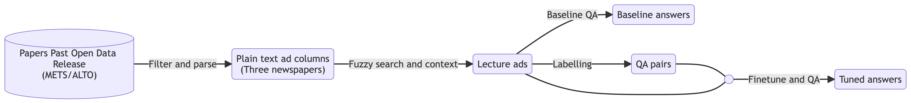
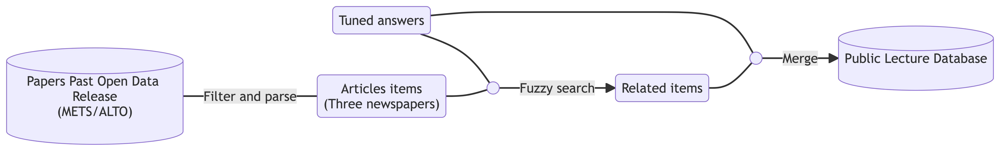
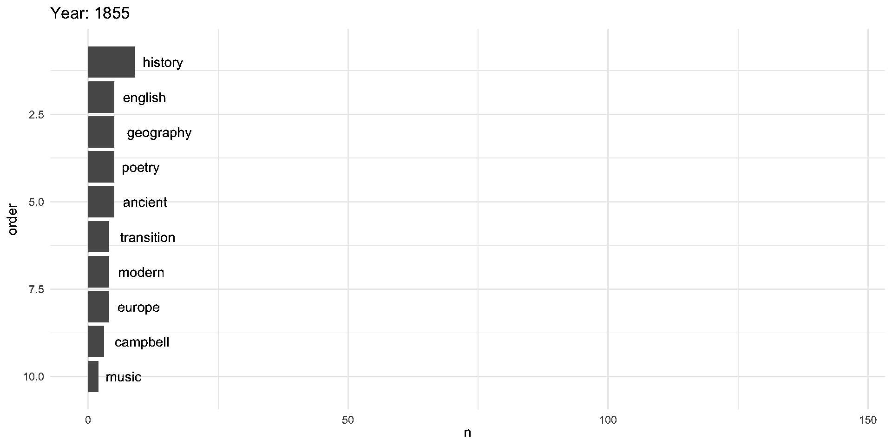
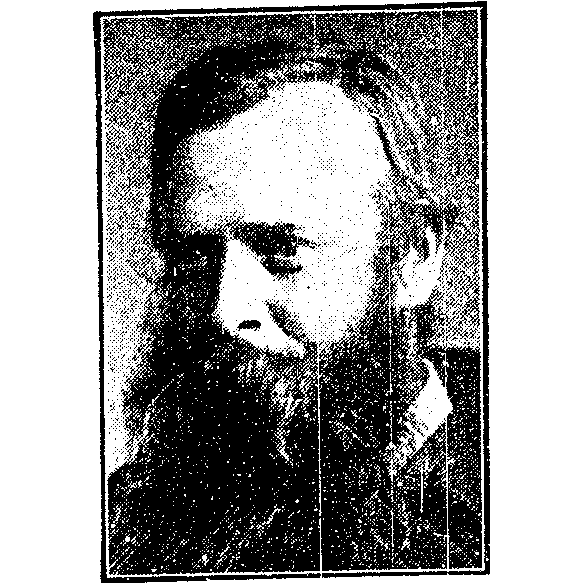

Identifying Contributors to (Philosophical) Lectures
An Historical Case Study
Joshua Wilson Black
New Zealand Institute of Language, Brain and Behaviour
University of Canterbury
Lera Protasova
UC Arts Digital Lab
University of Canterbury
Overview
- Background
- Research aims
- Methods
- Results
- Future directions
Background
19th C. English-language HoP
Two convictions:
- Idealism not an anomaly in English-language philosophy. (Muirhead 1931)
- Often carried out within religious bodies both established (Gouldstone 2005) and fringe (Campbell 1980).
- 19th Century English-language philosophy was (relatively) generalist.
For much of the nineteenth century, British philosophical discussion occurred in a generalist culture, not sharply demarcated from psychology, theology, political thought, or other cognate fields. When philosophy became a specialist discipline later in the century, it defined itself against the earlier generalist culture. (Stone 2022)
Stories told from the perspective of professional philosophy can miss both.
Canon Expansion
- Shifting attention to ‘generalist culture’ → new voices.
- In turn: demographic expansion.
- Combat the problem of ‘disappearing ink’ (Stone 2023, 5; O’Neill 1997).
- But start by letting the past speak for itself (e.g. Hutton 2014).
- We can expand geographically as well as demographically.
Ōtautahi Christchurch
- Original landscape: swamp, shingle, patches of forest.
- Rich food source for Ngāi Tahu.
- European settlement from mid-1800s.
- By 1900:
- At least three newspapers
- A college of the University of New Zealand
- 57,000 non-Māori (1901 census).
- What philosophy was going on here in the 19th C?
- …we’ll look to the newspapers.
Philosophy in (NZ) newspapers
- ‘Generalist’ philosophy in Britain has lots of periodicals.
- …but newspapers were the ‘intellectual infrastructure’ in early colonial NZ (Ballantyne 2011).
- Newspapers have (relatively) low barrier for entry.
- Recent work in Māori philosophy has used letters to the editor by Ngāi Tahu as philosophical source material (Maurice 2024).
Oxford Observer, 1892-12-24, https://paperspast.natlib.govt.nz/newspapers/OO18921224.2.5
The Star, 1899-02-04, https://paperspast.natlib.govt.nz/newspapers/TS18990204.2.19
Christchurch Press, 1863-06-03, https://paperspast.natlib.govt.nz/newspapers/TS18990204.2.19
Needle in a Haystack
- Keyword search is good for many purposes
- But what can be gained by automatic methods?
- My previous work involved labelling items as ‘philosophy’ (Wilson Black 2023).
- ⚠️⚠️⚠️ danger zone ⚠️⚠️⚠️
- Less contentious: find public lectures.
- These are advertised.
Lyttelton Times, 1893-04-15, https://paperspast.natlib.govt.nz/newspapers/LT18930415.2.3.7
New Zealand Times, 1911-05-09, https://paperspast.natlib.govt.nz/newspapers/NZTIM19110509.2.99.2
Advantages of Advertisements
- Focus on public lectures provides window into a philosophical practice (rather than preidentified content).
- Identifies people and places of interest.
- Starting point to pick out longer reports on public lectures.
- Window into wide range of intellectual topics.
- …but somewhat leaving behind philosophy.
Research aims
Research aims
- Identify advertisements for public lectures in early Christchurch newspapers.
- Extract information from identified lecture advertisements:
- Who by, what, where, when, how much, who to…
- Connect advertisements with reports and correspondence.
Methods
Big picture

- Core technologies:
- Fuzzy search with Ratcliff/Obershelp algorithm
- A question answering model
Papers Past Open Data
- In 2021, the National Library released a collection of 1,471,384 newspaper pages up to 1900.
- More has been released since (up to 1902)
- https://natlib.govt.nz/about-us/open-data/papers-past-metadata/papers-past-newspaper-open-data-pilot
- New Zealand (https://paperspast.natlib.govt.nz/) and Australia (https://trove.nla.gov.au/) provide central access to printed material.
Fuzzy Search
- Aim: Fit the advertising columns which contain adds for lectures.
- Problem: Bad Optical Character Recognition (OCR)
- Solution(ish): Fuzzy search.
- Start with “lecture”.
- Accept any result within ratio 0.77 by Ratcliff/Obershelp metric.
- Ratio determined by trial-and-error (with RA).
- Take context 100 words either side of result.
Question Answering
- Question answering models take a text (the context) and a question and return an answer
- The answer is the portion of the context which answers the question.
- We use a version of RoBERTa (Liu et al. 2019) trained on Squad 2.0 (Rajpurkar, Jia, and Liang 2018).
- Squad 2.0 includes unanswerable questions.
- Follows method used for public meetings in Australian newspapers (Virgo et al. 2022).
The Questions
- Who gave the lecture?
- What was the title of the lecture?
- What was the venue of the lecture?
- How much did it cost to attend?
- Who was the lecture for?
&c. &c. &c.
Finetuning
- Labelling: we labelled a series of question and answer pairs.
- 4800 pairs labelled (775 non-empty answers)
- Python packages:
superintendentandipyannotate. - I would now use Label Studio (https://labelstud.io/)
- Finetuning: Carried out on Google Colab.
- ‘Who’ performance: 67.5% → 85% accuracy.
Results
What?
| Title | count |
|---|---|
| NA | 13623 |
| life assurance | 389 |
| the | 93 |
| " | 60 |
| geology | 58 |
| practical and scientific physiognomy | 57 |
| elementary electricity | 54 |
| phrenology | 47 |
| first aid | 46 |
| chemistry | 43 |
| religion | 39 |
| health and disease | 37 |
| cre dulity and scepticism | 36 |
| leading men of leading nations | 34 |
| fever: or life and death | 33 |
| modern history | 32 |
| jurisprudence | 31 |
| the philosophy of marriage." | 31 |
| botany | 28 |
| life | 24 |
| life assubance | 24 |
| on life assurance | 23 |
| “ | 23 |
| music and morals | 21 |
| electro-biology | 20 |
| health | 20 |
| south africa | 20 |
| applied science | 19 |
| education | 19 |
| penmanship | 19 |
| ." | 18 |
| agricultural chemistry | 18 |
| electricity and its applications | 18 |
| english church history | 18 |
| latin | 18 |
| spiritualism | 18 |
| temperance | 18 |
| biology | 17 |
| classics | 17 |
| domestic cookery | 17 |
| leading men op leading nations | 17 |
| modern spiritual ism | 17 |
| natural science | 17 |
| san | 17 |
| sound, light, and heat | 17 |
| steam engine | 17 |
| chinese gordon | 16 |
| cookery | 16 |
| electro biology | 16 |
| reminiscences of palestine." | 16 |
| the forest of dean," | 16 |
| health, hygiene, food and physiology | 15 |
| matter and energy | 15 |
| mental science | 15 |
| physical geography | 15 |
| proto plasm and life | 15 |
| arctic voyages | 14 |
| benefits of life assurance | 14 |
| digestion | 14 |
| domestic economy and cooking | 14 |
| early italian and gallic history | 14 |
| food and its adulterations | 14 |
| life insurance | 14 |
| music | 14 |
| parliamentary photographs," | 14 |
| practical phrenology | 14 |
| westminster abbey | 14 |
| ; | 13 |
| astronomy | 13 |
| classics and english literature | 13 |
| electricity and magnetism | 13 |
| elementary experimental science | 13 |
| leading men of leading nations." | 13 |
| life and death | 13 |
| sound and the physical theory of music | 13 |
| technical education | 13 |
| the crescent and the cross | 13 |
| the cry of the children." | 13 |
| the moon | 13 |
| the progress of horticulture in canterbury | 13 |
| charles dickens | 12 |
| chemical affinity | 12 |
| health lectures | 12 |
| on geology | 12 |
| palestine | 12 |
| philosophy, science and religion | 12 |
| physiological." | 12 |
| protoplasm and life | 12 |
| the tabernacle | 12 |
| a trip through palestine," | 11 |
| burns | 11 |
| christianity | 11 |
| electricity | 11 |
| hearts and homes, or is marriage a failure? | 11 |
| modern spiritual ism," | 11 |
| on light | 11 |
| prohibition | 11 |
| radiant energy | 11 |
| technical education," | 11 |
| the maoris." | 11 |
| the modern ghost." | 11 |
| the moon," | 11 |
| useful metals | 11 |
| a pilgrimage through palestine," | 10 |
| bible | 10 |
| building construction | 10 |
| chemistry of agriculture | 10 |
| chemistry of the non-metallic elements | 10 |
| clairvoyance | 10 |
| cosmic philosophy | 10 |
| earthquakes | 10 |
| german | 10 |
| life assueance | 10 |
| martin luther." | 10 |
| nursing | 10 |
| outcast london." | 10 |
| practical and scientific physiog nomy | 10 |
| principles of physiology | 10 |
| the great pyramid | 10 |
| three years in a country village." | 10 |
| adolescence | 9 |
| america and the americans | 9 |
| an introductory lecture," | 9 |
| ancient archi tecture and ornamental art," | 9 |
| assimilative memory | 9 |
| descriptive of the new hebrides islands | 9 |
| elementary mathematics | 9 |
| from | 9 |
| german for beginners | 9 |
| history and geography of new zea land | 9 |
| love, courtship, and marriage | 9 |
| milton's paradise lost." | 9 |
| mutual life assurance | 9 |
| mythological god mammon, and modern civilisation." | 9 |
| old canterbury illustrated | 9 |
| old tasmania: convicts and aborigines." | 9 |
| os assimilated memory | 9 |
| postponement | 9 |
| synods | 9 |
| temple op truth | 9 |
| the intellectual faculties | 9 |
| theosophy and its teachings | 9 |
| all the explorers of australia | 8 |
| america and the americans," | 8 |
| courtship and marriage." | 8 |
| creation by and for jesus." | 8 |
| farm food and feeding | 8 |
| future punishment | 8 |
| geography and english history | 8 |
| heaven and hell | 8 |
| homes | 8 |
| how the world was made." | 8 |
| lan maclaren." | 8 |
| life among the maoris.” | 8 |
| life and death op a world | 8 |
| manu facture of time | 8 |
| mesmerism | 8 |
| method of instruction in uni versal history | 8 |
| my | 8 |
| outcast london," | 8 |
| practical and scien tific physiognomy | 8 |
| practical poultry keeping | 8 |
| prohibition and the direct vote.” | 8 |
| scientific sub jects | 8 |
| shorthand and the typewriter," | 8 |
| signs and symbols, facts and figures, faces and brains | 8 |
| the backwoods of america," | 8 |
| the crescent and the cross, | 8 |
| the education of the feelings | 8 |
| the fallacies of prohibition." | 8 |
| the holy land," | 8 |
| the origin and progress of the different styles of architecture." | 8 |
| the origin of living matter | 8 |
| the skin, its functions and diseases | 8 |
| the social evil | 8 |
| the tonic-sol-fa system of teaching to sing." | 8 |
| theosophy | 8 |
| trade and currency | 8 |
| westminster abbey." | 8 |
| zoology | 8 |
| —" the. fiery begin ning of our planet." | 8 |
| .” | 7 |
| a solution of the liquor question | 7 |
| anglo-saxons | 7 |
| billy bray," | 7 |
| cakes and baking." | 7 |
| christendom astray | 7 |
| courtship and marriage | 7 |
| darwinism." | 7 |
| darwinism.” | 7 |
| elementary zoology | 7 |
| english consti \\j tutional history | 7 |
| english language | 7 |
| english language and literature | 7 |
| experimental science | 7 |
| experimental science applied to arts and manufactures," | 7 |
| irish eviction scenes | 7 |
| light-production in animals | 7 |
| livingstone, the explorer,” | 7 |
| love, coubtbhif, and marriage | 7 |
| love, courtship, and maeeiage. | 7 |
| man in his relation to society." | 7 |
| modern scepticism and christian dogma | 7 |
| my life | 7 |
| n a n s e n, the hero of the polar regions | 7 |
| new zealand | 7 |
| panoramic views | 7 |
| philosophy of mesmerism | 7 |
| picturesque italy | 7 |
| practi cal and scientific physiognomy | 7 |
| preliminary theory of steam generation | 7 |
| sound, and the physical theory of music, | 7 |
| the creation of the heavens | 7 |
| the english speaking people, what —ey are and what they may be." | 7 |
| the history of a canterbury boulder | 7 |
| the madrigal: its origin and history | 7 |
| the modern magic lantern." | 7 |
| the origin of living matter." | 7 |
| the overland route | 7 |
| the queen’s jubilee | 7 |
| the recent volcanic eruptions in the north island | 7 |
| the world before man." | 7 |
| thetrial," "nazareth revisited." | 7 |
| wab in the transvaal | 7 |
| war on a white sheet | 7 |
| westminster abbey.” | 7 |
| —" the fiery begin ning of our planet." | 7 |
| —" the fiery begin ning of our planet.** | 7 |
| " the negro as a sooial and political factor in the united states | 6 |
| 81-metallism | 6 |
| an evening with the poets of ireland," | 6 |
| auricular confession." | 6 |
| buddhism | 6 |
| cbanmeb." | 6 |
| cheisti anity versus infidelity | 6 |
| confucius, the chinese sage." | 6 |
| discarding too technical terms | 6 |
| divine art of healing | 6 |
| educational question | 6 |
| english cathedrals | 6 |
| fifty years’ colonial experience." | 6 |
| flats, sharps, and naturals." | 6 |
| fred douglas, slave, orator, and emancipationist." | 6 |
| from london streets to the pulpit," | 6 |
| happy homes, and how to make them." | 6 |
| harmony." | 6 |
| health and food | 6 |
| history and geography of new zealand | 6 |
| home nursing of the sick | 6 |
| house and home." | 6 |
| irish topics | 6 |
| jackson's bay and back." | 6 |
| john kitto, the deaf author." | 6 |
| life assurance,". | 6 |
| lyttelton times | 6 |
| lyttelton times," | 6 |
| magnetism, and vital electricity or mesmerism | 6 |
| man, the master' of his own destiny." | 6 |
| music and morals, music and morals | 6 |
| nansen," the hero of the polar regions | 6 |
| on assurance | 6 |
| on phys io l ogy and kindred topics | 6 |
| physiog nomy | 6 |
| picturesque italy," | 6 |
| psychology and pathology, or mind and body in health and disease." | 6 |
| queer celestials | 6 |
| science | 6 |
| self-culture." | 6 |
| steam engines and other prime motors," | 6 |
| suffering woman and her heroic fortitude to endure"; | 6 |
| talmud | 6 |
| the analogy between light and sound and the study of vibrations in modern science," | 6 |
| the ceal and salt periods." | 6 |
| the crucifixion | 6 |
| the cultivation of literature in its bear ings on colonial life." | 6 |
| the descent of man, biological proofs | 6 |
| the descent of mao; biological proofß." | 6 |
| the eastern question | 6 |
| the fallacies of prohibition | 6 |
| the glory of tho press." | 6 |
| the new darwinism | 6 |
| the resurrection: its boating on the doctrine of a future life." | 6 |
| the skin ; its functions and diseases | 6 |
| the spanish armada." | 6 |
| the successful conduct of building operations." | 6 |
| the sun | 6 |
| the true lips op jacob | 6 |
| tower of london." | 6 |
| twenty years’ expe rience in one hour," | 6 |
| two and two make four." | 6 |
| vocal physiology | 6 |
| woman and the emotional | 6 |
| woman." | 6 |
| work of the society in eastern lands | 6 |
| ! the bright side of things. | 5 |
| " faces we meet, and how to bead them." | 5 |
| " the brain and nervous system and their diseases | 5 |
| , hearts and homes, or is marriage a failure? | 5 |
| a | 5 |
| a living and picturesque commentary | 5 |
| a month's travel on the euro pean continent." | 5 |
| a nicht at hame." | 5 |
| a solution of the liquor question." | 5 |
| a tbip through scoti,a.nd," | 5 |
| a trip through palestine." | 5 |
| an rent architecture and orna mental art,” | 5 |
| art from an educational point o£ view." | 5 |
| assurance | 5 |
| babylon's wave," | 5 |
| bernard palissy. | 5 |
| bome nureiug of the sick | 5 |
| brain, spinal cord and nervous system | 5 |
| cancer curable,” | 5 |
| celestial.wandewre— the planets." | 5 |
| charles dickens.” | 5 |
| christianity among the new zealanders." | 5 |
| co-operation." | 5 |
| creation." | 5 |
| eecent advances in electricity." | 5 |
| electricity, magnetism and vital electricity or mesmerism | 5 |
| engineering construction | 5 |
| engineering, geology, and chemistry | 5 |
| english constitutional history | 5 |
| everlasting burnings | 5 |
| experimental science applied to arts and manufactures | 5 |
| febethought veesus christianity ; | 5 |
| fifty years' colonial experience." | 5 |
| fiji and the fijians | 5 |
| food tux! its adulterations | 5 |
| freedom! op thought ob atheism." | 5 |
| general booth and his pauper soheme." | 5 |
| general gordon | 5 |
| gladstone, the greatest of living scotchmen | 5 |
| health, | 5 |
| health, and how to preserve it," | 5 |
| history | 5 |
| hot entrees | 5 |
| how the drinks are drugged | 5 |
| hydraulics | 5 |
| invalid cookery | 5 |
| ireland's wrongs." | 5 |
| is maeeiage a failure ? | 5 |
| joy | 5 |
| judas iscariot, the betrayer." | 5 |
| land of the pharaohs | 5 |
| life among the maoris." | 5 |
| life and times of bunyan | 5 |
| life assurance and its advantages | 5 |
| life in jerusalem | 5 |
| life jj assubance | 5 |
| lil^ifyvikiuihiim^ki! | 5 |
| love, courtship, and marriage. | 5 |
| mahometanism | 5 |
| man the master of his own destiny.” | 5 |
| man's ancestors." | 5 |
| materialism or theosophy, is there no alternative?" | 5 |
| materialism or theosophy, is there no alternative?” | 5 |
| methods of engineering study." | 5 |
| methods of teaching and organisation." | 5 |
| modern criti cism and scientific research | 5 |
| modern miracles in relation to christian origins." | 5 |
| my own profession,” or “ preachers and preaching." | 5 |
| nanbkn, the hero of the polar regions | 5 |
| nansen's farthest north." | 5 |
| nuksing | 5 |
| oliver cromwell | 5 |
| on | 5 |
| our children; their present and future." | 5 |
| pearls from the ocean of thought | 5 |
| pen and ink pictures of the past | 5 |
| philosophical | 5 |
| pictorial world." | 5 |
| principles of engineering construction | 5 |
| recent advances in electricity," | 5 |
| recent discoveries in assyria," | 5 |
| rise | 5 |
| roman empire | 5 |
| roman history | 5 |
| rome and liberty." | 5 |
| rotation of crops," | 5 |
| seeing and hearing: the eye and the ear | 5 |
| selection, ingestion, digestion, socially and physiologically," | 5 |
| sermons in stones,-' | 5 |
| shorthand and the type-writer | 5 |
| shorthand and the type-writer,” | 5 |
| shorthand, its history and development | 5 |
| sick, the halt and the lame. | 5 |
| socrates." | 5 |
| south' africa | 5 |
| state of religion in france," | 5 |
| tennyson,” | 5 |
| the applicability of the principle of federation to the british empire." | 5 |
| the blood, the circulation, the heart, the lungs. | 5 |
| the coming revolution." | 5 |
| the domestic and social affections | 5 |
| the effect of the reformation." | 5 |
| the geographical position, physical features, and natural resources of this colony | 5 |
| the hero of hayti," | 5 |
| the history of pictorial art," | 5 |
| the history of the english bible." | 5 |
| the indian mutiny | 5 |
| the land of the pharaohs | 5 |
| the land of the pharaohs, the land of the pharaohs | 5 |
| the law of faith | 5 |
| the martyr dreyfus and the humiliation of france." | 5 |
| the native powsr of thousht" admiaau | 5 |
| the nervous system and mind," | 5 |
| the new humourists." | 5 |
| the old and new world | 5 |
| the principles of physiology | 5 |
| the protrress of life | 5 |
| the shadow of the sword." | 5 |
| the sign of the cross | 5 |
| the tabernacle * | 5 |
| the talmud | 5 |
| the transit of venus | 5 |
| the trial | 5 |
| the war in the transvaal | 5 |
| the west coast of this province," | 5 |
| theosophy and christianity | 5 |
| truth | 5 |
| two victories of science | 5 |
| valuable minerals | 5 |
| w. h. mallock on 'does our church teach anything.*"" | 5 |
| wiluam lloyd garrison, hero and slave liberator " | 5 |
| woman and politics | 5 |
| woman ” tea | 5 |
| worthington's exposition ot genesis | 5 |
| —“ | 5 |
| “ on the progress of modem photography.” | 5 |
| “ the ships, navigation and commerce of the ancients." | 5 |
| " digestion—the disrestive organs and their pre servation," | 4 |
| " heads and faces, and how to read them." | 4 |
| "scenes of travel in many lands. | 4 |
| "scenes of trrfvcl in -man) lands.'' | 4 |
| , ho"es and haunts of jesus | 4 |
| ," | 4 |
| ,” the crescent and the cross,’* | 4 |
| . | 4 |
| 1 leading men of leading nations | 4 |
| 1000 milks i! , the nile," | 4 |
| a novelist's notebook." | 4 |
| a scottish herd laddie," | 4 |
| a sermon in candles | 4 |
| a sermon in candles,” | 4 |
| a stream of laughter from start to finish." | 4 |
| a study in animal life | 4 |
| a tbip through bcotland." | 4 |
| a trip through space." | 4 |
| a_t, from an educational point of view." | 4 |
| aib (to women | 4 |
| air, gas, petroleum, and refrigerating en gines | 4 |
| algebra | 4 |
| all europe in arms t | 4 |
| america and the americana." | 4 |
| america," | 4 |
| america,” | 4 |
| amsbica," | 4 |
| an | 4 |
| an cient architecture and orna mental art,” | 4 |
| an evening with the poets of ireland | 4 |
| ancient architec ture and ornamental art | 4 |
| ancient architecture and ornamental art," | 4 |
| appe; x cation of science to the useful arts " | 4 |
| arctic voyages,” | 4 |
| art op divine healing | 4 |
| association," | 4 |
| astronomy." | 4 |
| atheism | 4 |
| barry pain | 4 |
| bigin of man i is darwin bight? | 4 |
| building construction," | 4 |
| burns ! the poet and the man," | 4 |
| bussia. turkey, and england; or the eastern question.” | 4 |
| carlyle." | 4 |
| charac ter in hands." | 4 |
| character istics of british poetry | 4 |
| characteristic lifferenoea of the four gospels | 4 |
| chemistry of the non-metallio elements | 4 |
| chemistry, as applied to agriculture | 4 |
| china and the chinese," | 4 |
| china and the chinese." | 4 |
| china and the chinese.’* | 4 |
| church history," | 4 |
| city op the great king | 4 |
| civil engineering and surveying | 4 |
| classics, | 4 |
| classics, english literature, mathematics | 4 |
| common proverbs | 4 |
| creation.” | 4 |
| creeds and confessions.” | 4 |
| cruelties and penances to nuns and orphans." | 4 |
| daniel in babylon: an example for young men." | 4 |
| dark continent | 4 |
| darkest africa | 4 |
| darwinianism | 4 |
| darwinism | 4 |
| david copperfield." | 4 |
| david livingstone, the famous african explorer | 4 |
| do men g*_*' figs of thistles?" | 4 |
| domestic art industries limelight illustrations | 4 |
| egypt | 4 |
| egypt." | 4 |
| ei__ctricity and its applications | 4 |
| english literature | 4 |
| eussia, turkey, and england'; or,. the eastern question | 4 |
| evolution | 4 |
| evolution." | 4 |
| experimental science applied to,' arts and manufactures," | 4 |
| fever : or life and death, | 4 |
| fever: ob life and death | 4 |
| fever: or life a_jd death | 4 |
| fever: or llfe and death | 4 |
| firsd aid | 4 |
| france—her laws, customs, and revolutions." | 4 |
| free thought | 4 |
| from london streets to the pulpit | 4 |
| future of the human race," | 4 |
| galvanism, mesmerism, and clairvoyance | 4 |
| geology of tho district | 4 |
| great polar whale and the right whale | 4 |
| great social questions | 4 |
| handel," | 4 |
| heads and faces." | 4 |
| health and food. | 4 |
| health, hygiene, food akd physiology, | 4 |
| health, pood and physiology | 4 |
| hearing." | 4 |
| henry ward beecher, preacher and philanthropist." | 4 |
| his world-wide travels." | 4 |
| historic religions and their ultimate | 4 |
| home j\\ nursing of the sick | 4 |
| home news | 4 |
| homes and haunts np jesus | 4 |
| hygienic nursing | 4 |
| i modern scepticism and christian » dogma | 4 |
| immortality | 4 |
| imponderable | 4 |
| imponderables | 4 |
| india," | 4 |
| is | 4 |
| j physiol ogy ' and kindred topics | 4 |
| japan | 4 |
| japan and japanese tne land of the ridng sun." | 4 |
| john kitto, the deaf author.” | 4 |
| john stuart mill | 4 |
| juvenile templarism | 4 |
| land and the people," | 4 |
| land op the pharaohs | 4 |
| leading meif of leading nations | 4 |
| leather | 4 |
| leaves from my journal," | 4 |
| life . assurance | 4 |
| life and poetry of robert burns | 4 |
| life assubanoe | 4 |
| life assurance, its history, principles, and advantages | 4 |
| life in a monastery," | 4 |
| lilitrilfuuswilk | 4 |
| linvru-bpate life."' | 4 |
| lite absubanoe | 4 |
| love, couetship, and maeeiage | 4 |
| love, couetship, and marriage | 4 |
| love, couetship, and marriage. | 4 |
| love, courtship, and marriage,” | 4 |
| lyttolton times | 4 |
| m a b e i a o b.” | 4 |
| m abhort history of vocal muste." | 4 |
| man’s origin and destiny," | 4 |
| martin luther | 4 |
| martin luther," | 4 |
| materialism "or theosopby, is there no alternative." | 4 |
| materialism and phrenology | 4 |
| materialism or theosopliyvla thereno alternative?" | 4 |
| medical | 4 |
| mental healing." | 4 |
| migration and emi gration | 4 |
| moderation versus abstinence." | 4 |
| modern scepticism | 4 |
| monkeys, apes and men," | 4 |
| nansen’s farthest north | 4 |
| natural pheno men a.- | 4 |
| natural philosophy | 4 |
| no more sea." | 4 |
| non-metallic elements | 4 |
| ntertainment of the prince of the platform | 4 |
| oh life and death | 4 |
| oliver | 4 |
| oliver cromwell.” | 4 |
| oliver goldsmith | 4 |
| on the construction of the telescope." | 4 |
| on the senses | 4 |
| oriental customs | 4 |
| origin and future of man," | 4 |
| our children, their present and future | 4 |
| ox domestic cookery | 4 |
| ox •• america/’ | 4 |
| oxy-ether" limelight illus traiions | 4 |
| oxyhy drogen light | 4 |
| p h v s i o l ogy and kindred topics | 4 |
| partial impact | 4 |
| partial jmpaot j the new theory of the universe | 4 |
| peculiar philosophy | 4 |
| personality and individuality," | 4 |
| phrenology and physiognomy | 4 |
| physiol ogy and kindred topics | 4 |
| picturesque new guinea.” | 4 |
| practical and scientific phyßiognomy | 4 |
| practical phrenologist | 4 |
| prayer blasphemy and idolatry? | 4 |
| principles of engineering construction," | 4 |
| private and important | 4 |
| prohibition tactics." | 4 |
| proto. > plasm and life | 4 |
| recent advances in electricity,” | 4 |
| recklessness in belief," | 4 |
| religion and religionists in the united states | 4 |
| robert burns." | 4 |
| roman art. domestic art and plates of entertainment." | 4 |
| roman catacombs | 4 |
| satisfaction | 4 |
| sceptics.” | 4 |
| science or religion | 4 |
| scientific sub f\\ jects | 4 |
| scottish life and character." | 4 |
| self-culture.” | 4 |
| senses," | 4 |
| sheol, pubgatoby and limbo | 4 |
| slavery and slave trade." | 4 |
| social customs op the hindoos | 4 |
| social diseases and worse remedies." | 4 |
| socialism | 4 |
| some forces that assist evolution," | 4 |
| south sea missions | 4 |
| spain and its moorish marvels | 4 |
| spiritualism, and spiritualists | 4 |
| spiritualistic phenomena | 4 |
| subjert of fever : oh life and death | 4 |
| tardy | 4 |
| telegraph | 4 |
| tell the truth | 4 |
| temperance question | 4 |
| tennyson : | 4 |
| the .being of god md creation of man," | 4 |
| the aims and objects of the irish national league." | 4 |
| the application of chemistry to agri culture." | 4 |
| the application of chemistry to agriculture | 4 |
| the art of primitive greece | 4 |
| the atonement | 4 |
| the battle of armageddon; or, england versus russia.” | 4 |
| the being of god and creation of man," | 4 |
| the beoent volcanio £suptlon in the north island | 4 |
| the bible foe the world," | 4 |
| the boys of derry." | 4 |
| the brain and nervous system and their diseases | 4 |
| the city of the great king | 4 |
| the conquest of the congo," | 4 |
| the crescent and the cross,” | 4 |
| the crescent and the cross. | 4 |
| the crucifixion." | 4 |
| the eight-hour system of labour." | 4 |
| the fall of i ' sian and the atonement | 4 |
| the footprints of thu creator); or, is there a god ?" | 4 |
| the footsteps of our lord from the cradle to the throne. | 4 |
| the god the christians worship,” | 4 |
| the greatest humourist | 4 |
| the growth of the christ spirit | 4 |
| the hero of hayti.” | 4 |
| the holy land | 4 |
| the human face," | 4 |
| the inspiration of the bible | 4 |
| the kingdom of god." | 4 |
| the land of long ago | 4 |
| the ligaments and muscles op the human body.” | 4 |
| the light and shade of a great city,” | 4 |
| the liquor habit and its cure | 4 |
| the literary history of the bible | 4 |
| the maories | 4 |
| the modern ghost.' | 4 |
| the modern magic lantern | 4 |
| the moon,'* | 4 |
| the moon.” | 4 |
| the nature, office, and constitution of the church of christ." | 4 |
| the need of orangeism in the present day." | 4 |
| the origin of the world | 4 |
| the people and the pulpit." | 4 |
| the philosophy of the trinity | 4 |
| the philosophy op marriage." | 4 |
| the physical characters, climate, products, people, | 4 |
| the planet mars; is it inhabited ? | 4 |
| the power op example." | 4 |
| the present aspect of the sunday question in canterbury." | 4 |
| the progress of lite,” | 4 |
| the pyramids | 4 |
| the races of mihkihd, their origin and their destiny. | 4 |
| the sooi and after the grave," | 4 |
| the soul and after the grave." | 4 |
| the story of the bible in monument and manu script," | 4 |
| the study of architecture and decorative art,” | 4 |
| the sun and modern solar discoveries | 4 |
| the tabernacle in the wilderness," | 4 |
| the tabernacle.” | 4 |
| the talmud," | 4 |
| the theology of to-day | 4 |
| the wesleyan missions in the , south seas, and their claims." | 4 |
| the west coast of this province | 4 |
| the world at war." | 4 |
| theology and moral instruction." | 4 |
| tiikosophy and christianity | 4 |
| tonic sol-fa system of teaching to sing | 4 |
| transit op venus | 4 |
| truth t. falsehood | 4 |
| university life in paris | 4 |
| vocal music | 4 |
| waterloo | 4 |
| what are human beings?" | 4 |
| what does it all mean?" | 4 |
| what is art, and who are artists." | 4 |
| what they are, and what they may be." | 4 |
| whittier, the quaker poet of america," | 4 |
| will the nations disarm? is russia sincere?" | 4 |
| william iii.," | 4 |
| wisdom | 4 |
| woman | 4 |
| woman and morals | 4 |
| woman: her place, past, present, and, } to come." | 4 |
| woman’s intellectual relation," | 4 |
| women in the 19th century | 4 |
| women in the middle ages | 4 |
| works of fiction." | 4 |
| —" the world before lite, and lite in its early forms." | 4 |
| —'* leaves from my journal | 4 |
| —“ the fiery begin ning of our planet.” | 4 |
| “ scenes of travel in many lands,” | 4 |
| " christ and the political aims of men," | 3 |
| " from the blue mottntainb to the andes | 3 |
| "some re markable new zealand animals." | 3 |
| '■ | 3 |
| )—" the bush rangers of new south wales," | 3 |
| . the bright sidk of things. thk bright side ok things | 3 |
| .—" god's door\\v-j\\s..'" | 3 |
| .—“ the applicability of the principle of federation to the british empire | 3 |
| 1, homes and haunts op jesus | 3 |
| :—“ | 3 |
| ; geology | 3 |
| ; shakespeare's plays | 3 |
| ;— i. through the dark continent | 3 |
| ;—“ england one hundred years ago | 3 |
| ;—“ england one hundred years ago.” | 3 |
| a clergyman's views of the church | 3 |
| a key to the moral difficulties of the old testa ment." | 3 |
| a living and picturesque commentary." | 3 |
| a new cosmic philo sophy," | 3 |
| a new cosmic philoso phy | 3 |
| a pilgrimage through palestine | 3 |
| a severe indictment." | 3 |
| a short history of the irish people | 3 |
| a short history of vocal music." | 3 |
| a stronomy." | 3 |
| a supper with the ancient greeks | 3 |
| a trip round the world," | 3 |
| a trip round the world,” | 3 |
| a trip through scotland | 3 |
| a trip through scotland : | 3 |
| a trip through space.” | 3 |
| a trip to england." | 3 |
| a trip to the o coral islands | 3 |
| a visit to australia." | 3 |
| abraham lincoln ; his life and its lessons." | 3 |
| acclimatisation as specially applicable to this province | 3 |
| aftbb dark in london." | 3 |
| aftee daek in london." | 3 |
| agricultural chemistby | 3 |
| agricultural matters | 3 |
| aid | 3 |
| alaska, the land of the midnight snn." | 3 |
| alcohol | 3 |
| ameeioa," | 3 |
| an expedition to the central part of the new zealand alps," | 3 |
| an hent architecture and orna iental art,” | 3 |
| anau and milford sound | 3 |
| ancient and modern hymns | 3 |
| ancient archi tecturo and ornamental art," | 3 |
| ancient arec teoturo and ornamental art," | 3 |
| and the devil | 3 |
| animal magnetism | 3 |
| anxiety about the future | 3 |
| appli- | 3 |
| arctic voyages," | 3 |
| art from an educational point of view." | 3 |
| ashort history of vocal music , | 3 |
| astro— my." | 3 |
| bacteria | 3 |
| beautiful dissolving views | 3 |
| beee, bee culture, and bee-hivee." | 3 |
| bees, bee cal tare, and bee hires,” | 3 |
| bernard palissy." | 3 |
| bi-metallism | 3 |
| bible and sword, bible and sword. | 3 |
| biblical and archaeological scieuoe.” | 3 |
| bn the anglo-saxons | 3 |
| bobbers and murderers among tbe plants,” | 3 |
| borne and liberty, or dangers ahead to | 3 |
| botany and zoology | 3 |
| british scenery | 3 |
| buddha and christ; their lives and teaching compared." | 3 |
| buddha and christ; their lives and teachings compared." | 3 |
| building construction,” | 3 |
| canterbury collegiate union. english language and literature | 3 |
| certain phases of modern chemistry." | 3 |
| chaldea and egypt the nurseries of science and religion | 3 |
| chemistry of the non- metallic elements | 3 |
| china and the chinese.*' | 3 |
| christ and social law." | 3 |
| christian'nurture." | 3 |
| christianity in relation to modern thought | 3 |
| christianity; what it is, and how it originated." | 3 |
| christmas day | 3 |
| church mis sionary work is japan " | 3 |
| city of the great king | 3 |
| civil engineering | 3 |
| classics, english litera ture, mathematics | 3 |
| cli-mistry of cookery," | 3 |
| commons and english political life | 3 |
| concessions of evolutionists | 3 |
| congratulation." | 3 |
| consumption." | 3 |
| convent life and her perils and trials | 3 |
| cre dulity and scepticism." | 3 |
| creation | 3 |
| creation. | 3 |
| creeds | 3 |
| creeds and confessions." | 3 |
| cure of stammering and surgical opera tions | 3 |
| daily life in palestine;” | 3 |
| daily telegraph | 3 |
| dairy matters | 3 |
| daniel and the revelation | 3 |
| daniel in babylon, an example for young men," | 3 |
| david livingstone | 3 |
| david; his true biography.” | 3 |
| davto livingstone, _| j the*famous african explorer | 3 |
| death, death or transition? | 3 |
| deleterious effect of home lessons | 3 |
| description of the exterior and interior of the groat pyramid | 3 |
| descriptive astronomy | 3 |
| devil | 3 |
| diet, digestion absorption, nutrition. elimination." | 3 |
| digestion, from the mouth to th< stomach and liver inclusive | 3 |
| digestion: from the mouth to the stomach and liver inclusive | 3 |
| digestion: from tho mouth to the stomach and liver inclusive | 3 |
| discarding too technical terms, he talked plainly and without offence. | 3 |
| domestic cookery '■ and thb advantages of cooking with gas. | 3 |
| dramatists | 3 |
| earthquakes." | 3 |
| eastern and biblical life | 3 |
| ecce homo," | 3 |
| educating the horse | 3 |
| electricity and its ap plica) lon | 3 |
| electricity and its appliance to submarine cables." | 3 |
| electricity and its application to submarine cables | 3 |
| electricity and magnetism wiu | 3 |
| electro-biology ; | 3 |
| ends and means in animated nature.”.,, | 3 |
| english history and geography | 3 |
| eontgen rays and their use ia photography | 3 |
| eternal punishment or reward." | 3 |
| evening news | 3 |
| evening post," | 3 |
| evii in the light of science; its cause and cure." | 3 |
| evil effects | 3 |
| evil in the light of science; its cause and cure." | 3 |
| evolu tion." | 3 |
| evolution of the nervous system." | 3 |
| evolution," | 3 |
| explanatory of hia method of instruction in universal history | 3 |
| f fa: hor mathow." | 3 |
| facts and fallacies of materialism and idealism | 3 |
| faith healing | 3 |
| falsehood v. truth | 3 |
| father matthew | 3 |
| feasts, fasts and festivals." | 3 |
| fen knd ink pictures of the fast," | 3 |
| fiji and the fijians." | 3 |
| first aid," | 3 |
| fishhe | 3 |
| following or kindred subjects | 3 |
| food | 3 |
| food and digestion | 3 |
| food of plants, drainage, and the rotation of crops. | 3 |
| forbidden fruit." | 3 |
| forbidden fruit.". | 3 |
| forbidden f»uit, mc man tempted mc, and i did eat." | 3 |
| free | 3 |
| freedom of thought, or atheisbf* | 3 |
| friendly societies | 3 |
| from atheism to christianity | 3 |
| funny philosophy | 3 |
| geneeal description and statistics of london." | 3 |
| general description and statis tics of london." | 3 |
| general gordon" | 3 |
| genesis | 3 |
| genesis j l and 1f.," | 3 |
| genesis." | 3 |
| george whitfield | 3 |
| german for beginners, with a view to commercial correspond nre | 3 |
| girl, the woman, the wife, the mother. | 3 |
| gladstone as a theologian.” | 3 |
| gladstone, the greatest dp living scotchmen." | 3 |
| gladstone, the greatest of ltvtng scotchmen | 3 |
| glapstone as a theologian | 3 |
| god and man." | 3 |
| god and the devil | 3 |
| good tem • plarism, its origin, principles, and objects, | 3 |
| groups of organs | 3 |
| habit and character" | 3 |
| handel | 3 |
| hands across the seas; or, the . spirit of patriotism." | 3 |
| health, wealth, | 3 |
| hearts and homes, or is marriage a failure? to | 3 |
| hearts and homes; oe, is maeeiage a failuee | 3 |
| heaven amd hell | 3 |
| heaven, its, blessedness and cer tainty, | 3 |
| heaven; its blessedness and certainty," | 3 |
| hedley vicars." | 3 |
| hell | 3 |
| herbert spencbb and social evolction." | 3 |
| heredity or re-incarnation." | 3 |
| heredity,” | 3 |
| hints on home nursing,” | 3 |
| histoby and geogeaphy of new zealand | 3 |
| history of the church of england | 3 |
| holy land | 3 |
| home, sweet home," | 3 |
| home, sweet home,” | 3 |
| homes and haunts of jesus | 3 |
| hone nursing of the sick | 3 |
| hot cross buns." | 3 |
| house and hume," | 3 |
| how and why she escaped.” | 3 |
| how england freed ber slaves." | 3 |
| how not to be ill | 3 |
| htpatia and bruno/ two freethoiigbt martyrs | 3 |
| humourous lecture-entertainment (sequel to muse and morals | 3 |
| hygiene ot the home.’* | 3 |
| hypnotism | 3 |
| i laws of sound human ear and throat, theory of music | 3 |
| i studying universal history | 3 |
| i the primitive christians | 3 |
| iceland’s wrongs | 3 |
| ignatina. his life aadletfcera." | 3 |
| ignorant pride." | 3 |
| immortality of the soul ?" | 3 |
| imponderable light, heat, elec tricity, magnetism, | 3 |
| important christian doctrines | 3 |
| in music | 3 |
| indian mutiny | 3 |
| individualism, socialism and religion, or the ethics of christianity.” | 3 |
| injurious insects | 3 |
| instinct." | 3 |
| instinct.” | 3 |
| integrity in business." | 3 |
| inthe'wesleyanchuioh,kaiapol .. | 3 |
| ireland and the irish." | 3 |
| ireland and the irish.". | 3 |
| is feee thought atheism?" | 3 |
| is nature mobal." | 3 |
| is the immortality of the soul taught in the bible ?" | 3 |
| its scenery, its people and pursuits | 3 |
| j the bright side op things the bright side of things | 3 |
| j. m. barrie, the singer of thrums epics." | 3 |
| japan and the japanese | 3 |
| john bollthe english | 3 |
| john suntan.” | 3 |
| joshua and the son and moon." | 3 |
| kaces" | 3 |
| karma and re-incar- ' nation." | 3 |
| karma, reincar nation." | 3 |
| land and the people | 3 |
| land of the pharaohs, the land of the pharaohs | 3 |
| leading nations | 3 |
| lessons | 3 |
| li f e assue anc | 3 |
| libel | 3 |
| liberty," | 3 |
| life as surance | 3 |
| life asbubance. | 3 |
| life assurance; its history, principles, and advantages. | 3 |
| life in a public house." | 3 |
| life jb assurance | 3 |
| life' assurance, its history, principles, and advantages | 3 |
| light and shade of a great city | 3 |
| llfe among the maoris.” | 3 |
| lon shakespeare's early manhood | 3 |
| louis napoleon the .msitrch of the world." | 3 |
| love and marriage,’ | 3 |
| love, courtship and mab j riage" | 3 |
| love, courtship and marriage | 3 |
| love, courtship, and mabbiaob | 3 |
| love, ootjhtbhip, and marriage. | 3 |
| luke." | 3 |
| luther and calvin." | 3 |
| magnetism and galvanism | 3 |
| malachi to matthew." | 3 |
| man the master of his own destiny | 3 |
| manhood of shakespeare | 3 |
| man’s ancestors,” | 3 |
| marriage & divorce | 3 |
| marriage: is it a failure? | 3 |
| married couple | 3 |
| martin a tale of the sixteenth ontnry," | 3 |
| matrimony: what is it? | 3 |
| matte* and energy | 3 |
| melanesian mission | 3 |
| mental, fgl science | 3 |
| mesmerism and its proper gapplication | 3 |
| mesmerism, and its medical application, with electro- biological demonstrations | 3 |
| methodist preacher, lecturer, and philanthropist | 3 |
| methodist union | 3 |
| methods of engineering study | 3 |
| mind and matter." | 3 |
| miracles." | 3 |
| missing lin ics." | 3 |
| mission and tropical scenes | 3 |
| modern christian | 3 |
| modern histor v," | 3 |
| modern literature and the decay el faith," | 3 |
| modern methods of heating and ventilation, their principles and application | 3 |
| modern methods of heating and ventilation, their principles and application," | 3 |
| modern methods-of heating and ventilation, their principles and application | 3 |
| monnonism, its irigin and development." | 3 |
| moody | 3 |
| moon shadows and moonshine | 3 |
| moon, oub companion planet | 3 |
| moses' mistakes, | 3 |
| moses’ mistakes | 3 |
| mother parts of australia | 3 |
| mr spurgeon and his work." | 3 |
| mr walter scott." | 3 |
| mrs bbs ant and theosophy." | 3 |
| mrs besant, and life after death." | 3 |
| music aud mora's ”), | 3 |
| my trip to england, and what i saw there." | 3 |
| mystery and magic | 3 |
| n "sun | 3 |
| nansen's " farthest north" | 3 |
| nansen's farthest north," | 3 |
| nansen, the hero of the polar regions | 3 |
| nansen,” the hero of the polar regions | 3 |
| nansen’s “ farthest north,” | 3 |
| natural phenomena | 3 |
| natural religion | 3 |
| nature and the supernatural | 3 |
| negeo life and chabacteb in west afbica," | 3 |
| new guinea; its besoubces, people and pbospects." | 3 |
| new zealand poultry expert,” | 3 |
| new zealand, as it was and as it is," | 3 |
| norfolk island, southern islands | 3 |
| oh chemistry | 3 |
| oh, ye of little faith." | 3 |
| old saylnrs | 3 |
| on the progress of modem photography.” | 3 |
| on the progress of modern photo graphy," | 3 |
| one year in new zealand." | 3 |
| organic chemistry | 3 |
| our disobedience of nature’s laws.” | 3 |
| our tourists | 3 |
| out cast london." | 3 |
| p.u e g a t o e y." | 3 |
| paces,” | 3 |
| parallel authors." | 3 |
| partial impact: the new theory the universe | 3 |
| paxitirism, and spiri tualism | 3 |
| pbbsonal impbbsbions of america" | 3 |
| peace with honour." | 3 |
| peculiar philosophy," | 3 |
| personal impressions of america" | 3 |
| personal reminiscences of work in great britain | 3 |
| personality and individuality | 3 |
| philosophy. soience and religion | 3 |
| phonography | 3 |
| phreqology | 3 |
| physical reverence." | 3 |
| physiognomy | 3 |
| physiognomy, its daily application," | 3 |
| physiology and psychology, or the physical basis of mind.'' | 3 |
| picturesque now guinea," | 3 |
| playmates.” | 3 |
| poems and features,"’ | 3 |
| polygraphist and humourist | 3 |
| polypathic medical | 3 |
| pompeii | 3 |
| pompeii and vesuvius: a glimpse of a ) | 3 |
| populae lecxuee os life assueance | 3 |
| popular errors." | 3 |
| practical and scientific i physiognomy | 3 |
| practical and scientific physiog | 3 |
| practical education," | 3 |
| practical education." | 3 |
| practical physiognomy." | 3 |
| practice | 3 |
| practice and pleading in actions in the supreme court. | 3 |
| praotical and scientific physiog- teeth, eaes," | 3 |
| prayer and the atonement | 3 |
| prayer blasphemy andldolatry? | 3 |
| praying for ingf.rsoll." | 3 |
| predestination and election. | 3 |
| preliminary theory of steam gone ration | 3 |
| priests and priestcraft | 3 |
| problems of poverty | 3 |
| problems of poverty." | 3 |
| progress of education in canterbury." | 3 |
| prohibition and the dikect vote. | 3 |
| prom atheism to christianity, and what i learned on the way." | 3 |
| proofs of spiritualism | 3 |
| protoplasm and lots " | 3 |
| quarrel between sairey gamp and betsy prig | 3 |
| questions | 3 |
| re cent experimental science," | 3 |
| re. cent experimental science," | 3 |
| reason and revelation." | 3 |
| recent discoveries in' assyria | 3 |
| recent electric science." | 3 |
| recent experimental science | 3 |
| reform veesus prohibition | 3 |
| regeneration, or grafting; and what comes of it." | 3 |
| reincarnation and heredity | 3 |
| reincarnation, its meaning and ptir* , pose," | 3 |
| reli gion | 3 |
| religion and quackery." | 3 |
| religion and religionists in thb united staces." | 3 |
| religion, in its relation to modern criticism and scientific research," | 3 |
| rem /_l gion | 3 |
| reminiscences | 3 |
| reminiscences of his aus- doore | 3 |
| rob roy" temperance mission,"" | 3 |
| robert burns.” | 3 |
| romance op astronomy,’* | 3 |
| rome revisited." | 3 |
| rsceni (experimental science | 3 |
| rudiments of music and har mony | 3 |
| rudiments of music and har mony,” | 3 |
| rudiments of musio and har mony,” | 3 |
| russia, turkey, and england; or the eastern question." | 3 |
| samoa" | 3 |
| sanitation | 3 |
| sb hiss of leci'ubes | 3 |
| sceptics | 3 |
| science and mystery | 3 |
| science arid the bible | 3 |
| science of the greeks, the arabs, and of tho renaissance | 3 |
| science, self, and society," | 3 |
| scottish wit and huinonr." | 3 |
| second degree | 3 |
| seeing and hearing \\ toe eye and the ear." | 3 |
| sensatives;" and consequently his power in dealing with disease | 3 |
| sermon | 3 |
| shakespeare's early manhood," | 3 |
| shakespeare's plays | 3 |
| shorthand and the type-writer," | 3 |
| shorthar.d and the typewriter," | 3 |
| silent influences." | 3 |
| similarities in electricity, magnetism, and human magnetism | 3 |
| sketches from the his tory of jerusalem.” | 3 |
| social forces, or what history reveals." | 3 |
| social problems." | 3 |
| social sine and their remedies." | 3 |
| socialism another gospel | 3 |
| soriea | 3 |
| soupb and stews." | 3 |
| south ska missions | 3 |
| spiritual christianity, its meaning and mission." | 3 |
| star of bethlehem | 3 |
| startling drink facts." | 3 |
| state bank versus foreign capital | 3 |
| sthe applicability of the principle of fede- j j ration to | 3 |
| struggle for political and religions liberty." | 3 |
| subjects of interest in connection with the exhibits. | 3 |
| switzerland; an object lesson to politicians.” | 3 |
| tabernacle, and its symbolic teachings | 3 |
| tales of the maoris and their legends | 3 |
| tardy justice ; | 3 |
| tasmania, past and pbesent," | 3 |
| tasmania, past and present," | 3 |
| tasmania,” | 3 |
| taste, smell and feeling | 3 |
| tbs chatham islands | 3 |
| temper ance round the world"; | 3 |
| ten nights in a bar-room | 3 |
| tennyson | 3 |
| tennyson : the poet of the age | 3 |
| th b apostie ‘ f bo em ah ; | 3 |
| tha comio aspects of theology." | 3 |
| the , talmud | 3 |
| the -lessons | 3 |
| the abolition of thep s | 3 |
| the age of beasts and advent of man.” | 3 |
| the age we live in." | 3 |
| the agnostics' ness to chri_tianity." | 3 |
| the american civil war | 3 |
| the apostle of burmah, or the life and labors of | 3 |
| the argument from design and evolution," | 3 |
| the art of chaldea, as syria, and persia." | 3 |
| the art of design." | 3 |
| the ascent of man | 3 |
| the beautiful." | 3 |
| the becen volcanic eruptions in the north island," | 3 |
| the being of god andthe creation of man," | 3 |
| the best lady speaker | 3 |
| the bible and inspiration." | 3 |
| the bible; what is it aad who -srrote it?" | 3 |
| the birth op the soul." | 3 |
| the brain, and nervous system and their diseases | 3 |
| the brain, and nervous system, and their diseases | 3 |
| the call to battle." | 3 |
| the catacombs of rome." | 3 |
| the characteristic differences of the four gospels | 3 |
| the church as a factor, in moral and sociat reforms | 3 |
| the church aud the world." | 3 |
| the chuuifsiion." | 3 |
| the colleen bawn." | 3 |
| the coming revolution, or labour’s triumph.” | 3 |
| the conquest of the congo; or, africa for christ" | 3 |
| the crescent and the cross, the crescent and the cross | 3 |
| the cry of the children | 3 |
| the dangers | 3 |
| the death of the devil | 3 |
| the development of social life in england | 3 |
| the devil and bis angels." | 3 |
| the devil and his angels." | 3 |
| the discoveries of cavendish. davy and faraday | 3 |
| the divinity of oar lord jesus christ | 3 |
| the doctor of law." | 3 |
| the duties and land surveyor | 3 |
| the ear, its functions and diseases | 3 |
| the ear; ita functions and diseases.." | 3 |
| the ear; its functions and diseases.." | 3 |
| the earth and its satellite: rotation rendered visible | 3 |
| the eh principles of physics | 3 |
| the empire of the dead." | 3 |
| the establishment "of the kingdom of heaven everywhere oh earth." | 3 |
| the evolution of modern socialism | 3 |
| the experimental science of the century | 3 |
| the failuebb op infidelity." | 3 |
| the failures op infidelity | 3 |
| the fall of man | 3 |
| the fallacies' of prohibition | 3 |
| the fertilisation of flowers," | 3 |
| the fostering and encouragement of national industries and products." | 3 |
| the girl, the woman, the wife, the, mother. | 3 |
| the girl: the woman: the wife-; the mother. | 3 |
| the girl: the woman: the wife: the mother. | 3 |
| the glory of the press." | 3 |
| the god the christians i worship." | 3 |
| the government, its formation and character." | 3 |
| the great pyramid." | 3 |
| the growth of love." | 3 |
| the hawk and the hare." | 3 |
| the hawk and the hare.” | 3 |
| the heart, the lungs, the blood and it circulation," | 3 |
| the hero of haiti.' 6333 prohibition and the direct vote. | 3 |
| the history of british colonisation.” | 3 |
| the history of pictobial aet | 3 |
| the history of the church of scotland | 3 |
| the hook ef sports and sabbath observance | 3 |
| the husband, the father." | 3 |
| the ial lamb.” | 3 |
| the ifctriyrdom of m%n." | 3 |
| the inspiration and the authen. ticity of the bible," | 3 |
| the jews: their past, present, and future.” | 3 |
| the land of the phaeaohs | 3 |
| the late m. pasteur, the great bacteriologist." | 3 |
| the late mutiny and rebellion in india," | 3 |
| the life and death of a world | 3 |
| the life and immor tality | 3 |
| the life and works of tourgenieff.” | 3 |
| the long. "white cloud | 3 |
| the madrigal: its origin and history" | 3 |
| the madrigal: its origin and history” | 3 |
| the madrigal: itß. origin and . history." | 3 |
| the maori." | 3 |
| the mechanism of the production op voice; | 3 |
| the methodist ecumenical con ference " | 3 |
| the missionaries and the maori war." | 3 |
| the modern magic lantebn | 3 |
| the moss, commandments | 3 |
| the new spirit." | 3 |
| the now darwinism | 3 |
| the old testament.” | 3 |
| the order of the temple and its relation to marriage." | 3 |
| the origin of man." | 3 |
| the origin of the society | 3 |
| the overland boute | 3 |
| the p.eight side of things.” | 3 |
| the parliament of religions, evolution and christianity." | 3 |
| the personal return of the lord; the firet resurrection; | 3 |
| the physical geography and geology of.new zealand | 3 |
| the poblic men and women op america.” | 3 |
| the prepaatumo! | 3 |
| the preparation of the land for icrael's brriara." | 3 |
| the price of liberty is eternal vigilance | 3 |
| the price of liberty is eternal vigilance," | 3 |
| the problem of the ages," | 3 |
| the progress of secular vocal music | 3 |
| the proportions of a man.” | 3 |
| the recent volcanic emotions in the north i«land," | 3 |
| the revelations of science." | 3 |
| the rights of man. | 3 |
| the rise and progress of the church. part it.—the diamond fields | 3 |
| the science | 3 |
| the second advent of our lord." | 3 |
| the second coming of our lord." | 3 |
| the second coming of the lord." | 3 |
| the serpent which tempted eve." | 3 |
| the skin ; its functions and diseases." | 3 |
| the stage and the pulpit." | 3 |
| the star of; bethlehem," | 3 |
| the sting op death." | 3 |
| the stone age in europe." | 3 |
| the story of the jacobite rebellion | 3 |
| the story of the transvaal trouble | 3 |
| the supernatural character of christ," | 3 |
| the tabernacle and its symbolic teaching | 3 |
| the theo sophical view of the atonement | 3 |
| the theory of life utanoe." | 3 |
| the threefold writing over the cross." | 3 |
| the time of trouble | 3 |
| the true life of jacob | 3 |
| the will of god." | 3 |
| the world; the flesh and the uevil" | 3 |
| the wreck of the waieaeapa | 3 |
| thec«pe colony | 3 |
| themoral social an* commercial aspect of the prohibition question | 3 |
| theory of astronomy | 3 |
| theosophicai cancaprion of duty and | 3 |
| theosophy and theology | 3 |
| theosophy the religion _of jesus." | 3 |
| thm wizard's grave ,, | 3 |
| tho marvels of a lump of coal," | 3 |
| tho reformation | 3 |
| thomas carlyle." | 3 |
| thomas hood, poet and punster,” | 3 |
| three years in an english village | 3 |
| tii e dei gk t side op thing s | 3 |
| tlis vision of the invisible | 3 |
| to women | 3 |
| to-morrow-wars, -evolutions, and tumults. | 3 |
| total abiilanoc j from a medical point view | 3 |
| total abstinence | 3 |
| tower op london | 3 |
| transition from the ancient to the modern history of europe." | 3 |
| trinity cow gr egationa l schooled om | 3 |
| troubles with ihe afghan trilies | 3 |
| true l1f«: of jacob | 3 |
| true manliness | 3 |
| truth.▼. christianity." | 3 |
| ttutiongs of scotland | 3 |
| two and two make pour." | 3 |
| victorian reminiscences | 3 |
| vital 'importance to all men', | 3 |
| vital importance | 3 |
| vocal musio | 3 |
| war correspondent | 3 |
| what can theosophy teach us?" | 3 |
| what i saw and heaiu> in , america." | 3 |
| what she was, what she is, and what she means. | 3 |
| wheße aee the dead?” | 3 |
| whither the tribes go up: a modern pilgrimage to jerusalem.” | 3 |
| why | 3 |
| why i bkcame a baptist." | 3 |
| william the conqueror.’* | 3 |
| wilson barrett's noble play the sign of the cross | 3 |
| wit and humour, phrenology | 3 |
| with limelight views | 3 |
| with oxyhy drogen light | 3 |
| woman a>"d home." | 3 |
| woman and economics | 3 |
| woman and economics." | 3 |
| woman in relation to the nation,” | 3 |
| woman's in fluence | 3 |
| woman's influence." | 3 |
| woman's intellectual relation." | 3 |
| woman,” | 3 |
| woman.” | 3 |
| wonders of astronomy | 3 |
| wonders of egypt.” | 3 |
| work of god." | 3 |
| wyoliit, the morning star of the reformation | 3 |
| x gladstone, ;' the greatest of living scotchmen | 3 |
| yae old faith and the new." | 3 |
| —'* georce whitfield." | 3 |
| —“ and god created man in his own image.’* | 3 |
| —“ are there any christians p | 3 |
| —“ england one hundred years ago | 3 |
| —“ from atheism to christi anity." | 3 |
| —“ tennyson’s idylls of the king | 3 |
| “ a delusive deeam; its feuits.” | 3 |
| “ heads and paces.” | 3 |
| “ the bsitish parliament, and its present leader.’ | 3 |
| “ the first to fall,” | 3 |
| “ the preparation of the land for israel’s betnrn | 3 |
| “ the priced. liberty is eternal vigilance.’’ | 3 |
| “ what i learnt from mrs besant.” | 3 |
| “some objections to the bible con sidered." | 3 |
| •‘art from an educational point of view." | 3 |
| ! english constitutional history | 2 |
| " echoes from j tbe welsh hills."' | 2 |
| " electricity and its appliance to submarine cables." | 2 |
| " faces we meet, and how-to i bead them." | 2 |
| " from the slave hue to tbe senate | 2 |
| " incidents from martyroloßy." | 2 |
| " new zealand's wonderlandf | 2 |
| " on somo eddies in the social currents of the world." | 2 |
| " recollections of a visit to america during the late war." | 2 |
| " some methods op dealing with the unemployed." | 2 |
| " some more old~folks at home." | 2 |
| " the being of god and creation of man, | 2 |
| " the blood, the circulation, the heart and the lungs," | 2 |
| " the blood, the circulation, the heart and the lunjjs," | 2 |
| " the character of christ an argument for the truth of christianity. | 2 |
| " the fallacies ob* prohibition." | 2 |
| " the god the chbibtians wob9hip " deals', | 2 |
| " the great and prectoua promises of god." | 2 |
| " the offering up of isaac." | 2 |
| " the sign of the c*oae» 3fi | 2 |
| " what i saw and heard in america.” | 2 |
| " where the pilgrim lost his burden." | 2 |
| "howand why she escaped." | 2 |
| "some new experiments to illustrate force, energy, momentum, &c.” | 2 |
| "~~ | 2 |
| "£tate bankv foreign capital,' | 2 |
| '* jackson's bay and back." | 2 |
| '.. -the ldng white cloud," | 2 |
| '• historic religions and their ultimate," | 2 |
| '■ the history of the scottish covenanters." | 2 |
| *'onr anglo-saxon ancestry | 2 |
| , | 2 |
| , digestion, the digestive organs and their preservation | 2 |
| ,; principles of en gineering construction," | 2 |
| ,—“ the teacher.” | 2 |
| ,” popula’e" | 2 |
| - protoplasm and life | 2 |
| -" lessons from modern babylon.” | 2 |
| -creation | 2 |
| -v geology,. | 2 |
| . ' english church history | 2 |
| . money: its uses and abuses, | 2 |
| . music | 2 |
| . o a mountain daisy | 2 |
| . the arts of design | 2 |
| ." the inspiration of tho blale." | 2 |
| .'" phrenology | 2 |
| .'.-i.- ~.,;.?!•<■. | 2 |
| .and-hygiene hi connection | 2 |
| .—" the known and the unknown." | 2 |
| .—“ extremes that meet | 2 |
| .—“ i 'payer and the atonement.” | 2 |
| /'westminsterabbey." | 2 |
| 1. experiences of a war correspondent | 2 |
| 1897: its triumphs and disasters ;an agnostic review." | 2 |
| 4335 pall, history and doom op satan | 2 |
| 7abisbnacle and its symbolic teaching | 2 |
| : digestion | 2 |
| :— the puritans | 2 |
| :—" england one ■ hundred tears ago." | 2 |
| :—“ england one hundred tears ago | 2 |
| :—“ the life and works of tourgenieffi." | 2 |
| ; chemistry, as applied to agriculture. | 2 |
| ; egypt | 2 |
| ; fudaei, in things literary and religious | 2 |
| ; structure and cure of the skin j the muscles and their work | 2 |
| ; the cannibals and the ! pygmies | 2 |
| ; the christian life, and the world of infidelity | 2 |
| ; the days op?the giants | 2 |
| <«how the siaks tell us theib' story," | 2 |
| ? man's natural yet spiritual origin | 2 |
| \\ | 2 |
| _ scots wha ha»," | 2 |
| a "week at the chathams." | 2 |
| a b.y/abino | 2 |
| a bi tine | 2 |
| a bide rough palestine,” | 2 |
| a bird’s-eye view of present day problems | 2 |
| a century ago." | 2 |
| a century of mis sionary work | 2 |
| a clty-pf millions | 2 |
| a comparison and a contrast." | 2 |
| a conscious universe and the evolution of man." | 2 |
| a conscious universe and the evolution of man.” | 2 |
| a cotress of six liutuees oka new cosmic philosophy | 2 |
| a grand literary treat | 2 |
| a hebrew hero." | 2 |
| a jolly good’ fellow.’’ | 2 |
| a juvknilk crime | 2 |
| a lantern lecture | 2 |
| a little child." | 2 |
| a man's a man for" a* that."" | 2 |
| a modern pilgrimage to jerusalem.” | 2 |
| a month's travel on the european continent." | 2 |
| a morning without clouds | 2 |
| a new cosmic philo- | 2 |
| a new story of the stars | 2 |
| a night with dickens," | 2 |
| a pilgrimage thkough palestine,” | 2 |
| a recen visit to the ruins of pompeii," | 2 |
| a romantic couple and their expe riences.” | 2 |
| a scottish herd laddie | 2 |
| a search for the first man.” | 2 |
| a sebmon in candles | 2 |
| a self-exiled hero; | 2 |
| a short history of vocal music | 2 |
| a short history of vqoa| musla," | 2 |
| a social sin." | 2 |
| a study in j animal life | 2 |
| a toub through palestine." | 2 |
| a tour to te anau and milford sound | 2 |
| a trip | 2 |
| a trip 'jo australia." | 2 |
| a trip beyond the sun." | 2 |
| a trip round the world | 2 |
| a trip through scotland" | 2 |
| a trip through the old country, or england’s beauty spots | 2 |
| a trip to australia." | 2 |
| a week at the chatham's." | 2 |
| a""leotnre" | 2 |
| a.-i unwulcuine gnest." | 2 |
| abraham, the father of ! the faithful." | 2 |
| acclimatisation, as specially applicable to this province | 2 |
| achievements of the christian religion service | 2 |
| acis and galatea;" | 2 |
| adaptation | 2 |
| adaptation of means to ends in the structure of the animated kingdom," | 2 |
| adolescence, or from marriage to man hood." | 2 |
| adolescence, or from marriage to manhood." | 2 |
| afghanistan and the afghans." | 2 |
| africa and the africans," | 2 |
| after dark in london," | 2 |
| age of world, cradle of eace and pre-adamio times | 2 |
| agnoetioism and morality | 2 |
| agnosticism | 2 |
| agnosticism and morality | 2 |
| agrfasultaal jol chemistry | 2 |
| aim jix israel and the anglo-saxon race | 2 |
| alas those uhiuies," | 2 |
| alaska, the land of the midnight sun.” | 2 |
| alcohol and bible in | 2 |
| all europe in arms!" | 2 |
| america and the americana | 2 |
| an apology for bores.' | 2 |
| an even a i ing in the south sea islands | 2 |
| an evening "with dickens," | 2 |
| an evening with 'the' sealslanders | 2 |
| an evening with old friends." | 2 |
| an evening with the poets of ibkuand | 2 |
| an evening with the poets." | 2 |
| an evening with the posts of ibeland," | 2 |
| an evening with the posts of ibeland." | 2 |
| an expedition to the central part | 2 |
| an hour with the prince of irish humourists, samuel lover." | 2 |
| an intellectual revolution and its moral consequences | 2 |
| an overland journey | 2 |
| an overland journey from pekin to | 2 |
| an overland journey from pekin to st. petersburg, | 2 |
| an unchangeable saviour.*’ | 2 |
| an! cooking | 2 |
| an! cooking to | 2 |
| ancient and modern magic | 2 |
| ancient architecture and ornamental art,” | 2 |
| ancient religion of india, modern theosophy, | 2 |
| ancient tools." | 2 |
| and god created man in his own image." | 2 |
| and shakespearian entertainment | 2 |
| animal physiology | 2 |
| anti-infidel crusade | 2 |
| antient drawing," | 2 |
| appli cation of electricity | 2 |
| appli- j_ cation of electr city | 2 |
| application of electricity ■’ | 2 |
| are the discrepancies of the gospels only apparent?”— | 2 |
| are the laws of nature the laws | 2 |
| aristotle's ethics | 2 |
| arrows." | 2 |
| art of character beading | 2 |
| art of divine healing | 2 |
| art of treading human character | 2 |
| as fafubh of itaeyonlike, and | 2 |
| asbura nob | 2 |
| astro nomy | 2 |
| astronomy and theßiole | 2 |
| attempts | 2 |
| aud mysteries of the bible | 2 |
| avisit to australia." | 2 |
| babylon's ware," | 2 |
| baflaelle | 2 |
| balaam, or the wages of un righteousness.” | 2 |
| bassj, bas-i, bass! | 2 |
| battle of armageddon, and one on phrenology | 2 |
| battles, bivouacs and banquets battles | 2 |
| battles, bivouacs and banquets, | 2 |
| becent electric science." | 2 |
| bees, bee culture, and bee-hivea." | 2 |
| beet root sugar industry | 2 |
| beetroot sugar industry | 2 |
| beminisoences of palestine | 2 |
| benefits of life assueance | 2 |
| bernard palissy | 2 |
| bey s. b. crockett, novelist. | 2 |
| bhows8 hows | 2 |
| bible and higher criticism | 2 |
| bible history and the re cords of the monuments,” | 2 |
| bible in burmah and japan," | 2 |
| bible in foeeign lands | 2 |
| bible in foreign lands | 2 |
| bible temperance and the effects of alcohol on the human body. | 2 |
| bible views of faith and works." | 2 |
| bible worship; or modern idolatry | 2 |
| biddy.” | 2 |
| bights of woman | 2 |
| billy brat," | 2 |
| billy bray," tho celebrated cornish miner and preacher. | 2 |
| billy bray." | 2 |
| billy, bray." | 2 |
| bimetallism | 2 |
| bird's-eye view of present day problems | 2 |
| birth and death of christ,” | 2 |
| bishop op melanesia | 2 |
| bishop wallis on pa triotism and the church.'' | 2 |
| black hero of hayti | 2 |
| blbly manhood of shake-. speabe," | 2 |
| blnstzatsd fay a model | 2 |
| bocal industries prom an. economic point of view | 2 |
| body, brain, and mind : how related to each other," | 2 |
| boman empire | 2 |
| book of ecclesi astes | 2 |
| booth's "darkest rngland | 2 |
| borne | 2 |
| bow to buoooed in lite | 2 |
| bright side of things | 2 |
| british beeaery | 2 |
| british colonisation.” | 2 |
| british heart? of oak." | 2 |
| british scenery," | 2 |
| britons never shall be slaves.’* | 2 |
| budd ha and christ; cnetr lives and teachings compared." | 2 |
| buddha and christ; their lives and teaching compared.” | 2 |
| burns " intersperced with scotch sougs. | 2 |
| butterflies, moths and beetles | 2 |
| c | 2 |
| cakes and pastry. . | 2 |
| campbell and his poetry." | 2 |
| cancer curable") | 2 |
| canterbury times | 2 |
| canterbury-college | 2 |
| captains of the world | 2 |
| cbaraoteristios of british poetry | 2 |
| celebrities | 2 |
| celebrities of great britain." | 2 |
| celestial.wandewre— the planets | 2 |
| chancellor of the new zet • <"■ | 2 |
| character in hands." | 2 |
| characteristic phase of british poetry | 2 |
| characteristics of british poetry | 2 |
| characters and scenes of early church history." | 2 |
| characters and scenes of early churoh history." | 2 |
| charles dickens wil | 2 |
| charles dickens,” | 2 |
| chatham islands | 2 |
| cheap cookery | 2 |
| cheap cycling excursion to mt cook anc lakes | 2 |
| cheap cycling excursion to mt cook and lakes | 2 |
| cheibtchuech | 2 |
| chemical affiinity.” | 2 |
| chemical affinity." | 2 |
| chemistry and biology | 2 |
| chemistry of the ncm-metallio elements | 2 |
| chemistry of the non-metallic element? | 2 |
| chemistry, ns applied to agriculture | 2 |
| chemistry, os applied to agriculture | 2 |
| chemistry,asappbbdto agriculture | 2 |
| children’s entertainment | 2 |
| china," | 2 |
| china’s bajblt ages | 2 |
| choral service | 2 |
| christ and social law | 2 |
| christ weepingover jerusalem." | 2 |
| christian evidence and social purity society | 2 |
| christian manli ness," | 2 |
| christian sociology,” | 2 |
| christianity and democracy.” | 2 |
| christianity and freethonght analysed and. •' contrasted,'* | 2 |
| christianity and science | 2 |
| christianity versus infidelity | 2 |
| christianity; | 2 |
| church life in england and | 2 |
| circulation of the blood and nervous sys tems of" sensatives;" | 2 |
| clairvoyance." | 2 |
| classics, english literatim?, | 2 |
| cold meats and what to do with them. | 2 |
| colonists | 2 |
| common pro | 2 |
| common pro. verb*.’’ | 2 |
| communion with spirits | 2 |
| communism and its limits | 2 |
| concessions of evolimonists," | 2 |
| concessions, of evolutioniets," | 2 |
| consciousness | 2 |
| constitutional law of new zealand | 2 |
| constructive art in the homeric age | 2 |
| consumption.” | 2 |
| convent life," | 2 |
| convent'life and her perils and trials | 2 |
| conversion, or how the heart is touched." | 2 |
| cookery ill | 2 |
| court ehip, and marriage in the light of phrenology," | 2 |
| couttnictive art m the homeric age.” | 2 |
| cranmer." | 2 |
| creation hy miss anna brandon | 2 |
| creation. the great trance sleeper and somnambulist | 2 |
| creative jfowcr of » thotikht." | 2 |
| creative poiver of thought | 2 |
| creeds and confessions as connected with recent currents of thought | 2 |
| crescent against cross, armenia's / thrilling story | 2 |
| crooked sticks." | 2 |
| cruemes and penances to kuna and orphans." | 2 |
| ct agriculture | 2 |
| cure of i stammering and surgical operations | 2 |
| daffodil ijl | 2 |
| daily life | 2 |
| daily life in palestine | 2 |
| dairy industry | 2 |
| daniel and the bevelatio-f»" | 2 |
| daniel and the revelation," | 2 |
| danielin babylon: an example for young men." | 2 |
| darwinism,” | 2 |
| david livingstone, tho famous african explorer | 2 |
| david, his true biography.” | 2 |
| david." | 2 |
| db. mitchell," | 2 |
| dealing with the unemployed difficulty | 2 |
| death | 2 |
| death and after | 2 |
| deeply affecting the dairy. industry | 2 |
| deforms and revolution?— | 2 |
| depression | 2 |
| dickens | 2 |
| diet, digestion, absorption, nutrition, elimination.” | 2 |
| digestion, the digestive organs and their preservation. | 2 |
| discussing physiology, health & disease | 2 |
| dissolving views of the holy land | 2 |
| domestic art industries | 2 |
| doubt”: the unbelief of orthodoxy | 2 |
| dr lomax-smith ou theosophy and materialism | 2 |
| dr. duft" | 2 |
| dr. lomax smith | 2 |
| drainage | 2 |
| drainage, and the rotation of crops, | 2 |
| drainage," | 2 |
| drink and the sooial evil," | 2 |
| drumtochty sketches," | 2 |
| early canterbury," | 2 |
| early italian and gallio history | 2 |
| earthquakes,’' | 2 |
| east oxrord | 2 |
| easter; its origin and its meaning the lamb that was shin." | 2 |
| eastern manners and customs | 2 |
| ebb and flow." | 2 |
| echoes from the welsh hills | 2 |
| eecent dis coveries in assyria.” | 2 |
| eecent discoveries in assyria | 2 |
| eeligion and eaelt 'histoey | 2 |
| egypt and assyria." | 2 |
| egypt and the books of moses | 2 |
| egypt, ancient and modern.” | 2 |
| egypt, and the books of moses" | 2 |
| egypt," | 2 |
| eist o’bbyen hoarb | 2 |
| el-ctrreity and masrnetism | 2 |
| elec tricity, magnetism, and vital electricity or mesmerism | 2 |
| electricity and its applica tions | 2 |
| electricity, magnetism and "vital electricity or mesmerism | 2 |
| electricity, magnetism, and electro- biology | 2 |
| electricity, magnetism, and human magnetism," | 2 |
| electricity.” | 2 |
| electro - biological experi ments | 2 |
| elemen taey chemistry | 2 |
| elementary | 2 |
| elijah " aad - acie and galatea," | 2 |
| en astro nomy | 2 |
| end of the world, in the light of the bible and modern science." | 2 |
| energy, momentum, ac." | 2 |
| engineering, geology, and chemistry, | 2 |
| english church history " | 2 |
| english consti- v-a tutional history | 2 |
| english consti- xj tutional history | 2 |
| entertain tfent rs | 2 |
| enthusiasm.", | 2 |
| eoman empire | 2 |
| ephesus | 2 |
| eternal | 2 |
| eternal life: what is it? whose is it ? when obtained ?*’ | 2 |
| eternal vigilance is thb price of liberty." | 2 |
| ethical evolution," | 2 |
| eussla, turkey, and england; or, the eastern question | 2 |
| eva,” | 2 |
| evolution of a great city," | 2 |
| evolution of the nervous system.” | 2 |
| evolution,” | 2 |
| ex cursion to the west coast." | 2 |
| expebiences of a wab cobbe spondent | 2 |
| explanatory historical lecture | 2 |
| explanatory of hia method of instrnotltm'ln universal history | 2 |
| explanatory of the various systems of teaching singing | 2 |
| extraordinary delineations of national characteristics! | 2 |
| f old canterbury illustrated | 2 |
| f* >od of plants, drainage, | 2 |
| fall particulars | 2 |
| fall, history, and doom of satan." | 2 |
| farthest north."' | 2 |
| father tha, m b s | 2 |
| fcoptics." | 2 |
| femal* eescue home," | 2 |
| ffistoric religions and their ultimate | 2 |
| fiji, past and present,” | 2 |
| fireworks | 2 |
| first aid to tho injured,” | 2 |
| first aid,” | 2 |
| first aid-to men | 2 |
| first phases of scepticism; or, how men drift into infidelity | 2 |
| first-rate excellence from his own negatives. | 2 |
| fjfe assurance | 2 |
| food of plants, drainage, and the rotation of crops, | 2 |
| footatepa of sb. paul in rome," | 2 |
| foqp of plants, drainage; | 2 |
| for the benefit of the sabbatl fihool,) | 2 |
| forbidden fruit | 2 |
| forbidden fruit/ 5 ".the woman tempted mc, and i did eat | 2 |
| france —her laws, customs, aiid revolutions." | 2 |
| fred. douglas, slave, orator, and emancipationist," | 2 |
| free* chair taken at half past ",. | 2 |
| freechought and social problem | 2 |
| freedom of thought and its limits | 2 |
| freedom of thought and the liberty of the preaa," | 2 |
| freethought versus christianity | 2 |
| freethought." | 2 |
| french communists and english republicans.” | 2 |
| from london street* to the pulpit," | 2 |
| from the blue mountains to the andes | 2 |
| fsycholoujr and re- ugion | 2 |
| ftefu j aical geography and geology of | 2 |
| fudge | 2 |
| fuel and pood." | 2 |
| futubb punibhment wiu | 2 |
| galvanism, mesmerism, and ] clairvoyance | 2 |
| galvanism, mksherism, and clairvoyance | 2 |
| genbeax boon | 2 |
| general booth's social scheme; i a criticism and a warning." | 2 |
| general gordon." | 2 |
| genesis and science | 2 |
| german tor beginners | 2 |
| gladstone, statesman and controver sialist | 2 |
| gladstone, the greatest op living scotchmen.’’ | 2 |
| god and man | 2 |
| god's impartiality." | 2 |
| god: aim of philosophy | 2 |
| god: athnism, agnostic ism, pantheism.'' | 2 |
| good tem • plarism, its origin, principles, and objecte | 2 |
| good templaey | 2 |
| good templar | 2 |
| good templar- ism, its origin, principles, aud objects | 2 |
| gospel conttadictfona.*' | 2 |
| gospel lantern | 2 |
| gospel of the christ | 2 |
| gospel ot the christ | 2 |
| government life assurance | 2 |
| great captains of the world | 2 |
| great modern thinkers, and their thoughts on religion | 2 |
| great pieuchera | 2 |
| great polar whale and the bight whale | 2 |
| great preachers | 2 |
| great teachers and systems of education." | 2 |
| greater britain and little englanders | 2 |
| greater britain and little englanders." | 2 |
| grecian art | 2 |
| grecian religion | 2 |
| gtcneral gordon | 2 |
| guesses at the riddle of existence." | 2 |
| gympie miner | 2 |
| habit and character. | 2 |
| haie, beaed, feet, hands. handweiting," | 2 |
| happy homes and how | 2 |
| happy homes and how to make them." | 2 |
| has the age of muiaoles passed?" | 2 |
| heads & faces," or how to read character" | 2 |
| heads and faces m the oddfellow's hall west oxfoed | 2 |
| health and how to preserve it | 2 |
| health and how to preserve it. | 2 |
| health in relation obstacles we can remove and means we may employ | 2 |
| health, "' hygiene,' ~~ food and physiology | 2 |
| health, and how to preserve it, with special reference to cholera | 2 |
| heart, lungs, blood and circulation,” | 2 |
| hearts and homes; or, is carriage a failure ? | 2 |
| hearts and homes; or. is marriage a failure ? | 2 |
| heat and cold,” | 2 |
| heaven; a reply to rev. john rasking." | 2 |
| hell, or the nature and duration of future punishment." | 2 |
| henry georges attack on herbcrf. sneucrr." | 2 |
| her influence | 2 |
| herod the king." | 2 |
| hie tabernacle and ita sym bolical teaching | 2 |
| hinrtuituu or hruhm'niain | 2 |
| his ascent of mount egmont | 2 |
| his experience in new zealand and other countries | 2 |
| his mission aht travels through the would | 2 |
| his personal reminiscences of the american civil war," | 2 |
| his toub in palestine | 2 |
| his worship | 2 |
| historic keliglons and their ijltimate," | 2 |
| historic religions and treir . ultimate | 2 |
| history and develop- u\\_ dient of shorthand" | 2 |
| history of freemasonry in canterbury | 2 |
| history of the church of scotland,” | 2 |
| hoads and faces: how to bead them." | 2 |
| hoci-l purity; | 2 |
| holy trinity | 2 |
| homan empire | 2 |
| home and beauty | 2 |
| home and education.” | 2 |
| home cookery | 2 |
| home fturaiog of the sick | 2 |
| home fturaiog of the sick " | 2 |
| home hygiene | 2 |
| home life and influence,” | 2 |
| home, bweet home," | 2 |
| home, sweet home." | 2 |
| home, sweet home.” | 2 |
| homes and haunts op jesus | 2 |
| hope | 2 |
| hope.” | 2 |
| house and home " | 2 |
| how 2000 of the glasgow poor were fed.** | 2 |
| how i lost my arm," | 2 |
| how is man's salvation possible?" | 2 |
| how is man’s salvation possible?” | 2 |
| how it can be done! practical socialism | 2 |
| how the bible came "; or, "infidelity cored." | 2 |
| how to love your enemies." | 2 |
| how to play and how to teach the piano. | 2 |
| how to select - a partner in life." | 2 |
| how to succeed in life," | 2 |
| how we got our bible | 2 |
| how we got our bible,” | 2 |
| how we got the bible." | 2 |
| how we got the bible.” | 2 |
| how wo got tll(j biblo chair to be taken | 2 |
| howand why she escaped." | 2 |
| hudiniouvu of muse and baiinony," | 2 |
| human physiology | 2 |
| hyeiouic nursing. | 2 |
| hygienic nursing," | 2 |
| i thf scripture doctrine of original sin." | 2 |
| i ♦' fall, history; and. doom of satan." | 2 |
| i. - protoplasm and mfie " | 2 |
| ideals, past, peesent and futuee.” | 2 |
| ight production in animals | 2 |
| ihe persecution of the jews in russia." | 2 |
| illustrated with dissolving views | 2 |
| immorality at the east bank of the selwyn river." | 2 |
| immorality at the east bank of the selwyn river.” | 2 |
| immorality at the east bank of the selwyu river.” | 2 |
| immortality of the soul | 2 |
| imperial federation," | 2 |
| imperial federation." | 2 |
| importance and advantages of friendly benefit societies." | 2 |
| important christian doc trines | 2 |
| in connection with the above society | 2 |
| increase and decrease.” | 2 |
| india | 2 |
| india, the people, their manners, customs, oastes | 2 |
| indio, | 2 |
| infidel mis-readings and misrepresentations of bible | 2 |
| infidelity and suicides versus christianity and self-preservation | 2 |
| inspira tion of tho iume " | 2 |
| instructress in domestic economy and cooking | 2 |
| invertebrate life,” | 2 |
| ip a man die, shall he live again ?’’ | 2 |
| ireland: post. present, and future." | 2 |
| ireland—past, present, and future." | 2 |
| ireland’s wrongs | 2 |
| is darwin right ? man's natural yet spiritual origin | 2 |
| is it a failure | 2 |
| is man a dual being? " | 2 |
| is secularism the true philosophy of life | 2 |
| is supplicatory prayer blasphemous and idolatrous p | 2 |
| is the« another lifer" | 2 |
| its history, its mpna mants, and its religion | 2 |
| j " the story of co-operation. | 2 |
| j geology | 2 |
| j\\- livered | 2 |
| jackson ? s bay and back." | 2 |
| jacob and esau." | 2 |
| jane conquest," | 2 |
| jane conquest," poem | 2 |
| japan and madagascar | 2 |
| jerusalem.” | 2 |
| jesus christ himself the chief miracle." | 2 |
| jicneill - burke mission," or "a revival of religion | 2 |
| john banyan." | 2 |
| john bull and his island,” | 2 |
| john bunyan." | 2 |
| john knozand tbe if»bt reformation." | 2 |
| john st uar t mill,” | 2 |
| john stuart mill,” | 2 |
| john suntan." | 2 |
| jonah, the ancient mariner." | 2 |
| jonahl and the whale.” | 2 |
| joseph's coat," | 2 |
| joshua david son,” | 2 |
| joy and peace: on what are they founded? | 2 |
| jre-incarnaiioo," | 2 |
| jsnglish church history," | 2 |
| judas: a bible beacon for to-day." | 2 |
| june ist—christ and social law | 2 |
| juvenile crime.” | 2 |
| kaeoa " | 2 |
| karma, reincar nation | 2 |
| kingdom of vita." | 2 |
| kip van winkle." | 2 |
| kn<li3h church histwy" wiu | 2 |
| knowledge or belief; which is the safes quids?" | 2 |
| knowledge, power and love.” | 2 |
| kudimoute of mne<c and harmony," | 2 |
| kussia! ussia! what she is and what she means | 2 |
| l and selected eeai | 2 |
| l building construction | 2 |
| lady temperance advocate | 2 |
| lan maclaren and the heroes of drum toehty," | 2 |
| land laws and land nationalisation," | 2 |
| land op the pharaohs, the land op the pharaohs | 2 |
| land op the pkaeaohs | 2 |
| lecture on phrenology | 2 |
| lecturesbn biology | 2 |
| leoture, bast belt | 2 |
| lessons from history of morals." | 2 |
| lessons from modern babylon.” | 2 |
| lessons we learn ( but slowly," | 2 |
| libels, slanders and contempt of court. | 2 |
| liberty league | 2 |
| lie-incarnation l metempsychosis | 2 |
| liecent discoveries in assyria," | 2 |
| life among the maoriee." | 2 |
| life and teaching of aristotle | 2 |
| life and times of runyan | 2 |
| life and works of horrtok | 2 |
| life as 8 usance | 2 |
| life as s u range | 2 |
| life asbub anc | 2 |
| life asbub anc e . | 2 |
| life asbueance | 2 |
| life assueancb | 2 |
| life assurance its history, principles, and advantages | 2 |
| life assurance," | 2 |
| life assurances/its history, prin ciples, and advantages. | 2 |
| life beyond : the border.”- | 2 |
| life in a convent | 2 |
| life in a convent.” | 2 |
| life in'a convent | 2 |
| life insorancs. | 2 |
| life lessons te toung colonists.** | 2 |
| life of gladstone." | 2 |
| life of joshua davidson | 2 |
| lifeamong the maoris." | 2 |
| lifeboat work on the human sea | 2 |
| light | 2 |
| light production in animals | 2 |
| lighthouee foundations." | 2 |
| limelight illustration!;, | 2 |
| limelight views | 2 |
| lipe assueance | 2 |
| liquor versus law. | 2 |
| listianity in relation to modern thought | 2 |
| literary and religious | 2 |
| livingstone," | 2 |
| llfe assurance | 2 |
| llg3meii-t?: | 2 |
| lll-'fi in jitkusahim like | 2 |
| lnspiration of the bible | 2 |
| lntellectual unrest. | 2 |
| loomsday | 2 |
| lord shaftisbury the philanthropist | 2 |
| lord’s work in england | 2 |
| louis napoleon, the monarch of the world." | 2 |
| love and marriage | 2 |
| love, courtship and mar riage," | 2 |
| love, courtship and mar riage,” | 2 |
| love, ootjhtbhip, and marriage | 2 |
| lower« charges that criminals were sheltered in london," | 2 |
| ls | 2 |
| ls the * ible safe? | 2 |
| ls the universe conscious t grand musical programme | 2 |
| lyttelton times." | 2 |
| l££: | 2 |
| m a b b i a g b." | 2 |
| magic lantern," | 2 |
| magnetism and electricity will be coma | 2 |
| magnificent dissolving views | 2 |
| mahometanism." | 2 |
| man and hi3 master." | 2 |
| man and his masters.". | 2 |
| man and morals; or the doctrine of human depravity | 2 |
| man and the guerilla | 2 |
| man in thb stone age | 2 |
| man's genius | 2 |
| man's natdbal yet bpieitual | 2 |
| man's natural yet spiritual origin. | 2 |
| man's origin and destiny | 2 |
| man's origin and destiny; | 2 |
| man's shortsightedness." | 2 |
| man, his relation to god and nature. | 2 |
| man, the master of his own destiny." | 2 |
| man: consciousness the beginning of knowledge, avenues of con sciousness | 2 |
| marriage | 2 |
| marriage and divorce." | 2 |
| marriapre and divorce; or the , priest and the home." | 2 |
| martin luther: a tale of the sixteenth century.” | 2 |
| martin luther: his life and labours." | 2 |
| mateenity | 2 |
| materialism or theoaopby, | 2 |
| materialism ot theostfphy | 2 |
| matrimony. | 2 |
| matter and energy," | 2 |
| matthew arnold, critic and poet," | 2 |
| matthew arnold, critic and poet,” | 2 |
| me hosktng and the cheistadelphlans.” | 2 |
| men and manners | 2 |
| mental healing | 2 |
| mental healing," | 2 |
| merrie england | 2 |
| mes besant and theosophy, orchestral seleotions | 2 |
| mesmebic christy minstrels and mesmeric supper party | 2 |
| mesmeric experiments | 2 |
| mesmerism and its proper which | 2 |
| mesmerism and phrenology | 2 |
| mesmerism, and its medical application | 2 |
| mesmerism, and its medical application, with electro- biological demonstrations. | 2 |
| mesmerism," | 2 |
| method of studying unitexaal history | 2 |
| michael angelo | 2 |
| micro-organisms, or revelation? of the microscope." | 2 |
| mind and body | 2 |
| minstrel boy," | 2 |
| mission | 2 |
| mission wosi: | 2 |
| missions | 2 |
| moc n history | 2 |
| modebn histob v," | 2 |
| modem miracles in relation to christian origins;” | 2 |
| modern critl cum and scientific research | 2 |
| modern history," | 2 |
| modern languages | 2 |
| modern methods of heating and ventilation, their principles and application,' | 2 |
| modern spiritualism | 2 |
| mohammed and mohammedanism | 2 |
| mohammed and mohammedanism." | 2 |
| mohammedand mohammedanism | 2 |
| money: its uses and abuses | 2 |
| monopoly | 2 |
| moody and sankey, and the great revival in england,” | 2 |
| moral teachers before f christ." | 2 |
| moral training | 2 |
| mottoes and maxims | 2 |
| mr. caudle becomes a mason." | 2 |
| music and in life and how to overcome them." | 2 |
| music, eloquence, & poetry | 2 |
| musical lectube | 2 |
| my life from january, 1889, to december, 1895." | 2 |
| my mission in wellington and the bush." | 2 |
| my mission to thakambau, king of fiji.” | 2 |
| my mission to thakambau, king op fiji.’’ | 2 |
| my mission to thakambau, king op pui | 2 |
| my mission to thakambau, king op pui.” | 2 |
| my own profession ; or preachers and preaching." | 2 |
| my tkip to auckland | 2 |
| my tottr on the continent | 2 |
| my tour through tho united states | 2 |
| my trip | 2 |
| my trip to america.” | 2 |
| my trip to england, amd what i saw." | 2 |
| my trip to niagara," | 2 |
| my walking tour from tho cedars of lebanon to jerusalem | 2 |
| my" trip to england. and what i saw thsrβ." | 2 |
| mysteries of christianity or the true theosopby | 2 |
| mysteries of christianity or the true theosopby." | 2 |
| myths and marvels of modern egypt | 2 |
| n "stanley's adventu:cs in africa," | 2 |
| n a n s b n, the hero of the polar regions | 2 |
| n oratory | 2 |
| nansen' the hero of the polar regions | 2 |
| nansen, the hero of the polar regions." | 2 |
| nansen," j the hero of the polar regions | 2 |
| nansen,” the heeo op the polar regions | 2 |
| nansen. the ebro of the polar regions." | 2 |
| nansrn," the hero of the polar regions | 2 |
| national literature | 2 |
| nature and need of orangeism | 2 |
| nature and need of ouangeism | 2 |
| ncient | 2 |
| nduum or bralmuuiam versus christianity," | 2 |
| negro life and character in africa/ | 2 |
| neither calvinism nor armimanism. | 2 |
| new cosmic philosophy | 2 |
| new forces in india" | 2 |
| new guinea | 2 |
| new guinea f iti resources, people and prospects." | 2 |
| new guinea," | 2 |
| new zealand •• as it was and as it is ; | 2 |
| new zealand; as it was and as it is ; | 2 |
| new zealand; its people, policy and pursuits.’ | 2 |
| north belt literary society | 2 |
| north-west passage," | 2 |
| numerous lime lis-ht views | 2 |
| oar disobedience of nature's law-" | 2 |
| obedience." | 2 |
| ober-ammeegau passion play | 2 |
| obigin op man! | 2 |
| oeigin of m a n | 2 |
| of interest in connection with the exhibits | 2 |
| oh life asstjeanoe | 2 |
| oh modern history | 2 |
| oh the brain, and nervous system and their diseases | 2 |
| oh the great pyramid | 2 |
| oh the rebellion of 1745 | 2 |
| oil lord my god | 2 |
| ok life assurance | 2 |
| ol character | 2 |
| old .canterbury illustrated | 2 |
| old and new wobld | 2 |
| old and new world. | 2 |
| old canterbury " | 2 |
| old canterbury illustrated," | 2 |
| old canterbury lllnetrated," | 2 |
| old canterbury." | 2 |
| old father time." | 2 |
| olives obomwbll! | 2 |
| on crochety grumblers." | 2 |
| on the ventilation of bnildinga." | 2 |
| on the ventilation of buildings | 2 |
| on the ventilation of buildings. | 2 |
| one guinea | 2 |
| one of god's englishmen." | 2 |
| one of god’s englishmen.” | 2 |
| oniistronomy | 2 |
| onr | 2 |
| onr girls.” | 2 |
| onßeligion | 2 |
| op apostles | 2 |
| op engineering construction | 2 |
| opdt~aira of philosophy | 2 |
| oratory in relation to the british parliament and pulpit." | 2 |
| original christianity.” | 2 |
| orom london streets to the pulpit | 2 |
| os 'hie progress of horticulture in canterbury | 2 |
| os electricity and its applications | 2 |
| os prohibition | 2 |
| os- ' charles dickens | 2 |
| osteology | 2 |
| otago times | 2 |
| oue qoben and country,” | 2 |
| our best friends | 2 |
| outcast loudon | 2 |
| outcastjiondon." | 2 |
| overland route | 2 |
| ox classics | 2 |
| ox electricity, addpell ow s' tt all | 2 |
| ox health and pood | 2 |
| ox healths) disease | 2 |
| oβ the immortality of tho cosmos." | 2 |
| pacts and fallacies of and idealism.” | 2 |
| paddy, tho pipe-?." | 2 |
| pal nit wonders | 2 |
| palestine." | 2 |
| pantas cope | 2 |
| parliamentary -photographs.” | 2 |
| parliamentary photographs,” | 2 |
| partial impact." | 2 |
| partial impact: the new theory the universe." | 2 |
| pbactioaii phrenology | 2 |
| peace hath her victories, no less renowned than war." | 2 |
| peace on earth, goodwill towards men. | 2 |
| peeling ; it’s place and power in religion | 2 |
| peom tongabieo to the teeeaces." | 2 |
| personal bominlsoenoes of laori war,” | 2 |
| personal experiences in war timb | 2 |
| personal experiences in war time | 2 |
| personal impressions of america " | 2 |
| personal impressions of america ’’ | 2 |
| personal impressions of america." | 2 |
| personal recollection's of the south sea lilands," | 2 |
| phbenology-i8 it true or false?" | 2 |
| philological lecture | 2 |
| philosophy | 2 |
| phreno-mesmeric seances | 2 |
| phrenology and table turn ing | 2 |
| phrenology the true basis of psychological enquiry | 2 |
| phrenology: is it true ob false ?’* | 2 |
| phrenology; is it teub ob false ?" | 2 |
| phtsiologica l.” | 2 |
| phtsiologtca l.” | 2 |
| physiology of exercise," | 2 |
| pianoforte, harmonium and in thorough bass | 2 |
| pictorial america.” | 2 |
| pictorial prophecy | 2 |
| picture, song, and stories | 2 |
| pictures of american life and manners | 2 |
| pictures op american life and manners | 2 |
| pioneering among cannibals.” | 2 |
| pioneers in the realm of thought | 2 |
| pioneers of evolution." | 2 |
| plants and how they grow | 2 |
| plants, and how they grow," | 2 |
| play the man,” | 2 |
| political economy | 2 |
| political transparencies | 2 |
| pompaii, past and present." | 2 |
| pompeii, past and present," | 2 |
| pompeii: a glimpse of a dead world." | 2 |
| pood op plants, drainage, amd the rotation op crops | 2 |
| pood op plants, drainage, and the rotation op chops, | 2 |
| popular amusements | 2 |
| popular delusions | 2 |
| popular delusions of the present day | 2 |
| poraoiml | 2 |
| portant christian doctrines | 2 |
| positivism and spiri tualism | 2 |
| positivism and spiri tualism ; | 2 |
| power." | 2 |
| practical and bcit-ntifio physiognomy | 2 |
| practical and scientific physiog nomy,— | 2 |
| practical and soicntiiie physiognomy | 2 |
| practical plane and solid geometry | 2 |
| prayer and atonement | 2 |
| prayer and praise; their place and influence in religious service." | 2 |
| precious promises | 2 |
| preliminary theory of steam, generation | 2 |
| priests and philosophers." | 2 |
| priests and priestcraft," | 2 |
| primitive - christians. ' august 8, second lecture on geology | 2 |
| principles of engineering construction, | 2 |
| principles of lyeiology | 2 |
| prineiplea of physiology | 2 |
| prison reform | 2 |
| professor drummond's ascent of man ; | 2 |
| profit and loss: the advantages and disad vantages of honest thought | 2 |
| progress | 2 |
| progress of secular vocal music in england during the seventeenth and eighteenth centuries | 2 |
| prohibition and individual liberty." | 2 |
| prohibition tactics.” | 2 |
| prom atheism to chris tianity, | 2 |
| proofs of evolution.” | 2 |
| proofs of from microsconic life | 2 |
| prose and poetry of temperance | 2 |
| prose and poetry op greater uritaiii," | 2 |
| protoi" * plasm and ld7e | 2 |
| protoi" * plasm and ld7e" | 2 |
| psychism and spiritualism | 2 |
| psychism and spiritualism." | 2 |
| psychology and pathology; or mind and body in. health and disease | 2 |
| pudge.” | 2 |
| purgatob y." | 2 |
| purity as a redemptive force. | 2 |
| pybamid | 2 |
| q,” and barry pain | 2 |
| r ? f "will, for the future | 2 |
| raffaele and his contemporaries," | 2 |
| rambles of a carbon molecule | 2 |
| rebellion | 2 |
| recent scientific progress with experiments | 2 |
| recollections of a visit to america during the late war." | 2 |
| regeneration and conversion." | 2 |
| registrat | 2 |
| reli- gion | 2 |
| religion, icientifio research | 2 |
| religion, science, and metaphysics | 2 |
| religion. | 2 |
| religionand crime." | 2 |
| religious announcements | 2 |
| religious certainty," | 2 |
| remiflisceucea of secularism | 2 |
| reminiscences of a colonial parson." | 2 |
| reminiscences of a'colonial parson." | 2 |
| reminiscences of hie australian life | 2 |
| revelation | 2 |
| ridiculous philosophy | 2 |
| ring out the old. ring | 2 |
| rise and progress of the co-operative movement in | 2 |
| ritualism | 2 |
| robert bukns." | 2 |
| robinson crusoej or, the pirates of palm bay | 2 |
| robson's grand panorama | 2 |
| roman art | 2 |
| rome and education." | 2 |
| rome, and education." | 2 |
| rontgen rays | 2 |
| rotation of chops,” | 2 |
| roue; her temples, palaces, statues and ruins." | 2 |
| royalty, loyalty, and princely visits," | 2 |
| rudiments, harmony, harmonising of i melodies | 2 |
| russia, turkey, and england: or tho eastern question." | 2 |
| s 9 years’ personal experience of colonial life | 2 |
| s ascent of man; or, theological concessions tc science.” | 2 |
| s int music | 2 |
| s*o li d a y. | 2 |
| s\\) the above subject | 2 |
| sacrament of the lord's supper | 2 |
| salvation army's social work | 2 |
| samuel lover." | 2 |
| san francisco by gaslight; | 2 |
| sanctification of spirit, soul, and body,” | 2 |
| savage life in the south seas | 2 |
| savonagola, the florentine patriot and beformer | 2 |
| savonaitok, the florentine patriot : | 2 |
| sayings and doings op eev | 2 |
| sceptics." | 2 |
| sceptics.'' | 2 |
| science and religion | 2 |
| science and scepticism | 2 |
| science and the bible | 2 |
| science ob scepticism | 2 |
| science's qwrael with the bible." | 2 |
| science: its promises and it 3 fulfllments." | 2 |
| scientific gossip about other .worlds | 2 |
| scientific, yet true to nature), | 2 |
| scotch songs and ballads | 2 |
| scotland and the scotch | 2 |
| scotland and the scotch." | 2 |
| second coming op chbist," | 2 |
| second qoming of qhrist | 2 |
| second reformation of scotland." | 2 |
| secrete?." | 2 |
| secular vocal music | 2 |
| secular vocal music in england during the seventeenth and eighteenth centuries | 2 |
| secular yocal music | 2 |
| seed, tree and fruit." | 2 |
| seers of the ages | 2 |
| selection, ingestion, digestion, socially and physiologically | 2 |
| self-culture | 2 |
| sensational science | 2 |
| sensatives ;" | 2 |
| sense s," | 2 |
| sentient life everywhere resists death | 2 |
| sermons ia stone*.": | 2 |
| sermons in candles | 2 |
| sermons in candles,” | 2 |
| sermons in stones; or, what the rocks teach us.” | 2 |
| sex merry thoughts moments | 2 |
| shadows!” | 2 |
| shaftesbury and stead | 2 |
| shakespe abe's eably i manhood | 2 |
| shakespeaee’s early manhood | 2 |
| shakespeare." | 2 |
| shakespeare’s early manhood | 2 |
| shc-th-rid and tho typewriter," | 2 |
| sheol, purgatory and limbo." | 2 |
| shorthand aad the typewriter," | 2 |
| shorthand, ancient and modem,” | 2 |
| should | 2 |
| sib walteb scott | 2 |
| sibwalt-b scott.*' | 2 |
| sick, the halt and the lame | 2 |
| sight." | 2 |
| sign of the cross | 2 |
| sign op the cross | 2 |
| signs and warnings ; a review of reef-nt clerical utterances." | 2 |
| silent influence | 2 |
| similarities which exist in elec tricity, magnetism | 2 |
| simple tests for valuable minerals | 2 |
| simplicity of life; or. uemocracy and dinm nds | 2 |
| singer of thrums idylls | 2 |
| sir isaac fitman—his life and work." | 2 |
| sir isaac pitman; his life and work.” | 2 |
| sir walter scott | 2 |
| six weeks in australia." | 2 |
| slave emancipation | 2 |
| smistry of agriculture | 2 |
| snob-aneak aud sneer." | 2 |
| social evil, or curse of manhood m the | 2 |
| social evolution,” | 2 |
| social knots | 2 |
| social problems | 2 |
| social, moral and commercial aspects of the prohibition question | 2 |
| socialism and competition." | 2 |
| socialism, its growth and aims." | 2 |
| socialism, secu larism and christianity | 2 |
| soil fertility," | 2 |
| soman history | 2 |
| some modem applications of chemistry | 2 |
| some modern criticisms and their results." | 2 |
| somk of the poets." | 2 |
| songs and music op scotland | 2 |
| sound | 2 |
| sound and the physical theory ot murlc | 2 |
| sound, aid the physical theory of mu»ic"; | 2 |
| sound, light and heat | 2 |
| south africa" | 2 |
| south africa." | 2 |
| spain and its moorish marvels spain | 2 |
| speed the parting | 2 |
| speed the parting, welcome the coming year." | 2 |
| spiritu alism | 2 |
| spiritualisation op science | 2 |
| spiritualism : its phenomena and its cause. | 2 |
| spiritualism unmasked | 2 |
| spiritualism, what » : it?" | 2 |
| spiritualism," | 2 |
| spiritualism," and " re-incarnation and karma." | 2 |
| spiritualism—the latest super stition." | 2 |
| spoiling the egyptians.” | 2 |
| spring’s message | 2 |
| spurgeon arid bis. work." | 2 |
| st. paul and his teachers." | 2 |
| st. paul and his teachers.” | 2 |
| star of bethlehem and will earth be burned in 1897?" | 2 |
| star of bethlehem in light of m odem astronomy | 2 |
| startling deink facts | 2 |
| startling drink facts | 2 |
| state farm and industrial settlements | 2 |
| steam engines and other prima motors." | 2 |
| story op the heavens | 2 |
| study of architecture and decorative art | 2 |
| sublime | 2 |
| suffering woman, and her jseroio fortitude to endure." | 2 |
| suffering woman, her heroic forti tude to endure," | 2 |
| sun | 2 |
| sun day in the light of reason, its use and abuse,” | 2 |
| sun spots; what are they, and how do they affect us? | 2 |
| sun, gods"; | 2 |
| sunday in the light of season; its use and abuse." | 2 |
| supernatural character of christ | 2 |
| superstition the great foe of true religion." | 2 |
| superstition, the great foe oftrue religion | 2 |
| survivals." | 2 |
| swedenborg.” | 2 |
| symbolisms of the tabernacle | 2 |
| t ight production in animals jlj | 2 |
| t mental science | 2 |
| t7~ ~"electro-biology | 2 |
| t^" | 2 |
| tabebnacle and its symbolical teach ings," | 2 |
| tares and wheat." | 2 |
| taste, smell and touch.. | 2 |
| tbe advancement of science and the decay of superstition." | 2 |
| tbe great drama, ' tee sign of the cross.'" | 2 |
| tbe story of the earth | 2 |
| tbs refuge from the storm | 2 |
| tecbnical education and our national industries | 2 |
| technological education | 2 |
| telegraph.”— | 2 |
| tem perance | 2 |
| temper," | 2 |
| temperance benefit societies | 2 |
| temperance mission | 2 |
| temperance, total abstinence, local option, and prohiuition." | 2 |
| temperance." | 2 |
| temperance.” | 2 |
| ten nights | 2 |
| ten nights in a bar room," | 2 |
| tennyson" | 2 |
| tennyson," | 2 |
| tennyson’s "jfffty queen, and it? | 2 |
| tennyson’s new poem, "queen mary." | 2 |
| teohnicai'^education | 2 |
| tfie need of orangeism," | 2 |
| the 7abisbnacle and its symbolic teaching | 2 |
| the a'ision of the invisible | 2 |
| the abolition of the p——a." | 2 |
| the active forces in religious development." | 2 |
| the advantages of literary societies." | 2 |
| the advantages of the mattel treat ment in cancer and general diseases." | 2 |
| the advantages of the mattel treatment in cancer and general diseases." | 2 |
| the age | 2 |
| the age wo live la." | 2 |
| the age," | 2 |
| the air we breathe atid alcoholic liquors." | 2 |
| the ancient mariner;” | 2 |
| the angels' serenade. zm 81-metallism | 2 |
| the angels’ son: | 2 |
| the animal* of new zealand." | 2 |
| the animals of new zea land.” | 2 |
| the anti- semitic movement." | 2 |
| the apostasy and doom of christendom | 2 |
| the apostasy and doom of christendom." | 2 |
| the apostle of bubmahj" | 2 |
| the appearing and judgment of antichrist.” | 2 |
| the argentine republic," | 2 |
| the art of 6pening and shutting the mouth | 2 |
| the art of chaldea, assyria and persia. | 2 |
| the art of”tsaching | 2 |
| the arts of design." | 2 |
| the astronomical origin of easter," | 2 |
| the battle o£ armageddon, england versus bussift | 2 |
| the bbitibh parliament and its present leader." | 2 |
| the beal atonement; or, man's true saviour." | 2 |
| the beating of my own heart | 2 |
| the being aad personality cf god fallacious . | 2 |
| the bible | 2 |
| the bible and insp irai ion." | 2 |
| the bible and science." | 2 |
| the bible, its source and value | 2 |
| the bibles of the world | 2 |
| the bible—lts source and value | 2 |
| the biblical con ception of prayer | 2 |
| the birth op the unfit.” | 2 |
| the bishop of christchurch | 2 |
| the bishop of christchurch on the laxity of society | 2 |
| the bishop of melanesia | 2 |
| the bishops and divorce." | 2 |
| the black hero of hayti," | 2 |
| the black hero of hayti." | 2 |
| the black hero of hayti.” | 2 |
| the blood and its circula tion,” | 2 |
| the blood and its circula tion.” | 2 |
| the blood and its circulation." | 2 |
| the bont gen rays and their use in photography ” | 2 |
| the book of acclesiastes | 2 |
| the book of genesis." | 2 |
| the book of job." | 2 |
| the boyne water." | 2 |
| the boys of deny," | 2 |
| the boysof derry." | 2 |
| the british navy | 2 |
| the british navy " | 2 |
| the british parliament and its ex-prkmittk | 2 |
| the british parliament and its ex. premier," | 2 |
| the brood and i s circulation," | 2 |
| the bsv. mr garland's keply to bis critics." | 2 |
| the burdens of life and how to lighten them." | 2 |
| the canon of sacred scripture; or. what books are inspired ? | 2 |
| the catacombs | 2 |
| the catacombs of eome | 2 |
| the catacombs op rome," | 2 |
| the catacombs op rome." | 2 |
| the catacombs." | 2 |
| the catechism." | 2 |
| the characteristic differences of the s’onr gospels | 2 |
| the characteristic differences ot the four gospels | 2 |
| the chime s," | 2 |
| the chimes," | 2 |
| the choice of books." | 2 |
| the christadelphian." | 2 |
| the church in relation to labour problems and social reforms." | 2 |
| the cihoe of central arabia," | 2 |
| the cities of central no> arabia ■'- | 2 |
| the coat of being a christian." | 2 |
| the colleen bawn.” | 2 |
| the comic aspect of " thcolojty." | 2 |
| the coming aristocracy," | 2 |
| the coming aristocracy,’’ | 2 |
| the coming aristocracy." | 2 |
| the coming crisis." | 2 |
| the coming of the king | 2 |
| the coming of the lord and the first resurrection." | 2 |
| the coming of the lord and the millenium | 2 |
| the coming revolution | 2 |
| the commandments | 2 |
| the concessions op evolutionists | 2 |
| the conquest of the congo, or africa for christ," | 2 |
| the conßtitictien of the teleeeopo. | 2 |
| the coxcomb and the gentleman. | 2 |
| the cradle to the throne | 2 |
| the crucifixion.” | 2 |
| the cry of the children. | 2 |
| the cry op the children." | 2 |
| the cultivation of pot plants, garden edges, aud hedges. | 2 |
| the daffodil," | 2 |
| the dean of dunediu on church parliaments | 2 |
| the destruction of jerusalem." | 2 |
| the devil and bis angels.” | 2 |
| the devil.” | 2 |
| the disembodied state of the dead | 2 |
| the divinity and personality of the holy spirit | 2 |
| the doctrine op eternal suffering considered | 2 |
| the dreyfus scandal | 2 |
| the drink sellers' text book." | 2 |
| the ear, its, functions and diseases | 2 |
| the early discovery and coloniza tion of new zealand." | 2 |
| the early eeerers and martyrs of botany bay | 2 |
| the earth and its satellite. | 2 |
| the easteen question | 2 |
| the eastern question from a bible standpoint | 2 |
| the eastern question; what its solu« tion means to the world.’’ | 2 |
| the elijah," | 2 |
| the emancipation of man.* | 2 |
| the end of the forid | 2 |
| the end of the world.” | 2 |
| the eolation of christianity to science and civilisation." | 2 |
| the eolation of ciuriatianity to science and | 2 |
| the establishment of the kingdom of heaven | 2 |
| the eternal city, the eternal' city | 2 |
| the ethics of george eliot’s works | 2 |
| the ethics of poli tics | 2 |
| the evolution of a great city | 2 |
| the evolution of a.great city." | 2 |
| the evolution op hope | 2 |
| the existence of god," | 2 |
| the experimental illnstratlon of science in schools." | 2 |
| the experimental science of the century.” | 2 |
| the face, the mirror op the mind | 2 |
| the fall of man. what is it ? " | 2 |
| the fatherhood of god," | 2 |
| the fatherhood of god." | 2 |
| the fatherly pity of god.” | 2 |
| the fbobe and poetry of gbeateb bbitaih | 2 |
| the fiery begin ning of our planet | 2 |
| the fiery furnace.”— | 2 |
| the first principles of phyßics," | 2 |
| the first resurrection | 2 |
| the first to fall," | 2 |
| the flight of time.? | 2 |
| the follies of theosophy | 2 |
| the follies of tneoeophy." | 2 |
| the four great pro. fessions | 2 |
| the futility of prayer," | 2 |
| the geographical position, physical features, and natural resources | 2 |
| the glacial period and age of man." | 2 |
| the glaciers of the ta3man valley | 2 |
| the glorious dreamer." | 2 |
| the glory of the press | 2 |
| the glory of the press. | 2 |
| the glory of-the press | 2 |
| the glory op redeeming grace/’ | 2 |
| the god the christians worship," | 2 |
| the gospel | 2 |
| the gospel in genesis." | 2 |
| the gospel of the christ | 2 |
| the gospel of tt kingdom of god, the world's salvation | 2 |
| the grandeur of gordon's character; | 2 |
| the great afri can traveller, | 2 |
| the great marvel of our age | 2 |
| the great polar whale and the bight whale | 2 |
| the great problem in moral science, or, a timely thought for free thinkers | 2 |
| the great year." | 2 |
| the growth of the soul | 2 |
| the habitations of man from the earliest ages," | 2 |
| the halation of christianity to science and civilisation." | 2 |
| the heart, the lungs, the blood and its circulation. | 2 |
| the hecont volcanic eruptions in the north island | 2 |
| the hhfory of the world as written by itself." | 2 |
| the his tory of the scottish covenanters.:' | 2 |
| the history of british coloni sation." | 2 |
| the history of che scottish covenanters.:' | 2 |
| the history of poland and its literature." | 2 |
| the history of. the scottish covenanters.:' | 2 |
| the human pace," | 2 |
| the human pace," commencing with a free lecture on physiognomy | 2 |
| the human race and its divisions. | 2 |
| the human race, its divisions."*: | 2 |
| the humour of shakespeare’s serioi plays | 2 |
| the hygiene of the nursery | 2 |
| the idylls of the king," an allegory of human life | 2 |
| the idylls of the king.'' | 2 |
| the ilrink sejlof s' text bot>k." | 2 |
| the immortality of the coemoe.” | 2 |
| the influence of darwinism on the religions thought of present age | 2 |
| the influence of the east on religion | 2 |
| the inspiration of tho blale." | 2 |
| the inspired volume versus spiritism.” | 2 |
| the j\\_ fine principles of physios." | 2 |
| the jewish tabernacle | 2 |
| the judgment of the beast and anti-christ." | 2 |
| the king dom of god. | 2 |
| the kingdom of power.” | 2 |
| the known and the unknown." | 2 |
| the land of long ago, the days op the giants | 2 |
| the last judgment | 2 |
| the last night." | 2 |
| the last of a scries | 2 |
| the late j. b. gough," | 2 |
| the latest developments of tho worttoiogton caae." | 2 |
| the law of faith." | 2 |
| the laws of nature," | 2 |
| the least in the kingdom of heaven the prophet of the millennium | 2 |
| the lessons of biography." | 2 |
| the life | 2 |
| the life and death op thomas paine | 2 |
| the life of george stephenson." | 2 |
| the life of lord selhoume." | 2 |
| the life und worker the late c. h. spurgeon.” | 2 |
| the life, death and eternal destiny of two men." | 2 |
| the life, death, and eternal destiny of two men." | 2 |
| the liquor habit and its curs | 2 |
| the literary history of the bible," | 2 |
| the living sacrifice | 2 |
| the long white cloud | 2 |
| the long- white cloud," | 2 |
| the lord’s coming— the doom of christendom." | 2 |
| the lp-mons of chemistry " | 2 |
| the madrigal: its origin and history," | 2 |
| the majesty of jesus.” | 2 |
| the malthusiar. theory | 2 |
| the man who ran away." | 2 |
| the manufacture of time and how much of it," | 2 |
| the manufacture of time and j how much of it." | 2 |
| the maori.” | 2 |
| the maoris.' | 2 |
| the marvels of a lump of coal," | 2 |
| the marvels of a lump of coal,” | 2 |
| the mass ache op the huguenots in feance | 2 |
| the memorials of westminster | 2 |
| the men and the movements of our century | 2 |
| the mesaio account of creation considered in the light of modem science." | 2 |
| the messiah." | 2 |
| the methodist ecumenical coa fereuce | 2 |
| the millenium." | 2 |
| the moon " | 2 |
| the moon.'? | 2 |
| the mosaic account of creation considered in. he light of modem science," | 2 |
| the motion of the earth and moon | 2 |
| the music of the present and of the elizabethan era compaied | 2 |
| the mystery of mind | 2 |
| the mystery of mind.” | 2 |
| the mystery of sin | 2 |
| the necessity for physical ee-births governed by law | 2 |
| the necessity for physical re-births governed by law | 2 |
| the necessity of chemistry and geology | 2 |
| the necessity of physical rebirths governed by law;" | 2 |
| the need fornud conditions of receiving blessing | 2 |
| the need op obangeibm | 2 |
| the negro as a social and political factor in the united states | 2 |
| the negro as a social and political factor in the united states." | 2 |
| the new humourists." jerome, "q" and barry pain | 2 |
| the odd woman.” | 2 |
| the old and new world. | 2 |
| the old faith and the new.” | 2 |
| the one white czar," | 2 |
| the orescent and the cross | 2 |
| the origin and progress of the different stvles of architecture." | 2 |
| the origin of christianity." | 2 |
| the origin of iho world | 2 |
| the origin of the world, | 2 |
| the paradise op the pacific | 2 |
| the past, present and future of south africa,” | 2 |
| the per sonality of the devil | 2 |
| the per souality of the devil | 2 |
| the perfecting of those called saints | 2 |
| the perpetual curate of hawarth." | 2 |
| the pharisee and the paradox." | 2 |
| the philosophy of biblical insplra* tion." | 2 |
| the philosophy of marriage | 2 |
| the physical characters, climate, pro ducts, people, and prospects of | 2 |
| the pillars op orthodox teaching | 2 |
| the plan of the ages," | 2 |
| the planet mars: is it inhabited>• | 2 |
| the plurality of worlds," | 2 |
| the popes of rome." | 2 |
| the popes of roms." | 2 |
| the possibility of certainly and consciously knowing god | 2 |
| the present crisis in america." | 2 |
| the present crisis in the united states of america." | 2 |
| the present religious movement in england/’ with musical illustrations | 2 |
| the prince of allegorist3." | 2 |
| the principles and practice of the mattei treatment | 2 |
| the principles and practice of the mattei treatment.” | 2 |
| the problem of poverty and the biblical solution." | 2 |
| the problem op the ages | 2 |
| the pueitans.” | 2 |
| the purpose of theosophy auii the theosophical society." | 2 |
| the pyramids," | 2 |
| the re-union of christendom | 2 |
| the recent discoveries in jerusalem and the bast,” | 2 |
| the reformation as a medium for civilisation." | 2 |
| the relation of christianity to science and civ-kzation." | 2 |
| the relation of christianity to soienoe and civilisation." | 2 |
| the religion op phrenology | 2 |
| the resurrection ef the lite body, and the great judgment day." | 2 |
| the resurrection of jesna christ | 2 |
| the rival queens | 2 |
| the rock-breaker,") | 2 |
| the romance of colonisation." | 2 |
| the romance of evolution | 2 |
| the royne water," j or, " orange and oreen." | 2 |
| the saviour of mankind: | 2 |
| the saviour of mankind} i christmas lecture." | 2 |
| the science of psychology, or the philosophy of the human mind | 2 |
| the science of truth | 2 |
| the scientific evidence of man's futube existence | 2 |
| the scientific evidence of man's future existence | 2 |
| the scientific lecture;” | 2 |
| the scripture doctrine of predestination and election." | 2 |
| the sear h for sir john franklin," | 2 |
| the search for sir john franklin | 2 |
| the second advent | 2 |
| the second advent and the events of the end | 2 |
| the second advent of onr lord." | 2 |
| the second advent." | 2 |
| the second comiag of tie- lord" | 2 |
| the secret of success." | 2 |
| the seriptnre doctrine of hell." | 2 |
| the seven last plagues | 2 |
| the shadow op the sword; | 2 |
| the ships, navigation, and commerce of the ancients." | 2 |
| the sin of the professing church,” | 2 |
| the singer of thrums’ epics.” | 2 |
| the social evil.” | 2 |
| the social relation of woman | 2 |
| the social relation of woman,” | 2 |
| the solar syst | 2 |
| the solar system | 2 |
| the soul’s awakening | 2 |
| the spanish american war | 2 |
| the stage and the pulpit," | 2 |
| the stage and thk pulpit." | 2 |
| the star-depths, or the glories of the heavens. | 2 |
| the state and the criminal class." | 2 |
| the steamer tarawcm | 2 |
| the story of my life on many -waters and in many lands." | 2 |
| the story of my life on many waters and in many lands." | 2 |
| the story of tbe jacobite rebellion | 2 |
| the story of the heavens | 2 |
| the story op my life, on many waters and in many lands," | 2 |
| the study of architecture and decorative art | 2 |
| the sun (by salvia) shipping | 2 |
| the supernatural generation of jesus | 2 |
| the suudial of the year the century | 2 |
| the tabernacle in'the wilderness," | 2 |
| the tabernacle,” | 2 |
| the taherhacle in the wilderness | 2 |
| the taxes." | 2 |
| the teacher." | 2 |
| the telephone. | 2 |
| the temptation." | 2 |
| the testing of minerals | 2 |
| the theory of fife assurance." | 2 |
| the theory of life assurance | 2 |
| the theory of life jsurance | 2 |
| the theosophio theory of. universal brotherhood | 2 |
| the things which belong unto peack." | 2 |
| the threefold writing over the cross.” | 2 |
| the tongue .• its use and abuse.” | 2 |
| the tongue, its use and abuse." | 2 |
| the tongue; it3 power foe good and evil." | 2 |
| the trai,n shall make you free." | 2 |
| the triumph of unselfish love." | 2 |
| the tsbernaole aad it« | 2 |
| the two gateways; or, birth and death,” | 2 |
| the typical bride, rebekah." | 2 |
| the unceasing inspiration of man by . , god." | 2 |
| the use of the moral judgment in interpreting the bible | 2 |
| the virgin mary, or the immaculate lily of israel | 2 |
| the west coast of] this province | 2 |
| the wicked and their future, abode. | 2 |
| the wines op the bible | 2 |
| the wizard's grave." | 2 |
| the wonders or thelivir-** world." | 2 |
| the world before life.” | 2 |
| the world before lite, and lite in its early forms." | 2 |
| the world, the flesh and the devil.” | 2 |
| the •works op tennyson | 2 |
| the. moon | 2 |
| thechathamislands | 2 |
| theistic and anti-theistio theories: mind in nature." | 2 |
| theisticand anti-theistio theories! is nature moral?" | 2 |
| theo-centrio and ohi istocontric." | 2 |
| theory of astronomy, magnificent pictures of home, foreign, and local scenery | 2 |
| theory of descent | 2 |
| theory of descent,"in the biological leoture boom | 2 |
| theory of lent | 2 |
| theory of life assurance | 2 |
| theosophical conception of deity and prayer | 2 |
| theosophical conception of duty and prayer." | 2 |
| theosophy a living power in the world.” | 2 |
| theosophy and christianity,” | 2 |
| theosophy and its teachings.” | 2 |
| theosophy and orthodoxy | 2 |
| theosophy and religion | 2 |
| theosophy and religion.” | 2 |
| theosophy j a study | 2 |
| theosophy the religion of jesus." | 2 |
| theosophy wad mffter^iffro | 2 |
| theosophy. | 2 |
| thepilgrim's progress | 2 |
| thewalgofa godly life." | 2 |
| the«yrf deßcent?' | 2 |
| this argentine republic," | 2 |
| thit infancy of the humai& raobs | 2 |
| thk moon, wful | 2 |
| thk white czar." | 2 |
| tho ethi„ of pcditica." | 2 |
| tho indian .mutiny " | 2 |
| tho jewish tabernacle | 2 |
| tho ligarnonts and muscles of the human body | 2 |
| tho madrigal: its origin and history." | 2 |
| tho origin and scientific proper ties of alcohol | 2 |
| thomas hood," poet and punster | 2 |
| thomas mooeej poet and musician, | 2 |
| thomas paine and john wesley; | 2 |
| three years in a country village | 2 |
| through storm to peace,” | 2 |
| through storm, to peace," | 2 |
| tht truth, the whole truth, and nothing but the truth." | 2 |
| tiie philosophy of marriage" | 2 |
| tiie philosophy of marriage." | 2 |
| tjie life and labor* | 2 |
| tlie arts of peace | 2 |
| to dairy" farmers"* | 2 |
| to general booth’s jubilee congress | 2 |
| to'ough storm to peace," | 2 |
| to-morrow—waßs, revolutions and tumults. | 2 |
| top to earope." | 2 |
| tour through the wonderland between lake te anau and milford sound | 2 |
| tower of london | 2 |
| tower of london. tower of london | 2 |
| tronomy | 2 |
| true manhood."' | 2 |
| truthfulness and authenticity | 2 |
| tsb tsose and poetry of greater britain," | 2 |
| tte theory of descent | 2 |
| tu b e fox | 2 |
| tub brain, nerve 3 and heart | 2 |
| two sams," | 2 |
| two years in an imbecile asylum. | 2 |
| twr bthods a "* id manners." | 2 |
| type men of tbe bible | 2 |
| uhemistrjr of the non-metallic elements | 2 |
| undue deference to human opinion | 2 |
| unknown amateur colonial poets | 2 |
| upon the purpose of god in the one catholic aad apostolic church | 2 |
| use and abuse of the horse | 2 |
| use and abuse of the horse • ow | 2 |
| v *£ < l populate cooking lecture | 2 |
| v s champion | 2 |
| vale ingersoll,” | 2 |
| vale ingersoll;" | 2 |
| valuable minerals, their tests and uses | 2 |
| valuable minerate—fheir teats and uses | 2 |
| voyage of life." | 2 |
| vs c and abiise of the horse | 2 |
| w atudyin* unirereal hletory and literature | 2 |
| wanderings in palestine.” | 2 |
| wanderings infalestine,” | 2 |
| war on | 2 |
| water." | 2 |
| waterloo " | 2 |
| wbat ia art, end who are artists." | 2 |
| weatmin | 2 |
| wedding bells | 2 |
| wedding bells.” | 2 |
| were adam and eve our . first parents ?" | 2 |
| were adam and eve our first parents ?" | 2 |
| wesleyan foreign missions | 2 |
| westing science | 2 |
| westmins te b abb by!, | 2 |
| whales, their habits, their food, and their young. | 2 |
| what civilisation has done for chris tianity." | 2 |
| what civilisation has done for jianity." | 2 |
| what i saw and heard in america,” | 2 |
| what i saw and heard in america." | 2 |
| what i saw in england | 2 |
| what is -yy/'ilmot, sln?’’ | 2 |
| what is art, and who are artists ? " | 2 |
| what is art, and who are artists? | 2 |
| what is infidelity?" | 2 |
| what is it? | 2 |
| what is sin ?” | 2 |
| what is the kingdom of god? | 2 |
| what she was, what she is, and . what she means | 2 |
| what they can do. and what tney cannot do. | 2 |
| what think ye of christ.” | 2 |
| what will the new woman be like? | 2 |
| why are the nations preparing for war? | 2 |
| why i became a baptist.” | 2 |
| william lloyd garrison | 2 |
| william lloyd garrison, hero and slave emancipator." | 2 |
| with the great dickens panorama | 2 |
| with the great dickens' panorama | 2 |
| woman abd education," | 2 |
| woman and education | 2 |
| woman and hnr i'lace.” | 2 |
| woman and politics.” | 2 |
| woman and religion | 2 |
| woman and the bible," | 2 |
| woman and the bible." | 2 |
| woman in relation to the nation | 2 |
| woman in relation to the nation." | 2 |
| woman's franchise," | 2 |
| woman's in. fluence | 2 |
| woman's influence | 2 |
| woman's rights and woman's dnties." | 2 |
| women in the 19th century." | 2 |
| women in the ancient world | 2 |
| women in the ancient world," | 2 |
| women's influence | 2 |
| wonder ful invention | 2 |
| wonders of egypt | 2 |
| work of the holy spirit." | 2 |
| wreck of the waieaeapa ! | 2 |
| y ci habits, mannerisms, and pet words." | 2 |
| young men’s oheistian association | 2 |
| young women; their privileges, their dangers, and their duties.” | 2 |
| young women’s )ciation | 2 |
| your diseases | 2 |
| £ ihurch me3bion work in england. ■ | 2 |
| £5fb assurance | 2 |
| «* egypt and the four books of moses," | 2 |
| — popular amusements | 2 |
| — the holy land | 2 |
| —" christ himself, the greatest miracle of all." | 2 |
| —" home role for ireland | 2 |
| —" resurrection a neces sity to life eternal.” | 2 |
| —" the ships, navigation and j commerce of the ancients." | 2 |
| —'“ egypt, ancient and modern.” | 2 |
| —*■ the being of god andthe creation of man," | 2 |
| —“ bumble’s courtship and matri mony" | 2 |
| —“ characters and scenes of early church history.” | 2 |
| —“ he is risen.” | 2 |
| —“ health, with special reference to cholera,” | 2 |
| —“ japan and japanese. | 2 |
| —“ john wesley, the founder <ff., wesleyanism.” | 2 |
| —“ miracles.” | 2 |
| —“ monkeys, apes and men," | 2 |
| —“ some modem applications | 2 |
| —“ stories of the stars,” | 2 |
| —“ suggested legislation for the social evil.” | 2 |
| —“ the fiery begin ning of our planet | 2 |
| —“ the genuij*’ of the new testament writings; | 2 |
| —“ the known and the unknown,” | 2 |
| —“ the peace confer-' ence.’’ | 2 |
| —“ the ships, navigation and commerce of the ancients." | 2 |
| —“ the tongue : it’s use and abuse.” | 2 |
| —“ the veil over the face of moses.” | 2 |
| —“ three famous orators.” | 2 |
| —“ what is science ?’• | 2 |
| —“ william and bobert chambers | 2 |
| —“mothers* unions.” | 2 |
| —” | 2 |
| —” london, its bright and dark sides.” | 2 |
| —” the 144,000 on ount zion | 2 |
| —•• worthington, hocking and the devil | 2 |
| ‘•picturesque italy | 2 |
| ’ ue mkttivalk“ | 2 |
| “ church life in england and sketches of some preachers | 2 |
| “ does the bible teach the doctrine of the immortality of the soul ? | 2 |
| “ ends and means in animated nature | 2 |
| “ england one hundred years ago | 2 |
| “ england, heb globy, and heb shame," | 2 |
| “ he that is least in the kingdom of heaven is greater than he.”— | 2 |
| “ heads and faces, and how to read them,” | 2 |
| “ heads and pacos, and how to read them.” | 2 |
| “ ho iv i left the catholic church.’’ | 2 |
| “ man in ml relation to society.” | 2 |
| “ new zealand, its people, industries, and scenery.” | 2 |
| “ on the eambles of a carbon molecule | 2 |
| “ some ancient writings, which ulus trate and confirm the sacred narratives | 2 |
| “ steps in tho religious education of the world.” | 2 |
| “ tasmania, past and present," | 2 |
| “ the buedens of ..life and how to lighten them.” | 2 |
| “ the causes of pre sent religions conditions." | 2 |
| “ the cities of central arabia | 2 |
| “ the glory of the press. | 2 |
| “ the jewish tickets loi tea and | 2 |
| “ the mission op theosophy.” | 2 |
| “ the n ew hlumourists." | 2 |
| “ the physical characters, climate, products, people, | 2 |
| “ the price of liberty is eternal vigilance.”' | 2 |
| “ the social, moral and commercial aspects of the prohibition question | 2 |
| “ the waepaee op science and religion | 2 |
| “ the world is my country, and to do good my religion.” | 2 |
| “ watchman, what of the night?" | 2 |
| “ what we owe to the sun.” | 2 |
| “-a wboko'm y | 2 |
| “kings of society,’' | 2 |
| “scott, the wizard of the north | 2 |
| “some objections to the bible con sidered.” | 2 |
| ” fen knd ink pictures of the fast," | 2 |
| ” john knox and tho first .reformation | 2 |
| • president gabfield | 2 |
| •'oysters and oyster culture in australia | 2 |
| •• wasted lives | 2 |
| ••some intbkestfng froblems ix evolution," | 2 |
| ■■'- ■ | 2 |
| ! | 1 |
| ! " a good time coming." | 1 |
| ! " a good time coming." when will it come? | 1 |
| ! os is marriage a failure! | 1 |
| ! reaveh'and hell | 1 |
| ! the bright side of things | 1 |
| " " | 1 |
| " :! | 1 |
| " a big boast and what came of it," | 1 |
| " a key to the moral difficulties of the old testa ment." | 1 |
| " aftee daek in london." | 1 |
| " after dark in london." | 1 |
| " america and the americans," | 1 |
| " an evening with old friends." | 1 |
| " are the discrepancies of the gospelq only apparent." | 1 |
| " athlete | 1 |
| " christ in his fiwt and second appearing." | 1 |
| " christohneoh by day and cheibtchubch by night | 1 |
| " church catechism as an insirameafe of religious instruction." | 1 |
| " col. ingebsoll on the gods | 1 |
| " england one hundred years ago | 1 |
| " ex cursion to the west coast." | 1 |
| " famous war correspondent | 1 |
| " forbes | 1 |
| " fresh facts in tho pastor's life | 1 |
| " from the blue mottntainb to the andes." | 1 |
| " heads and faces, and how to read then-" | 1 |
| " heads and kaces, and how to read them," | 1 |
| " his trlory, a priest on his throne"; | 1 |
| " how we got oue bible | 1 |
| " humour.* | 1 |
| " ireland—past, present, and future." | 1 |
| " leather | 1 |
| " lessons in character beading from head and face," | 1 |
| " mansie wangvs first and last visit to a play." | 1 |
| " men only | 1 |
| " o grave, where jβ thy victory i invited. | 1 |
| " on the origin ami early history of the canterbury museum." | 1 |
| " pastor " scarified | 1 |
| " popular delusions | 1 |
| " san francisco by gaslight; or. | 1 |
| " scenes and stories of australian life | 1 |
| " some famous men and historic) sites of new zealand | 1 |
| " some faota concercing oxygen gaa, wits experiments." | 1 |
| " some recent speculations in astro nomy." | 1 |
| " story of the eabtst | 1 |
| " the abrahamlc and the new covenant in christ." | 1 |
| " the age op chivalry.” | 1 |
| " the aims and objects of the irish national league." | 1 |
| " the being of god and the creadon of mac. | 1 |
| " the boys of derry.’* | 1 |
| " the british nation | 1 |
| " the british nation and the lost ten tribes | 1 |
| " the british nation and the lost ten tribes; | 1 |
| " the chicago | 1 |
| " the death of nelson," | 1 |
| " the development of social life in england | 1 |
| " the dnties and training of the land surveyor | 1 |
| " the early sufferers aad martyrs of botany bay." | 1 |
| " the fiva book* of moees | 1 |
| " the fostering and encouragement of .- national industries and products." | 1 |
| " the histoby of british coloni- b sation." | 1 |
| " the indian mutiny " | 1 |
| " the jlhv' \\y. hosfeirio | 1 |
| " the loveliest and most loveable thing in christendom." | 1 |
| " the mind that was in christ." | 1 |
| " the missionaries and the maori war." | 1 |
| " the moabite stone | 1 |
| " the modern ghost.' | 1 |
| " the most ancient and the most poetic pile in europe;" | 1 |
| " the pacific islanders at | 1 |
| " the preparation of the laad for israel's return.'' | 1 |
| " the relation of christianity to science and civilization | 1 |
| " the rpiiiiion of ihe future." | 1 |
| " the shipsj, navigation, ana commerce of the ancients." | 1 |
| " the sign of the cross.” | 1 |
| " the thrdi' dispensations; | 1 |
| " the toweitof london." | 1 |
| " the voice ot spriug." | 1 |
| " the warvabe opsciikce aina eklioiom | 1 |
| " theology is the curse of the world | 1 |
| " they that go dawn to the sea in ships." | 1 |
| " through melbourne with a detective." | 1 |
| " transition from the ancient to the modern history of europe." | 1 |
| " trip to europe and notes | 1 |
| " trip to europe and notes by the | 1 |
| " upward." | 1 |
| " what can be done under the cloak of religion | 1 |
| " what i saw in borne " | 1 |
| " what i saw in rome." | 1 |
| " what i saw in rome.” | 1 |
| " what is art, and who are artists ? " | 1 |
| " ■ . oriental customs | 1 |
| " ■ . oriental customs. | 1 |
| """i_>acteria | 1 |
| ""* | 1 |
| "''th tableaux ami soni:<. | 1 |
| "* | 1 |
| "* a noble lufjs." | 1 |
| "* people, and their customs. | 1 |
| "*" | 1 |
| ",- the moiling of life and the? | 1 |
| ". health | 1 |
| "."'."'..' | 1 |
| "??? th °.? | 1 |
| "_*_-" | 1 |
| "abraham, isaac | 1 |
| "all europe in arms!" | 1 |
| "biology | 1 |
| "earthquakes | 1 |
| "h o 0 tuam street | 1 |
| "heads and faces, and how to read them," | 1 |
| "how and why she escaped.” | 1 |
| "if a man die shah he live again? | 1 |
| "in the slums of the great cities | 1 |
| "john suntan." | 1 |
| "on phys io l ogy and kindred topics | 1 |
| "p hea tx e royal. | 1 |
| "round the world with a camera." | 1 |
| "rs macpeerson's first cookery | 1 |
| "scenes in london life." | 1 |
| "scenes o£ : travel in many lands,” | 1 |
| "some new experiments | 1 |
| "some new experiments, to illustrate force, energy | 1 |
| "star in the east in-light of modern i astronomy | 1 |
| "the cities 'of central arabia '.’— | 1 |
| "the his tory of the scottish covenanters.:' | 1 |
| "the ilrink sejlof s' text bot>k." | 1 |
| "the physical characters, climate, pro ducts, people, and | 1 |
| "the physical characters, climate, products, people, | 1 |
| "the physical cliai-acters, climate, pro ducts | 1 |
| "theology is the coise of the world." | 1 |
| "theology is the curse of the world." | 1 |
| "through storm to peaoe," | 1 |
| "wilson purposes | 1 |
| "“" | 1 |
| "■ christmas evans," | 1 |
| "■;,.',,;. | 1 |
| # geology | 1 |
| % electricity and magnetism wui | 1 |
| ' the parents of pupils, or other members of i'hos. | 1 |
| ' y the liquor habit and its curb | 1 |
| '"; | 1 |
| '* campbell ami his poetry." | 1 |
| '* evolution, or the world we live in." | 1 |
| '* jsaseby fight | 1 |
| '* jsaseby fight. | 1 |
| '* mesmerism ; its use and abuse," | 1 |
| '* sin arid its consequonces.** | 1 |
| '."'.' | 1 |
| 'anglo-saxons | 1 |
| '« our estate : what it is, and how it may be improved." | 1 |
| '““^^ | 1 |
| '■ balfour’s foundations op belief | 1 |
| )—" the bush rangers of new south wales | 1 |
| )—" the colleen bawn.” | 1 |
| * oratory in relation■; to the britieh par | 1 |
| * progress of education in canterbury." | 1 |
| *' tyndale and the english bible | 1 |
| *'spiritual christianity, its meaning and mission." | 1 |
| ** 3 d’s.” | 1 |
| ** is the bible account of the fall a myth." | 1 |
| ** scenes and stories of australian life." | 1 |
| ** the aims and objects of the irish national league | 1 |
| ** the reformation as a medium for civilisation." | 1 |
| ** the theory of life jsurance | 1 |
| *.«. susy «or-" toe moos." | 1 |
| *how all th* ergans of th* body. | 1 |
| *• parliamentary photographs.” | 1 |
| , ! on subjects of english study | 1 |
| , ' woman. | 1 |
| , ascent of mount cook. | 1 |
| , biology | 1 |
| , coubtship and mab- i j ei age " | 1 |
| , courtship and mabeiaoe | 1 |
| , digestion, the digestive organs and their preservation. | 1 |
| , freedom of thought, or atheisbf* | 1 |
| , hearts and homes, or is marriage a failure? to | 1 |
| , j the bright side op things the bright side of things.! | 1 |
| , jurisprudence | 1 |
| , kings and princes | 1 |
| , our queen and country | 1 |
| , our queen and country. | 1 |
| , oxy-ether" limelight illus traiions | 1 |
| , pro hjbitio n the direct vote. | 1 |
| , queensland floods | 1 |
| , tbe improvement and of mankind | 1 |
| ,*»". | 1 |
| ,, mottoes and maxims." | 1 |
| ,—” the harmon oa the mount,” | 1 |
| ,” | 1 |
| ,” iuustraiudhy heauti limelight views | 1 |
| ,” with musical selections by the choir. | 1 |
| - hygiene | 1 |
| -" is nature mobal." | 1 |
| -" kaces " | 1 |
| --" what after death?" | 1 |
| -.—"the ships, navigation, and commerce of the ancients." | 1 |
| -.—"the ships, navigation, and commerce of the ancients." ? | 1 |
| -“ eternal,” | 1 |
| -“ oh recent eleotrio science." | 1 |
| . " the bible foe the world | 1 |
| . ascent of mount cook. | 1 |
| . chbibtchubch | 1 |
| . geology | 1 |
| . gospel temperance | 1 |
| . history and geography of new zea land | 1 |
| . is the bible god worthy op reverence | 1 |
| . o a mountain daisy." | 1 |
| . the bright sidk of things | 1 |
| . the footsteps of our lord from the cradle to the throne | 1 |
| . the footsteps of our lord from the cradle to the throne. | 1 |
| . the-planets | 1 |
| . war | 1 |
| ." our penal system | 1 |
| .' a short history of vocal music | 1 |
| .'.'." | 1 |
| .- chemistry | 1 |
| .. and his contemporaries," | 1 |
| .and and the irish," | 1 |
| .east | 1 |
| .oonuclssioner." | 1 |
| .toronyeon and theology | 1 |
| .—" eastsr meaiiings." | 1 |
| .—" the beautiful." | 1 |
| .—" the one thing thou lackast." | 1 |
| .—" the teacher." | 1 |
| .—'“ sou of man and son. of god. | 1 |
| .—“ a chapter in the history of crime " | 1 |
| .—“ a wandering child.’ | 1 |
| .—“ heaven and he ill.” | 1 |
| .—“ o. grave, where is thy victory ? | 1 |
| .—“ our senses.” | 1 |
| .—“ the armenian massacres.” | 1 |
| .—“ the beautiful | 1 |
| .—“ the natural body and the spiritual body.” | 1 |
| .—“ tho son of god and tho son of man," | 1 |
| .—“ tho. soul confident.” | 1 |
| .—“ what must i do to be saved ?” | 1 |
| .—“abraham as a type-man.” | 1 |
| .—” the | 1 |
| /" the waimaka riri river | 1 |
| /'thomas moore." | 1 |
| /•thomas -moore." | 1 |
| 0.0. l.” | 1 |
| 01 botany in the biological lecture boom | 1 |
| 018 -mapoleon, the monarch of the world." | 1 |
| 1 , ism | 1 |
| 1 be cape colony | 1 |
| 1 hearts and homes, or is marriage a failure? to | 1 |
| 1 the mosaic account of creation considered in. he light of modem science," | 1 |
| 11 the mystery of) mind | 1 |
| 1745 rebellion | 1 |
| 20lossean pantascope of a toub through america | 1 |
| 30,000 miles by land and sea," | 1 |
| 4 the jewish tabernacle | 1 |
| 44 problems of poverty," | 1 |
| 6 p.m. biology | 1 |
| 6d laoent of man | 1 |
| 6t - -- courtship and marriage | 1 |
| 8 phreno* mesmeric ssanoe | 1 |
| : achievements of the christian religion | 1 |
| : achievements of the christian religion service | 1 |
| : its religious aspects and results | 1 |
| : mind and body; past-and-prej sent theories examined | 1 |
| : shakespeare's plays | 1 |
| : steps in the religious aduoation of the world | 1 |
| : steps in the religious aduoation of the world.” | 1 |
| : the abolition of the p ■—_. | 1 |
| : the telephone | 1 |
| : travel in many lands,” | 1 |
| :"■ woman : | 1 |
| :- | 1 |
| :— j" reformation of 16th cun- tury." | 1 |
| :— shades of character. | 1 |
| :—" | 1 |
| :—" england one ■ hundred tears ago | 1 |
| :—" my trip to sydney and mel bourne ; | 1 |
| :—* courtship and marriage | 1 |
| :—** the life and works of tourgenieff.” | 1 |
| :—“ a trip to wonderland.” | 1 |
| :—“ england one hundred tears ago.” | 1 |
| :—“ health | 1 |
| :—“ jerusalem,” | 1 |
| :—“ physiology and psychology £ or the physical basis of mind,” | 1 |
| :—■" french communists and english bepublicans." | 1 |
| ; ".justification and salvation ; god's"way."*"" | 1 |
| ; "do freethouf? | 1 |
| ; c ,‘.i/.---vtrip across the moon | 1 |
| ; its psessnt leadsb." fff". | 1 |
| ; its religious aspects | 1 |
| ; or, the early sufferers and martyrs of botany bay." | 1 |
| ; organic chemistry | 1 |
| ; physical geography | 1 |
| ; selection, ingestion. digestion, socially and physiologically | 1 |
| ; selection, ingestion. digestion, socially and physiologically, | 1 |
| ; the earth; its god-revealed destiny | 1 |
| ; the principles of engineering construction | 1 |
| ; the west coast | 1 |
| ; the west coast —its mineral, timber, and other wealth | 1 |
| ; the west coast—its minerals, 'umber, and other wealth | 1 |
| ; the west coast—its minerals, 'umber, and other wealth, | 1 |
| ; those ou chemistry and biology | 1 |
| ; — bunyan's "-pilgrim's progress," | 1 |
| ; —politics | 1 |
| ;.- physiognomyt magnetism | 1 |
| ;of thirteen panoramic views | 1 |
| ;— | 1 |
| ;—“ | 1 |
| < "buildd*& construction" | 1 |
| < "music, with. illustrations." | 1 |
| < ; | 1 |
| < f dynamics | 1 |
| <jn ram jfoii". | 1 |
| > the wickedness of reugion | 1 |
| ?" | 1 |
| _o.rates. bucidha, and jesus." | 1 |
| a - modern humourist," | 1 |
| a and dwells apart | 1 |
| a beauty | 1 |
| a bi tine,” | 1 |
| a bide through paleatine," | 1 |
| a big boast ahd what it comes to." | 1 |
| a big boast and what came of it. ? | 1 |
| a big boast, a«d what ie comes to." | 1 |
| a bird's-eye view of present day problems | 1 |
| a birthright bar gained away. | 1 |
| a blood globule and its wanderings." | 1 |
| a born king," | 1 |
| a bunch of leaves.” | 1 |
| a bunch of| leaves," | 1 |
| a canterbury hero—the romance that ends in tragedy | 1 |
| a ccli m a t i s a t i o x | 1 |
| a century of missionary work | 1 |
| a century of missionary work." | 1 |
| a city if | 1 |
| a city of millions | 1 |
| a clergyman's views of the ctaroh in relation to politics." | 1 |
| a compromising fact | 1 |
| a contrast.'' | 1 |
| a day | 1 |
| a deop op water | 1 |
| a eide through peleetino | 1 |
| a faithful fictaxe of real life | 1 |
| a fortnight in ceylon | 1 |
| a full view of the fairy-like structure | 1 |
| a gen ts tit hope." | 1 |
| a glimpse at some of the wonders of the , world we live in | 1 |
| a glimpse of a dead world | 1 |
| a glimpse of a dead world." | 1 |
| a great question." | 1 |
| a grictttenrauohemistry | 1 |
| a happy home and how to make it." | 1 |
| a happy home, and how to make it." | 1 |
| a horn orator.’ | 1 |
| a journey from london bridge to boulogne | 1 |
| a lesson from the dust | 1 |
| a little child."''- | 1 |
| a little chiuv; | 1 |
| a little ohild | 1 |
| a melodies minister as a moral ceawr the recent revelatloas | 1 |
| a model husband ana a model wife;" | 1 |
| a modern humourist: j. m. barrie | 1 |
| a month's tea vex on the european continent | 1 |
| a month's travel on the euro pean continent | 1 |
| a month's travel on the european continent | 1 |
| a morning without cloads." | 1 |
| a most terrible shake and iruption." | 1 |
| a new cosmic philo- ( somiy," | 1 |
| a new story of the stars," | 1 |
| a new story of the stars,” | 1 |
| a new theory in the science of vice and virtue | 1 |
| a new theory in the science of vico and virtue.” | 1 |
| a nicht at ifamk." | 1 |
| a night at ha me." the " songs of scotland." | 1 |
| a night wl' the jacobites," | 1 |
| a noble lip b,” | 1 |
| a novelist's notebook." ; | 1 |
| a parable of life | 1 |
| a peep at australia," | 1 |
| a peep behind the scenes." | 1 |
| a pilgrimage thkough palestine | 1 |
| a pilgrimage through palestine,” | 1 |
| a revival of persecution foretold | 1 |
| a revival of religion," | 1 |
| a romaniic oouple and their experiences | 1 |
| a romaniic oouple and their experiences." | 1 |
| a s t ron 0 m v," | 1 |
| a sackfleg-orsth-'ft." | 1 |
| a scottish herd laddie,” | 1 |
| a search for the first man.** | 1 |
| a short history of napoleon | 1 |
| a social sin | 1 |
| a soldier’s song*’ | 1 |
| a solemn question for eternity | 1 |
| a solution of | 1 |
| a spiritual life | 1 |
| a strange island within the antarctic region | 1 |
| a study in animal life," | 1 |
| a study in eachatology." | 1 |
| a study in j animal life,” | 1 |
| a study in vibration | 1 |
| a stun of money | 1 |
| a supper with the ancient greeks," | 1 |
| a tae kvoiuiion of sex | 1 |
| a thousand miles up the nile.” | 1 |
| a tour across the moon | 1 |
| a tour to- te anau and milfc/r-d sound | 1 |
| a town full of worlds." | 1 |
| a travel about the world and | 1 |
| a travel about the world and a few of the sights seen | 1 |
| a trip acaross the atlantic." | 1 |
| a trip across the atlantic | 1 |
| a trip aorops the moon | 1 |
| a trip beyond the sun | 1 |
| a trip beyond the sun.” | 1 |
| a trip bound this world and through other worlds | 1 |
| a trip through palestine | 1 |
| a trip through the malay i : architwlago," | 1 |
| a trip through the old { country, or england's beauty spot | 1 |
| a trip to wonderland | 1 |
| a visit to australia | 1 |
| a visit to the vatican and the vaudois valleys | 1 |
| a wonderful dream | 1 |
| a wonderful dream.” | 1 |
| a world without night.” | 1 |
| a x/aotnre to young women." | 1 |
| a&d sagiat^s | 1 |
| a'cohol ai d bible | 1 |
| aad isaday", | 1 |
| aanjisstoir rroe | 1 |
| aanjisstoir rroe, , ii . i-«." | 1 |
| aaoxiea | 1 |
| abb they all fools who become dbunkabds?" | 1 |
| abissect | 1 |
| abra ham's seed and heirs, according to the pro mise." | 1 |
| abraham as a type-man | 1 |
| abraham lincoln—his life, and its lessons. | 1 |
| abraham, the father of tho faithful | 1 |
| absti | 1 |
| acclimatisation aβ specially applicable to this province | 1 |
| account of the americo-bpanish w4e | 1 |
| acouese op sxxlectubes on mattee and energy | 1 |
| acpievements jof the christian religion | 1 |
| acts op apostles | 1 |
| adam | 1 |
| adam's bib, or the origin and proper position of woman, | 1 |
| adam's jjfjl bib | 1 |
| adam's jjfjl bib," | 1 |
| adam's rib,” | 1 |
| adaptation of means to ends in the structure of the animated kingdom | 1 |
| adaptation to environment." | 1 |
| advantages of spiritualism | 1 |
| adventures of livingstone and stanley, the african explorers | 1 |
| aecfetary | 1 |
| aerie**-, amp-rica and amkricanb | 1 |
| after dark in london | 1 |
| after dark in london,” | 1 |
| after dark in london." | 1 |
| after dark iu london," | 1 |
| after death, what?" | 1 |
| afternoon class | 1 |
| ag nosticism and freethooght | 1 |
| age of beasts and advent of man." | 1 |
| agnoaticis—." | 1 |
| agnobtlolem and freethonght | 1 |
| agoou time cumins | 1 |
| agri cultural chemistry | 1 |
| agricultural | 1 |
| agricultural , ■ chemistry | 1 |
| agricultural and pastoral | 1 |
| agricultural, pastoral, and commercial pursuits." | 1 |
| ahb thtt sicrvanio of god and | 1 |
| aifarn , | 1 |
| aim jix israel | 1 |
| ajjthoee beekiaghatmotiaa ana amusement | 1 |
| al »ye interesting science | 1 |
| alaska, the land of the midnight sun | 1 |
| alcohol and bible | 1 |
| alcohol as a medicine and diet," | 1 |
| alcohol in health and disease, and its value as a curative agent.” | 1 |
| alec t u r e | 1 |
| all future! | 1 |
| all kinds of whales, their habits, their food, and their young. | 1 |
| all the explorers of australia from as tone of its discovery to | 1 |
| all things ,of god.” | 1 |
| alter the eceen f trieity of planetary orbits | 1 |
| altruism, or the de velopment of genialty | 1 |
| ambulance pupil | 1 |
| america and amb ricans.’* | 1 |
| america and amb ricans.’* the american civil war | 1 |
| america and americans,"- | 1 |
| america and spain | 1 |
| america's public men and, women." | 1 |
| american masonry | 1 |
| american masoury | 1 |
| american sunday schools, and the manner of conducting them.” | 1 |
| american wit and humour.” | 1 |
| amusing and instructive entertainments | 1 |
| an abstract of our doctrine." | 1 |
| an actor's suicide | 1 |
| an apology fob bores.” | 1 |
| an bntbetainment consisting of dissolving views, views of palestine | 1 |
| an cient tools," | 1 |
| an evening in the south sea islands | 1 |
| an evening with our hymn writers." | 1 |
| an evening with our hymn writers.'* | 1 |
| an evening with tennyson," | 1 |
| an evening with tennyson." | 1 |
| an evening with the poets of ireland,” | 1 |
| an expedition to the central part of the | 1 |
| an expedition to the central part of the- , | 1 |
| an eye-opener | 1 |
| an horn: with longfellow," | 1 |
| an hotje with longfellow." | 1 |
| an houe with longfellow.” | 1 |
| an hour in gaol." | 1 |
| an hour in the heavens," with oxy-ether light views | 1 |
| an hour with long illow," | 1 |
| an hour with long, fellow,’* | 1 |
| an hour with longfellow," | 1 |
| an hour with longfellow." | 1 |
| an hour with longfellow.” | 1 |
| an instrument of religions lustrao | tion.” | 1 |
| an intellectual revolution and its moral consequences." | 1 |
| an ocean steamer.” | 1 |
| an overland journoy from pekin, st petersburg, | 1 |
| an unequal match | 1 |
| an'old tale fresh told. moon shadows and moonshine-" | 1 |
| analytical concordance, dictionary of doctrinal and historical theology | 1 |
| ancient architecture and ornamental art,” wall bo | 1 |
| ancient drawing," | 1 |
| ancient egypt. its history, its monuments, and its beligion | 1 |
| ancient poes in modeen life | 1 |
| ancient religion of india, modern theosophy | 1 |
| and | 1 |
| and all the days of methuselah were | 1 |
| and energy | 1 |
| and god created man in his own image | 1 |
| and god said let the earth put forth grass." | 1 |
| and illustrations | 1 |
| and jubilee procession | 1 |
| and phreno-mesmeric seances | 1 |
| and physiology | 1 |
| and politics | 1 |
| and royal mesmeric seances | 1 |
| and shakespearian entertainment on | 1 |
| and~illustrationb | 1 |
| anecdotal | 1 |
| aneye-opener." | 1 |
| animal physiology. | 1 |
| another civilisation | 1 |
| answers to difficuf ties and objec tions | 1 |
| anti ta iionm | 1 |
| anti ta iionm (jackson) ; | 1 |
| anti-chiniqfy lecture | 1 |
| anti-chiniquy lecture | 1 |
| anti-christ and hie number | 1 |
| apopulae experimental | 1 |
| apostolic fathers,” | 1 |
| appabitions and heaven | 1 |
| appaeitions and heaven.'' | 1 |
| appk jl cation of science to the useful ana" | 1 |
| appli cation of electricity/ | 1 |
| appli- j_ cation of electr city/'. | 1 |
| application of . electricity | 1 |
| appropriate english melodies | 1 |
| appropriate vocal and instrumental music and wonderful mechani cal eliects | 1 |
| apptkra tue" | 1 |
| archdeacon harper. | 1 |
| architecture and decorative art | 1 |
| are as clear as a sunbeam | 1 |
| are they all fools who become drunkards ? | 1 |
| arguments for the immortality of the soul apart from scripture | 1 |
| arguments for the immortality of the soul apart from scripture. | 1 |
| armenia's / thrilling story | 1 |
| arrows | 1 |
| arrows," | 1 |
| art and science of firework making: chromatic shadows | 1 |
| art linear perspective | 1 |
| art of memory of hinose and the ancients | 1 |
| art of public speaking | 1 |
| artificial illumination | 1 |
| artof momo.y of 1 the ancients," | 1 |
| as clear as a sunbeam. | 1 |
| as first aid | 1 |
| as jtronomy | 1 |
| as life assurance | 1 |
| as refreahidg wnuura tea | 1 |
| as refreshing | 1 |
| as refreshing a suratura tea | 1 |
| as refreshing a wtmuratea | 1 |
| as refreshing as s suratura tea. | 1 |
| as tronomy | 1 |
| asaote'ialoua 'theft | 1 |
| asbubance. | 1 |
| aseries | 1 |
| aseries of lectures ~ | 1 |
| asinstruetive as possible; | 1 |
| asso ciation | 1 |
| assurance: its history, prin- i ciples, and advantages | 1 |
| asteonomy | 1 |
| astronomy and the sciences | 1 |
| astronomy and tho sciences | 1 |
| astronomy, geology, chemistry, biology and meta . physics | 1 |
| astronomy, with phantasmagoria illustrations | 1 |
| astronomy," | 1 |
| astronomy,” | 1 |
| at home." | 1 |
| atheism is the time go ? | 1 |
| atheism is the true sucnlar gospel | 1 |
| attack upon the christadel phians | 1 |
| auld robin gray.” | 1 |
| auriculas confession | 1 |
| auriivjhy, socialism and-tho future humanity." | 1 |
| australasian federation | 1 |
| australian idols.": | 1 |
| australian lit uommence at | 1 |
| a’reverb indictment | 1 |
| a■««edition of autraluia. | 1 |
| b of the d.nk forest | 1 |
| b tain me | 1 |
| b" | 1 |
| b.c.__" | 1 |
| babylon | 1 |
| babylon, or the great, | 1 |
| babylon." | 1 |
| back through the jaws of death, — back from the mouth of hell." | 1 |
| bacteria,” | 1 |
| bacteriology and the nnrsingof infectious diseases | 1 |
| bacteriology and the nursing of infections diseases | 1 |
| baffaele and his contemporaries," | 1 |
| bahab the harlot | 1 |
| bahab the harlot." | 1 |
| bailor’s yarn" | 1 |
| baker’s grand hibeenicon panorama of ireland | 1 |
| balaam, or the wages of un righteousneas." | 1 |
| balfour's foundations of belief | 1 |
| balfour's foundations of belief ,, | 1 |
| banking—history, principles, and practice | 1 |
| bants | 1 |
| baptism | 1 |
| baptism, its necessity, form, and meaning." | 1 |
| baptism." | 1 |
| baptismal begenera i," | 1 |
| baptist church—" | 1 |
| barry pain—the nbw humour." | 1 |
| battle oe life.” | 1 |
| battle of armageddon | 1 |
| battle of life | 1 |
| battle of life.” | 1 |
| battles and mirth.” | 1 |
| baxter and his times | 1 |
| baxter and his times.” | 1 |
| bbotheb jonathan and yank ee dom | 1 |
| bbutus and cissius | 1 |
| be pure in doctrine."— | 1 |
| be thyself, or the church of to-day." | 1 |
| be thyself, or the church of today.'. | 1 |
| be thyself; or the church of to-day | 1 |
| be thyself; or the church op to-day | 1 |
| be-ri •ion of the old testament | 1 |
| beader, telepathist, and celebrated physiognomist | 1 |
| beading ghabaoteb." | 1 |
| beautiful and effective limelight views | 1 |
| beautiful beauty | 1 |
| beautiful lessons from bethesda | 1 |
| beauty at our doors." | 1 |
| bebmons in candles." | 1 |
| becent advances in elec tricity." | 1 |
| becognition of friends in besveo." | 1 |
| bedouins of the desert | 1 |
| bee. 20tt messes | 1 |
| beeieb of lectobes | 1 |
| begeneratiou; its nature and its belatiou to baptism.*' | 1 |
| beginning from jerusalem.” | 1 |
| being of god and creation of meetings, | 1 |
| being of god and creation ot man | 1 |
| being of god and creation ot man." | 1 |
| being the principal cities | 1 |
| beitish navy | 1 |
| beligiods enthusiasm." natural eeligion | 1 |
| beligionandßitual.” | 1 |
| beminisoences of palestine." | 1 |
| benefits of life assukance | 1 |
| benefits of lips | 1 |
| benent electric science | 1 |
| benevolent | 1 |
| beoent advances in elec tricity.? , | 1 |
| bermons in candles," | 1 |
| beta," | 1 |
| betsy bakee." | 1 |
| better or worse?" | 1 |
| bfeliuon | 1 |
| bhakespere burnetts | 1 |
| bi bop selwyn " | 1 |
| bible and prohibition." | 1 |
| bible and prohibition." temple op truth | 1 |
| bible and sword | 1 |
| bible and temperance." | 1 |
| bible christian | 1 |
| bible christian church, lower high social,” | 1 |
| bible history and the re cords of the monuments | 1 |
| bible in burundi and fapan," | 1 |
| bible in foreign lauds | 1 |
| bible in foreign ■'xands | 1 |
| bible in state schools." | 1 |
| bible morality | 1 |
| bible myth aud miracles | 1 |
| bible politics | 1 |
| bible questions and bible answers | 1 |
| bible thoughts on | 1 |
| bible views—hell | 1 |
| bible warship; or modern idolatry | 1 |
| bible wines | 1 |
| bible; what abe we to think op it ? | 1 |
| biblemyth and miracles | 1 |
| biblemyth and miracles.*, | 1 |
| biblical and arch axilogical science." | 1 |
| biblical criticism | 1 |
| bibth and death of chbi9t | 1 |
| bights op woman | 1 |
| billy bra.v," | 1 |
| billy bray | 1 |
| billy bray, the comical corniahmsn | 1 |
| billy bray, the comical corniahmsn,” | 1 |
| billy bray.” | 1 |
| billy's way to heaven." | 1 |
| bimetaltism | 1 |
| bioeebton." | 1 |
| biology and the bible, or what we leara from tho science of life | 1 |
| biology and the bible. or what we learn from the science ol life." | 1 |
| biology." | 1 |
| biolopy and mesmerism | 1 |
| bir walter scott" | 1 |
| bird* op a feather | 1 |
| bishop julius on the bibl e in school?." | 1 |
| bishop selwyn." | 1 |
| bishop wallis on patriot | 1 |
| bishop wallis on patriot- :-. ism and the church | 1 |
| bj thezia lantern and lime light | 1 |
| black justice.” | 1 |
| blessed be ye poor | 1 |
| blessed be ye poor." | 1 |
| blind leaders of the blind | 1 |
| blohard hampton | 1 |
| bnthusiabtio bkception | 1 |
| boem | 1 |
| bolling in foaming billows | 1 |
| bolloal toaohlng," | 1 |
| bomb. and lib] admission | 1 |
| boms nub3ing | 1 |
| book of d&niell and modern aetronamy." | 1 |
| book of daniel | 1 |
| book of daniel and moaern astronomy." | 1 |
| book of genesis." | 1 |
| books | 1 |
| books of moses | 1 |
| books, and how to bead them.” | 1 |
| books, and how to read them,” | 1 |
| books, and how to read them." | 1 |
| boot and his work | 1 |
| borne and education." | 1 |
| borne and liberty ; or dangers ahead | 1 |
| botany in the biological lecture boom | 1 |
| botanyi | 1 |
| botu«,. light, and heat—frid»y | 1 |
| bow to indu | 1 |
| boy’s flowebs | 1 |
| bradlaugh. | 1 |
| brain organs and facial poles | 1 |
| brain, nerve, and heart." | 1 |
| bread and butter and | 1 |
| bread and butter and the land | 1 |
| bright side oe things | 1 |
| bright side oe things. | 1 |
| bright sword of liberty " (weeber) god save the queen | 1 |
| british and foreign x 5 idle society | 1 |
| british navy | 1 |
| british navy (past and present), | 1 |
| british par liament and pnlpit.*’ | 1 |
| british parliament and its ex-prkmittk | 1 |
| british parliament and its ex. premier," | 1 |
| broken heart." | 1 |
| brutus and cassius," | 1 |
| brutus and cassius," " mansie waugh,” | 1 |
| bs " what i saw in borne " | 1 |
| bt lime- l i g h t. views | 1 |
| btar of bethlehem | 1 |
| btjbns " intersperced with scotch son | 1 |
| bubmah and | 1 |
| bubmah and japan, pabt and pbebent | 1 |
| buddhism ivnd clmstianity,’* | 1 |
| buildd*& construction" | 1 |
| building construction" | 1 |
| bulletin.”— | 1 |
| bums; his life and works." | 1 |
| bun_oing construction wld | 1 |
| bunlet" and "borneo | 1 |
| bunyan's pilgrim's pro gress," | 1 |
| bunyan's pilgrim's progress | 1 |
| bunyan's. pilgrim's pro gress," | 1 |
| bunyan’s pilgrim's progress | 1 |
| burdens | 1 |
| burne | 1 |
| burnett’s mission | 1 |
| burning bush | 1 |
| burns" infersperced witli scotch sonspk | 1 |
| burns..." | 1 |
| business men's religrion." | 1 |
| bussia | 1 |
| bussia. turkey, and england; or the eastern question | 1 |
| but the lord is mindful | 1 |
| butter flies and moths | 1 |
| butterflies, moths and beetles." | 1 |
| bvenina sabieotr-"do wβ | 1 |
| c he istian evidence and purity society | 1 |
| c o n o e e t | 1 |
| c-i.». | 1 |
| c. h. spurgeon." | 1 |
| ca-leton | 1 |
| cakes and pastry. | 1 |
| californian coniferse," | 1 |
| calisthenic shadows and experi mental lecture | 1 |
| calm is the morn, | 1 |
| camaana mumo hxtir | 1 |
| can a christian fall from grace ?” | 1 |
| can new zealand ever become a great country?? | 1 |
| can there be, any evi dence that men live after death." | 1 |
| canada from saa to sea, with memories of mighty niagara." | 1 |
| cancer | 1 |
| cancer curable | 1 |
| cannibals | 1 |
| cannibals and | 1 |
| cannibals and the pygmies and the mysteries of the dark forest | 1 |
| cannibals anid | 1 |
| cant the religion of the 19th century." | 1 |
| cant the seligion of the 19th cen tury." | 1 |
| canterbury agricultural and pastoral associa | 1 |
| canterbury college | 1 |
| canterbury tonio sol-fa asso ciation | 1 |
| canterbury working mcu's mutual protection society | 1 |
| canterbury working men's mutual protection society | 1 |
| capital and labor." | 1 |
| captain noah and bis ark." | 1 |
| case thy burden" and " tnrn thy face." | 1 |
| catacombs of rome.” | 1 |
| causes, scepticism | 1 |
| cbaraoteristios of british poetry," | 1 |
| ceal and salt periods | 1 |
| ceaseless development | 1 |
| ceaseless development and advance ot the human naca | 1 |
| cent and the cross, i the cradle of christianity | 1 |
| certain characteristics of lebrew poetry." | 1 |
| certain phases of modern chemistry | 1 |
| certain phases of modern chemistry.” | 1 |
| cflristyu* nurture." | 1 |
| cha.thams | 1 |
| chables dickens," | 1 |
| chables dioebhb, everything new | 1 |
| champion of protestantism | 1 |
| character reading after lecture. | 1 |
| character, and mes-1 merism | 1 |
| characteristics of british poetry." | 1 |
| characteristicsof hebrew poetry.” | 1 |
| charity | 1 |
| charity" | 1 |
| charles bradlaugh, the man of the times," | 1 |
| charles dickens jli wui | 1 |
| charles dickens!!! | 1 |
| charles dickens, i charles dickens | 1 |
| charles dickons" | 1 |
| charles the great, emperir of the west | 1 |
| charles the great, emperor of the west | 1 |
| chatham islands, with, limelight views | 1 |
| chatham jl islands | 1 |
| chathams | 1 |
| chaucer's era and shakespeare's tragedies | 1 |
| chbistohtjkch | 1 |
| cheap cycling | 1 |
| cheap cycling excursion | 1 |
| cheap ed paddy's dream, or john bull’s nightmare | 1 |
| cheeks, skin, neck, shoulders, poeehead | 1 |
| cheer up new zealand.” | 1 |
| cheist's historical | 1 |
| cheistendom astray peom bible truth | 1 |
| cheistianity ob infidelity, which? | 1 |
| chemi cal affinity | 1 |
| chemibtby ot agriculture | 1 |
| chemical ' affinity," with experiments | 1 |
| chemical affinity," | 1 |
| chemistry and biology at the college laboratory ; and on geology | 1 |
| chemistry and the bible; or, what wo learn from the elements | 1 |
| chemistry as applied to agbi cultdre." | 1 |
| chemistry as applied to agbl culture." | 1 |
| chemistry as applied to agri culture." | 1 |
| chemistry of tbe nbn-metallio elements | 1 |
| chemistry of the non metallic elements | 1 |
| chemistry," | 1 |
| chemistry." | 1 |
| chemistry; illustrated with experiments. | 1 |
| chemists | 1 |
| chi-istianity in the early ages | 1 |
| child-wives" | 1 |
| children of ; - darkest england." | 1 |
| china and the chinese | 1 |
| china's early ages | 1 |
| china.” | 1 |
| china’s bajblt ages.” | 1 |
| chinese gordon. | 1 |
| chinese ||oedor his chinese career | 1 |
| chinks in our social system." | 1 |
| chobal seb vioe " | 1 |
| cholera | 1 |
| chool of oontinentaii cookery | 1 |
| choral tt all (late temple). | 1 |
| chria unity in the second cen tury ; | 1 |
| chrialia | 1 |
| chriet asd 'ft«f~ i thonght." | 1 |
| chris-tmas under• f the war cloud | 1 |
| chrisiiauityin delation to moderathought | 1 |
| chrisiiauityin delation to moderathought." | 1 |
| christ and social law," | 1 |
| christ as a revolu tionist in morals | 1 |
| christ in his fiwt and second appearing." | 1 |
| christ our example." | 1 |
| christ the model toe all ages, characters and nations.'' | 1 |
| christ the reconciler.” | 1 |
| christ the way, the truth: and the life.” | 1 |
| christ! the first fruits of the sleeping • dead | 1 |
| christ- question and peter's reply." | 1 |
| christ-and social lasr." | 1 |
| christchdech by bay and christchurch by night | 1 |
| christchurch musical union | 1 |
| christchurch total abstinence society. | 1 |
| christchuroh. phrenology | 1 |
| christian ethical society | 1 |
| christian heroism.” | 1 |
| christian nurture.” | 1 |
| christian patriot- - ism: an election seraon." | 1 |
| christian patriotism: an elec tion semlon.” | 1 |
| christianity _yersus religion | 1 |
| christianity among the new zealanders | 1 |
| christianity and crime | 1 |
| christianity and crime." | 1 |
| christianity and crime.” | 1 |
| christianity and freethonght analysed and | 1 |
| christianity and the land question." | 1 |
| christianity and trade.'' | 1 |
| christianity as | 1 |
| christianity as it was | 1 |
| christianity in eolation to the religions' of the world." | 1 |
| christianity in japan-past | 1 |
| christianity in japan—past & peesent | 1 |
| christianity snd free thought analysed ud contrasted | 1 |
| christianity varans religion | 1 |
| christianity versus infidelity. | 1 |
| christianity, modern science | 1 |
| christianity, modern science. and evolution | 1 |
| christianity. | 1 |
| christianity." | 1 |
| christians and prohibition, and christianity and judaism | 1 |
| christmas in old ek gland ! | 1 |
| christmas in old england, its customs and its carols. | 1 |
| christmas tree and bazaar | 1 |
| christmas tree, auction bale, and coffee supper | 1 |
| christ’s doctrine of eternal life | 1 |
| chrmtchubch by day | 1 |
| church ' music" | 1 |
| church and bible: tram fable. | 1 |
| church and stage," | 1 |
| church living and church giving," | 1 |
| church oath belt | 1 |
| ciemt architecture and orna mental art | 1 |
| ciiaibvoyijrcb | 1 |
| ciiarl e s i i or, the merry monarch. | 1 |
| cities and civilization of central arabia | 1 |
| cities and civilization of central arabia,” | 1 |
| civilization | 1 |
| cla?bitlcarion | 1 |
| claira oyance." | 1 |
| clas3ipb, mathe matic3 and feench.' | 1 |
| classical and english literature | 1 |
| classics and | 1 |
| classics and english literature, | 1 |
| classics and english literature, dathematics, biology, modem languages, | 1 |
| classics and english literature, mathematics, biology, modem languages | 1 |
| classics and english literature, mathematics, biology, modem languages, | 1 |
| classics, english litera ture | 1 |
| classics, english literature, and mathematics | 1 |
| cltrisff the healer of broken hearts | 1 |
| cn coniferous trees"; | 1 |
| co-operation," | 1 |
| co-operation,” | 1 |
| co-operation.'' | 1 |
| col. ingebsoll on the gods." | 1 |
| col. ingessoll's mistakes of moses," | 1 |
| cold meatir; | 1 |
| cold pacts." | 1 |
| colonel ingebsoll's mistakes," | 1 |
| colonel ingeraoll's mistaken | 1 |
| colonial music | 1 |
| colory | 1 |
| colossean pantabcope | 1 |
| colossean pantasoopb | 1 |
| comfort ye” and “the glory.” | 1 |
| common pro verbs | 1 |
| common proverbs." | 1 |
| common things,” with experiments | 1 |
| common, proverbs | 1 |
| communion and reconciliation. | 1 |
| communion and reconciliation." | 1 |
| communion with spirits.” | 1 |
| comrades in arms," | 1 |
| comrades in arms." | 1 |
| con- * vention themes | 1 |
| concessions of evolimonists | 1 |
| concessions of evolutionists." | 1 |
| conclude with public character beading | 1 |
| conditional immortality | 1 |
| conflict | 1 |
| connection with | 1 |
| consecration." | 1 |
| constitu tional law of new zealand | 1 |
| constitutional ; - law of new zealand | 1 |
| continuation of gospel"m i s s i 0 n | 1 |
| convent and: "her perils and ' trials | 1 |
| convent life and her perils and trials,” | 1 |
| convent life," and "her peiile and trials," | 1 |
| convent life." | 1 |
| conversion, or how the heart is touched.” | 1 |
| cookery """* | 1 |
| cooking | 1 |
| cooking lecture bt miss ada warded?. | 1 |
| cooking lecture by miss ada wardrop. subject: entire dinner | 1 |
| cooperation," | 1 |
| coral island | 1 |
| corruption of the church." | 1 |
| cosmic evolution." | 1 |
| costnio evolution." | 1 |
| coubtship and mab- i j ei age " | 1 |
| coufttahip and mabeiage." | 1 |
| country, the people and their customs | 1 |
| course of lectures on geology | 1 |
| court3hip and marriage | 1 |
| courtship and mar riage," | 1 |
| courtship and marriage.'» | 1 |
| courtship and marriage.” | 1 |
| cr< dulity and scepticism | 1 |
| cradle op christianity | 1 |
| craeltien and penancee to none | 1 |
| cranmer | 1 |
| creation _ in lights of stars, bocks, genesis | 1 |
| creation _ in lights of stars, bocks, genesis, | 1 |
| creation and redemption.” | 1 |
| creation."— | 1 |
| creation.* | 1 |
| creative poiver of thought," | 1 |
| creative power ef thought | 1 |
| creative power of thought | 1 |
| creative power of thought." | 1 |
| creed and character.** | 1 |
| creed and character.” | 1 |
| creeds and confessions; their use and abuse | 1 |
| creeds and confessions; their use and abuse.” | 1 |
| creeds and the working forces of christianity." | 1 |
| cricket | 1 |
| crisis | 1 |
| criticism and christ." | 1 |
| crookefi btio_s.'' | 1 |
| crotchett y^grumblers | 1 |
| crotchett y^grumblers." | 1 |
| crown of thorns.” | 1 |
| crowns laid up," | 1 |
| crueltiea and penances to nubs an< orphans." | 1 |
| cruelties and pe orphans | 1 |
| cruelties and penanoes to nuns and orphans." | 1 |
| crusaders"—rossini , s' , 'stabat mater." | 1 |
| cultivation of pot plants, garden edges, and hedges. | 1 |
| cultivation of pot plants, garden hedges and hedges | 1 |
| cultivation of pot plants, garden; edges, sod hedges. | 1 |
| cultivation of the grape vine" | 1 |
| cure of the skin j the muscles | 1 |
| cycling." | 1 |
| d aagioba literary institute | 1 |
| d cantbebub y | 1 |
| d i, c k e n s | 1 |
| d love, comic and sentimental | 1 |
| d.c.l | 1 |
| d.vinity of christ, and personality of she hoiv spirit." | 1 |
| daddy" (arctocephalus cinereus | 1 |
| daddy"; | 1 |
| daffodil will | 1 |
| daffodils | 1 |
| daily eagle,", | 1 |
| daily life in palestine"; | 1 |
| daily t-legraph | 1 |
| daily t-legraph." | 1 |
| dairy cow | 1 |
| dairy mat ters | 1 |
| dairying industry | 1 |
| dalirarad | 1 |
| dangers that threaten us.” | 1 |
| daniel's band," " inspirational prayer," | 1 |
| dar- kest africa/ m west oxford | 1 |
| daris and lamb, | 1 |
| dark-to daitm ; or the triumph of season | 1 |
| darkest africa" | 1 |
| darkest africa." | 1 |
| darkest england and the way out." | 1 |
| darkest england social scheme in action | 1 |
| darkest england social scheme in action. the city colony | 1 |
| darkest england." | 1 |
| darwin and evolution." | 1 |
| darwin and moses. | 1 |
| darwinian science and philosophy | 1 |
| daveo livingstone | 1 |
| daveo livingstone, ■ a the famous african explorer | 1 |
| david livingstone.” | 1 |
| david: his true biegraphj." | 1 |
| david; his true biography." | 1 |
| day | 1 |
| days of the giants | 1 |
| days of the giants, illustrated with unique and beautiful views unique and beautiful views | 1 |
| db. mitchell | 1 |
| de brown t.'", | 1 |
| de splodgeb’s asylum.” | 1 |
| deacon and bishop " | 1 |
| deaconess home | 1 |
| dealing with the scenes from the entrance of milford sound | 1 |
| dealing with tho- scenes from th« entrance of mii.ford sound | 1 |
| dean farrar's latest work: the bible, its meaning and supremacy | 1 |
| death and after." | 1 |
| death of a world | 1 |
| death of poor joe | 1 |
| death of the devil | 1 |
| death of the devil.” | 1 |
| death of the sailor king | 1 |
| death, resurrection and ascension,” | 1 |
| death." | 1 |
| deep unto deep." | 1 |
| deeply affecting the dairy industry | 1 |
| defining the powers of centripetal and cen . | 1 |
| deleterious effect of homo lessons | 1 |
| demands of the temperance movement touch ing the liquor traffic. | 1 |
| democracy," | 1 |
| demoniacal possessions, with experiences in casting out evil spirits.” | 1 |
| demoniacal possessions," | 1 |
| description and explanation of the phono graph | 1 |
| description and explanation of the phono graph, and iis applicarion | 1 |
| description of the exterior and interior j of tie great pyramid | 1 |
| descriptive narrative of travels and experience in the south sea islands | 1 |
| descriptive narrative op travels ajtd experience in theisouth sea. islands | 1 |
| dhism" | 1 |
| dia grams | 1 |
| dick turpin.” | 1 |
| dickens v thackeray," | 1 |
| did jesus rise from the dead?" | 1 |
| die women poets of scot land,” | 1 |
| diet, digestion absorption, nutrition. elimination | 1 |
| difficulties | 1 |
| difficulties is music and in life, and how to overcome them." | 1 |
| digestion (continued), | 1 |
| digestion and assimilation;” | 1 |
| digestion, the stomach, liver, asd other organs of digestion." | 1 |
| discarding too technical tspfflg | 1 |
| discarding too teohnloal terms | 1 |
| disciplesbip; its connection j with baptism | 1 |
| discovery and revelation | 1 |
| diseipleship; its connoettoa wmt baptism | 1 |
| disinfection | 1 |
| disobedience: uzzah’s error.” | 1 |
| displeasing god. | 1 |
| displeasing god. , | 1 |
| dissolving ' views, ezb’bited | 1 |
| distress op nations | 1 |
| divine motherhood | 1 |
| divine service | 1 |
| divinity of christ and per aonadty of the holy spirit." | 1 |
| divinity of christ and personality e holy spirit | 1 |
| dnseen characters of shakspere.")— | 1 |
| do men not go to church ? | 1 |
| do men not go to church ? if not, why not? | 1 |
| docteine" of etebnal suffebing | 1 |
| doctrine and salvation.” | 1 |
| does | 1 |
| does it matter' what we believe?” | 1 |
| does our " church teach anything? | 1 |
| does the bible teach the doctrine of the immortality of the soul ? | 1 |
| does the bible teach the doctrine of the immortality of the soul ? " | 1 |
| domestic cooking | 1 |
| domestic economy | 1 |
| domestic economy and cookery | 1 |
| domestic economy and cooking to | 1 |
| domestic economy and cooking to the technical collage sydney; | 1 |
| domestic life in india | 1 |
| doom | 1 |
| dr | 1 |
| dr livings-one." | 1 |
| dr livingstone: his life and labours.” | 1 |
| dr nansen, the explorer of the arctic regions | 1 |
| dr nansen, the explorer of the arctic regions." | 1 |
| dr. "william carey," | 1 |
| dr. nausen, the ex plorer of the arctic regions | 1 |
| dr. norman m'leod," | 1 |
| dr. talmage'- religion is not brimstone, butsunshloe | 1 |
| dr. william carey," | 1 |
| drainage, and the rotation op crops, | 1 |
| drainage;" | 1 |
| dreams are made of; or, is the mind ever unconsciously active ? | 1 |
| drink” and ethics | 1 |
| dtrssu! jtfc ussia! | 1 |
| dynamo-electric machinery | 1 |
| dyramid | 1 |
| d« geology | 1 |
| e g v p t," | 1 |
| e g v p t." | 1 |
| e gipt." | 1 |
| e vening | 1 |
| early canterbury,” | 1 |
| early colonial experiences | 1 |
| early days of the colonies | 1 |
| early english musicians," | 1 |
| early italian and qallio history | 1 |
| earthquakes," | 1 |
| earthquakes. | 1 |
| earthquakes.” | 1 |
| eas things in general | 1 |
| east [belt, oratorio -^babylon," | 1 |
| east and .west coast | 1 |
| east and west coast | 1 |
| east belt | 1 |
| easter meanings | 1 |
| easter meanings.” | 1 |
| easter: its origin and its meaning. the lamb that was slain." | 1 |
| eastern manners and ! customs | 1 |
| eastsr meaiiings | 1 |
| ecce homo." | 1 |
| echoes from the welsh hills." | 1 |
| ed. hampton, a very eccentric character," | 1 |
| edi3on's astounding talking machine | 1 |
| edison's startling talking machine | 1 |
| edison's tasimeter, and its fossiblo application to astronomy | 1 |
| edison’s electric marvel | 1 |
| education wiu | 1 |
| education; pqst, present', and euture.” | 1 |
| educational choral classes | 1 |
| eecbnt isipbovements in gas lighting." | 1 |
| eechahites,, ancient and modem.” | 1 |
| eeli gious, social, and political | 1 |
| eeligions of the world | 1 |
| eepentanoe: how produced.” | 1 |
| eeugion and politics | 1 |
| eeunion of christendom •- | 1 |
| eev percy wiutauta | 1 |
| effects fibs and marine insdranues of eyeby description | 1 |
| egypt, the land of mystery and marvels." | 1 |
| eight years' trip over new zealand." | 1 |
| el i," | 1 |
| electbo-biology | 1 |
| electric torpedoes.” | 1 |
| electrical artisans, by j. a. fleming elements cf dynamics | 1 |
| electrical psychology and electro-biology | 1 |
| electricity and | 1 |
| electricity and its applian es | 1 |
| electricity or mesmerism | 1 |
| electro-biology and mesmerism | 1 |
| elementary e*perl«uouti»l sci | 1 |
| elementary vegetable physiology | 1 |
| eleotro biology | 1 |
| eleven yeara , eiperienoe in queensland." | 1 |
| elijah | 1 |
| elijah"; | 1 |
| elijah.” | 1 |
| elocutionist, and humourist | 1 |
| empire | 1 |
| emrlisb church historv jl lecture on english church history | 1 |
| enemies—general | 1 |
| enemy of science and the foe of progresk | 1 |
| enginebring~bducation | 1 |
| engineering | 1 |
| engineering, geology and chemistry | 1 |
| england 100 years ago | 1 |
| england fifty years ago and now.” | 1 |
| england one hundred yeare ago." | 1 |
| english cat | 1 |
| english humourists. lecture and illustrations | 1 |
| enoch arden.” | 1 |
| entered apprentice degree," | 1 |
| entered apprentice degree.” | 1 |
| entering into tbe holiest by the blood of jesus."— | 1 |
| entering the portals of mediumship | 1 |
| entertain | 1 |
| entertainments | 1 |
| entire dinner for ten persons | 1 |
| eobert bums.” | 1 |
| eoman histoey | 1 |
| eomau empire | 1 |
| ephesians | 1 |
| establishing a branch in kaiapoi. addresces will | 1 |
| eternal city, the eternal' city, os the beauties of damascus | 1 |
| eternal city. | 1 |
| eternal city. the eternal gity, or the beauties of damascus | 1 |
| eternal hope | 1 |
| eternal life | 1 |
| eternal life: | 1 |
| eternal life; what is it? | 1 |
| eternal punishment, what is it? | 1 |
| eternal punishments | 1 |
| eternal puuishment; what ■ isit?" | 1 |
| eternal vigilance is the price op liberty." | 1 |
| eternal vigilance is the price op liberty.” | 1 |
| eternal,” | 1 |
| eternal." | 1 |
| ethical evolution | 1 |
| eugene aram’s deeam | 1 |
| european continent | 1 |
| evangelical christianity.” | 1 |
| evangelistic mission | 1 |
| evangelistic preaching | 1 |
| evening post,” | 1 |
| evening star | 1 |
| everything in the garder. was beautiful." | 1 |
| evil, effects | 1 |
| evils of prohibition | 1 |
| evolution and chrii st ianity | 1 |
| evolution and man" | 1 |
| evolution and theism | 1 |
| evolution and theism. chair to | 1 |
| evolution of a great city | 1 |
| evolution, ob the woeld ave live in | 1 |
| evolution.” | 1 |
| exhi bition | 1 |
| experience as an britain the mines | 1 |
| experience as an eiilo | 1 |
| experiences of a war correspondent | 1 |
| experimental lectures on light | 1 |
| experimental science of the century | 1 |
| experiments in galvanism | 1 |
| experiments in magnetism and galranism | 1 |
| explaining the advantages and working of these beneficial societies | 1 |
| explorations and mission woke on the eivee congo." | 1 |
| explorations and mission work on the river congo," | 1 |
| explorer | 1 |
| explorer-artist | 1 |
| extra cream loaf cheese | 1 |
| ey c. wobboyb will lecture on the above ,_i subject | 1 |
| eyes, eyebeows, eyelids, eyelashes," | 1 |
| eyes. eye beows, eyelids, eyelashes' | 1 |
| fa her matthew." | 1 |
| faaeyal wetteei.,, | 1 |
| faces | 1 |
| faces we meet, and how to bead them." | 1 |
| faces we meet, and how-to i bead them." | 1 |
| faces," | 1 |
| faces,” | 1 |
| faith -viewed in relation to instinct and reason." | 1 |
| faith and its great object." | 1 |
| faith healing.” | 1 |
| fall of thrilling incidents | 1 |
| falsehood r. truth." | 1 |
| falsehood t. truth." | 1 |
| famine and its lessons." | 1 |
| farkwell lectures, and phreno-mesmeric seances* | 1 |
| farthest north,” | 1 |
| farthest north." | 1 |
| fathe invited | 1 |
| father lambert and robert ingersoll | 1 |
| father lambert and robert ingersoll." | 1 |
| father thames. jk lecture | 1 |
| father thames." | 1 |
| fathers,yomg]_ien,a__d babes | 1 |
| fbee piotohial lecture ..on | 1 |
| fbom the wobks of popuiiab aijtrobs | 1 |
| feeliogassuredit 'cannpt | 1 |
| female healrh and bloom kestored." | 1 |
| fen and ink pictures of the fast | 1 |
| ferry boad, tfils | 1 |
| fibbt | 1 |
| fihoo c and don't whine." | 1 |
| finest effort on stage or platform." | 1 |
| finite and infinite | 1 |
| finite and infinite.” | 1 |
| finite and inflinite." | 1 |
| fireworks." | 1 |
| first aib (to men | 1 |
| first aid (to women), | 1 |
| first aid (to women). | 1 |
| first aid to the injured.'' | 1 |
| first aid to women | 1 |
| first aid-to men. | 1 |
| first lessons in truth | 1 |
| first night of a new sontt on local' subjects | 1 |
| first phases of scepticism; or, how men drift into infidelity,” | 1 |
| fish out of water" and " my preciouß betßy | 1 |
| fish-how | 1 |
| fish-how to prepare, cook and serve xt. | 1 |
| fiunning the baca and obtaining tho crown." | 1 |
| fjieansit of venus | 1 |
| flirtation, its evils and remedy | 1 |
| fob wabi robson’s grand panorama | 1 |
| foe present distress | 1 |
| foebiddbn fbuit | 1 |
| foebidden fbuit," "fobbidden fbuit," | 1 |
| foebidden fettit.’* | 1 |
| foes of our faith | 1 |
| following or kindred eubjecte | 1 |
| food of elants, drainage | 1 |
| food: howj why, when, and wh*t to eat."- | 1 |
| footfalls of humanity.” | 1 |
| for the benefit of the sabbath school,) | 1 |
| forbidden f3uit | 1 |
| forbidden feuit.” •• forbidden fruit | 1 |
| forbidden fruit.” | 1 |
| forbidden fruit—" the woman tempted mc, and i did eat." | 1 |
| force, energy, momentum | 1 |
| force, energy, momentum, &c." | 1 |
| foreign bible ;■-. society | 1 |
| formation of banks’ penin sula, and volcanic action | 1 |
| foster's life | 1 |
| four earthanakes." | 1 |
| fourth sea! | 1 |
| frebthought | 1 |
| fred douglas | 1 |
| frederick douglass: slave, orator, and emancipationist.” | 1 |
| free chi street | 1 |
| free gospel | 1 |
| free laktben lecture | 1 |
| free laktben lecture, ; | 1 |
| free thlnkeirs."' | 1 |
| free trade and protection: also woman's suffrage | 1 |
| freedomof the olavea. | 1 |
| freem -bonry wul | 1 |
| freemasonry | 1 |
| freethinker, and christian." | 1 |
| freethonght.” | 1 |
| freethought | 1 |
| freethought versuß christianity | 1 |
| freeth©ught | 1 |
| freetoougbt | 1 |
| freezing a mother-in-law.” | 1 |
| french and | 1 |
| french and german national airs), | 1 |
| french be volution, modern history | 1 |
| french bevolution, modern history | 1 |
| french communists and english republicans." | 1 |
| french soldiers | 1 |
| fresh facts in the pastor's lifo," | 1 |
| from dan to beersheba | 1 |
| from london bridge to boulogne | 1 |
| from london streets to the pulpit, the story of my life," | 1 |
| from london streets to tho pulpit; the story of my life | 1 |
| from towttariro to the tebbace3," | 1 |
| fruit.” | 1 |
| fudge ." | 1 |
| fudge, in things literary and religious | 1 |
| fudge." | 1 |
| fuifilud prophecy | 1 |
| fur the 'l imes provincial scholarshipa shadows of | 1 |
| f£arth quakes | 1 |
| g a r'f i81d," | 1 |
| g e 6 l o gy | 1 |
| gambling | 1 |
| gambling," | 1 |
| genbeax boon, | 1 |
| general booth and hie pauper scheme." | 1 |
| general gordon and the glads one egyptian policy | 1 |
| general musical knowledge.” | 1 |
| genesis and geology | 1 |
| genesis and geology. | 1 |
| genesis and geology." | 1 |
| genesis and greology | 1 |
| genesis and science. | 1 |
| genesis and,geology. | 1 |
| genesis i. and 11., | 1 |
| genesis i. and 11., being a criticism of | 1 |
| genesis i. and ii., | 1 |
| gentile, jewish, and christian.” | 1 |
| geology of the district | 1 |
| geology, mi | 1 |
| george eliot." | 1 |
| george whitfield. | 1 |
| german ' for beginners | 1 |
| german for beginners, with a view to commercial correspondence | 1 |
| geteral | 1 |
| geteral {chinese) gordon: | 1 |
| give thete oomplete minbybbl intbbtainmirt | 1 |
| gives speedy relief | 1 |
| giving and taking." | 1 |
| glacial period-age of man," | 1 |
| gladstone and disraeli. | 1 |
| gladstone" | 1 |
| gladstone, statesman and controver sialist. | 1 |
| gladstone, the greatest op living scotchmen | 1 |
| glees ami songs will b? | 1 |
| glees and songs | 1 |
| glory of the press." | 1 |
| goal physiology | 1 |
| god and the universe | 1 |
| god and the universe." | 1 |
| god from darwin's point of view | 1 |
| god save the queen | 1 |
| god save theqneen." | 1 |
| god's eternal purpose." | 1 |
| god's partnership with mm." | 1 |
| god, mas | 1 |
| god-makzkg.” | 1 |
| godliness | 1 |
| godliness is useless to | 1 |
| godlosscreeds.” | 1 |
| god—his personality and fatherhood. | 1 |
| god—is there such a being? | 1 |
| god’s impartiality | 1 |
| god’s peculiar people.” | 1 |
| gold | 1 |
| good and evil | 1 |
| good tbmplary | 1 |
| good templar- ism | 1 |
| good templary | 1 |
| good-bye | 1 |
| good-bye" | 1 |
| gospel temperance | 1 |
| gospel themes from the gospel ■ j history." | 1 |
| grand mechanical effects | 1 |
| grand panorama | 1 |
| grant allen>- na'.uralist and author." | 1 |
| great <» pyramid | 1 |
| great anti-chiniqut | 1 |
| great marvel of our age | 1 |
| great poison rrcne—ltoinco and juliet. | 1 |
| great polar whale and the right whale. | 1 |
| great preachers i have met and heard | 1 |
| great preachers i have met and heard." | 1 |
| great preachers i have met and heard.” | 1 |
| great pyramid | 1 |
| great teachers and systems of education | 1 |
| great teachers and systems of ■ duration | 1 |
| great toctai at*, tern* of t (location." | 1 |
| greek history;'alexander the greek." | 1 |
| gregg's light line phonography," | 1 |
| gregg’s light-line phonography | 1 |
| gritish & foreign bible society | 1 |
| gympie miner. | 1 |
| h eading human character | 1 |
| h o 0 tuam street | 1 |
| h theosophy and universal brotherhood | 1 |
| habit and character | 1 |
| hagar’s desert," | 1 |
| hair, beard; feet, handsjhandwriteng," | 1 |
| hai»u lichflow | 1 |
| han: nature, origin, antiquity.” | 1 |
| handel: his life and music | 1 |
| handel: his life and music"— | 1 |
| happiness.” | 1 |
| happy homes, how to make and keep them." | 1 |
| happy homes-introduction? | 1 |
| happy-homes and.how to make - ■ '- them," | 1 |
| harmony versus discord." | 1 |
| harmonypharmonit-ing of melodies | 1 |
| haselmayer's entertainment | 1 |
| have we coma from monkeys ?” | 1 |
| haw ” ooubebpohdert | 1 |
| hbvibed version of the new testament | 1 |
| he brotherhood of _.-■ theory and in reality." | 1 |
| he shall stand before kings | 1 |
| he-incarnation,” | 1 |
| heads & faces," or how to read character" beautifully illustrated by lantern views | 1 |
| heads and faces, | 1 |
| heads and faces, and how to read them," | 1 |
| heads and faces, and how to read them." | 1 |
| heads and faces, and how to read them.” | 1 |
| heads and faces,"” | 1 |
| heads and fanes | 1 |
| heads and fares, and how to read them." | 1 |
| heads and paces.” | 1 |
| health and matrimony | 1 |
| health in relation obstacles we can remove and means we may employ. | 1 |
| health in relation to obstacles we can remove | 1 |
| health lectures. ladies only. how not' to be ill | 1 |
| health reform in diet | 1 |
| health, "' hygiene,' ~~ food and physiology. | 1 |
| health, marriage, business | 1 |
| health, marriage, business, etc. | 1 |
| health, wealth, «nd happiaeas; | 1 |
| hearts and homes; | 1 |
| hearts and homes; or, is marriage a failure ? | 1 |
| hearts and homes; or, is marriage a failure ? to | 1 |
| heat | 1 |
| heat and cold | 1 |
| heathcote bridge lawn—lime light en tertainment | 1 |
| heatre royal. | 1 |
| heav.en and heli." | 1 |
| heaven and | 1 |
| heaven and hell." | 1 |
| heaven and hell: "whore are and what are they ?" | 1 |
| heaven; | 1 |
| hell fire and immortality | 1 |
| hell piee : its nature and duration | 1 |
| hell piee : its nature and duration. bead christian shield | 1 |
| hell, where is it, and what is it ? admission, chairs is | 1 |
| hen v.'b and h-jl. | 1 |
| henry george’s attack ■ herbert spencer.” | 1 |
| henry ward beecher, preacher and philanthropist. | 1 |
| henry ward beecher, preacher and philanthropist.” | 1 |
| her cities, temples, palaces and | 1 |
| her cosmopolite people.’' | 1 |
| her great trial | 1 |
| her great trial in california against the jesuits. | 1 |
| her life, her poetry, and her songs | 1 |
| her royal highness | 1 |
| her royal highness-woman! | 1 |
| her soul ia like a and dwells apart." | 1 |
| herbert spencer and social evolution | 1 |
| herbert spencer and social evolution.” | 1 |
| heredity and pergonal responsibility | 1 |
| heredity or ee-inoarnation.” | 1 |
| hew guinea •- its resources, people and prospects." | 1 |
| hi3tory of christianity | 1 |
| hia i#ec turkon | 1 |
| hia thrilling lectures | 1 |
| hindoo customs aud religion." | 1 |
| hindoo gods." | 1 |
| his celebrated s ■?, | 1 |
| his life | 1 |
| his life and experience | 1 |
| his life and experience amongst | 1 |
| his life and experience amongst the bubhrangerb of new south wales | 1 |
| his life and experience amongst the bushrangers op new south wales | 1 |
| his life and music | 1 |
| his life, and its lessons | 1 |
| his lordship bishop julius | 1 |
| his power in dealing with disease | 1 |
| his reporting experiences | 1 |
| his reporting experiences, and some stories of dickens | 1 |
| his reporting experiences, and some stories of dickens. | 1 |
| his reporting experiences, and some stories op dickens. | 1 |
| his tory of england." | 1 |
| his true biography | 1 |
| his valedictory to | 1 |
| his visit to england | 1 |
| his ■roor in palestine | 1 |
| historic religions and their ultimate. | 1 |
| historic religions and treir | 1 |
| historical, topographical and humourous | 1 |
| history and development | 1 |
| history and development of shorthand | 1 |
| history and doom op satan, election istotices | 1 |
| history of astronomy | 1 |
| history of the church of england will | 1 |
| history of the church of scotland," | 1 |
| hißtory and phaosophy." | 1 |
| ho air we breathe and alcohol | 1 |
| ho.iviin and hell." | 1 |
| hobsev-aming and horseman ship | 1 |
| holy land. populati lantern lecture | 1 |
| holy trinity, | 1 |
| home /3a, nursing of the sick | 1 |
| home life and influence | 1 |
| home news,” | 1 |
| home nurbing ©f the bick | 1 |
| home nursing and hygiene | 1 |
| home nursing and hygiene, | 1 |
| home nursing of the sick will bo | 1 |
| home nursing of the slok | 1 |
| home nursing of tho sick | 1 |
| home rule for ireland | 1 |
| home sweet home." | 1 |
| home talk | 1 |
| homo hygiene | 1 |
| homo lifo and influence," | 1 |
| hope of the christian, and the approaching end of this present age. | 1 |
| horse-taming | 1 |
| horticulture." | 1 |
| hot cross buns.” | 1 |
| hot u re. evolution v creation, or. | 1 |
| hotv the wnri,i ,-..- | 1 |
| house op commons and english political life | 1 |
| house, sweet home." | 1 |
| how and -why she escaped." | 1 |
| how and why she escap kd." | 1 |
| how clover man aw so oltoo itoourod | 1 |
| how england freed her slaves | 1 |
| how england freed her slaves.” | 1 |
| how he, an innocent mac, | 1 |
| how i became a campaigner | 1 |
| how i left the catholic church | 1 |
| how it can be done! peactical socialism | 1 |
| how it touches the working classes in these colonies,” | 1 |
| how kava is made." | 1 |
| how man was set a thinking." | 1 |
| how much of it, or chronology the base line of history. | 1 |
| how tffis etaks ts!ll us theis stolv | 1 |
| how the drinks are drugged. | 1 |
| how the monuments of babylon expose the bible." | 1 |
| how the world was made | 1 |
| how the world was made and all creatures brought forth | 1 |
| how tlie | drinks are dragged | 1 |
| how to | 1 |
| how to be heppy." | 1 |
| how to bead men like opek books | 1 |
| how to bead men like open books.” | 1 |
| how to indue® people mozn® | 1 |
| how to indue® people mozn® at home to emigrate | 1 |
| how to piny, and how to teach the piano. | 1 |
| how to play, and how to teach the piano; | 1 |
| how to play, and how to teach the piano;” | 1 |
| how to read | 1 |
| how to take care of number one." | 1 |
| how. not to be ill | 1 |
| howand why she escaped | 1 |
| human agency in regeneration.” | 1 |
| human and general physiology | 1 |
| human nature," | 1 |
| human nature,” | 1 |
| human origins | 1 |
| human physiology j | 1 |
| human society." | 1 |
| humanity in distress." | 1 |
| humanity versus spiritualism." | 1 |
| humorous, scientific | 1 |
| humour, scotch wit and humour | 1 |
| hununityindisiress.” | 1 |
| hy gore, mahdlam and the egyptian soudan | 1 |
| hydbopathy and tubkish bath | 1 |
| hydropathy am! its practical ueefolness," | 1 |
| hydropathy ami its practical tjgefolneßs," | 1 |
| hydropathy and its practical usef —ness," | 1 |
| hydropathy and its practical usefulness | 1 |
| hydropathy and the turkish" bath | 1 |
| hydropathy ans its practical uaefoinosa," | 1 |
| hydropathy aud its practical usefulness," | 1 |
| hydropathy sm& its practical ueeft—ess," | 1 |
| hyeiouic nursing | 1 |
| hygiene | 1 |
| hygiene in tbe home | 1 |
| hygiene in the homo | 1 |
| hygiene of che nuraery | 1 |
| hygiene of the home," | 1 |
| hygiene of. athletes." | 1 |
| hygieneof the nursery | 1 |
| hygienic nursing,” | 1 |
| hymns and hymnology | 1 |
| hypatia and bruno, two preethought martyrs.” | 1 |
| hypnotic therapeutics | 1 |
| hypnotism, and electbo biology. | 1 |
| hypnotism, and electbo-biology | 1 |
| i mental science | 1 |
| i mental science 1 | 1 |
| i oliveb obomwell! | 1 |
| i thomas on sunday. observances." | 1 |
| i'oliver cromwell." | 1 |
| i- art and explanation of pictures | 1 |
| i. | 1 |
| i7.ntertainment | 1 |
| i_ctui! es | 1 |
| ia christendom." | 1 |
| ici on parle francaise." | 1 |
| idealism and materialism | 1 |
| ideals | 1 |
| ideals, past. pkksent, and futurb." | 1 |
| ignatius, hia life and letters.*’ | 1 |
| ignatius, his life and lettere." | 1 |
| ignorant insincerity | 1 |
| ihe heart, the lungs, the blood and its illation.” | 1 |
| ihe heathen's .need and the chuxch'a opportunity | 1 |
| ihe inhabitants of water." | 1 |
| ihe kiirtanoa o! god," | 1 |
| ihe les=on-« of i chemistry | 1 |
| ii this church | 1 |
| iight rope | 1 |
| iikoteronomt aad | 1 |
| illimitable possibilities of/ttur phonograph | 1 |
| illogical statements | 1 |
| ills popular | 1 |
| illustrated hy dissolving views | 1 |
| im mortal youth, or the logic of batwramaekmi | 1 |
| immatocial and material | 1 |
| immorality at the gut hank of tbe selwyn river | 1 |
| immortality of the coemoe.” | 1 |
| immortality of the soul.-” | 1 |
| immortality, re-incarnatioa, and eternal punishment.". | 1 |
| imperial "fede ration.” | 1 |
| imperial and colonial defence | 1 |
| imperial and colonial defence.” | 1 |
| impor- jl tant christian doctrines | 1 |
| importance of walking in the light." | 1 |
| impressions | 1 |
| improvement and happiness of man kind.” | 1 |
| improvement and happiness of mankind." | 1 |
| in connection with | 1 |
| in connection with , all saints church, burwood | 1 |
| in jurisprudence | 1 |
| in memoriam | 1 |
| in opposition to sir julius vogol's candidature, | 1 |
| in the slums of the great cities | 1 |
| inalienable immortality of man meat | 1 |
| inalienable immortality of man meat, | 1 |
| incentives to mental and | 1 |
| incentives to mental and morallmprovement | 1 |
| incidental music | 1 |
| ind the harraonyh. of with natural. and: revealed religion | 1 |
| indifference, or what does it matter ?' | 1 |
| induce people with means at home to emigrate to | new zealand | 1 |
| infidelity and suicides versus christianity and self-preservation." | 1 |
| infirieiiyr." | 1 |
| ingoldaby legends | 1 |
| ingoldsby legends," | 1 |
| inimitable polygraiphist and | 1 |
| inimitable polygraphist and hnmorufr, > | 1 |
| innocent of the grave | 1 |
| innovations in beliglon.’’ | 1 |
| innovations in religion | 1 |
| inqeesoll’3 mistakes op moses | 1 |
| inspiration of the bible | 1 |
| inspiration of the bible, | 1 |
| inspiration of tho bible | 1 |
| instruc tion and entertainment | 1 |
| instruc tion in harmony, | 1 |
| intellectual, emo tional, and practical religion." | 1 |
| intercolonial cricket | 1 |
| interesting science | 1 |
| interesting subject | 1 |
| interpre ts tation of scripture;" | 1 |
| introauctory astronomi cal lecture | 1 |
| introauctory astronomi cal lecture," | 1 |
| invalid cookery. | 1 |
| investigation of spiritualism." | 1 |
| ioofce/* cartoon and lantern luuetra ona | 1 |
| ireland and the irish | 1 |
| ireland and the irish," | 1 |
| iris | 1 |
| irish comic love songs, to finish with an interesting lecture on pilgrimage | 1 |
| irish comic love songs, to finish with an interesting lecture pn pilgrimage | 1 |
| irish politicians and the jubilee celebrations | 1 |
| ironmongers and saddlers | 1 |
| is christianity waning 5 | 1 |
| is dahwin right? | 1 |
| is fbeethought atheism?" | 1 |
| is it better to be without a creed | 1 |
| is it possible to make the best of both worlds." | 1 |
| is life worth living | 1 |
| is life worth living?' | 1 |
| is maeeiage a failuee ? | 1 |
| is marriage a failure ? to | 1 |
| is marriage a failure? | 1 |
| is secularism the true philosophy of life." | 1 |
| is supplicatory jprayer blasphe , inous." | 1 |
| is the bible god worthy of reverence ? | 1 |
| is the bible god worthy op reverence | 1 |
| is the end of the world near ? | 1 |
| is the universe infimto i i, dmiaaion tid and | 1 |
| is there a god | 1 |
| is there any new thing under the sun ? " | 1 |
| is these a god?". | 1 |
| is war consistent with christ ianity p | 1 |
| is war consistent with christ ianity p" | 1 |
| is_itjsio | 1 |
| is_itjsio how to learn and how to teach synopsis of lecture | 1 |
| isaac and jacob.” | 1 |
| ism, its origin, principle | 1 |
| israel’s uncrowned keg.” | 1 |
| it mhe relation between brain and mind | 1 |
| it possible to make the best of both worlds | 1 |
| itaiw-,ya.".''"" | 1 |
| its history, celebrities, and constitutional powers. | 1 |
| its history, prin ciples, and advantages | 1 |
| its history, prin- i ciples, and advantages | 1 |
| its people and resources ; | 1 |
| ity and scepticism | 1 |
| iuuimitahle imperson: tion of simple simon | 1 |
| iv | ject | 1 |
| i|t|7*edneeday | 1 |
| iβ the bible inepired | 1 |
| i— < eheoli purgatory, | 1 |
| j " tho brain and its functions." | 1 |
| j "forbidden fruit." | 1 |
| j "phrenological estimate | 1 |
| j jurisprudence | 1 |
| j the bright side op things the bright side of things.! | 1 |
| j “whstis true religion p | 1 |
| j" reformation of 16th cun- tury." | 1 |
| j' burns | 1 |
| j'he maories | 1 |
| j. m. barrio | 1 |
| jack ahd jil.l," | 1 |
| jack and jill": | 1 |
| jack falbtapf's biggest item | 1 |
| jacob and esau.” | 1 |
| jane conqvefit," | 1 |
| jane conqvefit," poem | 1 |
| japan and the japuuesc | 1 |
| japan. chairman | 1 |
| japanand madagascar," | 1 |
| japo-chinese war | 1 |
| jau on heads | 1 |
| jeaua, the christ", son, and brother." | 1 |
| jefhy linb jenny 2 | 1 |
| jehovah | 1 |
| jenny bind method of singing, and exhibit tho voice-producing apparatus | 1 |
| jenny lind method of binging | 1 |
| jenny lind method of singing | 1 |
| jenny lind method of singing, | 1 |
| jenny.lind method of singing | 1 |
| jesus as mental 1 healer.” | 1 |
| jesus as mental healee t x.—modern methods | 1 |
| jesus christ and death." | 1 |
| jesus in the midst | 1 |
| jesus, the sonofmsu." | 1 |
| jinkins and middle ion.” | 1 |
| jjbading human character | 1 |
| jjpiltus and,casbius | 1 |
| jl evening claw | 1 |
| jl present; | 1 |
| jo | 1 |
| john | 1 |
| john banyan | 1 |
| john banyan.'*'' | 1 |
| john bo ny an." | 1 |
| john bull | 1 |
| john bull and his island | 1 |
| john bull: | 1 |
| john bull: john boll: | 1 |
| john bull: the english at home | 1 |
| john foster's definition of it | 1 |
| john knox and tho first .reformation | 1 |
| john ploughman s pictures' illustrated bj' dissolving views | 1 |
| john ploughman's picturea" | 1 |
| john ruskin as a social teacher.'' | 1 |
| john stuabt mile | 1 |
| john stuaet mill.” | 1 |
| john stuart mill." | 1 |
| john wyollffe, | 1 |
| joim knox and the first beformation." | 1 |
| jonah," | 1 |
| jonth,” | 1 |
| joshna and thei san and moon." | 1 |
| joshu'i and the sun aid moon." | 1 |
| joshua's appeal to the sun and the moon to stand still," | 1 |
| jottings | 1 |
| journeyman hikers | 1 |
| joy and peace; on what are they founddl? | 1 |
| jpucating the horse | 1 |
| judas iscariot.” | 1 |
| judas." | 1 |
| judas; n bible beacon for to-day | 1 |
| judge dennis ton an d the syden ham licencing question | 1 |
| judge denniston and the sydenham licensing case | 1 |
| judge denniston and the sydenham licensing case.” | 1 |
| judgment day." | 1 |
| just before the battle." | 1 |
| justification by faith." | 1 |
| juumsl and vegetable sisdom | 1 |
| juvenile depravity. | 1 |
| juvenile templars | 1 |
| kaces | 1 |
| kaces " | 1 |
| kaeoa | 1 |
| kaiapoi island sonth | 1 |
| karma and re-incar- ' nation | 1 |
| karma and reincarna tion | 1 |
| karma and reincarna tion." | 1 |
| karma;" | 1 |
| kauri gum. life on the qumfields | 1 |
| kauri gum. life on the qumfields.’’ | 1 |
| kent bicycle. | 1 |
| kgypt." | 1 |
| kitchen scullery | 1 |
| knowledge, power, and love." | 1 |
| kvening poet," | 1 |
| l and selected eeai , known authors | 1 |
| l i -f.b asb ub | 1 |
| l i -f.b asb ub a nob | 1 |
| l" ' i nil- ' i ill | 1 |
| l'.'ctur-" | 1 |
| l'italiana in algeria | 1 |
| l._\\v and i.uuence of amuse- i men | 1 |
| la cascade | 1 |
| la ft. possible to make the best of ks& worlda." | 1 |
| la it i'?” | 1 |
| labor only | 1 |
| labor troubles." | 1 |
| labour and capital | 1 |
| labour and capital.’ | 1 |
| lady mason and bevealeb or the mysteries of the bible | 1 |
| laic and. times of dr. guthrie.” | 1 |
| lameness in horses— an english farmer's wife ... | 1 |
| lan -maclaren and the heroes of drum tochty," | 1 |
| lan maclaren and the heroes "of drumtochty.” | 1 |
| lan maclaren and the heroes of drumtochty.” | 1 |
| land and its owners," | 1 |
| land and the people,” | 1 |
| land of long ago, the land of long ago | 1 |
| land op long ago | 1 |
| land, of the pharaohs | 1 |
| lantern lecture with-.melanegian views | 1 |
| lantern s tildes | 1 |
| lantern views of mission and tropical scenes | 1 |
| larrikin ism and some of its causes.” | 1 |
| larrikinism and some of its causes." | 1 |
| larrikinismj its cause and its cure | 1 |
| last sleep of little hell | 1 |
| late mutiny and, rebellion in. india," | 1 |
| latih | 1 |
| lauda sion." | 1 |
| law andgoapijl." | 1 |
| laws of sound human ear and throat, theory of music | 1 |
| laws of sound human ear and throat, theory of music. | 1 |
| laws of sound —human ear and throat, theory of harmony | 1 |
| leader." | 1 |
| leading men and women of the n a french revolution | 1 |
| leaves and flowers | 1 |
| leaves and flowers." | 1 |
| leaves and viewers " | 1 |
| leaves of healing from the tree of life." | 1 |
| lebanon and | 1 |
| lebanon and cabmel | 1 |
| lebanon and carmel | 1 |
| lec turics | 1 |
| lec turks | 1 |
| lecjto'res os and americans." | 1 |
| lectu conifers | 1 |
| lectukes | 1 |
| lecture of heaven," | 1 |
| lecture of studies of wild flowers | 1 |
| lecture to young man | 1 |
| lecturer's character delineations and mesmerism | 1 |
| left out aspects o| the gospel and holiness | 1 |
| leisure, or no man's land.” | 1 |
| leotubis | 1 |
| les=on-« of i chemistry | 1 |
| lessons from history of morals | 1 |
| lessons from modern babylon | 1 |
| lessons from my social work in christchurch.” | 1 |
| lessons from rainbows | 1 |
| lessons from the life & writings of hugh miller | 1 |
| lessons from the life & writings of hugh miller. | 1 |
| lessons from the sydney picture gallery." | 1 |
| lessons from the sydney picture gallery.” | 1 |
| lessons in character beading from head and fcoo," | 1 |
| lessons of science,," | 1 |
| lessons of science,," with experi ments, and social, | 1 |
| let’s humanity christchurch and dun i items | 1 |
| li bralty | 1 |
| li f e assue anc e | 1 |
| libel, contempt of court, prohibition catspaws and religious frauds | 1 |
| libel, contempt of court, prohibition catspaws and religious frauds,” | 1 |
| libels, slanders and | 1 |
| libels, slanders and contempt | 1 |
| libels, slanders, and contempt of court." | 1 |
| liberal arts and sciences | 1 |
| liberal arts and sciences.” | 1 |
| liberty | 1 |
| lichfield street, chrietchurch. | 1 |
| life .< ; | 1 |
| life a | 1 |
| life among tbo , maoris." | 1 |
| life among the hindoos | 1 |
| life among the hindoos," | 1 |
| life among the indians op am eric a." | 1 |
| life among the maobieai 9-24 admission | 1 |
| life among the maories." | 1 |
| life amongst the maobi | 1 |
| life amongst the maoris. | 1 |
| life and death 01? a worlt | 1 |
| life and death of a wobl© life and death of a woeli | 1 |
| life and death of thomas faine | 1 |
| life and death op a world, the life and leath of a world | 1 |
| life and death, as revealed in the bible." | 1 |
| life and experience | 1 |
| life and experience amongst i the bushrangers of new > south wales | 1 |
| life and poetry of robert burns... | 1 |
| life and times of george whitefield | 1 |
| life and times of john wesley | 1 |
| life and times of john wesley." | 1 |
| life and times of mohammed | 1 |
| life and times of the ber. john wesley." | 1 |
| life and timkb of geohoe whitsfield | 1 |
| life as | 1 |
| life as sub a n ce | 1 |
| life asburanoe 1 | 1 |
| life ass urance | 1 |
| life ass usance | 1 |
| life assueanoe | 1 |
| life assueanoe. | 1 |
| life assurance, its history, principles, and advantages. | 1 |
| life assurance,” its history, principles, and advantages | 1 |
| life assurance. its history, principles, and advantages | 1 |
| life assurance. its history, principles, and advantages. | 1 |
| life assurance. tltb -j||roeitz "ooweon | 1 |
| life ia a-coa- tent." | 1 |
| life in a con- chair | 1 |
| life in a public-house." | 1 |
| life in jerusalem," | 1 |
| life in jerusalem. 3. the bedouins of the desert | 1 |
| life in jerusalem. life in jerusalem. | 1 |
| life in surance | 1 |
| life inssbance | 1 |
| life jd . asbueancb | 1 |
| life lessons for young colonists | 1 |
| life lessons for young colonists.' | 1 |
| life of iesop. personal appearance | 1 |
| life on four continents: the woridland what it contains.” | 1 |
| life op thomas paine | 1 |
| life op thomas paine.” | 1 |
| life ■ assurance | 1 |
| life's work of moses.” | 1 |
| life’s dream is | 1 |
| liffi amo-tost thk hindoos." | 1 |
| light after dark ness: on christianity a realized ideal | 1 |
| light after dark ness: on christianity a realized ideal,” | 1 |
| light.” | 1 |
| lights and 'shadows < of new zealand battleis'ields | 1 |
| lights and shadows of new zealand battlefields,’* | 1 |
| lights and shadows op new zealand battlefields | 1 |
| liip e as sub a n ce | 1 |
| lime light lantern, portraits of school children, panorama of new zealand | 1 |
| lime to come.” | 1 |
| limits of uksponsibility | 1 |
| lin wood liter all! society | 1 |
| lincoln "branch | 1 |
| lioment nnd pulpit.*’ | 1 |
| liquor habit and its cure | 1 |
| literature, its connection with labour | 1 |
| literature, mathematics, biology, modern 0 languages, and jurisprudence | 1 |
| little belle bpecial produotidp ol the | 1 |
| liturgical gospels | 1 |
| liver | 1 |
| living temples of the living god | 1 |
| living temples of the living god. | 1 |
| livingstone and stanley | 1 |
| livingstone and stanley’s adventures and the zulu war | 1 |
| livingstone, the explorer | 1 |
| livingstone,” | 1 |
| llea veil and hell." | 1 |
| lnc'ellectaat uurcit; | 1 |
| lndia and itapeoples." | 1 |
| lnstruction. is science atheistic ?■ | 1 |
| lntemperance : the bemedy." | 1 |
| lntroduction ta a study of biology." | 1 |
| local industries from an economic point of view," | 1 |
| local industries prom an economic point-of view," | 1 |
| lodge-room symbolism | 1 |
| logic and life | 1 |
| logic and scientific dispute | 1 |
| logical liberalism | 1 |
| logical liberalism. | 1 |
| lohemistry and physic | 1 |
| lohemistry and physic?. | 1 |
| london lifo and scenes | 1 |
| london yrill | 1 |
| lord shaftisbury | 1 |
| lord's day | 1 |
| lord's work in england | 1 |
| lord’s day | 1 |
| lore and marriage | 1 |
| lost chord | 1 |
| lost israel found | 1 |
| lost." | 1 |
| loto : courtship, and marriage," | 1 |
| louis napoleon the monarch of the world." | 1 |
| love comic and sentimental | 1 |
| love of god." band of "music | 1 |
| love's leaven | 1 |
| love, comic and senti mental," | 1 |
| love, comic and sentimental | 1 |
| love, comic and sentimental." | 1 |
| love, courtship and xu_,rx_age | 1 |
| love, courtship, and maeeiage | 1 |
| love, courtship, and marriage " | 1 |
| love, courtship, and marriage" | 1 |
| love, courtship, and marriage,’ | 1 |
| love, courtship, and marriage.’ | 1 |
| love, courtship, and matrimony | 1 |
| love, courtship, mar- jl riage. lecture with purpose | 1 |
| love. courtship and marriage," | 1 |
| loyalty, royalty, and the prince’s visits | 1 |
| loza and his teaching | 1 |
| ls it possible to make the best, of both worlds | 1 |
| ls the bible goa worthy of eoverenoo ? | 1 |
| lsaa jacob as type-men." | 1 |
| luck! ■what is it ? does snoh a thing really exist ? | 1 |
| ludwig buchner, a great german scientist and free thinker | 1 |
| luke"; | 1 |
| luke"} | 1 |
| lukewarmness | 1 |
| lyeiology | 1 |
| lyth-lton harbour-an old-time . volcano." | 1 |
| lyttelton colon ists' society | 1 |
| lyttelton timas | 1 |
| lyttelton.- | 1 |
| m "professor drummond's ascent ot man;'<_-, | 1 |
| m a 0 b h b b s 0 n’s cookery | 1 |
| m animal physiology | 1 |
| m ban sit of venus | 1 |
| m*hommedanism | 1 |
| mabaosmibt or rat home, | 1 |
| madagascar: its people and mission | 1 |
| madagascar: its people and mission,” | 1 |
| madame fa vast." | 1 |
| maeeiage : is it a failure | 1 |
| maggie tulliver; child, girl, and woman” | 1 |
| magic lantern entertainment | 1 |
| magic tricks | 1 |
| magnanimity | 1 |
| magnetism and electricity | 1 |
| magnificent dissolving views, (temperance and other elides). | 1 |
| magnificent limelight views | 1 |
| magnificent umehght views | 1 |
| maiufestaiion of god." | 1 |
| malachi to matthew. | 1 |
| mammoth | 1 |
| mammoth pajstaboopb mabk twain's innocents | 1 |
| mammoth pantaboope or mask twain's innocents abboad | 1 |
| mammoth pantascopb mark °twain's innocents abroad | 1 |
| mammoth pantascope | 1 |
| mammoth pantascope or mark twain's innocents abroad | 1 |
| mammoth pantasoope or mare twain's innocents abroad | 1 |
| man | 1 |
| man (he miorocosm." | 1 |
| man a triune being." | 1 |
| man and his masters." | 1 |
| man and morals; or the doctrine of human depravity." | 1 |
| man and the universe | 1 |
| man in god." | 1 |
| man in his relation to society | 1 |
| man in thb stone age ; | 1 |
| man's natural yet spiritual origin | 1 |
| man's obigin and destiny,? | 1 |
| man's origin and destiny,” | 1 |
| man, and the titlo reverend." | 1 |
| man: consciousness the beginning of knowledge, avenues of con sciousness. | 1 |
| man: nature, origin, antiquity | 1 |
| man: nature, origin, antiquity.” | 1 |
| man: whence 1 whither! | 1 |
| man: whence, how and whither.” | 1 |
| manchester street | 1 |
| manglingdoneljerp | 1 |
| manliness." | 1 |
| manu | 1 |
| manures,'' | 1 |
| man’s ancestors | 1 |
| man’s highest concept of god.” | 1 |
| man’s natural yet spiritual origin | 1 |
| man’s significance in the universe | 1 |
| maori legends and poetry," | 1 |
| maories | 1 |
| maoris of new zealand | 1 |
| marcus aurelius, emperor; philosopher, and moralist." | 1 |
| marine explosion | 1 |
| marriage and parenthood." | 1 |
| marriage,” | 1 |
| martin luther, eia life and labors | 1 |
| martin luther, his life and ; abors." | 1 |
| martin luther, his life and labors." | 1 |
| martin luther,' | 1 |
| martin luther: a tale of the sixteenth century | 1 |
| martin x luther," | 1 |
| martyrs and sufferers of botany bay," | 1 |
| marvels of electricity,” | 1 |
| marvels of electricity." | 1 |
| mary jones; or the origin of the "ible society," | 1 |
| mary jones; or the origin of the bible society," | 1 |
| materialism or theoaopby | 1 |
| materialism ot theostfphy, | 1 |
| matrimony. what is it f who should marry. | 1 |
| matrimosy and health. physiologically, phil^p^?^*^ | 1 |
| matteb and energy | 1 |
| mattel’s treatment | 1 |
| me rbi e england.” | 1 |
| meaning and supremacy,” | 1 |
| means and method of self-defence in colonies | 1 |
| mediaeval and modem history | 1 |
| medical properties | 1 |
| medio a l lectures | 1 |
| mediseval and modern history | 1 |
| mediuma and medium ship." | 1 |
| melanesia," | 1 |
| melbourne leader." | 1 |
| melbourne m>u-t | 1 |
| melbourne march," | 1 |
| men only | 1 |
| men's medallion | 1 |
| men's medallion lectures | 1 |
| mental conception of religion | 1 |
| mental, fgl science," | 1 |
| merits of the great unknown bemsdy | 1 |
| merits of the great unknown remedy dβ winton's liniment | 1 |
| merrie england," | 1 |
| mes meric and electro-biological seances | 1 |
| mesmbrism, hypnotism | 1 |
| mesmeric christy minstrels | 1 |
| mesmeric chrlsty min6tbelb and mesmeric supper | 1 |
| mesmeric experiments will be select, interesting, and " mirth provoking." | 1 |
| mesmerism and spiritualism | 1 |
| mesmerism fillies | 1 |
| mesmerism in its relation to health and disease | 1 |
| mesmerism, and its medical application, with electro* biological demonstrations | 1 |
| mesmerism, and its medical application, with electro* biological demonstrations. | 1 |
| mesmerism, its use and abuse,” | 1 |
| messe solenblle,” | 1 |
| metempsychosis of buddha, maori tohumras | 1 |
| method of instruction in uni versal hwtoty | 1 |
| method of singing | 1 |
| method of studying universal history | 1 |
| methodist union _^ | 1 |
| mfburnbtf 'b mission | 1 |
| mfferent principles of politics | 1 |
| mibrtvalet~~~"~ | 1 |
| micro-organisms | 1 |
| micro-organisms, or revelations of the micro* scope | 1 |
| mimics and laughter | 1 |
| mind and body," | 1 |
| mind and body; | 1 |
| mind and mattee | 1 |
| mind and matter | 1 |
| mind and matter.” beading, "macbeth.” | 1 |
| mind and) body | 1 |
| mind ybnr p's and q's." | 1 |
| ministering spirits | 1 |
| miracle wonder and prodigy. | 1 |
| miracles | 1 |
| miracles au evidence of inspiration," | 1 |
| miracles, an evidence of inspiration, by be? | 1 |
| mireions | 1 |
| mirth, magic and music." | 1 |
| missing link s." | 1 |
| mission life in west indies." | 1 |
| mission wobe | 1 |
| mission wokk in jamaica," | 1 |
| mission work in india." | 1 |
| mission work in indio.’’ | 1 |
| mission work in the fiji islands | 1 |
| mission?, | 1 |
| missions in india.” | 1 |
| mistakes o» moses," | 1 |
| mlnd and matter | 1 |
| mngnetit-m htm! kb ctnvity | 1 |
| modei | 1 |
| modem criticism and scientific researches | 1 |
| modem languages | 1 |
| modem scepticism | 1 |
| modem scepticism.” | 1 |
| moderation vebsub abstinence." | 1 |
| modern | 1 |
| modern biblical chiticism | 1 |
| modern criticisms | 1 |
| modern lan guages | 1 |
| modern languges | 1 |
| modern methods of heating and ventdlation | 1 |
| modern methods of heating and ventdlation, their principles and application, , | 1 |
| modern methods of heating and ventilation, their principles and application, | 1 |
| modern methods of heating and ventilation. | 1 |
| modern miracles | 1 |
| modern scepticism." | 1 |
| modern science, and evolution | 1 |
| modern science.'' | 1 |
| modern spiritual am," | 1 |
| modern spiritual iem»" | 1 |
| modern spiritual ism,"- | 1 |
| modern spiritual ism,'' | 1 |
| modern spiritual ism,” “the phreno. | 1 |
| modern witchcraft | 1 |
| modern witchcraft," | 1 |
| modes and ministry op healing | 1 |
| modeßn scepticism | 1 |
| money and character." | 1 |
| money and character.” | 1 |
| monsteb gift and gband conundrum | 1 |
| monuments from ruins | 1 |
| moody & sanke y’s present mission | 1 |
| moody and sankey, and the great revival in england," | 1 |
| moody and snake?, | 1 |
| moon | 1 |
| moonlight sonata | 1 |
| moral difficulties of the bible | 1 |
| moral difficulties of the bible. | 1 |
| moral, instructive and very amusing." - london " truth." | 1 |
| morals | 1 |
| morals in minerals evening: the bible and state schools | 1 |
| more | 1 |
| mormonism, its origin and development." | 1 |
| morning: and eveoinir. | 1 |
| mosca and darwin; | 1 |
| mosea and darwin; | 1 |
| moses | 1 |
| moses , mistakes | 1 |
| moses or darwin : which shall we follow ?” | 1 |
| moses' mistakes | 1 |
| moses’ mistakes, | 1 |
| moss, commandments | 1 |
| mothers and motherhood.” | 1 |
| mothers' unions." | 1 |
| mount cook scenery | 1 |
| mount cook scenery, | 1 |
| mr hosking and christadeipbian qaackery." | 1 |
| mr hosking and christadelphian quackery | 1 |
| mr hosking and christadelphian quackery." | 1 |
| mr worthing ton's teaching oa | 1 |
| mubio j\\. | 1 |
| muff cbicke?: | 1 |
| mumifac res of ■watches," | 1 |
| muscles | 1 |
| music and the ear —a study iu vibration | 1 |
| music aud mora's | 1 |
| music, eloquence, and poetry." | 1 |
| music, mirth, melody. fun, fancy, fiction | 1 |
| music, with illustrations | 1 |
| musical analysis | 1 |
| musical society's con cert | 1 |
| muslc,with illustrai tions | 1 |
| mutual life assurance explained | 1 |
| mutual or participating principle. | 1 |
| mutual protection society | 1 |
| my album of oddities | 1 |
| my lady help,” | 1 |
| my life from january, 1889, to december, 1895.” | 1 |
| my mission to thakambau, king of fiji | 1 |
| my mission to thakambau, king op fiji | 1 |
| my mission to thakambau. king of fiji. | 1 |
| my missionia wellington and tho bush.” | 1 |
| my money from america.” | 1 |
| my soul doth magnify the lord.’* | 1 |
| my tbip to auckland," | 1 |
| my tour on the continent | 1 |
| my tour on the continent,’’ illustrated hy limelight views | 1 |
| my tour through the united states | 1 |
| my tour through the united states, and what i saw there," | 1 |
| my tour through the. united states, and what i saw there; | 1 |
| my trin through palestine." | 1 |
| my trip through palestine." | 1 |
| my trip to america." | 1 |
| my trip to auckland | 1 |
| my trip to niagara | 1 |
| my trip to niagara, | 1 |
| my trip to niagara." | 1 |
| my trip to niagara/* | 1 |
| my trip to palestine | 1 |
| my trip to sydney and mel bourne ; | 1 |
| my work in hobart and christchurch, and why.l return." | 1 |
| mymother." | 1 |
| mysteries and miracles | 1 |
| mystery,” | 1 |
| mystery” of pain | 1 |
| myth and science." | 1 |
| myths and marvels of modern egypt myths | 1 |
| n a n s e n, the hero of the polar regions. | 1 |
| n an sen’s farthest north,’’ | 1 |
| n, z. christian becord | 1 |
| nabob j '"*' tea,'" | 1 |
| nanbkn, the hero op the polar regions | 1 |
| nansen's farthest north'" | 1 |
| nansen's farthest north'" wiu | 1 |
| nansen,” the heeo:op the polar regions | 1 |
| nansen’s farthest north,” | 1 |
| napoleon the great & geobge washington. | 1 |
| napoleon the great and george washington | 1 |
| naps of historical portrait!. | 1 |
| nation | 1 |
| nationalities, pas sions, facial weinkles," | 1 |
| natural immortality | 1 |
| natural law in tho spiritual world " | 1 |
| natural law in tho spiritual world " and “ the ascent of man.” | 1 |
| nature and spirit of prayer." | 1 |
| nature and the supernatural." | 1 |
| nature's ®m™sf | 1 |
| nature's “w«, | 1 |
| nature’s laws | 1 |
| nebuchadnezzar's image, | 1 |
| nebuchadnezzar's image," | 1 |
| necessity of chemistry and geology | 1 |
| nervousness | 1 |
| new \\ guinea | 1 |
| new brighton mission | 1 |
| new guinea and jexhib£& lantern views fit the dose | 1 |
| new hebrides islands, »nd the new hebrides mission." | 1 |
| new hebrides, and the manners and b customs of its natives." | 1 |
| new light’ on the life op thomas paine | 1 |
| new light’ on the life op thomas paine.” | 1 |
| new story of the stars.” | 1 |
| new zealand alliance | 1 |
| new zealand cup | 1 |
| new zealand, a* it was aid as it is," | 1 |
| new zealand—her scenery, people and industries," | 1 |
| nfoturo and god."- | 1 |
| night;- and day." | 1 |
| no room in the inn." | 1 |
| no separation from the christ." | 1 |
| no-liceiise | 1 |
| no-license | 1 |
| noah." | 1 |
| north | 1 |
| north island | 1 |
| north-west passage | 1 |
| northern agricultural an d pastoral | 1 |
| not one of the angels » | 1 |
| not such a fool as he looks," | 1 |
| notembxe lira | 1 |
| notes | 1 |
| notes on the west coast | 1 |
| nothingßuoceedß'like'success." | 1 |
| now zealand. its people, thelf manners and their morals." | 1 |
| nursing-to ladies only | 1 |
| nutrition | 1 |
| nutrition, ,, | 1 |
| o grave, where is thy victory ? | 1 |
| oa shakespe.yge's early manhood | 1 |
| oar bisotoedieace of mature's laws." | 1 |
| obigin of man." | 1 |
| obixioibm and chbibt." | 1 |
| obscure life in australasia.” | 1 |
| obstacles to truth.” | 1 |
| ocialism: | 1 |
| oddfellows’ hell | 1 |
| oei9in and futues of mas." | 1 |
| of and the masses | 1 |
| of planetary orbits | 1 |
| of the - colonies | 1 |
| oh charles dickens | 1 |
| oh jjbading human character | 1 |
| oh life assurance | 1 |
| oh robert burns. | 1 |
| oh tree planting | 1 |
| oh, ye of little faith.” | 1 |
| ohysiognomist, inspirational medium | 1 |
| oi elocution | 1 |
| oi-biology | 1 |
| oilers,” | 1 |
| ojfje and poetry of' robert burns | 1 |
| ok h eading human character | 1 |
| old a oantkobury illustrated," | 1 |
| old canib tbury illustrated | 1 |
| old canter buby | 1 |
| old canter bury | 1 |
| old canter bury illustrated," | 1 |
| old canterbury | 1 |
| old canterbury illustrate | 1 |
| old canterbury illustrated,” | 1 |
| old canterbury illustratep | 1 |
| old canterbury lllnetrated | 1 |
| old canterbury" | 1 |
| old canterbury," | 1 |
| old canterbury.". | 1 |
| old canterbury.'* » 200 limelight views | 1 |
| old father time | 1 |
| old fczziwig alive again | 1 |
| old savings | 1 |
| old savings," | 1 |
| old soldiees | 1 |
| old tasmania —convicts and abo rigines.” | 1 |
| old tasmania—convicts and abo rigines.” | 1 |
| old testament | 1 |
| olirinifitry | 1 |
| olirinifitry and biology | 1 |
| oliver - romwell | 1 |
| oliver - romwell oliver cromwell oliver cuomwell | 1 |
| oliver goldsmith. oliver goldsmith, oliver goldsmith. | 1 |
| oliver wendell holmes | 1 |
| oliver • romwell oliver cromwell | 1 |
| on -v geology | 1 |
| on benent electric science. | 1 |
| on building construction | 1 |
| on certain characteristics of hebrew poetry | 1 |
| on certain characteristics of hebrew poetry." | 1 |
| on choos ing a partner in life.” | 1 |
| on coniferous trees, | 1 |
| on education | 1 |
| on gehenna and immortality | 1 |
| on gehenna and immortality;’’ | 1 |
| on geology, ■ | 1 |
| on life assubance | 1 |
| on life assueanoe. | 1 |
| on life jb assurance | 1 |
| on modern history | 1 |
| on progress | 1 |
| on some of the principles involved in the application of iron to bridge construction, | 1 |
| on the | 1 |
| on the doctrine of tfae person of christ." | 1 |
| on the early colonization of new zea t land." | 1 |
| on the hymenoptera of new zealand." | 1 |
| on the immortality of tho cosmoa." | 1 |
| on the lower gorge of the wai_a kariri," | 1 |
| on the overland route | 1 |
| on the overland route; illuetrated by magic lantern," | 1 |
| on the overland route; illustrated by magic lantern," | 1 |
| on the principles of physiology | 1 |
| on the progress cf modern photo* graphy | 1 |
| on the progress cf modern photo* graphy," | 1 |
| on the rambles of a carbon molecule | 1 |
| on the rambles of a carbon molecule." | 1 |
| on the similarities in electricity, magnetism, and human magnetism," | 1 |
| on the soul and after tho grave." | 1 |
| on the structure and functions of the human eye | 1 |
| on the supply of man's physical wants | 1 |
| on the ventilation of buildiaga." | 1 |
| ond dietricc a'f pkkdbnt | 1 |
| one of the most cartain facts of history." | 1 |
| one shilling | 1 |
| one way of dealing with the unemployed difficulty " | 1 |
| one year in new zt aland." | 1 |
| onr leading lights in general, and | 1 |
| onr present westminster biblical revision ists | 1 |
| onthe ** appli cation of elect* city," | 1 |
| onthe sin of the professing church | 1 |
| onthe sin of the professing church,” | 1 |
| on~building con stbuction | 1 |
| oompetitiou. aad the nnm ocr of thorn | 1 |
| oonree of medio a l | 1 |
| op a leotube | 1 |
| op a leotube o | 1 |
| op astronomy | 1 |
| op continental cookery | 1 |
| opening addbess | 1 |
| opening addbess o» • | 1 |
| opinion." | 1 |
| orange and green.” | 1 |
| orange and oroon.” | 1 |
| organs of imagination and observa tion | 1 |
| oriental customs;: | 1 |
| origin and suppression of contagious ani infectious diseases | 1 |
| origin of man; is darwin right | 1 |
| origin of man; is darwin right? | 1 |
| original christianity." | 1 |
| os assimilated memory; | 1 |
| os darwin | 1 |
| os darwin and moses. | 1 |
| os •■prohibition | 1 |
| our biist friends," | 1 |
| our ju-tges | 1 |
| our law makers." | 1 |
| our legacy | 1 |
| our legacy." | 1 |
| our nearest celestial neighbour the. moon | 1 |
| our nearest celestial neighbour— the moon." | 1 |
| our present west minster biblical bovieioniete; | 1 |
| our principles.” | 1 |
| our queen and country | 1 |
| our queen and country. | 1 |
| our queen ani) country | 1 |
| our teaching- compared with orthodoxy | 1 |
| our views | 1 |
| our views," | 1 |
| outcaac london." | 1 |
| outcast london | 1 |
| outcast loudon." | 1 |
| outlines of astronomy." | 1 |
| overflowing | 1 |
| ox animal physiology | 1 |
| ox electricity | 1 |
| ox health and disease | 1 |
| ox hearts and homes, or is marriage a failure! to | 1 |
| oxy-ether light | 1 |
| oxy-hydrogen views | 1 |
| oxynf drogen | 1 |
| o‘beybn hoar®, | 1 |
| p | 1 |
| p hysioiogica l | 1 |
| p hysioiogica l.” | 1 |
| p i e e w 0 k s.' exhibits op local industries | 1 |
| p ree thought | 1 |
| p « the philosophy of marriage." | 1 |
| pairictiem.” | 1 |
| palestiae," | 1 |
| palestine and the jews." | 1 |
| palestine and the jews.” | 1 |
| palestine,’’ illustrated with dissolving views. | 1 |
| palmis azdma op truth | 1 |
| pan-, | 1 |
| panorama | 1 |
| panorama of new zealand | 1 |
| pantaa oope | 1 |
| pantaboope | 1 |
| papal idolatry," “who is chiniquy?” | 1 |
| papanui wesleyon | 1 |
| paradise.” | 1 |
| parasites—animal and vegetable. | 1 |
| parliamentary photographs.” | 1 |
| partial impact" — the new thesry of the universe | 1 |
| partial impact"—the new-theory of the universe | 1 |
| past and prcient | 1 |
| past conditi-»iis of organicnafcdire." | 1 |
| past conditions of organic nature.” | 1 |
| pastob mi»l | 1 |
| pastor’s life," | 1 |
| pastor” scarified | 1 |
| pathos | 1 |
| patriot | 1 |
| patriot- :-. ism and the church.. | 1 |
| patriotism." | 1 |
| paul before agrippa." | 1 |
| paul, his gospel, and [ethod of preaching it. | 1 |
| pauperism | 1 |
| pbeemasonet " | 1 |
| pbesbytebian chubch. | 1 |
| pbisoni ** | 1 |
| pc—nee blue ribbon mission | 1 |
| peace and arbitration," | 1 |
| pearls and pigs." | 1 |
| pearls from the ocean of thought.” | 1 |
| pearls of great price; or. is there any monopoly of morality?” | 1 |
| penalties of unbelief, or love of enemies in theory and in practice," | 1 |
| penmanehip | 1 |
| people's champion | 1 |
| per-, and individuality." | 1 |
| persecuted chbis jli tians | 1 |
| persecuted chbis jli tians in russia | 1 |
| personal beminiscences of the maori war | 1 |
| personal experience of colonial life | 1 |
| personal experiences of pastor birch amongst all torts and conditions of men,” | 1 |
| personal experiences of pastor birch amongst au sorts and conditions of men," | 1 |
| personal impressions of , america" | 1 |
| personal impressions of america.** | 1 |
| personal impressions of america.” | 1 |
| personal re miniscences of dr. dykes and his music | 1 |
| personal recollections of the sonth sea islands | 1 |
| personal recollections of the sonth sea islands," | 1 |
| personal remi niscences of dr dykes and his music," | 1 |
| personal reminiscences of work in great britain, | 1 |
| personalhe miniscences of dr. dykes and his music | 1 |
| personality and ludividuslity." | 1 |
| personality of the devil | 1 |
| peter and the rooster | 1 |
| pfiose and poetey of gbeateb britain," | 1 |
| phbeno mesmeric beanoe | 1 |
| pheenologt, physiognomy, mesmerism | 1 |
| pheenology, physiognomy, mag netism | 1 |
| phenomena of the solar system | 1 |
| philo sophy (5 vols). marrow of sacred divinity | 1 |
| philology | 1 |
| philosopher and moralist | 1 |
| phonograph, the crowning achievement of man's genius | 1 |
| phonography messrs hansen and friends songs. solo?. | 1 |
| photographio pro cesses and the optical lantern | 1 |
| phreno logy: its proofs and afces. | 1 |
| phreno- mesmeric | 1 |
| phreno-meameric seances | 1 |
| phrenological and mesmeric extraordinary | 1 |
| phrenological estimate | 1 |
| phrenological estimate of vogel and | 1 |
| phrenological leacriptions | 1 |
| phrenological peculiarities mummy | 1 |
| phrenological peculiarities of the mummy | 1 |
| phrenologioal manipulation | 1 |
| phrenology and phy siognomy | 1 |
| phrenology and' table-rapping | 1 |
| phrenology, or how to head heads, ■ | 1 |
| phrenology, physiognomy, mag netism | 1 |
| phrenology: | 1 |
| phrenology—ib it true or false " | 1 |
| phrenology—ls it true or falso?"— | 1 |
| phrenoloxical peculiarly ties of the | 1 |
| phritnology, physiognomy, mesmerism | 1 |
| phtsiologtca l | 1 |
| physical eevbeencb | 1 |
| physio logy of exercise," | 1 |
| physiog i nomy | 1 |
| physiognomy will deliver one of bis popular lectures on “paces,” | 1 |
| physiognomyt magnetism | 1 |
| physiology and psychology £ or the physical basis of mind,” | 1 |
| physiology of - marriage, , or, how we reproduce our species | 1 |
| physiology of exercise | 1 |
| physiology. is | 1 |
| pianoforte, harmonium and ik thorough bass | 1 |
| pianoforte, harmonium thorough bass | 1 |
| pibst aid | 1 |
| pictorial america." | 1 |
| pictorial prophecy," | 1 |
| pictorial prophecy." | 1 |
| pictorial world | 1 |
| pictorial world," | 1 |
| picture, song, and stories, | 1 |
| picturesque australia or life under the southern cross | 1 |
| picturesque australia or life under the southern cross," | 1 |
| picturesque australia, or life under the southern cross," | 1 |
| picturesque australia; or, life under the southern cross," | 1 |
| picturesque australia; or, life under the southern cross,” | 1 |
| pieitualitv and the path of dificiple ship | 1 |
| piest aid | 1 |
| pihtsioal geogeapht | 1 |
| pilgrim's peosebbs | 1 |
| pilgrim's progress | 1 |
| pilgrim’s progress,” | 1 |
| pioneer mission work in cardift." | 1 |
| pisidat evening | 1 |
| planes of thought | 1 |
| plants, drainage, and the 'rotation of crops | 1 |
| play the man | 1 |
| play the man," | 1 |
| pnrenology: its proofs and u?es." | 1 |
| pnu'-.xor. | 1 |
| poem | 1 |
| poet and his work | 1 |
| polinational _ntkiu'ain | 1 |
| political | 1 |
| political & social aspect of marriage and divorce | 1 |
| political and social aspects op mar riage and divorce | 1 |
| political disabilities of women."— | 1 |
| political, social, | 1 |
| politico-theological | 1 |
| politics | 1 |
| politics at home. | 1 |
| politics at home." | 1 |
| politics of * rade and farming," | 1 |
| politics: what they can do, and what they cannot do. | 1 |
| polygraphist and humorist, ; | 1 |
| polynationat entebtainment | 1 |
| polypathic medical lectures | 1 |
| pompeii and vesu vius : | 1 |
| pood | 1 |
| pood op plants, drainage, and the rotation op chops | 1 |
| pood op plants. drainage, and the rotation op crops | 1 |
| pood, drink, raiment | 1 |
| poor pillicodby." | 1 |
| popui-ar^cookesg lessons | 1 |
| popular and interesting subjects | 1 |
| popular education | 1 |
| popular lies, or the age op cant.” | 1 |
| populaß amusements | 1 |
| positivism, and spiri tualism | 1 |
| postponement of concert in aid of hibernian band. | 1 |
| power in dealing with disease | 1 |
| power of gospel in india." | 1 |
| power of the word." | 1 |
| power tiirongh conquest." | 1 |
| practical and scientific physio nomy | 1 |
| practical and scientific physiog nomy.— | 1 |
| practical cookery | 1 |
| practical lecture on phrenology | 1 |
| practical physiognomy | 1 |
| practical plane aiid solid - geometry | 1 |
| practice and pleading in actions m the supreme court. | 1 |
| praise and aspiration | 1 |
| prating fob inqeesoll.” | 1 |
| prayer | 1 |
| prayer and the atone | 1 |
| prayer and the atone ,. ment." | 1 |
| prayer and the atonement." | 1 |
| prayer end atonement | 1 |
| prayer t—d the atonement | 1 |
| precious promises." | 1 |
| predestination and election. :; | 1 |
| preliminary course | 1 |
| present evolution." | 1 |
| press” and “truth.” | 1 |
| prevention of cruelty to | 1 |
| prevention of decay of teeth." | 1 |
| prideanx's connection | 1 |
| primitive christiaks," | 1 |
| primitive christians," | 1 |
| primitive christians. august 8,-second lecture on geology | 1 |
| primitive christians;' | 1 |
| principles of darwinism | 1 |
| principles of good templary | 1 |
| principles op phrenology, the use and practicability of the science | 1 |
| prison reform." | 1 |
| prison reform.” | 1 |
| privileges, duties, and responsibilities of the working men," | 1 |
| pro gressive'ldeas of life." | 1 |
| pro hjbitio n the direct vote | 1 |
| problems of poverty," | 1 |
| professor | 1 |
| professor dcummond, the man and his message." | 1 |
| professor drummond's ascent ot man | 1 |
| professor drummond's ascent ot man;'<_-, | 1 |
| prohi j b'ition.” | 1 |
| prohibition and the direct vote. | 1 |
| prohibition and the dirkct . vote. | 1 |
| prohibition, the direct veto, and temperance. | 1 |
| prom tongabieo’ro the tbeeaces | 1 |
| prom tongabieo’ro the tbeeaces.” | 1 |
| proofs of spiritualiem | 1 |
| prophecy, the coming jewish industrial exhibition." | 1 |
| prose and poetry of greater britain," | 1 |
| prose and poetry op temperance | 1 |
| protestantism." | 1 |
| proto plasm and life" wild | 1 |
| protoplasm and mfie " | 1 |
| province | 1 |
| provincial engineer | 1 |
| psych | 1 |
| psychology and sociology: | 1 |
| psychology, or the science of the soul, dealing with the emotions." | 1 |
| public examination of heads | 1 |
| puddings and their sauces | 1 |
| puddings and their sauces." | 1 |
| pudq-b | 1 |
| pulpit and platform | 1 |
| purchaser of bignold and allison's interest). | 1 |
| pure religion and | 1 |
| purpose and advantages of the eevibal | 1 |
| pvßa-aiity and indivi-uauty | 1 |
| qchool of continental ?3 cookery | 1 |
| qhonography or phonstic shor-f- jγ hand | 1 |
| qosp«l of the christ | 1 |
| queen and country | 1 |
| queen and country*. | 1 |
| queen and country. | 1 |
| queen mary | 1 |
| question | 1 |
| question of the houe. direct veto cam paign. logical liberalism | 1 |
| quits, oe life poe life | 1 |
| quskr celestials," | 1 |
| r "ihe motion of the earth and moon," | 1 |
| r ah e c t u | 1 |
| r britain and new guinea. | 1 |
| r the maoris | 1 |
| radiant energy wui bo | 1 |
| radiant fft, energy | 1 |
| rambles of a carbon molecule." | 1 |
| rambles with my knapsack.” | 1 |
| rate of wages," | 1 |
| rational religion v dogmatic theology | 1 |
| re*enc advaneesin klectriciry | 1 |
| re*enc advaneesin klectriciry," | 1 |
| reading character." | 1 |
| reading fbom the wobks of populab atjthobs ; | 1 |
| ready for war i robson’s grand panorama | 1 |
| reason | 1 |
| recant chemical achievements | 1 |
| recent advances in elec tricity." | 1 |
| recent chemical achieveinentet will | 1 |
| recent chemical achievements | 1 |
| recent scientific progress | 1 |
| recent scientific progress, with experiments | 1 |
| recent speculations on the books op moses," | 1 |
| recklessness in belief | 1 |
| recognition of friends in heaven," | 1 |
| reconstruction." | 1 |
| red, white and blue." | 1 |
| redress of grievances." | 1 |
| reform versus prohibition | 1 |
| reformation | 1 |
| reformation of-16th century | 1 |
| regeneration i and;conversion | 1 |
| registrat. | 1 |
| reincarnation | 1 |
| reincarnation" | 1 |
| reincarnation, its meaning end purpose | 1 |
| reincarnation," | 1 |
| reincarnation." | 1 |
| reincarnation.,” | 1 |
| relieve the immense amount of human buffering caused by the queensland flood?. | 1 |
| relieve the immense amount of human sufc-ring | 1 |
| relieve the immense amount of human suffering caused by the queensland floods | 1 |
| religion a necessity | 1 |
| religion and education," | 1 |
| religion and quackery.” | 1 |
| religion and some ; recent : discoveries in astronomy | 1 |
| religion and some recent discoveries in astronomy | 1 |
| religion and the individual." | 1 |
| religion and* politics | 1 |
| religion audednoatlon | 1 |
| religion of socialism | 1 |
| religion versus theology | 1 |
| religion* in its relation to modern criticism and scientific research, !? | 1 |
| religion, science and metaphysics | 1 |
| religion, theosophy and 1 theology;" | 1 |
| religion,and the masees | 1 |
| religioua education in public schools | 1 |
| religious certainty | 1 |
| remiflisceucea | 1 |
| reminiscences of 15 tears | 1 |
| reminiscences of maori life | 1 |
| reminiscences of maori life, 1844 to 1891." | 1 |
| reminiscences of secularism, or the story of my spiritual pilgrimage | 1 |
| renanciatlqa { ; and the power of fee word." | 1 |
| resoue and uelief op euin pasha | 1 |
| resurrection to manhood." | 1 |
| revised version of the new testament | 1 |
| rfecetic advances in iiiecuicity | 1 |
| rich man and lazarus." | 1 |
| richard," | 1 |
| ridiculous philoephy." | 1 |
| rights op woman. | 1 |
| rip van winkle."' | 1 |
| robert burasi | 1 |
| robert burns | 1 |
| robert burns and his poetry.' | 1 |
| robson’s beauti ful new transparent pa norama, | 1 |
| romance of astronomy | 1 |
| rome | 1 |
| rondo brfllante," | 1 |
| round the world with a camera." | 1 |
| rovival-of ancient, | 1 |
| royalty | 1 |
| royalty, loyalty, and princely' visits," | 1 |
| rthe birth and death of x christ," | 1 |
| rudiment s of music, harmony | 1 |
| rudiments of musio and har mony | 1 |
| rudiments, harmony, harmonising of i melodies, | 1 |
| rudimeuts of mueio ana havmony | 1 |
| russia | 1 |
| russia! russia! rossia! | 1 |
| s :lence or religion | 1 |
| s a i l o r ' 8 tab n | 1 |
| s object | 1 |
| s p.m. history;’ | 1 |
| s-bjbot: the pyramids | 1 |
| s. pa u l | 1 |
| s3ms's rssistry | 1 |
| sacred music | 1 |
| sacred oratorio-" christ and his lers." | 1 |
| sailing | 1 |
| sailor's yarn" | 1 |
| sailor’s tam | 1 |
| salt lake city, utah; the country and people | 1 |
| salvation | 1 |
| salvation army record-breaking | 1 |
| sams! sam the major, and sam the minor. | 1 |
| samson the foxhunter | 1 |
| sanctification of spirit, soul and body" | 1 |
| sanctification op spirit, soul and body,” | 1 |
| satan bound." | 1 |
| satanelia balfe interval | 1 |
| satanella | 1 |
| satirist | 1 |
| saviour of mankind | 1 |
| saxon conquest | 1 |
| sayings | 1 |
| sayings and doings | 1 |
| sayings and doings op eev. | 1 |
| scenes and stories of australian life | 1 |
| scenes and stories of australian life." | 1 |
| scenes in _iany lands," | 1 |
| scenes in london life | 1 |
| scenes in london life." | 1 |
| scenes o£ : travel in many lands,” | 1 |
| school of continental cookery | 1 |
| school of engineering and ', technical science | 1 |
| school of soandal! | 1 |
| school op continental cookery | 1 |
| schoolafcthecloee of school duties | 1 |
| scien tific pastime | 1 |
| science and agnosticism | 1 |
| science and construction of electric torpedoes | 1 |
| science ob beligion | 1 |
| science of horse taming | 1 |
| science of horsemanship | 1 |
| science of the greeks | 1 |
| science's quarrel with the bible." | 1 |
| science—is nature moral | 1 |
| scientific | 1 |
| scientific experiments | 1 |
| scientific farming | 1 |
| scientific gossip about other .worlds.'* | 1 |
| scientific pastime | 1 |
| scientific subjects | 1 |
| scientific, religious. | 1 |
| scientific, yet true to nature | 1 |
| sco'l cli songs and ballads " | 1 |
| scotch | 1 |
| scotch wit | 1 |
| scotch wit and humour scotch wit | 1 |
| scots wba hoe," "auld bobin gray," | 1 |
| scottish life and character.” | 1 |
| scripture versus oonf«renoe | 1 |
| scripture versus tradition | 1 |
| search the scriptures, for in them ye think ye have eternal life."— | 1 |
| second coming of christ, and the signs, of the times around us | 1 |
| second coming of christ," | 1 |
| second coming of our lord jesus christ | 1 |
| second goug h" | 1 |
| second tracing board | 1 |
| secrets of central abasia | 1 |
| secrets of central arabia | 1 |
| secular ism are superior to the moral principles of christianity.'' | 1 |
| secular vooal music | 1 |
| secularism the religion of humanity." | 1 |
| seeing and hearing: the eye and the ear, | 1 |
| seeing and hearing; the eye and the ear." | 1 |
| self respect," | 1 |
| self-delusion." | 1 |
| self-oulture." | 1 |
| self-reliance | 1 |
| sengs of scot land,'' | 1 |
| seoeetg of central arabia | 1 |
| september 3—god | 1 |
| sequel to muse and morals | 1 |
| serious and comic) from david copperfield. | 1 |
| sermon on nount," | 1 |
| sermons | 1 |
| sermons i"li in candles,” | 1 |
| sestine | 1 |
| seven years pioneer mission work in cardift." | 1 |
| severely as obstinate blockheads | 1 |
| sex distinc tions temporary, | 1 |
| shades of character. | 1 |
| shakespeare’* sublime tragedy | 1 |
| shakespero burnett | 1 |
| shakspere’s heroines | 1 |
| she stoops' to conquer." | 1 |
| sheol, pubgatoby and limbo.' , | 1 |
| sheol, purgatory and limbo | 1 |
| sheridauknowles | 1 |
| shingle | 1 |
| shingle-bed rivers, and the best mode of bridging them," | 1 |
| shining lights | 1 |
| short account of a recent tisit | to the holy land | 1 |
| short account of a recent visit to the holy land." | 1 |
| short; hand in the law courts | 1 |
| short; hand in the law courts,” | 1 |
| shorthand and the type-writer,’* | 1 |
| shorthand and the type-writer,’’ | 1 |
| shorthand and the typewriter, ,, | 1 |
| shorthand, its history and development," | 1 |
| shorthand, its history and development,” | 1 |
| should new zealand federate with the australian colonies | 1 |
| should the bible be permitted in | 1 |
| should the bible be permitted in our public schools! or, the bible at | 1 |
| siamese twins | 1 |
| sib walteb scott, illustrated with songs | 1 |
| sib walteb scott, illustrated with songs. | 1 |
| sick, the halt and the lamb | 1 |
| sight and insight | 1 |
| signs | 1 |
| signs and symbols, facts and figures, faces and brainc | 1 |
| signs and symbols, facts and figures, faces and brains; | 1 |
| signs and symbols, facts and figures, fuces and , brains | 1 |
| signs and symbols, facts and figures, fuces and , brains;; | 1 |
| signs and wonderb." | 1 |
| signs of tho times," | 1 |
| silent influence.” | 1 |
| silo and general practice of ensilage-making | 1 |
| silo and practice of ensilage making | 1 |
| similarities which exist in elec tricity, magnetism, | 1 |
| simpson and williams | 1 |
| simpson and williams , | 1 |
| sir walter scott. | 1 |
| sir walter scott." | 1 |
| six reasons why i wear the blue." | 1 |
| sketches from the hii tory of jerusalem.” | 1 |
| slan the slaster of his own destiny," | 1 |
| slave emancipation! | 1 |
| slime pits," | 1 |
| slost marvollona achievement of the ingcnuityof man*. | 1 |
| snobbishness." | 1 |
| so-guinka tbophi | 1 |
| social ethics | 1 |
| social ethics sanitation | 1 |
| social ethics sanitation—jurisprudence medicine philosophy | 1 |
| social evil, or curse of manhood m the , | 1 |
| social evil, or ourse of manhood m | 1 |
| social evil." | 1 |
| social evil.’’ | 1 |
| social evolution," | 1 |
| social features, of medis-val england." | 1 |
| social forces, or |wh*t history reveals | 1 |
| social forces, or |wh*t history reveals.” | 1 |
| social sutieivia | 1 |
| social sutieivia: | 1 |
| socialism and character.” | 1 |
| socialism and religion | 1 |
| socialism, or the wider views of religion." | 1 |
| socialism, or the wider views of reugion. | 1 |
| socialism, secularism, and christianity | 1 |
| socrates, buddha and jesus | 1 |
| socrates, buddha and jesus." | 1 |
| soil fertlisintr | 1 |
| solution op the liquoe question | 1 |
| soma characteristics of oar blessed saviour’s teachings.’’ | 1 |
| soma new experiments | 1 |
| soma new experiments to illustrate force, energy, momentum, &c.” | 1 |
| some ancient writings, which illus trate and confirm the sacred narratives.” | 1 |
| some and education." | 1 |
| some aspects of american freemasonry | 1 |
| some aspects oi american free masonry | 1 |
| some chabacteeistics of amebican life | 1 |
| some characteristics of american life | 1 |
| some characteristics of our blessed saviour's teachings.” | 1 |
| some characteristlsa o2 our blesssed savionr's teaching | 1 |
| some modern applications of che aiiatry | 1 |
| some objections to socialism." | 1 |
| some objections to socialism.” | 1 |
| some objections to the bible con sidered." | 1 |
| some objections to tho bible con sidered." | 1 |
| some of our views." | 1 |
| some old precedents for 'modern church building." | 1 |
| some old precedents for modern church build | 1 |
| some old precedents for modern church building." | 1 |
| some practical uses of astronomical calculations | 1 |
| some practical übcb of astronomical calculations." | 1 |
| some recent speculations in astro nomy." | 1 |
| some recent speculations is astro nomy." ; | 1 |
| some sins of the tongue.” | 1 |
| some slodern applications of che mistry," | 1 |
| somt ancient prohibitionists." | 1 |
| song music, and moonlight sonata, with her poetic a of it | 1 |
| song, picture and story.” | 1 |
| songs | 1 |
| songs of scotland," | 1 |
| sonnd, light and heat | 1 |
| sooptios. | 1 |
| soul cultuee | 1 |
| sound and physical theory of music | 1 |
| sound and the physical theory of music,” | 1 |
| sound* light, and heat | 1 |
| sound-fore®, | 1 |
| sound-fore®, immatocial and material | 1 |
| south | 1 |
| south afbica." | 1 |
| south africa, | 1 |
| south canterbury agricultural and pastoral show | 1 |
| south sea islands and new guinea," | 1 |
| sowing aisu reaping.” | 1 |
| spanish american war | 1 |
| special mission | 1 |
| special temperance sermon | 1 |
| specialist series | 1 |
| specialist' series | 1 |
| spectre’s bride," | 1 |
| spirits, spiritualism, and spirit ualists | 1 |
| spirits, spiritualism, and spirit* ualists | 1 |
| spirits, spiritualism, and spiritualists | 1 |
| spiritual realities | 1 |
| spiritual service | 1 |
| spiritualism and table-rapping | 1 |
| spiritualism," and " re-incarnation and karma | 1 |
| spirituaßmn." | 1 |
| spoiling the kgyptian3. | 1 |
| spurgeon and his work.' | 1 |
| spurgeon and his works | 1 |
| st jacobs oil | 1 |
| st. paul," | 1 |
| stanley's adventu:cs in africa," | 1 |
| stanley’s a dventures in africa," | 1 |
| stanlieys darbest | 1 |
| star in the east in light of modern astronomy," | 1 |
| star in the east in-light of modern i astronomy | 1 |
| star," | 1 |
| star." | 1 |
| state op religion ln france," | 1 |
| steam engine (elementary and advanced) | 1 |
| steam engines and other prime motors,’’ | 1 |
| steps in tho beligioua education bf the world." | 1 |
| sting op death | 1 |
| stoby op the eaeth | 1 |
| stops in the religious education of tho world | 1 |
| stops in the religious education of tho world.” | 1 |
| story of the chryami themum | 1 |
| story of the eabtst | 1 |
| story of the earth, i ab the rocks reveal it. | 1 |
| story of the earth. sixth lkotcbe. | 1 |
| story of the jacobite rebellion | 1 |
| story of your life | 1 |
| strange island within the antarctic region | 1 |
| strictly private." | 1 |
| structure and cure of the skin; the muscles and their work | 1 |
| structure of human body.. the rational treatment in health and disease | 1 |
| structure of human body.. the rational treatment in health and disease." | 1 |
| struggle and its limits." | 1 |
| struggle for political and religious liberty | 1 |
| stseries c« lectoree fer infraction and entertainment | 1 |
| studies of wild flowers | 1 |
| study of architecture and decorative art. | 1 |
| study of kidd's social evolution | 1 |
| sub jects | 1 |
| subject sir walter scott. illustrated with songs | 1 |
| subject-•• on recent electric science." | 1 |
| subjects* oratory in relation■; to the britieh par | 1 |
| subjectßafiaella his contemporaries," | 1 |
| success of the phonograph | 1 |
| success.' | 1 |
| suf feing woman and her heroic fortitude to endure." | 1 |
| suffering woman, and .her, heroic fortitude to eindure. | 1 |
| suffering woman, her heroic forti tude to endure,” | 1 |
| sulject-" instinct." | 1 |
| sullivan's mission," | 1 |
| summer: " house and home." | 1 |
| sunday in the light of reason; its use and abuse." | 1 |
| sunday schools; | 1 |
| sundays of his life," | 1 |
| sungs of scot land." | 1 |
| superior to the moral principles of christianity.'' | 1 |
| supernatural character of christ, wi:h a brief discussion of miracles | 1 |
| superstition the great foe of true religion | 1 |
| swallowing a camel." | 1 |
| swallowing the camel." | 1 |
| swedenborg." | 1 |
| sweet peace | 1 |
| sydenham 11 n.iu.; east bolt | 1 |
| sydney morning herald | 1 |
| system of teaching to sing | 1 |
| t | 1 |
| t '' phrenology; is it true or false ?" | 1 |
| t . i^ectarea...".', | 1 |
| t dison's t-simeter, and its possible application to astronomy | 1 |
| t l exparianoes of a war comapoadast | 1 |
| t life assurance | 1 |
| t limelight lecture in | 1 |
| t mental science , | 1 |
| t the two gregories | 1 |
| t •'signs of the times | 1 |
| t&bafax sotg." | 1 |
| t* bath benee, and poor afternoon ltolore* | 1 |
| t,onic jjx sol-fa | 1 |
| t. e. ' i thomas on sunday. observances." | 1 |
| tabeenacle and its symbolical teach ings | 1 |
| tabeenacle and its symbolical teach ings," | 1 |
| tabeenaole in the wilderness | 1 |
| tabernacle | 1 |
| tabernacle and its sym /% bolloal toaohlng," | 1 |
| tabernacle and its symbolical teach ings," | 1 |
| tabernacle in thk wildkiwkss | 1 |
| tae lord is my shepherd." | 1 |
| talk about poeta and poetry," | 1 |
| taming a tiger." | 1 |
| tangiers," | 1 |
| tares and wheat. | 1 |
| tasmania | 1 |
| tasmania p s ast pbjbsent," | 1 |
| tasmania pbkbest." | 1 |
| tasmania, , illustrated with over fifty limelight views | 1 |
| tbdfirst principles of i'hysicß | 1 |
| tbe | 1 |
| tbe " silo"and practice wf en silage making | 1 |
| tbe advancement of science and | 1 |
| tbe chosen people.” | 1 |
| tbe city colon | 1 |
| tbe evolution of a father." | 1 |
| tbe new star in auriga, with contemporary opinions of its origin, | 1 |
| tbe paradisejdp the pacific." | 1 |
| tbe problem of tao unemployed." | 1 |
| tbe story of co-ot>ei_tion | 1 |
| tbe story of co-ot>ei_tion. | 1 |
| tbe subject of hydropathy and its practical usefulness | 1 |
| tbe tight-rope | 1 |
| tbe volcefrom the cloud." | 1 |
| tbe— darkest ■ | 1 |
| tbm • plarism, its origin, principles, and objects, | 1 |
| tbo | 1 |
| tbo lcc'.nra | 1 |
| tbo moabite stone in its bearings on | 1 |
| tbs wines of thjc bible." | 1 |
| tea | 1 |
| teaching | 1 |
| teaching to sing | 1 |
| teaching. t bctueb | 1 |
| technical education and our national industries," | 1 |
| technical education and our national' : -industries," | 1 |
| technical science | 1 |
| tee crucifixion | 1 |
| teghnioal, education | 1 |
| tei tabernacle. axp m symbolical teachings | 1 |
| telegraph."— | 1 |
| telenhone | 1 |
| telepathist, and celebrated physiognomist | 1 |
| telephone | 1 |
| tell the truth like the "waterbury, johnny, | 1 |
| tell the truth like the wateroury | 1 |
| tem perance lecture | 1 |
| tempebanoe question | 1 |
| temper."^; | 1 |
| temperanc b lecture | 1 |
| temperance and other elides). | 1 |
| temperance be t | 1 |
| temperance j\\. | 1 |
| temple of teuth | 1 |
| temptations, and how to overcome them.’' | 1 |
| ten nights in a bar-room,” | 1 |
| ten nights in a bar-room. illustrated with fine hand-painted views | 1 |
| tennyson : the poet of the \\c:e tennyson | 1 |
| tennyson as a ltrligious teacher.*" | 1 |
| tennyson as a religions teacher | 1 |
| tennyson's in memoriam | 1 |
| tennyson's poems | 1 |
| tennyson'snewpoem >< queen mary;" | 1 |
| tennyson, and his works.” | 1 |
| tennyson’s idylls of the king.** | 1 |
| teresting | 1 |
| testimony, its importance | 1 |
| testiug of minerals | 1 |
| tests and uses." | 1 |
| tests foe valuable minerals | 1 |
| teutonic and scandinavian gods and religions." | 1 |
| th inalienable immortality of man meat, | 1 |
| th* christian's walk," | 1 |
| tha apostolic fathers," | 1 |
| tha miracles of the bible and th laws of nature.’’ | 1 |
| tha modern fiery varnace." | 1 |
| thackekay, thk snobof»«apher | 1 |
| thackeray and | 1 |
| thackeray and the great snob family the great snob family | 1 |
| thackeray tho snobogkapber " | 1 |
| that flannel | 1 |
| that the immortality of the soul is both i probable and jtoasonable." | 1 |
| that the old testament is not the inspired word of god." | 1 |
| that-the sleep of health is dreamless | 1 |
| thatthenewtestumontisnot the inspired . | 1 |
| thb brain and nervous system and) their diseases | 1 |
| thb failures of infidelity." | 1 |
| thb final perseverance of the saints." | 1 |
| thb great captains of the world | 1 |
| thb moon | 1 |
| thb rights of woman | 1 |
| thb soul | 1 |
| thbtpricnds' of god in sana's world.", | 1 |
| the "ambulance pops" | 1 |
| the "chimes | 1 |
| the "chimes," | 1 |
| the ( philosophy of marriage | 1 |
| the ( philosophy of marriage" | 1 |
| the (cave of adullam." | 1 |
| the , | 1 |
| the -ball' s will | 1 |
| the accuser and the advocate | 1 |
| the adaptation of means to ends in the structure of the animated kingdom | 1 |
| the adoration of the magi." | 1 |
| the advantages of butter factories and creameries. | 1 |
| the advantages of literary - societies | 1 |
| the adventures of livingstone and stanley, the african explorers | 1 |
| the aet op divine healing | 1 |
| the age of eep tiles." | 1 |
| the age we live in | 1 |
| the agnostic | 1 |
| the aima , and objects of sabbath school tcaohing." | 1 |
| the aims and objects of the irish national league | 1 |
| the aims and objects of the irish national league.” | 1 |
| the all-round man,” | 1 |
| the analogy between light and sound and the study of vibrations in modern science | 1 |
| the ancient inhabi tants of great britain | 1 |
| the ancient liturgies and their rlation to | 1 |
| the angel song and european armaments." | 1 |
| the anglo-saxons | 1 |
| the anti-se mitic movement.” | 1 |
| the antichrist.’’ | 1 |
| the antiquity of man" | 1 |
| the apiaearing and judgment of antichrist | 1 |
| the apiaearing and judgment of antichrist" | 1 |
| the apostasy.and doom of. christendom | 1 |
| the apostasy.and doom of. christendom.' | 1 |
| the apostle of bubmahj" or | 1 |
| the apparent-discrepant ciesin the four gospels reconciled | 1 |
| the appeal of god’s vin dicator | 1 |
| the appearing of the son of man,” | 1 |
| the applicability of tho principle of federation to the british empire." | 1 |
| the application of chemistry to | 1 |
| the application of chemistry to agri- ] cnlturc." | 1 |
| the arch-fiend of the nations." | 1 |
| the arch-fiend of th« stations." | 1 |
| the arctic world | 1 |
| the argument from design and evolution | 1 |
| the argument from design and evolution.” | 1 |
| the ark." | 1 |
| the armenian massacres | 1 |
| the armenian massacres." | 1 |
| the army’s social work | 1 |
| the arrest of the body | 1 |
| the art i of living together | 1 |
| the art of chaldea, assyria and persia | 1 |
| the art of character beading | 1 |
| the art of divine heal | 1 |
| the art of teaching.’' | 1 |
| the art of treading human character | 1 |
| the arts of design. | 1 |
| the arts of peace." | 1 |
| the arts of venice." | 1 |
| the arts ol peace." | 1 |
| the ascension of christ | 1 |
| the ascent of man." | 1 |
| the ath an asian creed | 1 |
| the athanaiian creed | 1 |
| the atonement as taught in the bible | 1 |
| the aversion to or undue love of novelty." | 1 |
| the b ins of god and creatljfl ok ~ mao.'.' | 1 |
| the baoes of mankind; their origin and their destiny. | 1 |
| the baptist," | 1 |
| the bastille," | 1 |
| the bastille." | 1 |
| the battle of armageddon, and one on phrenology | 1 |
| the battle of flodden field | 1 |
| the battle ot morals | 1 |
| the becords of the pastas illustrating the bible | 1 |
| the bedouins of the desert. | 1 |
| the being of god and creation of man, | 1 |
| the being of god and creation or man/ | 1 |
| the being of god and the creation of man; | 1 |
| the being of goii nnd creation of man." | 1 |
| the benefits of life | 1 |
| the best book in tho world | 1 |
| the best means of supplying the working men op new zealand with employment | 1 |
| the best means of supplying the working men op new zealand with employment,” | 1 |
| the besurrection ol our iwrd." | 1 |
| the betam of the'king." | 1 |
| the bevibion of the english bible" willbegivea | 1 |
| the bible .* | 1 |
| the bible a great moni paintiui,'." | 1 |
| the bible and inspiration,'" | 1 |
| the bible and modern infidelity | 1 |
| the bible and science | 1 |
| the bible and the last days | 1 |
| the bible and the monuments and records ! | 1 |
| the bible fob the world | 1 |
| the bible for the pkople'3 schools." | 1 |
| the bible for the world | 1 |
| the bible for the world," | 1 |
| the bible in foreign lands | 1 |
| the bible in madagascar | 1 |
| the bible tar the world," | 1 |
| the bible, its meaning and supremacy." | 1 |
| the bible, its morality and philosophy," | 1 |
| the bible, its morality i and philosophy | 1 |
| the bible, its posts and poetry." | 1 |
| the bible: what is it and who wrote it ?” | 1 |
| the bibles of the world.’* | 1 |
| the bib— and current thought." | 1 |
| the birth of jesus and of the ■ffirist | 1 |
| the birth of the soul | 1 |
| the birth of the unfit." | 1 |
| the bishop / of christchurch | 1 |
| the bishop of chriatchurch | 1 |
| the bishop, the church and the state.” | 1 |
| the black hero op hayti | 1 |
| the black hero op hayti,” | 1 |
| the blesaing of the children." | 1 |
| the blood, the circulation, the heart and the lungs," | 1 |
| the blood, the circulation, the heart and the lunjjs," | 1 |
| the book of sports and - jli sabbath observance," | 1 |
| the boy n e water," or, "orange and green." | 1 |
| the boy n e water," or, "orange and green." synopsis | 1 |
| the boy. | 1 |
| the boyne water | 1 |
| the boyne water,’' | 1 |
| the boyne water,” ob " orange and green." synopsis | 1 |
| the boyne water." ob "orange and green." | 1 |
| the bpbotrb’s bride, | 1 |
| the brain, spinai’"'cijkd and | 1 |
| the brain. spinal cord, and nervous system | 1 |
| the brain. spinal cord, and nervous system, | 1 |
| the bright side op thing | 1 |
| the bright side op thing s. th e bright side o f things | 1 |
| the british nation and the lost ten tribes | 1 |
| the british nation and the lost ten tribes; | 1 |
| the brotherhood of man for sympathy and service.” | 1 |
| the brotherhood of man for sympathy sad service | 1 |
| the brotherhood of man.” | 1 |
| the bsitish parliament, and its present leader.’ | 1 |
| the building gp'cokditions?* | 1 |
| the bushrsngcrs of new south wales | 1 |
| the bushrsngcrs of new south wales," | 1 |
| the canon of scripture; or? what 5-18 books are inspired?" | 1 |
| the canterbury times | 1 |
| the catacombs of borne." | 1 |
| the catacombs of rome. | 1 |
| the ceal and salt periods | 1 |
| the champion of the world wilt piat | 1 |
| the characteriatiea of hebrew poolry. | 1 |
| the chartist movement." | 1 |
| the chatham islands | 1 |
| the chicago parliament or j religions | 1 |
| the child, the wise man and the devil | 1 |
| the chosen people." | 1 |
| the christ and the buddha. | 1 |
| the christ mas carol | 1 |
| the christ-man oe god?" | 1 |
| the christadelphian," author of “ christendom astray | 1 |
| the christian priesthood | 1 |
| the christian's wale.” | 1 |
| the christian’s walk." | 1 |
| the church and stage;" | 1 |
| the church and the stage/* | 1 |
| the church and the world,” | 1 |
| the church of god | 1 |
| the cities of central arabia | 1 |
| the cities of central arabia,*' | 1 |
| the city of the great king the city of the great king | 1 |
| the city of the great king, the city of the great king | 1 |
| the city without a church.” | 1 |
| the city. of the great: king | 1 |
| the civilisation of religion and the religion of civilisation." | 1 |
| the clergy and the liquor traffic." | 1 |
| the coaeaßßums of evolutionists | 1 |
| the comic aspect of theology | 1 |
| the comic aspeota of the bible | 1 |
| the coming aristocracy.” | 1 |
| the coming mai»." | 1 |
| the coming of the lord and the first resurrection | 1 |
| the coming of the son of man. east belt | 1 |
| the coming of ths lord for the church." | 1 |
| the coming of tne king | 1 |
| the coming revolution, or labour's triumph." | 1 |
| the coming- prince," " the beast." | 1 |
| the common people." | 1 |
| the concessions op evolutionists,” | 1 |
| the conflict between capital and labour." | 1 |
| the conflict between science and religion | 1 |
| the connection between sabbath observance and temporal prosperity.” | 1 |
| the conquest of the congo: or, africa for christ," | 1 |
| the consolations .op dynamiter." | 1 |
| the contents of christianity," | 1 |
| the coral mason." | 1 |
| the coral mason.” | 1 |
| the costumes and country of india | 1 |
| the cradle of | 1 |
| the cradle of civilization | 1 |
| the crea tive power of thought | 1 |
| the creation of the heavens. chair | 1 |
| the creation of the heavens." | 1 |
| the creative power | 1 |
| the creative power of thought | 1 |
| the creative power of thought." | 1 |
| the creative power of thought.” | 1 |
| the crescent and the cross, the crescent and the cross, | 1 |
| the crescent and the cross, the crescent and the cross, , | 1 |
| the crimean war," | 1 |
| the cross and the crescent | 1 |
| the cross and the crescent,” | 1 |
| the crown of thorns | 1 |
| the crucifixion of humanity," | 1 |
| the cry of a broken heart | 1 |
| the cry of the children, or vaccination, a social evil." | 1 |
| the cultivation of pot plants, garden edges, aud hedges | 1 |
| the cultivation of pot plants, garden hedges and hedges | 1 |
| the cultivation of the grape vine under glass." | 1 |
| the dangers of hypnotism | 1 |
| the darkest england social scheme in action. | 1 |
| the daughter of jairits | 1 |
| the daughter of jairus | 1 |
| the daughter op jaieus,” | 1 |
| the day that carnes as a| thief. | 1 |
| the dead of 1889." | 1 |
| the deal and salt periods | 1 |
| the dean op dunedin on church parliaments." | 1 |
| the death of nelson | 1 |
| the death of samson." | 1 |
| the design argument," | 1 |
| the destiny of the wicked | 1 |
| the devil and his angels | 1 |
| the devil nod 818 angels/* | 1 |
| the devil." | 1 |
| the difference between soman catholic and protestant marriages | 1 |
| the difficulties and encouragement of a country parson | 1 |
| the difficulty, danger and duty of being yourself " | 1 |
| the disability of sex | 1 |
| the displacement of engraving by photo graphy | 1 |
| the displacement of engraving by photo graphy," | 1 |
| the divine illumination | 1 |
| the divinity of christ and per aonadty of the holy spirit | 1 |
| the divinity of christ." | 1 |
| the divinity of our lord jesne christ." | 1 |
| the doctrine o£ hell | 1 |
| the doctrine o£ hell," | 1 |
| the drink-1 seller's text book | 1 |
| the drink-1 seller's text book," | 1 |
| the duties and training of the land surveyor. | 1 |
| the duties and training of the land surveyor.” | 1 |
| the eaely christian church," | 1 |
| the early christum | 1 |
| the early consti tutional history of england" | 1 |
| the early consti tutional hktory of england." | 1 |
| the early fathers: an interesting chapter in ecclesiastical history." | 1 |
| the earth and its satellite | 1 |
| the earth itd god revealed dbs tin y | 1 |
| the eastern question." | 1 |
| the eating act, | 1 |
| the eeformation as a. medium of civihsation | 1 |
| the eelation of christianity to science and civilisation | 1 |
| the eelation of christianity to science and civilisation.” | 1 |
| the ekiatence of gad | 1 |
| the ekiatence of gad,' | 1 |
| the elimination of sunday school fnpoa and teachers." | 1 |
| the eminent astronomer | 1 |
| the end of the present age." | 1 |
| the end of the world | 1 |
| the english in ibeland | 1 |
| the english in ireland." | 1 |
| the english reformation | 1 |
| the english speakidg people | 1 |
| the english-speaking people: | 1 |
| the english-speaking people; what they are, and what they may be | 1 |
| the enigma of life." | 1 |
| the eock-bekakbe | 1 |
| the epistles | 1 |
| the eritish navy" | 1 |
| the establishment of the kingdom of heaven i everywhere upon earth | 1 |
| the ethical basis of j politics," | 1 |
| the ethical basis of politics," | 1 |
| the evangelists | 1 |
| the evil effects | 1 |
| the evolution of a father.”— | 1 |
| the evolution of a great city,” | 1 |
| the evolution of a great) city." | 1 |
| the evolution of animal life | 1 |
| the evolution of consciousness | 1 |
| the evolution of elections.”— | 1 |
| the evolution of man. frlday—politics: | 1 |
| the evolution of religious tolerance; | 1 |
| the evolution of the soul | 1 |
| the examination of sunday school pupils ard teachers." | 1 |
| the experimental illustration of s:iencein schools." | 1 |
| the experimental illustration of science in schools." | 1 |
| the experimental science of the century." | 1 |
| the explorer of the arctic regions." | 1 |
| the eye and the ear | 1 |
| the eye. ear, and tongue. food and digestion | 1 |
| the fa fit v wood," | 1 |
| the failuebb op infidelity | 1 |
| the fallacies op prohibition | 1 |
| the famous african explorer | 1 |
| the fate of the wicked | 1 |
| the fear of doubt | 1 |
| the feeding of the wild beasts | 1 |
| the fertilisation of flowers," ! | 1 |
| the fiebt fuknaoe."— | 1 |
| the fiery beginning of onr planot." | 1 |
| the final crisis of the human race | 1 |
| the finding of god | 1 |
| the finding of god." | 1 |
| the finding of god.” | 1 |
| the first chapter of genesis | 1 |
| the first three years of childhood | 1 |
| the first to fall | 1 |
| the first to fall,” | 1 |
| the first to fall; or, the life and labours of | 1 |
| the five senses, or the evolution of mind." | 1 |
| the flight of time.? musical selections | 1 |
| the flower queen," | 1 |
| the follies of the day." | 1 |
| the follies of tneoeophy | 1 |
| the following or kindred eubjecte | 1 |
| the friends of god in satan’s world.” | 1 |
| the fteby fubnaoe,"- | 1 |
| the fteey fuenace,"— | 1 |
| the future of the human race | 1 |
| the gauss of disease | 1 |
| the gay lord foppington and the ladies' battle. | 1 |
| the gbeat pyramid | 1 |
| the geographical position, physical features, and natural resources of this colony, | 1 |
| the geological history of plante." | 1 |
| the geological history of plants." | 1 |
| the geology of the district," | 1 |
| the gipsy girl." | 1 |
| the girl of the period | 1 |
| the girls of the period | 1 |
| the glory of the press.' | 1 |
| the go-pel for the poor." | 1 |
| the god the chbibtians wob9hip | 1 |
| the god the christians i worship | 1 |
| the gospel of the bihlo versus the gospel of modern religious belief." | 1 |
| the gospel of the christ." | 1 |
| the gospel or good news, the coming reign of christ in the earth." | 1 |
| the gospel reas suable." | 1 |
| the government; its formation and character." | 1 |
| the grace of god | 1 |
| the grace of god, ' what it brings and what it teaches. | 1 |
| the grace of god, what it brings and what it teaches. | 1 |
| the great <» pyramid | 1 |
| the great american absur | 1 |
| the great commis sion.'* | 1 |
| the great king | 1 |
| the great problem in moral science | 1 |
| the great pyramid's biblical uluatrations and typology | 1 |
| the great religions | 1 |
| the greatest phenomena of tba ago | 1 |
| the greatest phenomena of the age | 1 |
| the greatest phenomena of tho age | 1 |
| the greatest phenomena ot the age. | | 1 |
| the greatest proposition in | 1 |
| the greek philosophers; alexan der the great | 1 |
| the greek philosophers; alexan der the great.” | 1 |
| the green lanes of england " wan the attraction | 1 |
| the groups of organs | 1 |
| the hallelujah lasses," | 1 |
| the halt and the lamb | 1 |
| the happiest nation on earth | 1 |
| the happy pair," | 1 |
| the happy times of restoration." | 1 |
| the harvest | 1 |
| the haymakers | 1 |
| the hearr, lungs, blood aud t_r__latloo, | 1 |
| the heatlten r—hjions and christianity | 1 |
| the hero of the polar regions | 1 |
| the histoby of bbitish coloni sation." | 1 |
| the history ob , british coloni sation." | 1 |
| the history of british colonisation." | 1 |
| the history of the church mission in new zealand." | 1 |
| the history of the english bible | 1 |
| the history of the english bible.” | 1 |
| the history of tho fctcottinh covenantors." | 1 |
| the holy f.and," | 1 |
| the hope that gladdened david’s heart.” | 1 |
| the house of lords and the borne rule bill | 1 |
| the house of lords and the borne rule bill." | 1 |
| the human face and how to read it." | 1 |
| the human pace and how to read it | 1 |
| the humour of shakespeare’s serioi plays.” | 1 |
| the idte and works cf tourgem'efl.' | 1 |
| the immor tality of the soul." | 1 |
| the immortality of | 1 |
| the immortality of the cosmos | 1 |
| the immortality of the cosmos." | 1 |
| the immortality of the human sobl." | 1 |
| the immortality of the soul | 1 |
| the immortality of the soul 1 taught in the bible?" | 1 |
| the immortality of the soul." | 1 |
| the incarnation of’ldeas.” | 1 |
| the indian mutiny " | 1 |
| the industeies of the colony | 1 |
| the iniquities of the opium traffic | 1 |
| the inner life | 1 |
| the inspibed volume." | 1 |
| the inspiration of the bible and modem higher criticism | 1 |
| the inspired volume versus spiritism | 1 |
| the intensifying of spiritual life | 1 |
| the interpretation of scrip ture," | 1 |
| the interpretation of scripture,” | 1 |
| the interpretation of the scriptures | 1 |
| the iris | 1 |
| the iris," | 1 |
| the j\\. firat principles of physica," | 1 |
| the javo-chinesk war | 1 |
| the jewish tabernacle," | 1 |
| the jews | 1 |
| the jews, and god's purpose in relation to thoin." | 1 |
| the justification of rationalism | 1 |
| the justification'of rationalism | 1 |
| the king and the crowning day are coming | 1 |
| the king dom of heaven | 1 |
| the kingdom op god | 1 |
| the kntrano3 13 | 1 |
| the kvolutjon of man the kvolimos of man | 1 |
| the kxperimental luuatration of science in schools." | 1 |
| the ladder of experience"; | 1 |
| the lady mason, and revfaleb of the mysteries of the bible | 1 |
| the lakes and hot springs of the noith island," | 1 |
| the land of long ago, on the days of the giants | 1 |
| the land of the midnight stio. | 1 |
| the land of the pharaohs. the land of the pharaohs | 1 |
| the land, its lords and its laws. | 1 |
| the last census of new zealnd." | 1 |
| the last judgment." | 1 |
| the last supper | 1 |
| the last supper." | 1 |
| the late dr. ludwig buchner, a | 1 |
| the late m. pasteur, the great bacteriologist | 1 |
| the late mutiny and rebellion in india | 1 |
| the late mutiny and rebellion in india," " | 1 |
| the latest developments of the wortnington case." | 1 |
| the laws | 1 |
| the lecture will be lllustiated by dissolving views | 1 |
| the length of the creation days? is the end of the world near? | 1 |
| the lessons of science." | 1 |
| the lessons op the amerigo-* spanish war." | 1 |
| the lftvf of faith." | 1 |
| the life ' and works cf tourgenieff." | 1 |
| the life abd worisef tourgeoieff. | 1 |
| the life and adventures of general gordon | 1 |
| the life and death | 1 |
| the life and death of a world. | 1 |
| the life and immor tality bi | 1 |
| the life and leath of a world | 1 |
| the life and songs of robert burns,” | 1 |
| the life and times of gcorgo whitefield." | 1 |
| the life and times of geoeqe ; | 1 |
| the life and times of wesley | 1 |
| the life and times of wesley,*.’ | 1 |
| the life and times op geoege whitefield | 1 |
| the life and work of the late c. h. spurgeon." | 1 |
| the life and works of tourgenieff." | 1 |
| the life of gladstone." | 1 |
| the life that is life indeed. spiritual service | 1 |
| the life, of moses.” | 1 |
| the ligaments and muscles op the human body | 1 |
| the liquor tearpic and political economy." | 1 |
| the liquor traffic and legislation." | 1 |
| the lire a;, past;” | 1 |
| the literary history of the bible,” | 1 |
| the logic of the new darwinism | 1 |
| the loneliness of jesus." | 1 |
| the lonely man of the ocean | 1 |
| the loorda of the past as illustrating the bible | 1 |
| the lord is my shepherd," | 1 |
| the lord's | 1 |
| the lord's c n»<ng." | 1 |
| the lord's coming j the hope | 1 |
| the lord's coming; the fear of | 1 |
| the lord's supper | 1 |
| the lord's supper; for whom ? for what purpose? | 1 |
| the lord’s coming | 1 |
| the lord’s coming.’’ | 1 |
| the lord’s coming; the fear of the world. 289 | 1 |
| the lord’s coming—christendom’s doom | 1 |
| the los: chord | 1 |
| the love of system." | 1 |
| the loveliest and most loveable thing | 1 |
| the lqkes and hot springs.of the. north island," | 1 |
| the lungs, the blood and the arterial and venous circulation | 1 |
| the lungs, the blood and the arterial and venous circulation. | 1 |
| the lutheran reformation | 1 |
| the madness which is sanity." | 1 |
| the mahat mas.” | 1 |
| the mahatmas | 1 |
| the mahatmas or~masters of wisdom | 1 |
| the mahatmas or~masters of wisdom," | 1 |
| the mahatmas." | 1 |
| the majesty of jesus | 1 |
| the man born blind." | 1 |
| the man who ban away.” | 1 |
| the man-trans of chris tchurch." | 1 |
| the manifestation of spirit." | 1 |
| the manifestation op man." | 1 |
| the manu facture of time | 1 |
| the maoeis | 1 |
| the maoris, and tneir traditions | 1 |
| the maoris.’’ | 1 |
| the march of the gods | 1 |
| the martyrdom of man." | 1 |
| the marvel of thb age | 1 |
| the marvels | 1 |
| the massacre | 1 |
| the master’s assurance | 1 |
| the may queen." | 1 |
| the meal christian student." | 1 |
| the meaning of anniversary birthdays | 1 |
| the mechanism of the pro duction of voice, | 1 |
| the men of nineveh.” | 1 |
| the mes siah | 1 |
| the messiah | 1 |
| the millenium," | 1 |
| the millennium | 1 |
| the millennium." | 1 |
| the ministry ;of reconciliation | 1 |
| the miracles of the bible and the laws of nature." | 1 |
| the miracles of the oospels taken in connection with the history.” | 1 |
| the mission op theosophy.” | 1 |
| the moabite stone in its bearings on biblical and archeological science | 1 |
| the moabite stone in its bearings on biblical and archeological science." | 1 |
| the modem fiery furnace.” | 1 |
| the modern revival of ancient hinduism or bruhminism in | 1 |
| the moral mo tive power of total abstinence | 1 |
| the moral motive power of total • abatlnenoe." | 1 |
| the moral, social anil commercial aspects of the prohibition question | 1 |
| the morning 08 , life and the music of hope | 1 |
| the morning of life and the music of hope | 1 |
| the morning of life and the music of hope,” | 1 |
| the motion of the earth and mo o n," | 1 |
| the motion of the earth and moo n," | 1 |
| the musical union." | 1 |
| the mystery | 1 |
| the mystery op mind." | 1 |
| the nationalisation of the land. | 1 |
| the natural abilities, tendencies and hereditary diseases | 1 |
| the natural body and the spiritual body.” | 1 |
| the nature and limits of the inspiration 61 the bible." | 1 |
| the nature and limits of the inspiration of the bible | 1 |
| the need of progreadve , | 1 |
| the new 1 spirit." | 1 |
| the new emancipation." | 1 |
| the new ethic of the sexes." | 1 |
| the new jerusalem," | 1 |
| the now jttelißlon—the religion of the future." | 1 |
| the nurseries o: science and religion | 1 |
| the ober-ammergau passion play | 1 |
| the old brigade | 1 |
| the old brigade" lecture—" waterloo | 1 |
| the old testament | 1 |
| the old testament and the higher | 1 |
| the old testament and the higher ' ~ ■ criticism | 1 |
| the old testament and the higher ' ~ ■ criticism.' | 1 |
| the old way the best way." | 1 |
| the oonscioue presence." | 1 |
| the opening; of the gates,” | 1 |
| the order of the temple and its relation to marriage | 1 |
| the order of the temple and its relation to marriage, | 1 |
| the origin 61 the society | 1 |
| the origin and early history of the canter bury museum | 1 |
| the origin and early history of the canterbury mu&enm." | 1 |
| the origin and hietory of the orange insti tution | 1 |
| the origin and history of the orange ipflti ■ | 1 |
| the origin of evil." | 1 |
| the origin of living matter. | 1 |
| the p_ep_ratioa of tie land lot isrsal | 1 |
| the panorama | 1 |
| the paradise of the pacific | 1 |
| the paradise op the pacific,” | 1 |
| the paradise or the pacific;* | 1 |
| the paradiseof the facific." | 1 |
| the paradise~of the pacific," | 1 |
| the paradisitof the pacific | 1 |
| the parents of pupils, or other members of i'hos. | 1 |
| the past, present, and future of south africa," | 1 |
| the pathos and humor of the temperance questkn | 1 |
| the pathos and humour of the tem perance question | 1 |
| the pathos and humour of the tem- sirance question | 1 |
| the people and the pulpit: | 1 |
| the people and their customs. | 1 |
| the people v s champion | 1 |
| the people's champion, | 1 |
| the perpetual curate of hawarth | 1 |
| the personal return of the | 1 |
| the personal return of the lord; | 1 |
| the pharisee and the paradox | 1 |
| the phase and character of the work cf god in tie christian church, | 1 |
| the phase and character of the work of god | 1 |
| the phdlosophy of marriage." | 1 |
| the philosophy >f prophecy | 1 |
| the philosophy >f prophecy, or more nuts for sceptics to crack.” | 1 |
| the philosophy of biblical insplra* tion | 1 |
| the philosophy of marriage" | 1 |
| the philosophy of marriage," | 1 |
| the philosophy of prophecy | 1 |
| the philosophy to marriage | 1 |
| the phonograph, the phonograph edison's astounding talking machine | 1 |
| the phreno. mesmeric students manual | 1 |
| the physical characters | 1 |
| the physical cliai-acters, climate, pro ducts | 1 |
| the physical cliai-acters, climate, pro ducts. | 1 |
| the picnic," | 1 |
| the piest great protestant | 1 |
| the pilgrim’s progress,’’ | 1 |
| the pillar of orthodox teaching | 1 |
| the plan of the ages | 1 |
| the plan of the ages,” | 1 |
| the planet mars: is it inhabited | 1 |
| the plery furnace.”— | 1 |
| the plight of time | 1 |
| the plurality of worlds | 1 |
| the poet | 1 |
| the poet and his work | 1 |
| the politics of 1 rade and fajaung," | 1 |
| the popes of rome | 1 |
| the possibility of consciously and dertainlr knowmg t god | 1 |
| the poverty problem; or, how the poor live." | 1 |
| the poverty problem; or, how the poor live.'’ | 1 |
| the power of example." | 1 |
| the power of l«f * tins | 1 |
| the power of metaphysics in surgery." | 1 |
| the power op, thought | 1 |
| the powers of the world to come.” | 1 |
| the pre-eminence of christ | 1 |
| the premier’s plot and how it ended | 1 |
| the preparation of thb land for israel's return | 1 |
| the preparation of the land for israel's return," | 1 |
| the presence of god with ns.” | 1 |
| the present aspect of the sunday question | 1 |
| the present crisis | 1 |
| the present demands of the temperance movement, touching the liquor traffic,” | 1 |
| the present religious movement at home | 1 |
| the present religious movement at home,” | 1 |
| the present religious movement in england," | 1 |
| the price of liberty is eternal vigilance. | 1 |
| the primitive - christians | 1 |
| the primitive - christians. | 1 |
| the primitive methodist,” | 1 |
| the prince of allegorist-." | 1 |
| the princes?," | 1 |
| the princess | 1 |
| the princess praying for hei: husband | 1 |
| the principles and practice of the mattei treatment." | 1 |
| the principles and practice of thi mattei treatment." | 1 |
| the prineiplea of physiology | 1 |
| the privileges. duties, and responsibilities of working men," | 1 |
| the pro mise of science | 1 |
| the problem of life | 1 |
| the problem of life." | 1 |
| the problem of the u nemployed | 1 |
| the prodigal son | 1 |
| the prodigal son2 | 1 |
| the prodiseal son." | 1 |
| the progress of horticulture in canterbury from its earliest settlement to | 1 |
| the progress of horticulture in canterbury, | 1 |
| the progress of secular vocal music in | 1 |
| the progress ofsecular vocal music | 1 |
| the promise of science.” | 1 |
| the promises of god | 1 |
| the prophet | 1 |
| the prophet isaiah; his message to our time." | 1 |
| the prophets prophesy falsely, and the priests profit by their means.” | 1 |
| the proposed text book of scripture lessons." | 1 |
| the prose and poetry of greater britain | 1 |
| the prose and poetry of greater britain," | 1 |
| the psychology of religion | 1 |
| the public ken and women op america." | 1 |
| the public men and/wpfifßn of america." | 1 |
| the pulpit, the bar, and the press. | 1 |
| the pulpit, the bar, and the press." | 1 |
| the purification o( the soul." | 1 |
| the purification of the soul." | 1 |
| the purpose of theosophy, and of the theosophical society | 1 |
| the purpose of theosophy, and of the theosophical society, | 1 |
| the pyra mids | 1 |
| the pyramids and what they mean | 1 |
| the qaeen's jubilee, or england fifty years ago | 1 |
| the queen’s jubilee.” | 1 |
| the question of giving the people the direct control of the liquor traffic | 1 |
| the races of mankind. their origin and destiny. | 1 |
| the races of mihkihd, their origin and their destiny | 1 |
| the rambles of a carbon molecule." | 1 |
| the real and the mask." | 1 |
| the real and the unreal." | 1 |
| the real atonement; or, man's tbue savioub | 1 |
| the rebellion of 1745," | 1 |
| the recent discoveriei iv jerusalem and the east," | 1 |
| the recent discoveries in jerusalem and the eaat,” | 1 |
| the recent discoveries xjl in jerusalem and the east," | 1 |
| the recent great parliament of religions | 1 |
| the recent volcanic emotiona in the north island | 1 |
| the recent volcanic eruption | 1 |
| the recent volcanic eruption i ' in the north is'aad | 1 |
| the recent volcanic eruption in the north island | 1 |
| the recent volcanio bntptione in the north inland," | 1 |
| the record beign/* musical programme | 1 |
| the reformation as a medium for civilisation | 1 |
| the rela tion between parents and teachers,” | 1 |
| the relation between parents and teachers," | 1 |
| the relation of christianity to science and ; civilization." | 1 |
| the relation of christianity to science and civilisation | 1 |
| the relation of christianity to science and civilization." | 1 |
| the relation of chrwtiunity to science and civili-ation | 1 |
| the relationship between sabbath observance and spiritual religion.” | 1 |
| the relative ages of the new zealand coalfields | 1 |
| the relative ages of the new zealand coalfields,” | 1 |
| the religion of egypt; ,or the egyptians | 1 |
| the religion of egypt; or, the egyptians and their gods | 1 |
| the religions situation." | 1 |
| the religious aspects of the late war." | 1 |
| the religious aspects of the late war.” | 1 |
| the religious situation | 1 |
| the religious situation.” | 1 |
| the republic of heaven | 1 |
| the resurrection and after life of lazarus." | 1 |
| the resurrection of jesus a historical fact | 1 |
| the resurrection of the body, blessedness of heaven and | 1 |
| the resurrecuoa of the body blessedness of hsavea, | 1 |
| the return of israel | 1 |
| the rev | 1 |
| the rev. t. e. ' i thomas on | 1 |
| the revised - edition of the new tesisament." | 1 |
| the revised edition of the new testament." | 1 |
| the revision of the j engliah bible," | 1 |
| the rights of man :■ | 1 |
| the rights of woman. | 1 |
| the rights of woman.". | 1 |
| the rise and downfall | 1 |
| the rise and downfall ot the anti christ." | 1 |
| the rising of the brass men | 1 |
| the rite of confirmation." | 1 |
| the rite of confirmation.". | 1 |
| the river of yeats | 1 |
| the robert burns | 1 |
| the romance of evolution ; lecture h. !§i ~ structure | 1 |
| the rook-breaker | 1 |
| the rotation op chops | 1 |
| the royal navy | 1 |
| the rudiments of mineralogy | 1 |
| the sabbath in the new testament." | 1 |
| the sacrament of the lord's supper | 1 |
| the sacrament of the lord's supper." | 1 |
| the sanctity of work} iks unemployed question." | 1 |
| the saoredness and fer ity of the sabbatic law | 1 |
| the saving truths of christianity | 1 |
| the saving truths of christianity." | 1 |
| the saviour of mankind} | 1 |
| the school of scandal | 1 |
| the science of correspondences | 1 |
| the science of man hood | 1 |
| the science of manhood | 1 |
| the science of religion | 1 |
| the science of voice production and sight | 1 |
| the scripture doctrine of hell | 1 |
| the scripture doctrine of the soul | 1 |
| the scripture doctrine of the soul' > before and after dea—." | 1 |
| the sea op ice ! | 1 |
| the seal of god | 1 |
| the second advent and the events of the end.” | 1 |
| the second advent of on* lord." | 1 |
| the second advent of ottr lord." | 1 |
| the second advent.” | 1 |
| the second coming of christ,” | 1 |
| the second coming of christ." | 1 |
| the second coming of our lord," | 1 |
| the second coming of the lord ” | 1 |
| the second coming of tho lord." | 1 |
| the second coming," | 1 |
| the second gough | 1 |
| the second gough," | 1 |
| the secret doctrine | 1 |
| the secret lof a happy home:" | 1 |
| the secret mysteries | 1 |
| the secret of a. happy homo.'' | 1 |
| the seen and the unseen." | 1 |
| the shadow op the sword | 1 |
| the ships, navigation and j commerce of the ancients." | 1 |
| the ships, navigation, and commerce of the ancients." ? | 1 |
| the silence of dean maitland | 1 |
| the silence of dean maitland.” | 1 |
| the sin of the professing church | 1 |
| the singer op thrums idylls | 1 |
| the sleeping beauty," | 1 |
| the snobo* grapher | 1 |
| the social evil." | 1 |
| the social faculties, or happy homes and how to make then." | 1 |
| the social faculties; or. happy homes, and how to make them." | 1 |
| the social relation of woman, | 1 |
| the sociil rights and moral influences of women. | 1 |
| the song of the angels | 1 |
| the sorcerer. | 1 |
| the sorcerer.’* | 1 |
| the sorcerer.” | 1 |
| the soudan war," | 1 |
| the soudan war,” | 1 |
| the soul and after the grave," | 1 |
| the soul in heaven | 1 |
| the soul's awakening | 1 |
| the soul's awakening." | 1 |
| the soul's isolation."' | 1 |
| the soul; what is it ?” | 1 |
| the spectre’s bride | 1 |
| the spiritual the real—the relation of spiritualism to christianity. | 1 |
| the stage and the pulpit | 1 |
| the stage and the pulpit.” | 1 |
| the star of bethlehem.” | 1 |
| the starch." | 1 |
| the state and the] criminal classes | 1 |
| the steam | 1 |
| the steamer tarawera | 1 |
| the steps of christ in social life | 1 |
| the storf of my life," | 1 |
| the story of my life,” | 1 |
| the story of tbe transvaal trouble; | 1 |
| the story of the bible in monument and manu script,” | 1 |
| the story of the bible in monument and manuscript | 1 |
| the story of the bible in monument and manuscript,” | 1 |
| the story of the jacobite rebellion,, | 1 |
| the story of the jacobito eebellion | 1 |
| the story of* redeeming grace." | 1 |
| the story op co-operation | 1 |
| the strnctute of the human body, | 1 |
| the structural forces of society." | 1 |
| the structure of the human body 1; its rational treatment in health and disease | 1 |
| the structure of the human body, and its rational treatment in health and disease | 1 |
| the struggle for liberty," | 1 |
| the sun. | 1 |
| the supernatural character of christ," with a brief discussion of miracles | 1 |
| the supply of man's physical wants | 1 |
| the sure foundation," | 1 |
| the survival of the fittest,” | 1 |
| the survival of the fittest." | 1 |
| the sweet redemption sorg | 1 |
| the symbolical ieacbingof iue tabernacle," | 1 |
| the taber nacle in the wilderness | 1 |
| the tabernacle in the wilderness | 1 |
| the tabernacle of the wilderness | 1 |
| the tabernacle, amu its symbolical teachings | 1 |
| the tabernacle," | 1 |
| the tabernaole;" | 1 |
| the table of shewbiead | 1 |
| the tbansit of venub." | 1 |
| the teaching op | 1 |
| the temptation of our lord | 1 |
| the temptation of our lord." | 1 |
| the testimony of history | 1 |
| the testimony of judas | 1 |
| the testing | 1 |
| the thanksgiving for the prince's recovery | 1 |
| the theology of to-day." | 1 |
| the theory of hfe assur-nce." | 1 |
| the theory of imagination | 1 |
| the theory of life assur ance | 1 |
| the theory of life assur ance.'* chair will | 1 |
| the theory of tee imagination; | 1 |
| the theory of the imaoinaf | 1 |
| the theory ol? tlie imagination* and how for it i? | 1 |
| the theosophical so ciety: its aims and successes; | 1 |
| the theosophical view of the atonement | 1 |
| the theosophical view of the atonement," | 1 |
| the theosophio theory of. universal brotherhood,” | 1 |
| the thinketh 'no evil | 1 |
| the third commandment." | 1 |
| the third jubilee of methodism; | 1 |
| the thirst in eveey man " | 1 |
| the three great dispensations—gentile, jewish and christian." | 1 |
| the three great dispensations—gentile, jewish and christian.** | 1 |
| the three senses—taste, smell and touch.. | 1 |
| the threefold writ ing on the cn>3s." | 1 |
| the threefold writing over the croae." | 1 |
| the throe clmewionfc | 1 |
| the throe clmewionfc".. | 1 |
| the times." | 1 |
| the tom bible | 1 |
| the tomb, the throne, and the tower. | 1 |
| the tomc-sol-fa system of teaching to sing." | 1 |
| the tomc-sol-ja system of w" to sing," | 1 |
| the tongue : it’s use and abuse.” | 1 |
| the tongue, its use and abuse." hair | 1 |
| the tongue: its power for good and evil | 1 |
| the tongue: its power for good and evil" | 1 |
| the tongue: its power for good and evil." | 1 |
| the tongue^ | 1 |
| the touch stone of the true and the false." | 1 |
| the tower of babel | 1 |
| the tragedy | 1 |
| the tragedy of "twice killed." | 1 |
| the transit of venus. . | 1 |
| the transit of venus." | 1 |
| the transvaal war." | 1 |
| the trend of things." | 1 |
| the trial," | 1 |
| the trinity, or throe persons in one godhead,” | 1 |
| the true life of jacob. | 1 |
| the true life of jacob. the true life of jacob | 1 |
| the true nature of the millennium | 1 |
| the true philosophy of love and marriage | 1 |
| the true philosophy of love and marriage,” | 1 |
| the true story of the irish struggle for home. kule." | 1 |
| the true theosophy | 1 |
| the truth shall make you free.” | 1 |
| the turk in prophecy | 1 |
| the turkish empire; its rise, progress, and religion;" | 1 |
| the turki«h empire | 1 |
| the turki«h empire; it* rise, progress, and religion | 1 |
| the twelve apostles | 1 |
| the twelve apostles.” | 1 |
| the two chains—good and ev'l" | 1 |
| the two crowns | 1 |
| the two sams ; | 1 |
| the two sams; sam the major, and sam the minor | 1 |
| the typical son,’ isaac." | 1 |
| the unalterable.” | 1 |
| the unbelief of orthodoxy | 1 |
| the unceasing /inspiration of man by god.*’ | 1 |
| the unchanging god. | 1 |
| the undeveloped and the growing man." | 1 |
| the united states of north america, their past, present and future | 1 |
| the universal creed | 1 |
| the unknown god.” | 1 |
| the use of intoxicating liquors inexpedient." | 1 |
| the use of the moral judgment id interpreting the bible," | 1 |
| the use of the moral judgment in interpreting ; the bible | 1 |
| the use of the moral judgment in interpreting < the bible." | 1 |
| the variona reading* of the original scriptures | 1 |
| the veil and the holy of holies | 1 |
| the victories of christianity as evidence of its divine origin." | 1 |
| the village blacksmith | 1 |
| the vkil over the face of m08e8." | 1 |
| the w bong teack | 1 |
| the wail | 1 |
| the wail from the cross." | 1 |
| the waimaka riri river | 1 |
| the waste of foadan faeture | 1 |
| the way of peace | 1 |
| the wbon g- t back.” | 1 |
| the wesleyen missioni in the south seas and their claims." | 1 |
| the west coast of this province" | 1 |
| the west coast road | 1 |
| the west coast —its mineral, timber, and other wealth | 1 |
| the west, coast road, the eight rev the bishop of christchurch | 1 |
| the white-czar | 1 |
| the wisdom of lov?** | 1 |
| the wise men." | 1 |
| the witch of endor." | 1 |
| the wonders of the human face; its characteristics and it- curiosities | 1 |
| the wonders of the living world.’’ | 1 |
| the wonders of wairakei | 1 |
| the wonders of wairakei,” | 1 |
| the wonders, of the nineteenth century, a sign'of the times | 1 |
| the wondrous land of egypt | 1 |
| the work ing men's protection society | 1 |
| the work ing men’s protection society | 1 |
| the work of the society in eastern countries | 1 |
| the work of the state,” | 1 |
| the works of popular authors ; | 1 |
| the world | 1 |
| the world and worldliness | 1 |
| the world before life, and life in its early forms.” | 1 |
| the world before life." | 1 |
| the world's greatest bene factors | 1 |
| the world's illuminator." | 1 |
| the world’s greatest benofaators: | 1 |
| the world’s lost talent.” | 1 |
| the world’s sacrifices.” | 1 |
| the wprldiinesa cf rii'gioa; | 1 |
| the wreck of the wairarapa | 1 |
| the wrong track | 1 |
| the wrong track." | 1 |
| the yellow ore which sways the world," | 1 |
| the •• bongs of scotland." | 1 |
| the" argus | 1 |
| the* tongue." | 1 |
| the, new testament;” | 1 |
| the,threefold writing;oh the croßß. , | 1 |
| the- gothenburg system | 1 |
| the. application of chemistry to agriculture | 1 |
| the. life association of australasia | 1 |
| the..theoix]fey of to-day | 1 |
| the.dreyfus scandal | 1 |
| the.iosctube on the overland route | 1 |
| the; use of the moral judgment in interpreting the bible." | 1 |
| the_ three great sations | 1 |
| the_ three great sations: | 1 |
| theatonement, a reply to worthingcon." | 1 |
| theatre boyal), and how to keep to them." | 1 |
| theatre royal | 1 |
| thecbos3and the crescent | 1 |
| thecbos3and the crescent," | 1 |
| their faith in the colonies | 1 |
| their habits, their food, and their yonng. | 1 |
| their past, present and future | 1 |
| their past, present and future. | 1 |
| their übe and abuse | 1 |
| theism ; can a moi l>v searching find out god." | 1 |
| theism: can a man hy searching find out god? | 1 |
| theistic and anti-theistic theories: is nature moral?' | 1 |
| theißtic and anti-theistic theories; mind in nature.” | 1 |
| theliquor trafjic and political ■-•■■•...." | 1 |
| themason's lad who became a d.d." | 1 |
| theo3ophy | 1 |
| theology is the coise of the world | 1 |
| theology is the curse of the world | 1 |
| theology is the curse of the world." | 1 |
| theology is the world's curse | 1 |
| theolojry and theosophy;" | 1 |
| theory of astronomy, magnificent pictures of home, foreign, and local scenery. | 1 |
| theory of atusic"and“ general musical knowledge.” | 1 |
| theory of descent, in | 1 |
| theory of descent," | 1 |
| theory of descent,'in the biological leewra boom | 1 |
| theory of life asauraaoa." | 1 |
| theory of music | 1 |
| theory of music " and “ general musical knowledge." | 1 |
| theory of music "and” general musical i knowledge." | 1 |
| theory of music"and" general musical knowledge." | 1 |
| theory of music”and“general musical knowledge." | 1 |
| theosopby „nd the theosophioaj society." | 1 |
| theosophioal society and its objects," | 1 |
| theosophy and christianity! | 1 |
| theosophy and its teachings theosophy | 1 |
| theosophy and*its tbachings | 1 |
| theosophy and. the theosophies! * society.” | 1 |
| theosophy the .religion of jesus | 1 |
| theosophy the .religion of jesus." | 1 |
| theosophy the source of all religions | 1 |
| theosophy » living power in the world." | 1 |
| theosophy, a living power in the world." | 1 |
| theosophy, a study and a contrast." | 1 |
| theosophy. spirituality and the path of di3ciple shii | 1 |
| there is a greea hill | 1 |
| there was not a barmaid in the united states | 1 |
| thesaobath question | 1 |
| thesun, and what we owe to it." | 1 |
| thetinlosophy; of marriage," | 1 |
| thetrial," | 1 |
| theßattle of power | 1 |
| theßock | 1 |
| thfe life of moses | 1 |
| things literary and religions—in things | 1 |
| things to come." | 1 |
| thirty-six years with literary societies and presidents whom x have mot," | 1 |
| this social evil." | 1 |
| this theory of the imachkaum | 1 |
| thk brain and nervous system and their diseases | 1 |
| thk snobof»«apher | 1 |
| tho | 1 |
| tho -physiology of jl kxaroise | 1 |
| tho appeal of god’s vindi. ;ator." | 1 |
| tho beligion of‘tennyson | 1 |
| tho christian bud. blossom and. fruit." | 1 |
| tho coloniats | 1 |
| tho coming of christ for tho church. | 1 |
| tho development of social life in ' england | 1 |
| tho evangelists." | 1 |
| tho evidences off christianity " | 1 |
| tho evidences ofj christianity | 1 |
| tho gathering of tho lilies." | 1 |
| tho history of the world, as written by itself,” | 1 |
| tho ma 8 mooie | 1 |
| tho ma 8 mooie; | 1 |
| tho madrigal; its origin and history.” | 1 |
| tho origin! and meaning of christ mas." | 1 |
| tho resuixectloa of tho body and the groat judgment | 1 |
| tho study of shakespeare" | 1 |
| tho tabernacle." | 1 |
| thobsday, decbmbjeb 3ar>, | 1 |
| thomab | 1 |
| thomas cooper. chartist. freethinker, and christian." | 1 |
| thomas de quincey, the english opium-eater | 1 |
| thomas moobb." life of the poet | 1 |
| thomas moore | 1 |
| thomas moore, poet and | 1 |
| thomas paine | 1 |
| thomas paine and john; wesley: their lives and teachings compared | 1 |
| thought in its eelation to health | 1 |
| three eternal things." | 1 |
| three yearb in a country village | 1 |
| three years in a councry village." | 1 |
| three years in a country village," | 1 |
| three years in a country village. | 1 |
| three years in a country viuage | 1 |
| thrift." | 1 |
| through storm to peaoe," | 1 |
| through the king country with the camera.” | 1 |
| ths divinity and personality of the ildjly spirit | 1 |
| ths divinity and personality of the ildjly spirit, with | 1 |
| ths miracles of the gospel, taken ia connection with the history." | 1 |
| thumb and finger renna on | 1 |
| thursday—spirits, spiritualism, and spirit ualists | 1 |
| thx devil | 1 |
| thy kingdom come, thy will be done on earth." | 1 |
| tiat poo* bab's pwkrn," | 1 |
| tie tabemacie to tte wlisraraa," | 1 |
| time and space | 1 |
| time to come." | 1 |
| tin moral and spiritual nature of man, | 1 |
| tin moral and spiritual nature of man, ind the harmony of phrenology | 1 |
| tit bits, rare" "bits, and' beautiful bits about women." | 1 |
| tji"lectbctt biology | 1 |
| tjteraiy "hietory\\ of the j ' bible | 1 |
| tl | 1 |
| tlete'folowittjf n'ominaticins are | 1 |
| tliye" as stjb ajni3e> | 1 |
| tlle second'commandment." | 1 |
| tne earths of the world | 1 |
| tne maoris." | 1 |
| tngersoll at home and on the plat form." | 1 |
| to and diagrams of european, ameri can | 1 |
| to avoid- disappointment | 1 |
| to general booth's jubilee congress | 1 |
| to general booth's jubilee congress," | 1 |
| to induce people witn means at home to emigrate to now zealand | 1 |
| to woinen | 1 |
| to woinen)-- | 1 |
| to-nigbt—brl king** | 1 |
| to7axworks "exhibition | 1 |
| tokology | 1 |
| tolcanic eruptions | 1 |
| tom o' jack's | 1 |
| tonic sol-fa | 1 |
| tonic sol-fa system of teaching | 1 |
| tonic sol-fa system of teaching to sing. | 1 |
| tonio sol-fa asso ciation | 1 |
| toothed gearing | 1 |
| toothod-gcarinq: | 1 |
| topics ? 3of the day." | 1 |
| topics of and the masses | 1 |
| tory of the scriptures | 1 |
| touch of nature which makes the whole world kin,” | 1 |
| tour to te anau and milford sound | 1 |
| town-- majc-j_^.y- east oxeorb | 1 |
| trade and currency.” | 1 |
| trade and farming | 1 |
| transit of venus | 1 |
| transition from the ancient to the modern history of europe-" | 1 |
| travels across the dark continent. | 1 |
| treat of the struct or** and law* of brain and nerve*, | 1 |
| treat of the structures and law | 1 |
| tree planting | 1 |
| trial by jury." | 1 |
| trine of human depravity | 1 |
| trinity hall, ft manchester btreet. | 1 |
| trip to europe and | 1 |
| true ' manliness | 1 |
| true l1f«: | 1 |
| true life of jacob. | 1 |
| true life of jacob.” | 1 |
| true nature of the millennium | 1 |
| true temples of god.” | 1 |
| truth " | 1 |
| truth and truth-seekers." | 1 |
| truth versus christianity | 1 |
| truth versus christianity." | 1 |
| truth. america and the americans | 1 |
| truth." | 1 |
| ts? | 1 |
| tt -erfft | 1 |
| tte dire* endezkes of etolntion | 1 |
| ttla subject | 1 |
| ttm aery pain | 1 |
| tub bast | 1 |
| tub bast and west coast | 1 |
| tub rights of women | 1 |
| tue wild white uiau | 1 |
| tuesday afternoon (for ladies only) ; | 1 |
| tutional history | 1 |
| two chains: good and evil,’* | 1 |
| two gebatmen" | 1 |
| two great men | 1 |
| two great men of onr own time, compared and contrasted." | 1 |
| two princes op the pen | 1 |
| two tears in an imbecile asylum.” | 1 |
| two victories of science." | 1 |
| two w.>r!dain on | 1 |
| tyndale aad the english bible | 1 |
| tyrolean warbler, the wonder of the age, ; | 1 |
| t«;e power of purpose. | 1 |
| t•* joha knox end the scat reformation." | 1 |
| u the elide | 1 |
| ufoh i modern methods of heating and ventilation | 1 |
| ufoh i modern methods of heating and ventilation. | 1 |
| uncle bichard hampden j what was he?" | 1 |
| uncle jack's xmas party.” | 1 |
| undue deference to human opinion." | 1 |
| unique and beautiful views unique and beautiful view | 1 |
| unirereal hletory and literature | 1 |
| universal brother hood | 1 |
| universal history | 1 |
| universal history and | 1 |
| universal peace; | 1 |
| university life | 1 |
| unknown amatetir coleasal o poets," | 1 |
| unman nature," | 1 |
| unquestionably superior to anything we have seen."—press and " truth." | 1 |
| upe assurance: its history, prin ciples, and advantages | 1 |
| upoh modern methods-of heating and ventilation, their principles and application | 1 |
| urn*"-*"" brother hood | 1 |
| used | 1 |
| v | 1 |
| v "origin aifd scirfiiie , alcohol | 1 |
| v . bγ ihb mako? | 1 |
| v the late mutiny and rebellion in india," | 1 |
| v woman | 1 |
| v “ the plight of time.’* | 1 |
| v „ your obedient servant, | 1 |
| vaccination; is it a social evil?” | 1 |
| valuable minerals, tbeir tests and uses." | 1 |
| valuable minerals, their tests and uses.” | 1 |
| valuable minerals—their teats and uses" | 1 |
| vampires | 1 |
| vampires,” "medical clairvoyance | 1 |
| vegetarianism and theo* £ sophy." | 1 |
| versus the government life assurance | 1 |
| vi. lecture and shakespearian entertainment | 1 |
| victoria," | 1 |
| victorian reminiboenoeb." | 1 |
| views | 1 |
| views op the west coast and the midland railway route | 1 |
| village blacksmith,’’ | 1 |
| vindication of swedenborg and his teachings | 1 |
| visions and visionaries | 1 |
| vnfiii-’u vlearnan | 1 |
| vocal | 1 |
| vocal and instrumental music, and r ecitations | 1 |
| vocal and instrumentel beuotions | 1 |
| vocal and? | 1 |
| vocal musio, to-night, april bth. vocal illustrations | 1 |
| vocal physiology," | 1 |
| vocaustf the hon. bpenuei4 lyttelton | 1 |
| voicea from shadow land." | 1 |
| voicing," | 1 |
| voltaire and the bible on the teaching of scriptures re hell-fire | 1 |
| vultures and eagles." | 1 |
| w hars a ' tnß steer kimjier? | 1 |
| w hars a ' tnß steer kimjier? , | 1 |
| w phrenology ia the odwfellows* | 1 |
| wabts, coens and bunions; in stantaneous cure | 1 |
| wagbtati's | 1 |
| wanderings in palestine," | 1 |
| wanderings {npalestine," | 1 |
| wantocs. »*/ | 1 |
| war | 1 |
| war on a white sheet and with the japs | 1 |
| war on a white sheet war | 1 |
| war with afghan tribes | 1 |
| war with afghan tribes. | 1 |
| war!—robson's grand panorama | 1 |
| wars, revolutions & tumults | 1 |
| wars, revolutions and tumults. ars, revolutions and tumults. | 1 |
| was christ &*? | 1 |
| was jesus god or man ? | 1 |
| wealth and poverty." | 1 |
| wealth, and poverty; culture, and ignorance; | 1 |
| wealth, and poverty; culture, and ignorance; refinement, and degradation; | 1 |
| wealth, and poverty; culture, and ignorance} | 1 |
| wealth, and poverty; culture, and ignorance} refine ment, and degradation | 1 |
| weatcott's eevelat-lon | 1 |
| weather | 1 |
| weatminste? abbey," | 1 |
| webb | 1 |
| wedding bella," | 1 |
| wedding bells," | 1 |
| wednos ov | 1 |
| wednos ov.3 | 1 |
| wesloy and whitfield | 1 |
| west coast railway | 1 |
| west coast scenery, otira | 1 |
| west indies, their aboriginal inhabitants | 1 |
| westeinifes' l 9 abbey,", | 1 |
| westminster abbey.'* lecture *" | 1 |
| what . lid the apostles preach ?' | 1 |
| what 1 saw in the islands | 1 |
| what after death?" | 1 |
| what are human beings ?" | 1 |
| what christ! | 1 |
| what i learnt from mrs besant." | 1 |
| what i piw, and heard m america. | 1 |
| what i saw in america in 1880,” | 1 |
| what i saw in america in 1880.’ | 1 |
| what i saw in home.” | 1 |
| what i saw in rome." | 1 |
| what i saw in the islands | 1 |
| what i saw in the islands," | 1 |
| what i saw in the islands.” | 1 |
| what ia true religion | 1 |
| what ia true religion 1 | 1 |
| what ie infidelity?" | 1 |
| what is art, and who are artiste," | 1 |
| what is death ? | 1 |
| what is presbyterianisin.?" | 1 |
| what is science? | 1 |
| what is sin?" | 1 |
| what is sin?"* | 1 |
| what is the holy ghost ? | 1 |
| what is the holy ghost"; | 1 |
| what is the sign of thy coming?” | 1 |
| what is truth ? or evidence and belief.” | 1 |
| what keeps young men from christ,*’ | 1 |
| what keeps young men from christ." | 1 |
| what must i do to be saved t | 1 |
| what she is and what she means | 1 |
| what she is and what she means, | 1 |
| what they can do, and what they cannot do. | 1 |
| what we are doing-■ for unemployed," | 1 |
| what we owe to the sun.” | 1 |
| what will be." | 1 |
| what will be.” | 1 |
| what would.christ say?" | 1 |
| what, we owe to the sua." | 1 |
| whateaej'sevidenoeeotchris- uaeity | 1 |
| white, bicharcsoa, sishworth, | 1 |
| whither | 1 |
| whither the tribes go up: a modern pilgrimage to jerusalem | 1 |
| whither tho tribes go up; a modern pil grimage to jerusalem | 1 |
| who abe the infidels?" | 1 |
| who are the servants of god and the friends of christ ’ | 1 |
| why aee the best me2t leaving the church. | 1 |
| why are all not not saved '?." | 1 |
| why are our local industries not prosperous ?" | 1 |
| why are our local industries not prosperous ?’ | 1 |
| why are our local industries not prosperous? | 1 |
| why are our local- industries \\ not prosperous? | 1 |
| why are some of the best men leaving the church?” | 1 |
| why are the best mm leaver the church. | 1 |
| why are the nations preparing for war? all | 1 |
| why ark some of the bs3t men leaving the church," | 1 |
| why do wo make mistakes ?” | 1 |
| why don't she mabry | 1 |
| why don’t she maeey | 1 |
| why don’t she maeey. | 1 |
| why i became a baptist." | 1 |
| why i became a cheistadelphian.” | 1 |
| why i became a freethinker, and why i remain so." | 1 |
| why i became a theosophist | 1 |
| why i bkcame a baptist | 1 |
| why the pont | 1 |
| wiia oxy-eth | 1 |
| wiia oxy-eth?r | 1 |
| wild beast | 1 |
| will _«'. | 1 |
| will'; | 1 |
| willdelivbbabebibbpflecrubi3 | 1 |
| williailloyd garrison, slave liberator,’* | 1 |
| william bailey; or, the bomanoe of evangelism," | 1 |
| william carey, the missionary hero.'* | 1 |
| william llovi> garrison. meroaud slave liberator." | 1 |
| william the conqueror." | 1 |
| wilson barrett’s noble play the sign of the cross | 1 |
| winter show | 1 |
| wit | 1 |
| wit and humour | 1 |
| with s&ngs'and glees | 1 |
| with the ebb-tide | 1 |
| wj " health " | 1 |
| wlii beview | 1 |
| woethingtonism up to date," | 1 |
| womaa | 1 |
| woman - sex distinctions temporary, causes of | 1 |
| woman : her influence | 1 |
| woman : her influence." | 1 |
| woman and her place," | 1 |
| woman and home." | 1 |
| woman and married men | 1 |
| woman and the bible | 1 |
| woman in all her relations | 1 |
| woman in relation to the nation” | 1 |
| woman ” | 1 |
| woman's rights | 1 |
| woman, | 1 |
| woman, her place and power in the light of physiology, | 1 |
| woman, her place and power in the light of physiology, \\ and the | 1 |
| woman, her place and power in the light of physiology," | 1 |
| woman, religion, humanity | 1 |
| woman, religion, humanity. | 1 |
| woman. | 1 |
| woman." tea | 1 |
| woman: her influence | 1 |
| woman: her place, past, present, and to come." | 1 |
| womanand religion | 1 |
| womanand religion,” | 1 |
| woman—her influence." | 1 |
| woman’s bights | 1 |
| woman’s influence | 1 |
| woman’s ministry and her place in the church according to scripture." | 1 |
| woman’s work and influence | 1 |
| woman’s work and influence : fast, present, and future.” | 1 |
| women and politics." | 1 |
| women and religion | 1 |
| women in politics." | 1 |
| women of india | 1 |
| women poets of scotland," | 1 |
| women's franchise | 1 |
| women's franchise." | 1 |
| women's medallion | 1 |
| women's medallion lectures | 1 |
| women's rights t women's bights | 1 |
| women's temperance union | 1 |
| wonderfui”sea monster | 1 |
| wonderfui”sea monster! | 1 |
| wonders of egypt " | 1 |
| woodcock's little game." | 1 |
| woolston total abstinence society | 1 |
| worcester and manchester streets | 1 |
| word power." | 1 |
| work in fiji islands. limelight views | 1 |
| work of the society in eastern countries | 1 |
| work. f,jjnes wiu be strictly enforced | 1 |
| world's ilpqi | 1 |
| worthingtonism up to date," | 1 |
| wotnon's influence | 1 |
| x j " health | 1 |
| xand of promise | 1 |
| xuemeatof the grecian keligion | 1 |
| xyf{y' lectures.'/ ',' i—-.'. | 1 |
| y the liquor habit and its curb, | 1 |
| ya.".''"" | 1 |
| yankee humoub and humourists | 1 |
| yankee humour and humourists | 1 |
| young men and maidens." | 1 |
| young men's christian associa tion | 1 |
| young men's ohbistian associa tion | 1 |
| young men’s cheibtian association | 1 |
| your obedient servant | 1 |
| your obedient servant, ‘ henry sawtell | 1 |
| zampa | 1 |
| zealand coal fields | 1 |
| zenana missions | 1 |
| zmzttsiia how to learn and how to teach wanted | 1 |
| zulu wab | 1 |
| zulu war | 1 |
| ~ -o-d-aaa | 1 |
| ~jy|~ usic. | 1 |
| „ the bihle--wnat=is'it? | | |
| « for the sake of others." | 1 |
| « on the rambles of a carbon molecule | 1 |
| « the literary history of the bible | 1 |
| «**sooialls_i, -it- growth and claims." | 1 |
| «,«ecce ,homo,' | 1 |
| übive subject | 1 |
| — politics at home. | 1 |
| — portraits | 1 |
| —" a trip round the world," | 1 |
| —" bishop julius on the bibl e in school?." | 1 |
| —" dr. duft" | 1 |
| —" england one hundred yeats ago | 1 |
| —" flesh and spiiit." | 1 |
| —" is there any new thing under the sun ? | 1 |
| —" joim knox and the first beformation." | 1 |
| —" now zealand. its people, thelf manners and their morals." | 1 |
| —" seeing and hearing \\ toe eye | 1 |
| —" sensations i science " | 1 |
| —" some ancient writings which illustrate and confirm tbe sacred narratives." | 1 |
| —" some objections to the bible con sidered. " | 1 |
| —" the ceal and salt periods." | 1 |
| —" the declisie wad fall of orthodoxy | 1 |
| —" the threefold writ ing on the cn>3s." | 1 |
| —" the witnesses to the resurrec tion." | 1 |
| —" what can be done under the cloak of be%lop. | 1 |
| —"being of god and creation ot man." | 1 |
| —"ls the universe conscious t grand musical programme | 1 |
| —"some afaori legends." | 1 |
| —"some of the causes by which national character is formed." | 1 |
| —'* christianity and the land question | 1 |
| —'* christianity and the land question." | 1 |
| —'” modern discoveries in niuevah and algeria | 1 |
| —'” modern discoveries in niuevah and algeria,” | 1 |
| —*' burning busb." | 1 |
| —*' some objections to the bible con sidered." | 1 |
| —*'is the immortality of the soul 1 taught in the bible?" | 1 |
| —** the man traps of christchurch.” | 1 |
| —-"weatmin | 1 |
| —. christ on calvary, or the crucifixion scene portrayed | 1 |
| —;" christianity and selfish ness | 1 |
| ——- | 1 |
| —“ a gronp with your portrait.” | 1 |
| —“ bishop julius on the bible | 1 |
| —“ cheist in his pxest an u second appeaeing.” | 1 |
| —“ chinks incur social system | 1 |
| —“ chinks incur social system.” | 1 |
| —“ christ our elder brother.” | 1 |
| —“ christianity and the land question | 1 |
| —“ christianity is the true secular gospel | 1 |
| —“ creed and character.” | 1 |
| —“ dr livingstone: his life and labours.” | 1 |
| —“ dwelling in everlasting burnings | 1 |
| —“ god and man.” | 1 |
| —“ health | 1 |
| —“ heaven | 1 |
| —“ how the monuments of babylon, expose the bible.” | 1 |
| —“ increase | 1 |
| —“ it makes nq difference | 1 |
| —“ japan and japanese | 1 |
| —“ john wesley, the founder <ff., wesleyanism | 1 |
| —“ life among the maoris.” | 1 |
| —“ london standard.” | 1 |
| —“ man’s heart and god’s heart.’’ | 1 |
| —“ modem scepticism | 1 |
| —“ modem scepticism.’' | 1 |
| —“ opinion.” | 1 |
| —“ our teaching compared with; orthodoxy | 1 |
| —“ planes of thought | 1 |
| —“ prayer and | 1 |
| —“ priests and philosophers | 1 |
| —“ priests and philosophers.” | 1 |
| —“ revealing god's bevels tion | 1 |
| —“ the advantages of a debating society.” | 1 |
| —“ the authen ’ ticity of tho good old book.” | 1 |
| —“ the bible and current thought.” | 1 |
| —“ the bible and science | 1 |
| —“ the bible inspired | 1 |
| —“ the christ* substitute representative, or very god.” | 1 |
| —“ the commandments | 1 |
| —“ the destruction op the amalbkites | 1 |
| —“ the destruction op the amalbkites.” | 1 |
| —“ the fatherhood of god | 1 |
| —“ the groat | 1 |
| —“ the groat commission.” | 1 |
| —“ the horse.” | 1 |
| —“ the kcetmt christian evidence lectures | 1 |
| —“ the maoris.’’ | 1 |
| —“ the meek shall inherit the earth. when?” | 1 |
| —“ the most certain fact in history.” | 1 |
| —“ the one white czar.” | 1 |
| —“ the prophecies of the bible. what are their value ?” | 1 |
| —“ the pyramids.’’ | 1 |
| —“ the rest the trustful have.”— | 1 |
| —“ the seen and the unseen | 1 |
| —“ the truth shall make you free.” | 1 |
| —“ the wonders of the living world.’’ | 1 |
| —“ the world before- life, and life in its early forms.” | 1 |
| —“ tho madrigal; its origin and history.” | 1 |
| —“ william and bobert chambers, | 1 |
| —“crot chatty grumblers in ami out of zion | 1 |
| —“ls the bible goa worthy of eoverenoo ? " | 1 |
| —” a bide through palestine | 1 |
| —” a bide through palestine,” | 1 |
| —” another king | 1 |
| —” mind and body. is man a dual being?” | 1 |
| —” the atonement | 1 |
| —” the refptqwrion as a medium for admission | 1 |
| —” the theory of life assur ance.'* chair | 1 |
| —” the victories of christianity as evidence of its divine origin.” | 1 |
| —• | 1 |
| —•'darwin, the effect of his teachings on modern thought," | 1 |
| ‘*s ngs of boot land," | 1 |
| ‘• the symbol cal teaching of thetbernaole | 1 |
| ‘■ | 1 |
| ’* the brain and its functions." | 1 |
| ’’ ihe inhabitants of water." | 1 |
| ’• adam | 1 |
| ’• luke | 1 |
| “ a modern humourist: j. m. barrie,” | 1 |
| “ a scottish herd laddie,” | 1 |
| “ a trip round the world | 1 |
| “ a trip round the world,” | 1 |
| “ an hent architecture and orna iental art,” | 1 |
| “ astronomy,’* | 1 |
| “ back through the jaws of death, back from the mouth of hell | 1 |
| “ back through the jaws of death, back from the mouth of hell.” | 1 |
| “ bible in burmah and japan," | 1 |
| “ butterflies, moths and beetles." | 1 |
| “ celebrities of great britain.’ | 1 |
| “ celebrities op great britain | 1 |
| “ christendom astray | 1 |
| “ christianity in the sixth century | 1 |
| “ crossing the barmusic by dr bridge. | 1 |
| “ crucified between two thieves.” | 1 |
| “ eecent dis coveries in assyria.” | 1 |
| “ f love, courtship, arid marriage | 1 |
| “ fen and ink pictures of the fast.” | 1 |
| “ from london streets to the pulpit | 1 |
| “ hamlet" | 1 |
| “ henry ward beecher, preacher and philanthropist.” | 1 |
| “ house and home " | 1 |
| “ ihe two chainn | 1 |
| “ is life worth living | 1 |
| “ martin luther: a tale of the sixteenth century | 1 |
| “ mile r < ce | 1 |
| “ mr hosking ; | 1 |
| “ my tour on the continent,’’ | 1 |
| “ n an sen’s farthest north,’’ | 1 |
| “ noses | 1 |
| “ off the line.” | 1 |
| “ oh, ye of little faith | 1 |
| “ on the eambles of a carbon molecule,” | 1 |
| “ on the manufnc i of watches," | 1 |
| “ opposition of science | 1 |
| “ our hope and 'expectation | 1 |
| “ pen and ink pictures of the past.” | 1 |
| “ personal impressions of america" | 1 |
| “ popular delusions of the present day. lhair | 1 |
| “ prayer | 1 |
| “ religions enthusiasm, d-how to promote it.” | 1 |
| “ scott, the wizard of the north.” | 1 |
| “ shorthand and the type-writer,” | 1 |
| “ sketches from the hii tory of jerusalem.” | 1 |
| “ sketches from the his tory of jerusalem.” | 1 |
| “ soldier and the mon '' | 1 |
| “ some ancient writings, which illus trate and confirm the sacred narratives | 1 |
| “ some forces that assist evolution,” | 1 |
| “ some objections to socialism | 1 |
| “ some remarkable new zealand animals.” musical items | 1 |
| “ song-s op scotland | 1 |
| “ songs and music of scotland,” | 1 |
| “ songs of scotland." | 1 |
| “ spiritualism and the mark of the beasts revelations | 1 |
| “ star | 1 |
| “ sweet he abts.’* | 1 |
| “ tales of the maoris and their legends.” | 1 |
| “ that thing of frills and pomatum | 1 |
| “ the . ..onomena of solar system," | 1 |
| “ the arts ot peace | 1 |
| “ the astronomical origin of: easter,” | 1 |
| “ the besnrrection of our l0rd.” | 1 |
| “ the bible in madagascar.” | 1 |
| “ the church and the world,” | 1 |
| “ the civic church and its defects.” | 1 |
| “ the confessionjo£ faith of a great scientists | 1 |
| “ the divinity of christ and personality of 1 holy spirit.” | 1 |
| “ the early fathers: an interesting chapter in ecclesiastical history." | 1 |
| “ the end crowns the work | 1 |
| “ the fifth rounder, or the ugly duckling.” | 1 |
| “ the follies of the day | 1 |
| “ the glory of the press | 1 |
| “ the glory of the press.' | 1 |
| “ the go-pel for the poor." | 1 |
| “ the holy city;" | 1 |
| “ the house of lords and the home rule bill | 1 |
| “ the idylls of the king | 1 |
| “ the inspired volume versus spiritism.” | 1 |
| “ the land o* the leal | 1 |
| “ the lqkes and hot springs.of the. north island," | 1 |
| “ the maori.” | 1 |
| “ the pillars op orthodox teaching | 1 |
| “ the pillars op orthodox teaching.” | 1 |
| “ the politics op teade and paeming | 1 |
| “ the preparation of | 1 |
| “ the present demands of the temperance movement, touching the liquor traffic,” | 1 |
| “ the press | 1 |
| “ the recent volcanic eruptions in the north island | 1 |
| “ the resurrection s its bearing on the doctrine of a future life.” | 1 |
| “ the revelations op the telescope,” | 1 |
| “ the rival b i claims of idealism and materialism | 1 |
| “ the society’s operations in | 1 |
| “ the society’s operations in 1 spain | 1 |
| “ the supernatural character of christ," | 1 |
| “ the waefa.be op science and religion | 1 |
| “ the wesleyan missions in the south seas | 1 |
| “ theosophy the source of all religions | 1 |
| “ things to come,” | 1 |
| “ tho "witnesses to tho resurrection | 1 |
| “ tho development of social life in ' england | 1 |
| “ umaa and ell the star company | 1 |
| “ under the palms,” | 1 |
| “ what are our women up to ?” | 1 |
| “ what can ho done under the cloak of religion | 1 |
| “ what can ho done under the cloak of religion.” | 1 |
| “ what do yon (fire t>« in its place ? | 1 |
| “ what i learnt from mrs besant | 1 |
| “ what i saw in borne | 1 |
| “ what i saw in borne. | 1 |
| “ what i saw in home.” | 1 |
| “ what is art, and who are artists? | 1 |
| “ women in the middle ages | 1 |
| “ wonders of egypt.” | 1 |
| “agoou time cumins | 1 |
| “bow to buoooed in lite | 1 |
| “celebrities | 1 |
| “celebrities i have met.” | 1 |
| “china and the chinese.*' | 1 |
| “conduct and belief, or, what is the true basis of religion ?*’ | 1 |
| “england fifty years ago and now.” | 1 |
| “gritish & foreign bible society | 1 |
| “heads and faces, and how to read them.” | 1 |
| “heads and paces.” | 1 |
| “her cosmopolite people.’' | 1 |
| “ip a man die, shall he live again ?’’ | 1 |
| “jack and jill,’’ | 1 |
| “like as two peas.” | 1 |
| “melboubne by night | 1 |
| “my soul doth magnify the lord | 1 |
| “old canterbury illustrated,” | 1 |
| “our children, their present and future.” | 1 |
| “scenes in london life.” | 1 |
| “some interesting problems in evo lution,” | 1 |
| “some methods of dealing with the unemployed.” | 1 |
| “some of our views.' " services | 1 |
| “the black hero op hayti,” | 1 |
| “the coming aristocracy.” | 1 |
| “the mini’to lug angoi," | 1 |
| “whither the tribes go up: a modern pilgrimage to jerusalem.” | 1 |
| “‘jwo hoads are bettor than one,'" | 1 |
| ” celebrities x have met," | 1 |
| ” nansen,” the hero of the polar regions | 1 |
| • physical geography | 1 |
| • ■"-: | 1 |
| • ■- "on the immortality of tho cosmoa." | 1 |
| •' hyuien* of the nuraery" | 1 |
| •'leading men of leading nations | 1 |
| •'personality and ludividuslity." | 1 |
| •* personality of the devil." | 1 |
| •*a peep at australia," | 1 |
| •; genesis and geology | 1 |
| •_ .. | 1 |
| •jy|~b frank weston | 1 |
| •• | 1 |
| •• bongs of scotland." | 1 |
| •• christian union." | 1 |
| •• ireland’s wrongs | 1 |
| •• the methodist ecumenical confer ence," | 1 |
| •■rome, and education." | 1 |
| ■ rev. x r. munro ox scotch wit and humour | 1 |
| ■ “ | 1 |
| ■"-■■'■■ i t*\\ewar's whisky | 1 |
| ■'.•"-■■ | 1 |
| ■'„■*" ff the revelation*? | 1 |
| ■'■'■■.'""■•"• durham street," | 1 |
| ♦"londou" | 1 |
What? (aggregated)
Who?
| Lecturer | count |
|---|---|
| NA | 16272 |
| w. w. collins | 664 |
| bickerton | 238 |
| john hosking | 163 |
| haskett smith | 144 |
| worthington | 130 |
| wilson | 95 |
| j. simms | 91 |
| charles james russell | 69 |
| w. j. habens | 68 |
| russell | 66 |
| ww. collins | 63 |
| h. c. m. watson | 62 |
| arthur dendy | 59 |
| w. collins | 57 |
| j. w. earle | 56 |
| b. short | 54 |
| charles fraser | 53 |
| c. j. russell | 52 |
| isaac selby | 52 |
| s. hurst seager | 52 |
| cunnington | 49 |
| e. dobson | 49 |
| moritz boweon | 49 |
| a. s. hamilton | 45 |
| j. elmslie | 45 |
| c. turrell | 44 |
| j. j. lewis | 44 |
| j. o'bryen hoare | 44 |
| lotti wilmot | 40 |
| c. fraser | 38 |
| denton | 37 |
| miss freeman | 37 |
| hutton | 36 |
| a. w. bickerton | 35 |
| robert roberts | 35 |
| carr | 33 |
| j. hoatson | 32 |
| c. h. bradbury | 31 |
| c. dallaston | 30 |
| j. buller | 30 |
| julius haast | 30 |
| julius von haast | 30 |
| l. m. isitt | 29 |
| moeitz boweon | 29 |
| charles clark | 28 |
| haast | 28 |
| brown | 26 |
| b. backhouse | 25 |
| baldwin | 25 |
| bickeeton | 25 |
| j. s. smalley | 25 |
| w, w. collins | 25 |
| e. bailey | 24 |
| j. j. doke | 24 |
| james russell | 23 |
| powell | 23 |
| robert white | 23 |
| simms | 23 |
| lomax-smith | 22 |
| w. morley | 22 |
| a. f. douglas | 21 |
| harris | 21 |
| j. w. earl | 21 |
| j. w. inglis | 21 |
| s. macfarlane | 21 |
| bernard moore | 20 |
| c. s. howard | 20 |
| llewellyn bevan | 20 |
| charles james bussell | 19 |
| clark | 19 |
| james hill | 19 |
| lomax smith | 19 |
| moritz bowbon | 19 |
| william taylor | 19 |
| william wilson | 19 |
| b. cass | 18 |
| bickekton | 18 |
| f. w. isitt | 18 |
| mason | 18 |
| olcott | 18 |
| w. lee | 18 |
| clarke | 17 |
| j. h. twentyman | 17 |
| moritz bowron | 17 |
| bickebton | 16 |
| db j. simms | 16 |
| edith o’gorman | 16 |
| estill | 16 |
| g. j. cholmondeley | 16 |
| h. 0. forbes | 16 |
| michael davitt | 16 |
| t. b. chapman | 16 |
| w. t. l. travers | 16 |
| william waddell | 16 |
| f. w. hutton | 15 |
| h. r. dewsbury | 15 |
| j. crump | 15 |
| j. kennedy brown | 15 |
| s. hamilton | 15 |
| w. m. maskell | 15 |
| alexander reid | 14 |
| bickbrton | 14 |
| c. h, bradbury | 14 |
| charles harrison | 14 |
| e. w. seager | 14 |
| jas. gibb | 14 |
| john hoatson | 14 |
| lilian edger | 14 |
| lorenzo moore | 14 |
| mathew | 14 |
| mobitz boweon | 14 |
| murray-aynsley | 14 |
| o'bryen hoare | 14 |
| t. crook | 14 |
| . j. buller | 13 |
| a. r. fitchett | 13 |
| ada campbell | 13 |
| bussell | 13 |
| c. h. gilby | 13 |
| c. h. hinman | 13 |
| c. j. foster | 13 |
| foster | 13 |
| freeman | 13 |
| g. w. russell | 13 |
| hamilton | 13 |
| j. d. sievwright | 13 |
| j. f. floyd | 13 |
| j. m. brown | 13 |
| j. p. grossman | 13 |
| julius yon haast | 13 |
| t. s. mannering | 13 |
| t. w. newbold | 13 |
| thomas bracken | 13 |
| william denton | 13 |
| . f. knowles | 12 |
| a. w. averill | 12 |
| b. dobson | 12 |
| bicker ton | 12 |
| burnett | 12 |
| fraser | 12 |
| h. clapcott | 12 |
| james q. walker | 12 |
| joseph cook | 12 |
| llewellyn powell | 12 |
| rutherford waddell | 12 |
| w. mobley | 12 |
| w. ready | 12 |
| wokthington | 12 |
| a. fawcett | 11 |
| biokerton | 11 |
| c. m. watson | 11 |
| c. wobboys | 11 |
| e. mills | 11 |
| g. r. hart | 11 |
| greaves | 11 |
| h. a. severn | 11 |
| h. brunton | 11 |
| j. a. ruddick | 11 |
| j. p. grossmann | 11 |
| j. w. habens | 11 |
| james buller | 11 |
| john elmslie | 11 |
| knott | 11 |
| l. moore | 11 |
| lomax- smith | 11 |
| longshore potts | 11 |
| mobitz bowbon | 11 |
| r. t. booth | 11 |
| wm. gillies | 11 |
| ada wardrop | 10 |
| anna brandon | 10 |
| ben tillett | 10 |
| bishop of christchurch | 10 |
| blokorton | 10 |
| c. h. h. cook | 10 |
| d. d. hyde | 10 |
| d. dolamore | 10 |
| e. j. wake field | 10 |
| exall | 10 |
| g. cotterell | 10 |
| h. j. tancred | 10 |
| h. taylor | 10 |
| hugh reginald haweis | 10 |
| j. b. stansell | 10 |
| j. m. peebles | 10 |
| john husking | 10 |
| l. edger | 10 |
| o. e. hugo | 10 |
| o. h bradbury | 10 |
| r. waddell | 10 |
| tancred | 10 |
| thomas buddle | 10 |
| w. h. jude | 10 |
| w. w, collins | 10 |
| w. w."collins | 10 |
| a. n. knox | 9 |
| a. reid | 9 |
| a. w bickerton | 9 |
| ackerman | 9 |
| bishop grimes | 9 |
| c. c. howard | 9 |
| charles bright | 9 |
| de j. simms | 9 |
| dickinson | 9 |
| frank w. isitt | 9 |
| g. h. wilson | 9 |
| h. torlesse | 9 |
| j. berry | 9 |
| j. g. patterson | 9 |
| j. hosking | 9 |
| j. m. telford | 9 |
| jas. m'pherson | 9 |
| kennedy | 9 |
| l. potts | 9 |
| moeixz boweon | 9 |
| o’bryen hoare | 9 |
| potts | 9 |
| r. a. loughnan | 9 |
| r. erwin | 9 |
| sidney j. baker | 9 |
| t. a. williams | 9 |
| t. e. taylor | 9 |
| thomas baker | 9 |
| thos. bracken | 9 |
| . j. elmslie | 8 |
| a. w. biokerton | 8 |
| boweon | 8 |
| c. alabaster | 8 |
| c. bradbury | 8 |
| c. h. garland | 8 |
| c. h. laws | 8 |
| caleb porter | 8 |
| campbell | 8 |
| f. w. bourne | 8 |
| gray | 8 |
| h. jacobs | 8 |
| h. o. forbes | 8 |
| hart | 8 |
| henry jacobs | 8 |
| hugo | 8 |
| j. m brown | 8 |
| j. m. templeton | 8 |
| j. t. m. hornsby | 8 |
| j. upton davis | 8 |
| john harding | 8 |
| lucas | 8 |
| mannering | 8 |
| moeitz bowron | 8 |
| moeitz”boweon | 8 |
| nelson k. cheeeill | 8 |
| page | 8 |
| s. j. gibson | 8 |
| sister magdala | 8 |
| t. flavell | 8 |
| thomas j. bull | 8 |
| thos. taylor | 8 |
| tivy | 8 |
| w. h. montgomery | 8 |
| w. j. elliott | 8 |
| w. j. ferguson | 8 |
| w. scorgie | 8 |
| walter bentley | 8 |
| wm. horace bent | 8 |
| a h, bradbury | 7 |
| a. b. worthington | 7 |
| a. chodowski | 7 |
| a. f. douglas will | 7 |
| a. handel-gkar | 7 |
| a. loisette | 7 |
| a. w. blokerton | 7 |
| alfred saunders | 7 |
| arthur dondy | 7 |
| captain wilson | 7 |
| chaeles claek | 7 |
| chiniquy | 7 |
| cholmondeley | 7 |
| cope land | 7 |
| crewes | 7 |
| de zaba will | 7 |
| dowie | 7 |
| f w hutton | 7 |
| f. m. lester | 7 |
| g. f. tendall | 7 |
| geo. j. cholmondeley | 7 |
| h. h. cook | 7 |
| h. williams | 7 |
| j. dawson | 7 |
| j. duller | 7 |
| j. r. cox | 7 |
| j. s. hill | 7 |
| j. w. ffrost | 7 |
| l. cockayne | 7 |
| lillian edger | 7 |
| m. l. potts | 7 |
| moritz*boweon | 7 |
| p. p. agnew | 7 |
| p. w. fairclough | 7 |
| r. roberts | 7 |
| r. s. bunn | 7 |
| s. macfaelanb | 7 |
| salmond | 7 |
| sydney j. baker | 7 |
| t. s. lambert | 7 |
| t. w. dunn | 7 |
| w. b. worsforld | 7 |
| w. f. james | 7 |
| w. w. "collins | 7 |
| wachtmeister | 7 |
| william fox | 7 |
| william pox | 7 |
| w„ w. collins | 7 |
| zillmann | 7 |
| a. b. maston | 6 |
| a. beid | 6 |
| ada wabdbop | 6 |
| alderton | 6 |
| alfred brunton | 6 |
| alfred h. burton | 6 |
| annie besant | 6 |
| b.- w. w. collins | 6 |
| bickkrton | 6 |
| c. eraser | 6 |
| c. worboys | 6 |
| cook | 6 |
| crook | 6 |
| de zaba | 6 |
| dunkley | 6 |
| e. j. wakefield | 6 |
| emily b. eydee | 6 |
| emily b. ryder | 6 |
| f. knowles | 6 |
| g. deamer | 6 |
| geo. brown | 6 |
| h. r. wilkinson | 6 |
| haweis | 6 |
| hosking | 6 |
| hughes | 6 |
| j. anderson gardiner | 6 |
| j. knott | 6 |
| j. mccombs | 6 |
| j. s. hawley | 6 |
| j. w. eaele | 6 |
| jennings | 6 |
| john boshing | 6 |
| john ferguson | 6 |
| joseph beery | 6 |
| julius | 6 |
| julius von hoast | 6 |
| l. j. charles harrison | 6 |
| l. powell | 6 |
| lichtwark | 6 |
| llewellyn sevan | 6 |
| murray aston | 6 |
| nelson k. cherrill | 6 |
| o. h. h. cook | 6 |
| o. j. russell | 6 |
| r. mobton | 6 |
| robert c. gilmour | 6 |
| roberts | 6 |
| s. h. seager | 6 |
| s. hurst scager | 6 |
| t. de witt talmage | 6 |
| t. p. hill | 6 |
| t. smith | 6 |
| t. w. hutton | 6 |
| ur denton | 6 |
| von f inkel stein | 6 |
| w. b. worspold | 6 |
| w. blaxland ben ham | 6 |
| w. g. marsh | 6 |
| w. wtcollins | 6 |
| will | 6 |
| wm. kirton | 6 |
| . j. hoatson | 5 |
| 0. d. greenwood | 5 |
| a. brittain | 5 |
| a. fawcett story | 5 |
| a. handel-geae | 5 |
| a. mitchell | 5 |
| a. w. bickerten | 5 |
| alexander blake | 5 |
| allan w. webb | 5 |
| bi'ckbrton | 5 |
| bichorton | 5 |
| black | 5 |
| booth | 5 |
| bowron | 5 |
| c. h. brad bury | 5 |
| c. j russell | 5 |
| c. j. rae | 5 |
| c. woeboys | 5 |
| canos cholmondeley | 5 |
| captain baert | 5 |
| caroline f eeeman | 5 |
| chalet | 5 |
| charles eraser | 5 |
| charles jame3 russbll will | 5 |
| charleston | 5 |
| d. mcnicoll | 5 |
| db. j. simms | 5 |
| douglas archibald | 5 |
| e. h. wyatt | 5 |
| e. hugo | 5 |
| edith h'gobman | 5 |
| f. w. button | 5 |
| gibb | 5 |
| graham | 5 |
| grimes | 5 |
| h. c. u. watson | 5 |
| h. f. williams | 5 |
| h. m. stanley | 5 |
| h. tichborne | 5 |
| ha ast | 5 |
| henry glapcott | 5 |
| hinman | 5 |
| i. sarginson | 5 |
| isaac setby | 5 |
| j. chas. harrison | 5 |
| j. m. madden | 5 |
| j. m. thompson | 5 |
| j. o’malley | 5 |
| j. p. jameson | 5 |
| j. q. walker | 5 |
| j. t. smith | 5 |
| j.f. m'cardell | 5 |
| james duller | 5 |
| jjxrs jjxacpherson | 5 |
| john ho3king | 5 |
| john hobking | 5 |
| john hoiking | 5 |
| john hooking | 5 |
| john hose | 5 |
| john mclaren | 5 |
| jsh edger | 5 |
| julius vou haast | 5 |
| l | 5 |
| liiokerton | 5 |
| lo max-smith | 5 |
| lohbe | 5 |
| lon6shqre potts | 5 |
| loxti wilmot | 5 |
| m. l, potts | 5 |
| matthew baxter | 5 |
| miss ada wardrop | 5 |
| mobitzbowbon | 5 |
| moeitztboweon | 5 |
| moritz"bowkon | 5 |
| mrmoritz’boweon | 5 |
| nicolio bassi | 5 |
| o. h bradburt | 5 |
| p astoe chiniquy | 5 |
| p. r. monro | 5 |
| piers ploughman | 5 |
| piers plowman | 5 |
| r a. s. hamilton | 5 |
| r. chudley | 5 |
| rev. w. morley | 5 |
| ridley | 5 |
| robson | 5 |
| russ bill | 5 |
| s. abe | 5 |
| s. macfaelane | 5 |
| sevan | 5 |
| t w. w. collins | 5 |
| t. buddle | 5 |
| t. e. dowling | 5 |
| t. lindsay buick | 5 |
| thomas kennedy | 5 |
| thos. h. bates | 5 |
| tuttle | 5 |
| w. b. beay | 5 |
| w. corrie johnston | 5 |
| w. farnsworth | 5 |
| w. green | 5 |
| w. h. mallock | 5 |
| w. j. habeas | 5 |
| w. lee. | 5 |
| w. rouse | 5 |
| w. w. colling | 5 |
| william hogg | 5 |
| william tinsley | 5 |
| wm. fox | 5 |
| woethington | 5 |
| wybert reeve | 5 |
| yen. archdeacon harper | 5 |
| yon haast | 5 |
| . j. crump | 4 |
| . j. paterson | 4 |
| . j. w. habens | 4 |
| . von boast | 4 |
| 3. simms | 4 |
| a. bailey | 4 |
| a. blake | 4 |
| a. handel-gbae | 4 |
| a. j. alport | 4 |
| a. j. messing | 4 |
| a. w. biokertou | 4 |
| a. w. kitson | 4 |
| aba waebeop | 4 |
| ackerman ■ | 4 |
| acphekson | 4 |
| alfred neale | 4 |
| b | 4 |
| b alfbed bbunton | 4 |
| b. eydee | 4 |
| baron smollwo | 4 |
| belcher | 4 |
| bellemin | 4 |
| bick barton | 4 |
| bickbeton | 4 |
| bickehton | 4 |
| bickek 'i | 4 |
| bickertoa | 4 |
| bickertou | 4 |
| bickertox | 4 |
| bickorton | 4 |
| bigkerton | 4 |
| bildwin | 4 |
| biokebton | 4 |
| biokeetoh | 4 |
| biokertou | 4 |
| bishop of chhidtchuroh | 4 |
| bolt | 4 |
| bor h. c. m. watson | 4 |
| bracken | 4 |
| brandon | 4 |
| c u. brad | 4 |
| c. e. sutton | 4 |
| c. freeman | 4 |
| c. h, h. cook | 4 |
| c. tun-ell | 4 |
| cbewes | 4 |
| ceewes | 4 |
| chables james bussell | 4 |
| chaeles clark | 4 |
| chaeles james eussell | 4 |
| cmmington | 4 |
| cotterell | 4 |
| crmnington | 4 |
| d. m’kee | 4 |
| d.craig | 4 |
| db bussell | 4 |
| deck | 4 |
| dendy | 4 |
| dobson | 4 |
| douglas jerrold | 4 |
| e "oowron | 4 |
| e j. w. earle | 4 |
| e. a. telfer | 4 |
| e. armstrong telfer | 4 |
| e. richmond | 4 |
| e. w. seageb | 4 |
| edmund mason | 4 |
| edward dobson | 4 |
| edward wakefield | 4 |
| fiiokerton | 4 |
| florance | 4 |
| fritz | 4 |
| g. 11. rowse | 4 |
| g. brown | 4 |
| g. e. deamer | 4 |
| g. herbert elliott | 4 |
| g. j, cholmondeley | 4 |
| george aldridge | 4 |
| gundry | 4 |
| h. bates | 4 |
| h. e. hawe | 4 |
| h. j. porter | 4 |
| h. m. lund | 4 |
| h.'clapcott | 4 |
| harry houdin | 4 |
| henry torlesse | 4 |
| horace bent | 4 |
| hugh bennetts | 4 |
| iiokarfecn | 4 |
| inglis | 4 |
| isaac moore | 4 |
| isaac pelby | 4 |
| israel | 4 |
| j&mes russell | 4 |
| j, m. verrall | 4 |
| j, simmsj | 4 |
| j. b. macewan | 4 |
| j. b. richardson | 4 |
| j. bayne | 4 |
| j. c. foster | 4 |
| j. cholmondeley | 4 |
| j. d. gilmobe | 4 |
| j. f. flor-fd | 4 |
| j. f. sievvvriqht | 4 |
| j. g. pattebson | 4 |
| j. hill | 4 |
| j. holland | 4 |
| j. j. westwood | 4 |
| j. kennedy bbown | 4 |
| j. m; brown | 4 |
| j. ollivier | 4 |
| j. orewes | 4 |
| j. o’brien hoare | 4 |
| j. p. floyd | 4 |
| j. r. blair | 4 |
| j. s. bishworth | 4 |
| j. topham | 4 |
| j. w. cree | 4 |
| j. w. stack | 4 |
| j. w.'barle | 4 |
| j. wilson | 4 |
| j.hannington | 4 |
| james paterson | 4 |
| jamestrussell | 4 |
| jcracroft wilson | 4 |
| jl/tr -ja/toritz t>owron | 4 |
| john g. vv. ellis | 4 |
| john graham | 4 |
| john holmes | 4 |
| john hoskino | 4 |
| john m'laren | 4 |
| johnston | 4 |
| joseph james neave | 4 |
| joseph water house | 4 |
| jvlii imtatthbw burkett | 4 |
| k moeitz bowbon | 4 |
| kate eedmaynb | 4 |
| l. m.~isitt | 4 |
| l. raphael | 4 |
| leonard mtisitt | 4 |
| lilian edgar | 4 |
| lilian kdger | 4 |
| lohalsiith | 4 |
| lydia mamreofp yon pin kelstein | 4 |
| m e w. a. t ho | 4 |
| m. h. bowmaker | 4 |
| m. j. b. bennett | 4 |
| m. w. green | 4 |
| mb foubeb | 4 |
| mfh worthington | 4 |
| moeitzboweon | 4 |
| moritz boweok | 4 |
| moritz bowkon | 4 |
| moritz”boweon | 4 |
| mrs cunnington | 4 |
| n. k. cherrill | 4 |
| o t a l. | 4 |
| o'brycn hoare | 4 |
| o. h, bradbury | 4 |
| o. h. gilby | 4 |
| orienuil l | 4 |
| o’b. hoaee | 4 |
| o’brten hoare | 4 |
| o’bryen hoaee | 4 |
| p. c. fenwick | 4 |
| p. e. monro | 4 |
| p. r. munro | 4 |
| p. w. faibclobgh | 4 |
| p. w. hutton | 4 |
| pbofessob hutton | 4 |
| pbofessoe bickeeton | 4 |
| philip maguire | 4 |
| proi'sasop | 4 |
| r j. simms | 4 |
| r. a. lougrhnan | 4 |
| r. bavin | 4 |
| r. w. anderson | 4 |
| richard connebee | 4 |
| russell > | 4 |
| s. d. hastings | 4 |
| s. draffin | 4 |
| s. durst seager | 4 |
| s. h. moreton | 4 |
| s. hmst seager | 4 |
| s. hubst seagee | 4 |
| s. huest-seagee | 4 |
| s. hurst sbager | 4 |
| s. hurst-seageb | 4 |
| s. lock | 4 |
| sequah | 4 |
| t. a. hamilton | 4 |
| t. h. smeaton | 4 |
| t. j. bull | 4 |
| t. mbs greenwood | 4 |
| t. s. mannebing | 4 |
| telfer | 4 |
| the bishop of christchurch | 4 |
| thomas buddie | 4 |
| thomas spurgeon | 4 |
| titb -mjoßrrz -oowron | 4 |
| travers | 4 |
| ur f, w hitmorb is itt | 4 |
| v. w. collins | 4 |
| von jjiinkb lb fein | 4 |
| w, w, collins | 4 |
| w. a. pascoe | 4 |
| w. b. bray | 4 |
| w. b. woksfjld | 4 |
| w. g. maesh | 4 |
| w. j. barry | 4 |
| w. j. habbns | 4 |
| w. j. watkin | 4 |
| w. kelynack | 4 |
| w. l. salter | 4 |
| w. w. collin | 4 |
| w. w. holmes | 4 |
| w. w."coluns | 4 |
| w. wtcoll-ns | 4 |
| w.w.collins | 4 |
| william jones | 4 |
| wm. morley | 4 |
| woodroffe | 4 |
| wortb3ngton | 4 |
| worthington will | 4 |
| wortnington | 4 |
| ww? collins | 4 |
| xjastob chiniquy | 4 |
| y mb morton frewen | 4 |
| zillman | 4 |
| -oowbon | 3 |
| . | 3 |
| . e. bailey | 3 |
| . j, crump | 3 |
| . ww. collins | 3 |
| .a-ugusius sala | 3 |
| 0. freeman | 3 |
| 0. j. russell | 3 |
| 8. hurst beager | 3 |
| 8. hurst beagfcb | 3 |
| 8. macfarlane | 3 |
| ;; charleston | 3 |
| a | 3 |
| a b. maston | 3 |
| a h. bradbury | 3 |
| a, chodowski | 3 |
| a, m. hfinderson | 3 |
| a. b. fitchett | 3 |
| a. beunton | 3 |
| a. biokerton | 3 |
| a. brunton | 3 |
| a. chodowski vittll | 3 |
| a. e chi bal | 3 |
| a. f. doug las | 3 |
| a. j. virtue | 3 |
| a. ludbrook | 3 |
| a. sv. blckertou | 3 |
| ada warbeop | 3 |
| aldeeton | 3 |
| alpeed saundees | 3 |
| armstrong telfeb | 3 |
| arnold | 3 |
| astoe chiniquy | 3 |
| b 0 0 t h | 3 |
| b a lfred | 3 |
| b a. s. hamilton | 3 |
| b jh obitz j5 owbon | 3 |
| b, backhouse. h. r. webb esq | 3 |
| b. biffallet | 3 |
| b. hazleton | 3 |
| b. j. bimms | 3 |
| b. w. seager | 3 |
| b. waddel | 3 |
| b. waddell | 3 |
| b. wither | 3 |
| b. yon lendenfeld | 3 |
| bbv i blocombk subject-flat | 3 |
| bdith o'gobman | 3 |
| belew | 3 |
| beunton | 3 |
| bey john hoskino | 3 |
| biceebton | 3 |
| biceertton | 3 |
| bicekkton | 3 |
| bicke'ton | 3 |
| bicke-ton | 3 |
| bickerfpn | 3 |
| bickerton h | 3 |
| biekorton | 3 |
| biokertpn | 3 |
| biokkrton | 3 |
| bishop _of christchurch. churchiu julius | 3 |
| bishop of melanesia | 3 |
| bkkerton | 3 |
| bkown | 3 |
| blokerton | 3 |
| bracken wiu | 3 |
| bracken wiu deuver | 3 |
| bro haslaam | 3 |
| bro westbrook | 3 |
| bt captain baldwin | 3 |
| btckerton | 3 |
| bubnett | 3 |
| bxckeeton | 3 |
| bxrs macpheeson | 3 |
| c fraser | 3 |
| c, fraser | 3 |
| c- e. button | 3 |
| c. e. beecroft | 3 |
| c. h. giley | 3 |
| c. h. iiinman | 3 |
| c. j. eussell | 3 |
| c. j. kussbll | 3 |
| c. m. anderson | 3 |
| c. tnrrell | 3 |
| c. turreil | 3 |
| c. wobboyb | 3 |
| captain | 3 |
| captain baldwin | 3 |
| charles fanshaw everiste | 3 |
| charles j i'.ili’s russell | 3 |
| chas. frazer | 3 |
| chas. h. bradbury | 3 |
| cholmondeleywiii | 3 |
| coad | 3 |
| cousin may | 3 |
| cunnmgton | 3 |
| d. haast | 3 |
| d. o'donnell | 3 |
| d. portena | 3 |
| d. steywbtght | 3 |
| da zaba | 3 |
| db c, j. bussell | 3 |
| db ib vino | 3 |
| db somerville | 3 |
| db zillmann | 3 |
| de caee | 3 |
| de zillman | 3 |
| de. j. simms | 3 |
| dean | 3 |
| dendt | 3 |
| devonian meares | 3 |
| dlt. russell | 3 |
| do zaba | 3 |
| dsrbnzi | 3 |
| dunkerley | 3 |
| e moritz bowson | 3 |
| e ttyf" oeitz "roweon | 3 |
| e. cherriu | 3 |
| e. dob3on | 3 |
| e. hazleton | 3 |
| e. ljohson | 3 |
| e. p. cachemaille | 3 |
| e. t. booth | 3 |
| e. t. smith | 3 |
| e. tennyson smith | 3 |
| e. w. farnsworth | 3 |
| e. waddell | 3 |
| e.dobaon | 3 |
| elmslib | 3 |
| elmslie | 3 |
| essie m | 3 |
| euthbepoed waddall | 3 |
| f. j. garrick | 3 |
| f. knowleswiii | 3 |
| f. m. hauxwell | 3 |
| father matthew | 3 |
| fawcett stoey | 3 |
| fbofessob von haast | 3 |
| fen wick | 3 |
| fenwick | 3 |
| frank w. i3itt | 3 |
| g* cotterell | 3 |
| g. carpenter | 3 |
| g. e. hart | 3 |
| g. h. nobmington | 3 |
| g. h. rowse | 3 |
| g. h. turner | 3 |
| g. teasdale | 3 |
| g. w. wilson | 3 |
| geo. aldridge | 3 |
| george aldridgk | 3 |
| george beown | 3 |
| george hart | 3 |
| gordon forlong | 3 |
| gstif pyeahid of jeezeh | 3 |
| h a a s t | 3 |
| h e l | 3 |
| h. a. atkinson | 3 |
| h. b. cocks | 3 |
| h. b. dewsbury | 3 |
| h. c~lapcott | 3 |
| h. e. dewsbury | 3 |
| h. j. tancved | 3 |
| h. o. m. watson | 3 |
| h. p. williams | 3 |
| h. r. webb | 3 |
| h. s. austin | 3 |
| h. s. olcott | 3 |
| h. t. kobjohns | 3 |
| h. t. robjohns | 3 |
| h. torjesse | 3 |
| h. torlease | 3 |
| h. w. harper | 3 |
| ha.skktt smith | 3 |
| harper | 3 |
| hart and seager | 3 |
| hatton | 3 |
| hbndeeson | 3 |
| hea t e e r oy a l william denton | 3 |
| henbt olapcott | 3 |
| henry clapcott | 3 |
| henry variey | 3 |
| henry varlet | 3 |
| his lordship bishop grimes | 3 |
| hounsell | 3 |
| hugo"~will | 3 |
| i t“z bowb on | 3 |
| i'he bishop of christ chukoh | 3 |
| i. saeginson | 3 |
| i/!. isitt | 3 |
| ijotti wilmot | 3 |
| ilte tt/robitz -|>oweon | 3 |
| isaac 'klby | 3 |
| isaac ?elby | 3 |
| it z bowb on | 3 |
| itfotts | 3 |
| ivo | 3 |
| i~z bowb on | 3 |
| j 7 "h. tubneb | 3 |
| j edith o'goeman | 3 |
| j ww. collins | 3 |
| j* hi. trills | 3 |
| j- m. verrall | 3 |
| j. beery | 3 |
| j. blmslie | 3 |
| j. butoliff | 3 |
| j. chas. habbison | 3 |
| j. d, gilmore | 3 |
| j. d. 3ibtwei&ht | 3 |
| j. d. frankish | 3 |
| j. d. prankish | 3 |
| j. d. steywrt'ght | 3 |
| j. derby | 3 |
| j. elmblie | 3 |
| j. f. grossmannon | 3 |
| j. ferguson | 3 |
| j. foster | 3 |
| j. g. w. ellis | 3 |
| j. gibson smith | 3 |
| j. h. wills | 3 |
| j. kennedy beown | 3 |
| j. m | 3 |
| j. m, peebles | 3 |
| j. m, thompson | 3 |
| j. m. bbown | 3 |
| j. o'brien hoauk | 3 |
| j. o'malley | 3 |
| j. o. b. hoare | 3 |
| j. o’bryan hoare | 3 |
| j. p. sievwrtght | 3 |
| j. reed glasson | 3 |
| j. s'. floyd | 3 |
| j. s. smallbt | 3 |
| j. stoeombe | 3 |
| j. t. m. liornsby | 3 |
| j. t. mareyat hornsby | 3 |
| j. t. marryat hornsby | 3 |
| j. t. nott | 3 |
| j. w. creb | 3 |
| j. w. eart.e | 3 |
| j. w. ffeost | 3 |
| j. w. jago | 3 |
| j. w. nott | 3 |
| j. w. shepherd | 3 |
| j. w. xnglis | 3 |
| j. w.inqlib | 3 |
| j. wakefield | 3 |
| james q | 3 |
| james q. walkek | 3 |
| james wilson | 3 |
| jas. duller | 3 |
| jen nings | 3 |
| jfid o ddpeldows | 3 |
| jiil | 3 |
| jje jjoeitz jjowbon | 3 |
| jju.i33 | 3 |
| jl eofessoe jjickbeton | 3 |
| john eim3lie | 3 |
| john elmslte | 3 |
| john hoseing | 3 |
| john hoskikg | 3 |
| john hoskng | 3 |
| john hosong | 3 |
| john ollivier | 3 |
| john"hosking | 3 |
| john' hobking | 3 |
| jos. symes | 3 |
| joseph berry 1 | 3 |
| joseph wateehousb | 3 |
| joseph watek- house | 3 |
| julius ha ast | 3 |
| julius haa3t | 3 |
| k. cherrill | 3 |
| krir | 3 |
| l m. isitt | 3 |
| l. w. w. collins | 3 |
| lilian bdger | 3 |
| lincoln "branch | 3 |
| ll. powell | 3 |
| lohse | 3 |
| ltt.tan edger | 3 |
| lydia mamreoff yon finkelstein | 3 |
| m b t. lindsay buick | 3 |
| m. beown | 3 |
| m. h. bowmakeb | 3 |
| m. itpotts | 3 |
| macdonald | 3 |
| mb mobitz bowbon | 3 |
| me knott | 3 |
| mickle | 3 |
| mo bin bo ffboh | 3 |
| moeitz'bowbon | 3 |
| moeitz. boweon | 3 |
| moorhouse | 3 |
| morton tavares | 3 |
| mr graham | 3 |
| mr knott | 3 |
| mr' sievwright | 3 |
| mr.j. 13 | 3 |
| mrthoinas a. bailey | 3 |
| murrag-ayneley | 3 |
| m’oregor | 3 |
| nelson | 3 |
| nelson k. chseeill | 3 |
| neville g. barnett | 3 |
| ninian g. trotter | 3 |
| o'bryan hoare | 3 |
| o. h 'bradbury | 3 |
| o. h. bbadbuet | 3 |
| o. wobboys | 3 |
| oarr | 3 |
| o’bbyen hoabb | 3 |
| p astob chiniquy | 3 |
| p. t. bolger | 3 |
| p. w. fairclocghvriii | 3 |
| p. w. isit t | 3 |
| p. wt fairclough | 3 |
| palmer | 3 |
| paterson | 3 |
| pathee | 3 |
| patrick | 3 |
| pboczok | 3 |
| pbofessob bickeeton | 3 |
| pbofessoe bickebton | 3 |
| peter mackenzie | 3 |
| philip maguibe | 3 |
| philip maguiee | 3 |
| profebsor hut ton | 3 |
| professorbickerton | 3 |
| r oswald e. hugo | 3 |
| r worthington | 3 |
| r. a. l t oughnan | 3 |
| r. bell | 3 |
| r. n. stevens | 3 |
| r. yon lendenfeld | 3 |
| r:w. rev. win | 3 |
| ralph brown | 3 |
| revto. dallaston | 3 |
| rey. g. carpenter | 3 |
| rey. w. morley | 3 |
| richard | 3 |
| robert steel | 3 |
| robert whii'e | 3 |
| roberta | 3 |
| rspeechly | 3 |
| s. c. joiu | 3 |
| s. h. seageb | 3 |
| s. hardey | 3 |
| s. macfablane | 3 |
| s. macpablane | 3 |
| s. maofarlane | 3 |
| s. mcfarlane | 3 |
| s. surat seager | 3 |
| sara draffin | 3 |
| selby | 3 |
| sister magpala | 3 |
| spurgeon | 3 |
| t, harrington | 3 |
| t. allen | 3 |
| t. b chapman | 3 |
| t. b. clemenshaw | 3 |
| t. fitzgerald faulkner | 3 |
| t. flavbll | 3 |
| t. g. ros3kll | 3 |
| t. h. clemenshaw | 3 |
| t. h. lyon | 3 |
| t. habeington | 3 |
| t. j. wallis | 3 |
| t. r. cairns | 3 |
| t. s. mannerifjg | 3 |
| t. s. manneripg | 3 |
| t. s. manneriug | 3 |
| t. s. weston | 3 |
| t. smeaton | 3 |
| t.de witt talmagb d-d.. i®ill | 3 |
| talmago | 3 |
| thefiev j. elmelie | 3 |
| theillstfop of christ- j church | 3 |
| theodore e. dowling | 3 |
| thomas fpusgeon | 3 |
| thos h. bates | 3 |
| vv. w. collins | 3 |
| w w. collins | 3 |
| w. a. pascob | 3 |
| w. b. mountfort | 3 |
| w. b. tosswill | 3 |
| w. b. woksp ild | 3 |
| w. b. worsf old | 3 |
| w. b. worsfold | 3 |
| w. baumber | 3 |
| w. c. windeyer | 3 |
| w. coeeie johnston | 3 |
| w. corbie johnston | 3 |
| w. e. gillam | 3 |
| w. f. jitnaa | 3 |
| w. h. foley | 3 |
| w. i. gray ling | 3 |
| w. isi ti | 3 |
| w. iv. collins | 3 |
| w. j, habens | 3 |
| w. j. ha bens | 3 |
| w. j. habbns will | 3 |
| w. j. habenb | 3 |
| w. jthabens will | 3 |
| w. mitchell clarke | 3 |
| w. p. evans | 3 |
| w. powley | 3 |
| w. w. co li | 3 |
| w. w. cocllnri | 3 |
| w. w. coitjns | 3 |
| w. w. collits | 3 |
| w. w. e ollins | 3 |
| w. w. oollisi | 3 |
| w. w. tanner | 3 |
| w. w."collin3 | 3 |
| w. w.. collins | 3 |
| w. w: collins | 3 |
| w. w< collins | 3 |
| w. woeker | 3 |
| w. wtcoliins | 3 |
| w." athenry whyte | 3 |
| w.w. collins | 3 |
| w/icollins | 3 |
| wallace kelson | 3 |
| watt | 3 |
| wi w. collins | 3 |
| wil liam fox | 3 |
| william easton | 3 |
| william ready | 3 |
| willis | 3 |
| wilson's | 3 |
| wm. lee | 3 |
| wo'rthington | 3 |
| wo___for__o | 3 |
| wokthingtow | 3 |
| worthengton | 3 |
| wt" j, habens will | 3 |
| wu. coubtney | 3 |
| ww collins | 3 |
| yon finkelstein | 3 |
| zu.lmann | 3 |
| •feasor a | 3 |
| ,/% bickeston | 2 |
| -jajtoritz "oowron | 2 |
| -robert vwhite | 2 |
| . b. short | 2 |
| . cunnington | 2 |
| . j, bullee | 2 |
| . j. bi'ller | 2 |
| . j. j. lewis | 2 |
| . j. s. hill | 2 |
| . j. s. omallbi | 2 |
| . j. w. inglis | 2 |
| . j. w. stack | 2 |
| . w. morley | 2 |
| . w. w. collins | 2 |
| .cunnington | 2 |
| 0. fraser | 2 |
| 8 | 2 |
| a astob vhisiqu'i will leo-tube | 2 |
| a hamilton | 2 |
| a saunders | 2 |
| a t w. bickerton | 2 |
| a, j. cholmondeley | 2 |
| a. .0. grubb | 2 |
| a. bbunton | 2 |
| a. beuhton | 2 |
| a. dendy | 2 |
| a. dendy, | 2 |
| a. e. fitohett | 2 |
| a. fawcett stoey | 2 |
| a. h. p. noble | 2 |
| a. j. orchard | 2 |
| a. macpherson | 2 |
| a. mubbat m'callum | 2 |
| a. murray m'caltam | 2 |
| a. r, fltchett | 2 |
| a. r. fitc he t | 2 |
| a. r. fitohett | 2 |
| a. s. hamil ton | 2 |
| a. t. brad we l 1 | 2 |
| a. w. avenll | 2 |
| a. w. aybeill | 2 |
| a. w. bickcrton | 2 |
| a. w. bickebton | 2 |
| a. w. bickertou | 2 |
| a. w.bwkeiton | 2 |
| a. wright will oliver | 2 |
| abbot | 2 |
| aiiraiaaion le fid | 2 |
| aiken | 2 |
| alfred a | 2 |
| alfred a. north | 2 |
| alfred bruktoh | 2 |
| alfred evans | 2 |
| allan w.webb | 2 |
| andrew hamilton | 2 |
| anna m. l. potts | 2 |
| annie ib | 2 |
| aron mollwo | 2 |
| art gaily ry | 2 |
| arthnr bathurst | 2 |
| arthur bendy | 2 |
| audeesok | 2 |
| auffbay | 2 |
| av. av. collins | 2 |
| b "jvt oeit z "oowron | 2 |
| b . short | 2 |
| b alfred bbuston | 2 |
| b c b e w e s | 2 |
| b edward wakefield | 2 |
| b j. d. sievwbight | 2 |
| b j. topham | 2 |
| b tvt gerrz "r oweon | 2 |
| b ‘will | 2 |
| b. ' wither | 2 |
| b. bailey | 2 |
| b. cabs | 2 |
| b. dobso v | 2 |
| b. hurst seageb | 2 |
| b. j. le geo ye | 2 |
| b. j. westbrooke | 2 |
| b. maopablanb | 2 |
| b. s. bmythe | 2 |
| b. scout | 2 |
| b. short wui | 2 |
| b. shqrt | 2 |
| b. t, hallowes | 2 |
| b. w. richardson | 2 |
| b. w. scripture | 2 |
| baldwin javeuing | 2 |
| baron mollwo | 2 |
| bb lucas | 2 |
| besant~wiii | 2 |
| bey h. p, williams | 2 |
| bey j. elmelie | 2 |
| bey j. m. peebles | 2 |
| bey j. this (tuesday) bvbnino | 2 |
| bey j. xj cocker | 2 |
| bey mr elmelie | 2 |
| bey o. turrell | 2 |
| bey. a. beid | 2 |
| bey. c. h. garland | 2 |
| bey. f. knowles | 2 |
| bey. j. slocombe | 2 |
| bey. s. macfablane | 2 |
| biceerton | 2 |
| bickcrton | 2 |
| bickeeton wffl | 2 |
| bickeiiton | 2 |
| bickeiton | 2 |
| bickekton and dr powell | 2 |
| bickerion | 2 |
| bickerton mystery and magic by mr seager | 2 |
| bickeuton | 2 |
| biekerton | 2 |
| bight reverend | 2 |
| binlev | 2 |
| biokbrton | 2 |
| bishop of c/hristohurch | 2 |
| bishop of christchubcet | 2 |
| bishop of christchurcb | 2 |
| bishop of christchurch wiu | 2 |
| bishop of christchurch. | 2 |
| bishop of christchurch. j the life of lord selborne | 2 |
| bishop of christohuroh | 2 |
| bishop of qhiustchurgh | 2 |
| bister magdala | 2 |
| blr. dewsbury | 2 |
| bobeet roberts j (of birmincrham), | 2 |
| bosco wilson | 2 |
| bov f. kno wlek | 2 |
| bov gnow jukufltar | 2 |
| bracken wile | 2 |
| bro. &. w. russell | 2 |
| bro. thos. | 2 |
| bs alfred h. burton | 2 |
| bt miss freeman | 2 |
| btfrgess | 2 |
| bula m atari | 2 |
| bv peopessok bickeeton | 2 |
| bythe bishop op melanesia | 2 |
| b’i andrews | 2 |
| c dallaston | 2 |
| c heok hong cpkeong | 2 |
| c, h. bradbury | 2 |
| c. 11. h.'cook | 2 |
| c. _, bradbury | 2 |
| c. alabastee's | 2 |
| c. alabaster's | 2 |
| c. b. fairey t | 2 |
| c. c. brown | 2 |
| c. cronquist | 2 |
| c. dauaston | 2 |
| c. e. button | 2 |
| c. f. uchtwark | 2 |
| c. h. gilby c-rtifioted teacher | 2 |
| c. h. h i | 2 |
| c. h. hinmah will | 2 |
| c. h. spurgeon | 2 |
| c. h.'laws | 2 |
| c. j, russell | 2 |
| c. j. bussell | 2 |
| c. jennings | 2 |
| c. jj. russell | 2 |
| c. p. hulbert | 2 |
| c. penny | 2 |
| c. prasee | 2 |
| c. wbrboya | 2 |
| c. woeboyb | 2 |
| c. wqrboys | 2 |
| c.'c. howard | 2 |
| c; alabasteh | 2 |
| caleb pobtee | 2 |
| caleb portsr | 2 |
| captain burton | 2 |
| caroline frerman | 2 |
| caudle | 2 |
| ch carpenter | 2 |
| chabeks fbaseb | 2 |
| chables clark | 2 |
| charles clarke | 2 |
| charles dickens wil | 2 |
| charles fanshaw | 2 |
| charles fuaser | 2 |
| charleston. | 2 |
| chas. fraser | 2 |
| chiarles clark | 2 |
| chiniquy wilt lecture | 2 |
| cj. bussell | 2 |
| collins | 2 |
| countess wachtmeister | 2 |
| crewes wiu | 2 |
| crosbie wakd | 2 |
| csewes | 2 |
| cunning ton | 2 |
| d aeon wol l i v~o | 2 |
| d d. hyde | 2 |
| d ev. charles eraser | 2 |
| d o v a l willi artdenton | 2 |
| d r car r | 2 |
| d. buller | 2 |
| d. ckaig | 2 |
| d. dolamoee | 2 |
| d. dutton | 2 |
| d. j. murray | 2 |
| d. liaast | 2 |
| d. o’donnell | 2 |
| d. portens | 2 |
| d. rainey | 2 |
| d. w. m. burn | 2 |
| d. wright | 2 |
| darwin bight | 2 |
| davidson | 2 |
| davie copperfield | 2 |
| db. powell wiu | 2 |
| dbrenzi | 2 |
| ddfellows | 2 |
| de zeba | 2 |
| de. kennedy | 2 |
| dendy. | 2 |
| deudy | 2 |
| dntikeriey | 2 |
| do winton | 2 |
| dob son | 2 |
| douglas jerold | 2 |
| dr. grimes | 2 |
| draffin | 2 |
| dtmkley | 2 |
| dudley ward | 2 |
| dunker ley | 2 |
| dunkerly | 2 |
| dunldey | 2 |
| dγ haast | 2 |
| e 1 reeman | 2 |
| e h fll w. | 2 |
| e mo e itz bowe on | 2 |
| e moritz boweon | 2 |
| e selby | 2 |
| e ~irh bnnb dy | 2 |
| e, dawson king | 2 |
| e. a. loughnan | 2 |
| e. c. m. watson | 2 |
| e. c. salter | 2 |
| e. ceabb | 2 |
| e. j. le grove | 2 |
| e. j. lush | 2 |
| e. j. richmond | 2 |
| e. m. clissqld | 2 |
| e. mayson of oxford | 2 |
| e. s. westall | 2 |
| e. w. w. collins | 2 |
| e.dobson | 2 |
| ed. dob son | 2 |
| ed. dob9on | 2 |
| edith o'goemantthe | 2 |
| edith o'gorman | 2 |
| edith o’gorman auffbat | 2 |
| edwam dobson | 2 |
| edward dobeon | 2 |
| edwin h. ellis | 2 |
| edwin~a el | 2 |
| eeqdibed | 2 |
| eev j. crewes | 2 |
| eev john hoatsok | 2 |
| eev. j. elmslie | 2 |
| eey. r. moeton | 2 |
| efanslie | 2 |
| elizabeth blackwell | 2 |
| emily b. eydeb | 2 |
| es stoey | 2 |
| essor hutton | 2 |
| eussell | 2 |
| ev f. knowles | 2 |
| ev. w. rt!ad v | 2 |
| ey c. wobboyb | 2 |
| eyder | 2 |
| f j lewellyn powell | 2 |
| f. douglas | 2 |
| f. duthib | 2 |
| f. j. bedmeade | 2 |
| f. w. 18itt | 2 |
| f. w. chatterton | 2 |
| f. w."_ | 2 |
| f. w."isitt | 2 |
| f. whitmore | 2 |
| f\\ dd'pellows | 2 |
| fairbairn | 2 |
| farnsworth | 2 |
| faslam | 2 |
| father's ohtjrch | 2 |
| fathtr o'malley | 2 |
| faulkner | 2 |
| faulkner wil | 2 |
| fb e. ceabb | 2 |
| fbofbsbob biokeeton | 2 |
| feed fulton | 2 |
| fey. f. w. bourne | 2 |
| fiver r fairbairn | 2 |
| francis kmowles | 2 |
| francis knowlbs | 2 |
| frank cavenagh | 2 |
| frederick moss | 2 |
| frofebsor mcgregor | 2 |
| g granville bradley | 2 |
| g, deamcr | 2 |
| g. b. mannkring | 2 |
| g. bkown | 2 |
| g. cholmondelej | 2 |
| g. d greenwood | 2 |
| g. d. gkernwood | 2 |
| g. d. greenwood | 2 |
| g. e. ueamer | 2 |
| g. f, tendall | 2 |
| g. f. tondall | 2 |
| g. gray | 2 |
| g. h. deamer | 2 |
| g. j. bussell | 2 |
| g. j. oholmondeley | 2 |
| g. k. hart | 2 |
| g. p. tendall | 2 |
| g. sojdtau | 2 |
| gbimes | 2 |
| geo. burgess | 2 |
| geo. hart | 2 |
| george augustus saxa | 2 |
| george barclay | 2 |
| george brown | 2 |
| george cofc terell | 2 |
| george gray | 2 |
| georgina smithson | 2 |
| goldwin smith | 2 |
| gordon | 2 |
| gr. hounsell | 2 |
| greaves~will | 2 |
| h e _ w w. collins | 2 |
| h, clapcott | 2 |
| h. 0. m. watson | 2 |
| h. airay watson | 2 |
| h. bennetts | 2 |
| h. bradbury | 2 |
| h. brunton, ol dunedin | 2 |
| h. burton | 2 |
| h. c. m. -watson | 2 |
| h. c.m. watson | 2 |
| h. cl | 2 |
| h. clipcott | 2 |
| h. crook | 2 |
| h. derrick | 2 |
| h. h. loughnan | 2 |
| h. hinman | 2 |
| h. j. leceen | 2 |
| h. m. is t a n l e v | 2 |
| h. p, williams | 2 |
| h. r. de—sbury | 2 |
| h. s.olcott | 2 |
| h. ttohbobne | 2 |
| h. turner | 2 |
| h. waddell | 2 |
| h. wil liams | 2 |
| h/frs st hill | 2 |
| h/tr edward wakefield, will jjjl | 2 |
| haa3t | 2 |
| haabt | 2 |
| harb | 2 |
| haslam | 2 |
| hawksworth brown | 2 |
| hebe louis lockstaedt | 2 |
| heney clapcott | 2 |
| henry drummond | 2 |
| henry dyer | 2 |
| henry varley | 2 |
| hev.j. cramp | 2 |
| hf eastwood | 2 |
| horace nichols | 2 |
| hulsean chichele | 2 |
| huxley | 2 |
| hworth | 2 |
| i john hosk ing | 2 |
| i saac selby | 2 |
| i3ishop of christchurch | 2 |
| i>owaon | 2 |
| i>oweon | 2 |
| ifr/a. wright | 2 |
| irving | 2 |
| irving wiu. deliyee | 2 |
| isaac' selby' on | 2 |
| isaac*selby | 2 |
| isaad selby | 2 |
| ivfr graham | 2 |
| iviax o'eell | 2 |
| ivjl copenhagen | 2 |
| j ds t. be | 2 |
| j ds t. be witt talmag-js | 2 |
| j mb. greaves | 2 |
| j rev. chas. h. bradbury | 2 |
| j, b. si ansell | 2 |
| j, h. twbntphan | 2 |
| j, j. lewis | 2 |
| j, m. verrall vyill | 2 |
| j, w. r'frost | 2 |
| j. | 2 |
| j. ! m. peebles | 2 |
| j. .bayne | 2 |
| j. 08. hoabe | 2 |
| j. 11. murray | 2 |
| j. a. clarke | 2 |
| j. b. stanseli | 2 |
| j. bailer ■will | 2 |
| j. bakee | 2 |
| j. baker | 2 |
| j. bennihg | 2 |
| j. c. adams | 2 |
| j. c. wilson | 2 |
| j. charles harrison | 2 |
| j. crewea wiu | 2 |
| j. crewes | 2 |
| j. d sievwright | 2 |
| j. d. ferguson | 2 |
| j. d. sievweig | 2 |
| j. d. siewvright | 2 |
| j. d. stetweiqht | 2 |
| j. e, wilkinson | 2 |
| j. e. redmond | 2 |
| j. eimslie | 2 |
| j. elm3lie | 2 |
| j. elmst-e | 2 |
| j. f. flo_d | 2 |
| j. f. mccabdell | 2 |
| j. f. sievwright | 2 |
| j. g. w. elli3 wm. | 2 |
| j. g. w. ellis -will | 2 |
| j. g.. deck | 2 |
| j. gibb | 2 |
| j. h, twentfman | 2 |
| j. h. bradford | 2 |
| j. h. murray-aynsley | 2 |
| j. h. turner | 2 |
| j. h. twe ntyman | 2 |
| j. h. tweatyman | 2 |
| j. h. zillmann | 2 |
| j. ha w ills | 2 |
| j. hosking wiu | 2 |
| j. ix stevwright | 2 |
| j. j. brown | 2 |
| j. j. ceofts | 2 |
| j. j. dokb | 2 |
| j. j. doke, | 2 |
| j. j. dqke | 2 |
| j. j. hoke | 2 |
| j. j. north | 2 |
| j. j. x%. doke | 2 |
| j. kennedy~bbown | 2 |
| j. kerry | 2 |
| j. knott wilt | 2 |
| j. l. redmond | 2 |
| j. l. smalley | 2 |
| j. l. wilson | 2 |
| j. l. y or k | 2 |
| j. l. yob k | 2 |
| j. l. yobk | 2 |
| j. lowthian wilson | 2 |
| j. m. beown | 2 |
| j. m. bkown | 2 |
| j. m. simpson | 2 |
| j. m. templfeiton | 2 |
| j. m. twomey | 2 |
| j. mccomib's | 2 |
| j. mrisown | 2 |
| j. o'brien hoare | 2 |
| j. o'bryan hoare | 2 |
| j. ohas. haerison | 2 |
| j. olphert | 2 |
| j. q. walktcr | 2 |
| j. r. wilkinson | 2 |
| j. reed gksson | 2 |
| j. s.baylis | 2 |
| j. serb hall | 2 |
| j. sr clair | 2 |
| j. t. burrows | 2 |
| j. t. mabetat hornsby | 2 |
| j. t. maeeyat hoensby | 2 |
| j. t. shaw | 2 |
| j. t. sirith | 2 |
| j. tancred | 2 |
| j. u. twenfyman | 2 |
| j. vercargill | 2 |
| j. vv. inglis | 2 |
| j. w. collins | 2 |
| j. w. dodge | 2 |
| j. w. heath | 2 |
| j. w. oreo | 2 |
| j. w. sable | 2 |
| j. w.-stack | 2 |
| j. waterhouse | 2 |
| j. xirams | 2 |
| j. yon haast | 2 |
| j.. s. smalley | 2 |
| j.j. doke | 2 |
| j.q/w alicea | 2 |
| j: bayne | 2 |
| jackson barry | 2 |
| jajies rubsell | 2 |
| james bill | 2 |
| james p. wilson | 2 |
| james q. walkeb | 2 |
| jas. buller | 2 |
| jcss wachtmeistek | 2 |
| je. fitzgerald | 2 |
| jenninffs | 2 |
| jenuin gt | 2 |
| jh mr wouthington | 2 |
| ji/tr tmtortfz t3oweon | 2 |
| jib. woiithfngton | 2 |
| jjavid christie jxturray | 2 |
| jjev, b. backhouse | 2 |
| jlr. grimes | 2 |
| john alex. dowie | 2 |
| john blackett | 2 |
| john bright | 2 |
| john eim3lif | 2 |
| john elmsf le | 2 |
| john hgsking | 2 |
| john ho | 2 |
| john hoaking | 2 |
| john hoat3un | 2 |
| john hoatsok | 2 |
| john hoe-king | 2 |
| john hoshing | 2 |
| john hosilng | 2 |
| john hoskihg | 2 |
| john hoskine | 2 |
| john hosktng | 2 |
| john hosldng | 2 |
| john hosliing | 2 |
| john hosrinctpreacnes | 2 |
| john kosking | 2 |
| john l. slioddard | 2 |
| john l. stoddard | 2 |
| john m'laben | 2 |
| john mosking | 2 |
| john otley | 2 |
| john pet'.guson | 2 |
| john r. brunt | 2 |
| john t ilbsk > lna c vill | 2 |
| john walters | 2 |
| john. walters | 2 |
| john: m'laren | 2 |
| jol | 2 |
| jolia husking | 2 |
| jos. sym_s~will | 2 |
| joseph berry | 2 |
| josn hosking | 2 |
| jost" symes | 2 |
| jsvan.gelist | 2 |
| k. hugo | 2 |
| k. w. | 2 |
| kaophlrson | 2 |
| katie a. baker | 2 |
| kifß gordon elbington | 2 |
| l saunders | 2 |
| l t a u wilt | 2 |
| l. j. ellery | 2 |
| l. j. lohb | 2 |
| l. m. i3itt | 2 |
| l. m. isitt-will | 2 |
| l. m. iwitt | 2 |
| l. m.' ibitt | 2 |
| l. moobe | 2 |
| l\\ t1 iiilton | 2 |
| las. paterson | 2 |
| le menant dcs chesnals | 2 |
| leonard m. isitt | 2 |
| liaast | 2 |
| limelight views | 2 |
| lotti wumot will | 2 |
| lotti wxlmot | 2 |
| ludwig buchner | 2 |
| lycbum! ww. collins | 2 |
| m b oswald | 2 |
| m e kennedy brown | 2 |
| m e peter monaught | 2 |
| m r f. m. | 2 |
| m"oritz i>owaon | 2 |
| m. i7"pottb | 2 |
| m. peebles | 2 |
| m. w. greek | 2 |
| m. w. obeen | 2 |
| maesh | 2 |
| mark guy pearse | 2 |
| marsh | 2 |
| masbh | 2 |
| mb ciiaki | 2 |
| mb graham | 2 |
| mb inglis | 2 |
| mb moeitz'bowbon | 2 |
| mb moritz bowbon | 2 |
| mb o’bryen hoaee | 2 |
| mb ridley | 2 |
| mb worthington | 2 |
| mb. b. short | 2 |
| mb_woethington | 2 |
| mckinley | 2 |
| me graham | 2 |
| meddings | 2 |
| melbourne | 2 |
| mica lohee | 2 |
| michael jdavitx | 2 |
| mirams | 2 |
| misb ada campbell | 2 |
| miss ackerman | 2 |
| miss arnold | 2 |
| mjobitz jgowbon | 2 |
| mnrray-aynsley | 2 |
| mob- ctnnin-gxon | 2 |
| mobixz~bowbon | 2 |
| moeeton | 2 |
| moeitz bow eon | 2 |
| moeitz boweoh | 2 |
| moritz bow bon | 2 |
| moritz bow ron | 2 |
| mqbitztbow | 2 |
| mr wobthington | 2 |
| mr worthington | 2 |
| mrn. k. cherriß | 2 |
| mrrobt | 2 |
| mtt knott | 2 |
| muiray aynaley | 2 |
| o t ph e ho | 2 |
| o'betbn hoarb | 2 |
| o'brien hoaie | 2 |
| o'brien hoare | 2 |
| o'bryen hoar?, | 2 |
| o'bßyen ho are | 2 |
| o. h. hinman | 2 |
| o. j. foster | 2 |
| o_ryen hoare | 2 |
| oabb | 2 |
| oeitz tsowron | 2 |
| ohaf* mak | 2 |
| onow jukufltar | 2 |
| oorfitz cronquibt "will dbhvbb | 2 |
| ootterill | 2 |
| oowron | 2 |
| oswald e hugo | 2 |
| oswald e. hugo | 2 |
| o’bbyen hoabe | 2 |
| o’besten ho are | 2 |
| o’brven ho are | 2 |
| o’bryen hoard | 2 |
| p a or chiniquy | 2 |
| p. adams | 2 |
| p. e | 2 |
| p. heecus | 2 |
| p. hercus | 2 |
| p. herons | 2 |
| p. hobbs | 2 |
| p. p. agnew will | 2 |
| p. p. agnewwiii | 2 |
| p. r. | 2 |
| p. w. fairolough | 2 |
| p. w. hut ton | 2 |
| p. w. isitt | 2 |
| p.w. thoe. ritchie | 2 |
| pbdfesbob bicebbton | 2 |
| pbofessob brown | 2 |
| pbofessob salmond | 2 |
| pbofessobbrown | 2 |
| pbysiognoniy | 2 |
| peckover | 2 |
| peoebssoe bicke eton | 2 |
| peofessob mcgbegob | 2 |
| peopesso | 2 |
| peopessob foote | 2 |
| percy williams | 2 |
| peter mcnaught | 2 |
| phillip maguire | 2 |
| pkarse | 2 |
| pkofessoe btckeeton | 2 |
| pkopeesoe j. m. beown | 2 |
| pkuffishor bit x b rt -ion | 2 |
| pnnkley | 2 |
| powbon | 2 |
| prank cavenagh | 2 |
| prbfiz ot modern history | 2 |
| profes3or bickerton | 2 |
| professor wheeler | 2 |
| professordunkley | 2 |
| prop. f. w. hutton | 2 |
| prop. p. w. hutton | 2 |
| psopbb3oe salmond | 2 |
| q. h. h. coobt | 2 |
| qarmson | 2 |
| queen'of eoumania | 2 |
| r g. aldridge | 2 |
| r gchos. beacken | 2 |
| r gordon eleington | 2 |
| r isaac selby | 2 |
| r selby | 2 |
| r w collins | 2 |
| r w, w. collins | 2 |
| r w. w. collins | 2 |
| r wm. courtney | 2 |
| r- morton | 2 |
| r- vermot | 2 |
| r. ceabb | 2 |
| r. coad | 2 |
| r. crabb | 2 |
| r. dewsbury | 2 |
| r. hazleton | 2 |
| r. powell | 2 |
| r. trist bearell | 2 |
| r. waddelitm | 2 |
| r.w. andeiwja | 2 |
| r.~coad | 2 |
| rainey | 2 |
| rev j. elmslie | 2 |
| rev sidney baker | 2 |
| rey. e. bailey | 2 |
| riv j. or ewes | 2 |
| robert mur | 2 |
| rs harris | 2 |
| rs ist hill | 2 |
| rspeechley | 2 |
| rsv. w. morley | 2 |
| ruddick | 2 |
| russel l | 2 |
| russfixl | 2 |
| ryder | 2 |
| s, hurst seaqer | 2 |
| s. f. prior | 2 |
| s. hurst f seager | 2 |
| s. hurst se acer | 2 |
| s. indexing | 2 |
| s. maofablanb | 2 |
| s. maoforlane | 2 |
| s. page | 2 |
| s. ridley | 2 |
| s. shaw | 2 |
| saba deaffin | 2 |
| saba draff! | 2 |
| saba draffin | 2 |
| salter | 2 |
| samuel coley | 2 |
| sara draffln | 2 |
| sara draflin | 2 |
| sara praffin | 2 |
| savllle kent | 2 |
| sib william fox | 2 |
| sidney j. bae.se | 2 |
| sievwrieht | 2 |
| sievwright | 2 |
| sims | 2 |
| smalley | 2 |
| someevixle | 2 |
| spurgkon wul | 2 |
| st john ambulance association | 2 |
| staples hamilton | 2 |
| svdnky j. bakkr | 2 |
| sydney black | 2 |
| sydney j | 2 |
| t h e c e u m. w. w. collins | 2 |
| t ycetjm | 2 |
| t. & maanerieg | 2 |
| t. 8. hankering | 2 |
| t. 8. lambert | 2 |
| t. 8. mannebing | 2 |
| t. b. tayloe | 2 |
| t. buddie | 2 |
| t. ciy>ok | 2 |
| t. crook. | 2 |
| t. e. howling | 2 |
| t. f. hill | 2 |
| t. feb | 2 |
| t. g. jli brooke | 2 |
| t. g. russell | 2 |
| t. martin | 2 |
| t. p | 2 |
| t. s, mnnnering | 2 |
| t. s. manhebiwa | 2 |
| t. s. mannabing | 2 |
| t. s. mannerine | 2 |
| t. s. mannerxng | 2 |
| t. s. manning | 2 |
| t. w. adams | 2 |
| t. w. brad | 2 |
| t. w. g-dover | 2 |
| t. w. nowbold | 2 |
| t. warrington | 2 |
| t. wilson •will | 2 |
| t/. *hjo°qt"— | 2 |
| t3oweon | 2 |
| taida | 2 |
| tbe rey a. f. douglas | 2 |
| tbi bishop of melanesia | 2 |
| tbs jjishop of christchurch | 2 |
| tclforwill | 2 |
| tdttlb | 2 |
| telfor | 2 |
| tetfer | 2 |
| the bishop of christchubcet | 2 |
| the ven. arclkjeacofl | 2 |
| theodore wright | 2 |
| thi eey. w. j. habens | 2 |
| thob. bracken | 2 |
| thomas bakicr | 2 |
| thomas bbacoh | 2 |
| thos. buddie | 2 |
| thos; hodgson | 2 |
| thostbracken | 2 |
| ti/jb tyrorttz | 2 |
| timarn | 2 |
| tit w. collins | 2 |
| tjev. f. knowles | 2 |
| tjio e\\'inirsion r.vui:. | 2 |
| tl/rb ■m/tobitz "ooweon | 2 |
| tlf r chas. watt | 2 |
| tmpbitz -oowron | 2 |
| tmtr forbes | 2 |
| tr -jajtoritz "oowron | 2 |
| trom mel wlll | 2 |
| turner | 2 |
| tuttlb | 2 |
| tuy w. collins | 2 |
| tvjtb hinman | 2 |
| tyb. j. simms | 2 |
| tyroßitz t>owron | 2 |
| u w. w. collins | 2 |
| u. dallaston | 2 |
| urquhart macpherson | 2 |
| v ' signor nicolo bassi | 2 |
| v _ durham street wesleyan scuood koom | 2 |
| v w. w. collins | 2 |
| v. l/tr henry clapcott | 2 |
| v. moore | 2 |
| v. w. isitt | 2 |
| ven. archdeacon er | 2 |
| von haast | 2 |
| von j^inkb-lstein | 2 |
| vt. g~parsonson | 2 |
| vtoritz "oowron | 2 |
| vv. j. haben3 | 2 |
| w w collins | 2 |
| w, \\wj collins | 2 |
| w, j, babens | 2 |
| w. -a w. collins | 2 |
| w. -w. collins | 2 |
| w. .tslaxland ben ham | 2 |
| w. \\t. collins | 2 |
| w. a pascoe | 2 |
| w. a. thomson", | 2 |
| w. a..pascoe | 2 |
| w. atheney whyte | 2 |
| w. atheniiy whyte | 2 |
| w. athenry whyte | 2 |
| w. ay. colli nib | 2 |
| w. barnett | 2 |
| w. bickebton | 2 |
| w. blaxland ben ham," | 2 |
| w. c. .woodwaxd | 2 |
| w. c. harris | 2 |
| w. chrystaß | 2 |
| w. coppin will | 2 |
| w. corric johnston | 2 |
| w. corriejohnston | 2 |
| w. diamond | 2 |
| w. douglas | 2 |
| w. dunkley | 2 |
| w. dunwiddle | 2 |
| w. ensom | 2 |
| w. f. jamisa | 2 |
| w. fell | 2 |
| w. ff. oollins | 2 |
| w. h. | 2 |
| w. h. bent | 2 |
| w. h. keaat | 2 |
| w. hoskins | 2 |
| w. i. macphee*on | 2 |
| w. icorley | 2 |
| w. j, barry | 2 |
| w. j. babby | 2 |
| w. j. flabens | 2 |
| w. j. haben3 hill | 2 |
| w. j. ii abe ns ■will | 2 |
| w. j. karens | 2 |
| w. jthabens | 2 |
| w. korlby | 2 |
| w. l habenb | 2 |
| w. m. bolt | 2 |
| w. malcolm | 2 |
| w. mcwilliam | 2 |
| w. moeley | 2 |
| w. morl2y | 2 |
| w. morlcy | 2 |
| w. morle y*w-ill | 2 |
| w. motley | 2 |
| w. o. harris | 2 |
| w. ready, | 2 |
| w. rouse- will | 2 |
| w. scorgie will | 2 |
| w. stack | 2 |
| w. t. l. tbaveks | 2 |
| w. t. l. traveus | 2 |
| w. w- coluns | 2 |
| w. w. | 2 |
| w. w. colics | 2 |
| w. w. colijjfs | 2 |
| w. w. collins gillie | 2 |
| w. w. collins trill | 2 |
| w. w. collinsixeci-'uriis | 2 |
| w. w. colliss | 2 |
| w. w. colllns | 2 |
| w. w. collms | 2 |
| w. w. cwlijwswill | 2 |
| w. w. oollins | 2 |
| w. w. ~gollins | 2 |
| w. w.ijollins | 2 |
| w. w2sou hunter | 2 |
| w. w7 collins | 2 |
| w. w^oollins | 2 |
| w. watt | 2 |
| w. wc collins | 2 |
| w. wilson | 2 |
| w. wtcoeens | 2 |
| w. wtcollinb | 2 |
| w. wvcollins | 2 |
| w. w~collins | 2 |
| w.- w. collins | 2 |
| w/w. colliss | 2 |
| wachtmeisteb | 2 |
| waddeu | 2 |
| watt, of dunedin | 2 |
| wattebs | 2 |
| watters | 2 |
| wesjos whbon | 2 |
| wiixiam wilson | 2 |
| william eabton will | 2 |
| william waodhll | 2 |
| william wilsok | 2 |
| william wilsox | 2 |
| williastdenton | 2 |
| wilson's lecture. apt. wilson | 2 |
| wiltum wnsow | 2 |
| wj. ferguson | 2 |
| wm. ' gillies | 2 |
| wm. easton | 2 |
| wm. m'gregob | 2 |
| wm. ronald son | 2 |
| wm. salmond | 2 |
| wm. wilson | 2 |
| wo r~t~h ing | 2 |
| woethington will | 2 |
| worthing ton wiu | 2 |
| worthington wdll | 2 |
| worthingtqn | 2 |
| worthinuton | 2 |
| wortsington | 2 |
| wui | 2 |
| wurthington | 2 |
| wx, courtney | 2 |
| xibopesbob hutton | 2 |
| yen archdeacon harper | 2 |
| yen. archdeacon hamper | 2 |
| yjoethington | 2 |
| zif.lmann | 2 |
| £. dobson | 2 |
| —. -eager | 2 |
| "collins | 1 |
| '£ eev. e. bailey | 1 |
| ) glasson | 1 |
| ,'w. w.. collins | 1 |
| -a/tr -oowbon | 1 |
| -jji - y u m. r collins | 1 |
| -jmtoritz "oowron | 1 |
| -john waters | 1 |
| . b | 1 |
| . b. paul’s | 1 |
| . b. shqrt | 1 |
| . bracken | 1 |
| . brown, will | 1 |
| . cope land | 1 |
| . e. h. wyatt | 1 |
| . edwin jt# h. ellis | 1 |
| . f. w. | 1 |
| . f. w."_i*tt. of invercargill | 1 |
| . f. w."isitt | 1 |
| . f. w.liltt | 1 |
| . f.'knowles | 1 |
| . frank w. isitt | 1 |
| . g. buller | 1 |
| . g. cholmondcley | 1 |
| . grimes | 1 |
| . gundry | 1 |
| . h a e t | 1 |
| . h. c. m. watson | 1 |
| . h. jacobs | 1 |
| . h. o. m. watson | 1 |
| . hugo | 1 |
| . j . duller 1 | 1 |
| . j. | 1 |
| . j. buddle | 1 |
| . j. bullee | 1 |
| . j. cumberworth | 1 |
| . j. duller | 1 |
| . j. gibson smith | 1 |
| . j. ho at | 1 |
| . j. hoatsnn | 1 |
| . j. hosking | 1 |
| . j. j. grimes | 1 |
| . j. m brown | 1 |
| . j. miramb | 1 |
| . j. o'bkian ho | 1 |
| . j. o'brdjn hoake | 1 |
| . j. o'brien ho are | 1 |
| . j. o'bryen hoare | 1 |
| . j. ob hoare | 1 |
| . j. olliver | 1 |
| . j. orchard | 1 |
| . j. s. smaller | 1 |
| . j. s. smalley | 1 |
| . j. w, stack | 1 |
| . j. w. eable | 1 |
| . j. w. oee | 1 |
| . j. waterhouse | 1 |
| . john hoatson | 1 |
| . john husking | 1 |
| . l. moore | 1 |
| . mrknottwiii | 1 |
| . o. e. beecroft. of timaru | 1 |
| . r w collins | 1 |
| . roberts | 1 |
| . scott | 1 |
| . simms | 1 |
| . t. buddies | 1 |
| . t. buddle | 1 |
| . t. shaw | 1 |
| . t. w. newbold | 1 |
| . travers | 1 |
| . w. j. haben | 1 |
| . worthington | 1 |
| ., david christie m.urray | 1 |
| .7. j. brown | 1 |
| .c. eraser | 1 |
| .mb deloeee | 1 |
| .t. buller | 1 |
| .w. c. kobinson | 1 |
| .will | 1 |
| /"iaptain wilson | 1 |
| /crs harris | 1 |
| 0. b. button | 1 |
| 0. bradbury | 1 |
| 0. e. hugo | 1 |
| 0. j. byng. of st matthew’s | 1 |
| 0. j. foster | 1 |
| 0. j. hu. | 1 |
| 0. j. hu.ss | 1 |
| 1 a. w. biokerton | 1 |
| 3. yon ph. | 1 |
| 3ob j. m. brown | 1 |
| 7. thos. buddie | 1 |
| 7~lomax-smith | 1 |
| 8. | 1 |
| 8. w. | 1 |
| 808 johns | 1 |
| ?abe | 1 |
| _.lmslie | 1 |
| _____ chapman | 1 |
| _b ishop of chr is tc h üboh | 1 |
| _hrt | 1 |
| a - s - hamilton | 1 |
| a bchibald | 1 |
| a f. eyebsste wffl | 1 |
| a f. tendall | 1 |
| a h. ouse | 1 |
| a peters | 1 |
| a xxv. c. | 1 |
| a, reid | 1 |
| a. 0. gillies | 1 |
| a. _. chappell | 1 |
| a. b. pitchett | 1 |
| a. b. ward | 1 |
| a. bbunton will | 1 |
| a. branstatter | 1 |
| a. brlttnin | 1 |
| a. c. lawry | 1 |
| a. c. weight | 1 |
| a. chodowski rmtilldeliver | 1 |
| a. conan boyle | 1 |
| a. conan doyle | 1 |
| a. e. fitchett | 1 |
| a. e. king | 1 |
| a. eeid | 1 |
| a. elike wol | 1 |
| a. f jl douglas | 1 |
| a. f. carey | 1 |
| a. f. douglas |will | 1 |
| a. f. douglass | 1 |
| a. f."douglab | 1 |
| a. g. rhakspere | 1 |
| a. h. burton | 1 |
| a. henderson | 1 |
| a. i&eid | 1 |
| a. if. chappol | 1 |
| a. j. | 1 |
| a. j. andrews | 1 |
| a. j. o'maitlby | 1 |
| a. j. rogers | 1 |
| a. j. towskt | 1 |
| a. j. vihtce | 1 |
| a. j. vxbtub | 1 |
| a. jtfceld | 1 |
| a. l dev | 1 |
| a. l dev. nlsh-mearoj | 1 |
| a. l t oughnan | 1 |
| a. loughnan | 1 |
| a. m. hendbeson | 1 |
| a. m. henderson | 1 |
| a. m. ludbrook | 1 |
| a. mubeay | 1 |
| a. murray m*oallum | 1 |
| a. murray maccaham | 1 |
| a. nnie bfisant | 1 |
| a. nouth | 1 |
| a. p. douglas will | 1 |
| a. pboerroft | 1 |
| a. peters | 1 |
| a. r. fbcohett | 1 |
| a. r. fitchbit | 1 |
| a. r. lawry | 1 |
| a. reid ' ( | 1 |
| a. rem) | 1 |
| a. s. olarkson | 1 |
| a. severn | 1 |
| a. st hamilton | 1 |
| a. telfer, qf london | 1 |
| a. un ub iwood | 1 |
| a. w, bickbrton | 1 |
| a. w. | 1 |
| a. w. ashoroft | 1 |
| a. w. biekerton | 1 |
| a. w. grant | 1 |
| a. w. w. collins | 1 |
| a. werner | 1 |
| a." brittain | 1 |
| a.- dudley dobson | 1 |
| a.e.x.b.a | 1 |
| a/f r wm. courtney | 1 |
| aaiae.gcatl | 1 |
| abaunders | 1 |
| abchibald forbes | 1 |
| ada cam lecture | 1 |
| ada wabdeop | 1 |
| adams | 1 |
| ada~wardrop | 1 |
| admltf slon fid | 1 |
| adoniram judson | 1 |
| aeorge dayton | 1 |
| aethub w. bathuest | 1 |
| aha ffampbelii | 1 |
| aitl'huß dendy | 1 |
| ajif wilson wffl | 1 |
| al. burton | 1 |
| albert acer | 1 |
| alebkd a. nouth | 1 |
| alectube will | 1 |
| alex.blake | 1 |
| alexander bei&j stjbjeot | 1 |
| alexander reed | 1 |
| alf-ted brunton | 1 |
| alfred | 1 |
| alfred a.north | 1 |
| alfred baunderb | 1 |
| alfred brdnton | 1 |
| alfred saundees | 1 |
| alpeedibeunton | 1 |
| am ft s mcphersqn | 1 |
| an ni x be s a*n t | 1 |
| andrews | 1 |
| anffray | 1 |
| ar zillmann | 1 |
| archibald forbes | 1 |
| armstrong telfer | 1 |
| arthur | 1 |
| arthur dendy, | 1 |
| asaunders | 1 |
| ashwtn | 1 |
| aston | 1 |
| aud hart | 1 |
| augustus bala | 1 |
| austin | 1 |
| australian mutual provident society | 1 |
| ay . kir to n j of kaiapoi | 1 |
| b . | 1 |
| b . w. w. collins | 1 |
| b 7l|"oßr7z i>oweon | 1 |
| b a. w. | 1 |
| b a. w. grant | 1 |
| b burnett | 1 |
| b e n t l e v | 1 |
| b etho tj g ht jel all | 1 |
| b isaac ©elby | 1 |
| b ishop of chr is tc h üboh | 1 |
| b jw oi^2 tr owson | 1 |
| b li b u | 1 |
| b p. p. o’reilly | 1 |
| b thob. h. bates | 1 |
| b thos h. bateif | 1 |
| b tifobitz "oowbon | 1 |
| b tk/toeitz -powbor | 1 |
| b w. w. collins | 1 |
| b willdelivekasbttiesoflecruees | 1 |
| b'irn. alice meredith burn | 1 |
| b, a. pboerroft | 1 |
| b. armstrong | 1 |
| b. bray | 1 |
| b. c. skottowe | 1 |
| b. cass. | 1 |
| b. chudley | 1 |
| b. dimant | 1 |
| b. erwin | 1 |
| b. ffisckhqtise | 1 |
| b. gamboa | 1 |
| b. h. turner | 1 |
| b. hurst seager | 1 |
| b. j. porter | 1 |
| b. j. simms | 1 |
| b. j.lsftker | 1 |
| b. lytken | 1 |
| b. lytken will | 1 |
| b. mainwaring | 1 |
| b. o. penny | 1 |
| b. pobeet3 | 1 |
| b. rainey | 1 |
| b. s h 0 e t toi delitee | 1 |
| b. shoet | 1 |
| b. short will | 1 |
| b. t. booth | 1 |
| b. t. liallowes | 1 |
| b. taylor | 1 |
| b. w. mounj | 1 |
| b. w. seagor | 1 |
| b. wado | 1 |
| b. wor tbmgton | 1 |
| b. yartba | 1 |
| b. yon lendenteldon | 1 |
| backhouse wiu | 1 |
| bakewoll | 1 |
| bao. feed | 1 |
| bao. peed | 1 |
| barnardo | 1 |
| baron mollwo win | 1 |
| barry | 1 |
| baylefgh | 1 |
| bb3 hdtr alfred brdnton | 1 |
| bbs ant | 1 |
| bbv i blocombk | 1 |
| bbvh | 1 |
| bdckertow | 1 |
| bditho'gobman | 1 |
| bdtt h o*gobman | 1 |
| bdtt h o*gobman atjffbay | 1 |
| bebey cass | 1 |
| bell | 1 |
| belle mei n | 1 |
| ben tillbtt | 1 |
| benrs" williams | 1 |
| beo | 1 |
| ber t. flarell edition | 1 |
| bernard mooee | 1 |
| bernard mooes | 1 |
| berry cass | 1 |
| bet edward walker | 1 |
| bey b. backhouse | 1 |
| bey c turrell | 1 |
| bey c, tubbell | 1 |
| bey ch. fraser | 1 |
| bey d | 1 |
| bey j elmslib | 1 |
| bey j. elmslie | 1 |
| bey john elmblib | 1 |
| bey john elmslie | 1 |
| bey john hoseing | 1 |
| bey john hosking | 1 |
| bey joseph beeey | 1 |
| bey w. h. homer | 1 |
| bey w. j. habens | 1 |
| bey william gillies | 1 |
| bey wk. salmond | 1 |
| bey. c fbaseb | 1 |
| bey. c mr. copeland | 1 |
| bey. c. dal laston | 1 |
| bey. c. dallaston | 1 |
| bey. chaa. dauaston | 1 |
| bey. chaeles claek | 1 |
| bey. charles fraser | 1 |
| bey. db somerville | 1 |
| bey. db. lucas | 1 |
| bey. e. bailey | 1 |
| bey. f. w. bourne | 1 |
| bey. h. c. m. watson | 1 |
| bey. j. obewes | 1 |
| bey. j. orewes | 1 |
| bey. j., | 1 |
| bey. james pattenon | 1 |
| bey. m. w. green | 1 |
| bey. matthew baxter | 1 |
| bey. o. dallaston | 1 |
| bey. s. magpaelane | 1 |
| bey. william gillies | 1 |
| bickeetonf | 1 |
| bickek | 1 |
| bicker a ton | 1 |
| bicker tor hsa | 1 |
| bickerton will | 1 |
| bickk rton | 1 |
| biekertoa mystery and magic by mr seager | 1 |
| bioic> rt 'n | 1 |
| biokei ton | 1 |
| bioksrton | 1 |
| bishop of auckland | 1 |
| bishop of christ church | 1 |
| bishop of christohurch | 1 |
| bishop op christchurch | 1 |
| biskerton | 1 |
| bisuup of chstidtchurch. | 1 |
| bit x b rt -ion | 1 |
| biukerton | 1 |
| bkager | 1 |
| bkuhuts | 1 |
| blackin's | 1 |
| blacltie | 1 |
| blekerton | 1 |
| bliss freeman | 1 |
| bmi | 1 |
| bnjkerton | 1 |
| bnmble'e | 1 |
| bo | 1 |
| bobert erwin | 1 |
| bobert ingersoll | 1 |
| bofessob fbabeb | 1 |
| bollock of london | 1 |
| bov a. beid | 1 |
| bov c. bradbury | 1 |
| bov f. hanxwell | 1 |
| bov mr blmslie | 1 |
| br w. diamond | 1 |
| br. tivy | 1 |
| bro (dr) pairman | 1 |
| bro trumble | 1 |
| bro watson | 1 |
| bro west brook | 1 |
| bro. c. hull | 1 |
| bro. f | 1 |
| bro. fred. adams | 1 |
| bro. haslgam | 1 |
| bro. thos. bracken | 1 |
| bro. watson | 1 |
| brother the bey james hill | 1 |
| brow. gifkins | 1 |
| brown tollta | 1 |
| brybn hoaee | 1 |
| bs edith | 1 |
| bt paul's | 1 |
| bt paul's oh üboh | 1 |
| bt. aseph stveer | 1 |
| btckbbton | 1 |
| btckeitton | 1 |
| buddie | 1 |
| bula matari | 1 |
| burgess | 1 |
| butherford waddeu | 1 |
| by _c. dauaston | 1 |
| by andrew hamilton | 1 |
| byrobert c. gilmour | 1 |
| byßeva.beld | 1 |
| bβ?. j. s. sm&lley | 1 |
| c a 1 b oyal sk | 1 |
| c alabaster | 1 |
| c alabaster's | 1 |
| c h a~l e t | 1 |
| c h o f c h b | 1 |
| c mr. copeland | 1 |
| c. 3. foster, esq., l.l.d | 1 |
| c. a h. bradbury | 1 |
| c. a. lees | 1 |
| c. a. mb w. g. mabsh | 1 |
| c. b. fairey | 1 |
| c. bean | 1 |
| c. brown | 1 |
| c. c. 1 howard | 1 |
| c. dallaaton | 1 |
| c. dallabton | 1 |
| c. dallastou | 1 |
| c. e. bee croft | 1 |
| c. e. dudley | 1 |
| c. f. evereste | 1 |
| c. f. eyereste | 1 |
| c. f. lichtwark | 1 |
| c. fba'er | 1 |
| c. feaseb | 1 |
| c. fhasee | 1 |
| c. frasur | 1 |
| c. gilmour | 1 |
| c. h. brad | 1 |
| c. h. fiimman | 1 |
| c. h. garlanch | 1 |
| c. h. hinm.an | 1 |
| c. h. lwrwl | 1 |
| c. h. spubgeon | 1 |
| c. hmelli | 1 |
| c. howard | 1 |
| c. hpbradbury | 1 |
| c. hthinman | 1 |
| c. hull | 1 |
| c. j. byog | 1 |
| c. j. dorn | 1 |
| c. j. ra.is | 1 |
| c. j. starens | 1 |
| c. j\\ daxe aston | 1 |
| c. morton anderson | 1 |
| c. o. howard | 1 |
| c. o. montrose | 1 |
| c. p. evereste | 1 |
| c. pr\\ser | 1 |
| c. ra£, | 1 |
| c. tamil | 1 |
| c. turiell | 1 |
| c. turtell | 1 |
| c. worboye wffl | 1 |
| c.dallaston | 1 |
| c.f. rae | 1 |
| c.h | 1 |
| c____un wilson | 1 |
| c____un wilson's | 1 |
| ca!r b | 1 |
| caleb poßrxß | 1 |
| canon cholmondeleywiii | 1 |
| canon wilson | 1 |
| canterbury jm^usic mr morton tavares | 1 |
| cap tain wilson | 1 |
| capt. wilson | 1 |
| captain tuttlb | 1 |
| captain tuttle | 1 |
| carb | 1 |
| caroline freeman | 1 |
| carr's | 1 |
| carr’s royal mmmf seances | 1 |
| carr’s royal seances. rpown hall | 1 |
| case | 1 |
| cavenagh | 1 |
| cbadle of civilization me crook | 1 |
| cbeweb | 1 |
| cbosbib | 1 |
| cbosbie ward | 1 |
| cbynowath | 1 |
| ceb wes | 1 |
| ch as. watt | 1 |
| chaeles godfrey | 1 |
| chahles clabk | 1 |
| charles alabaster | 1 |
| charles dallastoi | 1 |
| charles fbaseb | 1 |
| charles feaser | 1 |
| charles gounod | 1 |
| charles wesley turner | 1 |
| charleston phrenologist . | 1 |
| charlfs bright | 1 |
| chas. bright | 1 |
| chas. clark | 1 |
| chas. clark's | 1 |
| chas. dallaston | 1 |
| chas. hall | 1 |
| chatin | 1 |
| check hong cheong | 1 |
| cheok hong cheong | 1 |
| chodowski | 1 |
| chodowski. | 1 |
| cholmomdbejbt«fii mju | 1 |
| chris tohurch | 1 |
| chris-tan assooia tion | 1 |
| christchnrch | 1 |
| ciirist chuhch | 1 |
| cj. foster, esq., l.l.d. will | 1 |
| cj. poster | 1 |
| cneo andionce | 1 |
| cobnfobd | 1 |
| coerie johnston | 1 |
| col. boh ingerssll | 1 |
| corfitz cronquist | 1 |
| corrib johnston | 1 |
| corrie johnston | 1 |
| corrie yv johnston | 1 |
| countess wachtmeistbb | 1 |
| countess wachtmeisteb | 1 |
| cowles | 1 |
| cre wes | 1 |
| crew es | 1 |
| crewe3 | 1 |
| cronquist | 1 |
| crosbie ward | 1 |
| crosbieward | 1 |
| crowes | 1 |
| crusoe | 1 |
| cubeie | 1 |
| cumber worth | 1 |
| cumberworth | 1 |
| cunnington's * historical ivjl lecture fwill | 1 |
| currie | 1 |
| d b ?abe | 1 |
| d b j. l | 1 |
| d b k. enne dx | 1 |
| d e c~a e e | 1 |
| d r i l l"s h | 1 |
| d, dutton | 1 |
| d. 1 11a1nev oil | 1 |
| d. 11. taylor grand chief templar | 1 |
| d. a. p | 1 |
| d. b. moconne | 1 |
| d. barker | 1 |
| d. c. macdonald | 1 |
| d. chapman | 1 |
| d. christie murray | 1 |
| d. dolamore. | 1 |
| d. dolomore | 1 |
| d. fairchild | 1 |
| d. greenwood | 1 |
| d. h. christie | 1 |
| d. leslie | 1 |
| d. mckjbe | 1 |
| d. mokeb | 1 |
| d. mokee | 1 |
| d. m’nicoil | 1 |
| d. pobteus | 1 |
| d. poutbus | 1 |
| d. sinclair | 1 |
| d. thomas | 1 |
| d. v. lucas | 1 |
| d. w. faitohud | 1 |
| da campbell | 1 |
| da zebn | 1 |
| da.yj.in apeil | 1 |
| dauaston | 1 |
| david bates | 1 |
| david bku e | 1 |
| david bowman | 1 |
| david christie jilurray | 1 |
| david m’keb | 1 |
| david. gordoa | 1 |
| db garb | 1 |
| db-oieb | 1 |
| db. j. l. yobk/. | 1 |
| dbambr | 1 |
| de carr | 1 |
| de hughes | 1 |
| de russel l | 1 |
| de russell, | 1 |
| de winton | 1 |
| de zab» | 1 |
| de. powell | 1 |
| dean of christchurch will | 1 |
| denoy | 1 |
| denton. | 1 |
| des williams | 1 |
| deveniah meares | 1 |
| devenish | 1 |
| devenish-meaess | 1 |
| devenish-meares | 1 |
| dith w o 'gorman | 1 |
| dl* ovenden | 1 |
| do zcba | 1 |
| do ’winton | 1 |
| dot terel!, | 1 |
| douglas archibald m.a. oxon | 1 |
| douglas archibald m.a., oxon | 1 |
| dr jennings | 1 |
| dr simms | 1 |
| dr. diamond; | 1 |
| dr. elmslie | 1 |
| dr. fenwick | 1 |
| dr. haast | 1 |
| drtiucas | 1 |
| dt'livt'r-his | 1 |
| du. hosking | 1 |
| dunkerlov | 1 |
| dy | 1 |
| dβ. powell | 1 |
| d’arcy stanfield | 1 |
| e edward wakefield | 1 |
| e h fll w | 1 |
| e j. d. sievweig | 1 |
| e moeitz bowbon | 1 |
| e moeitz bowed n | 1 |
| e o h a b. | 1 |
| e sy-- a. eeid | 1 |
| e t. oeook | 1 |
| e william easton | 1 |
| e'es harris | 1 |
| e, a. lough na n | 1 |
| e, a. lough na n. | 1 |
| e, dobson | 1 |
| e, m. laing | 1 |
| e. a. teller | 1 |
| e. aitken | 1 |
| e. b-'iley | 1 |
| e. c. leal | 1 |
| e. cherriu. | 1 |
| e. coal | 1 |
| e. dawson | 1 |
| e. dobeon | 1 |
| e. dobsoit | 1 |
| e. dobsox | 1 |
| e. donaldson | 1 |
| e. g. penny | 1 |
| e. gane | 1 |
| e. h. avigdor | 1 |
| e. h. • avigdor | 1 |
| e. haet | 1 |
| e. jennings | 1 |
| e. l. skinnee | 1 |
| e. m. clissold | 1 |
| e. minchin | 1 |
| e. ptcachemaille | 1 |
| e. w. seagee | 1 |
| e. wakefield | 1 |
| e. wright. admißsios,dne shilling | 1 |
| e.w.seager | 1 |
| ealph beown | 1 |
| ed. dobson | 1 |
| ed. walker | 1 |
| ed. walks?. | 1 |
| edgkr, | 1 |
| edin | 1 |
| edith | 1 |
| edith o’gobman | 1 |
| edith o’goeman | 1 |
| edith o’goemon | 1 |
| edmund carroll | 1 |
| edwaed ellis | 1 |
| edward g. wright | 1 |
| edward t. smith | 1 |
| edwin jt# h. ellis | 1 |
| edwis h. ellis | 1 |
| eev chables peases | 1 |
| eev charles fraser | 1 |
| eev j, j. lewis | 1 |
| eev j, s. smalley | 1 |
| eev j. berrj | 1 |
| eev j. elmalib | 1 |
| eev john ferguson | 1 |
| eev wm. gillies | 1 |
| eevj. w. stack | 1 |
| eev~kestell-cornish, bishop ot madagascar | 1 |
| eev~t | 1 |
| eey. a. f. douglas | 1 |
| ef dusodis* | 1 |
| eidmmnd | 1 |
| eist o’bbyen hoarb | 1 |
| el f. j. bidmeade | 1 |
| elborne | 1 |
| ellis | 1 |
| elmslie will | 1 |
| elmsliewih | 1 |
| elmslle | 1 |
| emily b. eydbe | 1 |
| emily b. rydeb | 1 |
| emstrono hpelfee | 1 |
| eobebt steel | 1 |
| eobebt steel, ph,d„ d.d | 1 |
| eoberte | 1 |
| eopessoe bickeeton | 1 |
| eraser will | 1 |
| ere louis lockstaedt | 1 |
| erwin | 1 |
| erwin; 6.30, mr r. h. turner | 1 |
| essie m. annonneod | 1 |
| ev j. blmslie | 1 |
| evans | 1 |
| evereste | 1 |
| eveuinjf | 1 |
| evi dence lecturer | 1 |
| ex all | 1 |
| exai i | 1 |
| exai i in | 1 |
| exai i in st, andrew's sc: | 1 |
| f alli'bell | 1 |
| f b . w. w. collins | 1 |
| f r coad | 1 |
| f, e. wright | 1 |
| f, i w. isitt | 1 |
| f, w. isitt | 1 |
| f. '•»'. hutton | 1 |
| f. ,w . hntton | 1 |
| f. adams | 1 |
| f. crook | 1 |
| f. g. brittan | 1 |
| f. g. stepman | 1 |
| f. h. | 1 |
| f. j. bidmeade | 1 |
| f. j. gauuick | 1 |
| f. knowxes | 1 |
| f. m. brownt | 1 |
| f. m. wallace | 1 |
| f. p. o'reilly | 1 |
| f. t. lingham | 1 |
| f. w-isitts | 1 |
| f. w. edwards | 1 |
| f. w. frith | 1 |
| f. w. hviton | 1 |
| f. w. ibitt | 1 |
| f. w. walker | 1 |
| f. w.liltt | 1 |
| f. w.liltt, of invercargill | 1 |
| f. wbttmore isttt | 1 |
| f. wvhutton | 1 |
| f.'knowles | 1 |
| f: j. gabriok | 1 |
| fanshawe evereste | 1 |
| father le menant dcs chesnals | 1 |
| father le menant des chesnals | 1 |
| father's chuech | 1 |
| fbofbsbob biokeeton he a l l | 1 |
| fbopbssob mathew | 1 |
| fergusson | 1 |
| ffiaseb | 1 |
| ffrost | 1 |
| fi owbon | 1 |
| fitzsmyth | 1 |
| flavell | 1 |
| fli-i lordf3__# » bishop grimes | 1 |
| florence | 1 |
| florence colville | 1 |
| flret-olaee artistes | 1 |
| fobb.b | 1 |
| fox | 1 |
| francis knowles | 1 |
| frank cavenagh will | 1 |
| frank cavenaqh | 1 |
| frank isitt | 1 |
| fred. c. b. fairey | 1 |
| frederic villiees | 1 |
| frederic villiers | 1 |
| french | 1 |
| french. junior | 1 |
| g'so. brown | 1 |
| g. 337 deatner | 1 |
| g. a. lewin | 1 |
| g. ay. wilson | 1 |
| g. b, hart | 1 |
| g. buller | 1 |
| g. cotterill | 1 |
| g. e haet ahd | 1 |
| g. e hart | 1 |
| g. e. deamer, evening by dr. campbell | 1 |
| g. edwards | 1 |
| g. f. | 1 |
| g. fraser | 1 |
| g. g gkdbb | 1 |
| g. h. mann | 1 |
| g. h. wills. e. parkerson | 1 |
| g. harris wills | 1 |
| g. henderson | 1 |
| g. hounsell | 1 |
| g. j, oholmondblbywiii leliver | 1 |
| g. j. cholmondely | 1 |
| g. j. cnol mondeley | 1 |
| g. k. deainer | 1 |
| g. k. hajsf | 1 |
| g. p. tenhaix | 1 |
| g. patteesow | 1 |
| g. r hart | 1 |
| g. t. booth | 1 |
| g. t. broth | 1 |
| g. u. haht.and | 1 |
| g. whitehead | 1 |
| gentleman | 1 |
| geo. babclay | 1 |
| geo. barclay | 1 |
| geo. johnston | 1 |
| geo. purnell | 1 |
| geobgk godolphin osbobne | 1 |
| geoegje godolphin osborne esquike | 1 |
| geohge godolphin osbobne | 1 |
| geokge augustus sal a | 1 |
| george | 1 |
| george "rt lockhart will qaptain wilsdn | 1 |
| george b. parkin | 1 |
| george barci ay of timaru | 1 |
| george habt | 1 |
| george hare | 1 |
| george teasdale | 1 |
| gieorge davidson | 1 |
| gilby | 1 |
| glare sewell bred | 1 |
| glasson | 1 |
| gnow jnkuilfar | 1 |
| godley | 1 |
| gordon webster | 1 |
| gpldrein smith | 1 |
| graham campbell | 1 |
| h | 1 |
| h 'bradbury | 1 |
| h b c e u m, w. w. collins | 1 |
| h e a t koial | 1 |
| h e a t r e r o v a l | 1 |
| h e j s fj ohis-β | 1 |
| h e l v ob v 11 w. w. collins | 1 |
| h e w p o b t | 1 |
| h jyr | 1 |
| h, g. ell | 1 |
| h. -vraalalamg | 1 |
| h. 11. dewsbury | 1 |
| h. \\v. harper | 1 |
| h. ailwright | 1 |
| h. augustus bamfobd | 1 |
| h. augustus bamfokd | 1 |
| h. baynoioos | 1 |
| h. bowmakeb | 1 |
| h. bull | 1 |
| h. c m. watson | 1 |
| h. c. | 1 |
| h. c. banister | 1 |
| h. c. m | 1 |
| h. c. m watsou | 1 |
| h. c. si. watson | 1 |
| h. cl ment | 1 |
| h. clapco-'r | 1 |
| h. clapcotrtisq | 1 |
| h. crooks | 1 |
| h. crooks, chairman, rev w. tinsley | 1 |
| h. ctiapcott | 1 |
| h. ctiapcott lecturer fob the colony | 1 |
| h. dewsbuiy | 1 |
| h. e. bell house | 1 |
| h. e. bellhouse | 1 |
| h. e. dowshurv. sumner | 1 |
| h. e. wilkinson | 1 |
| h. f. meadows | 1 |
| h. f. towle | 1 |
| h. g. eli. | 1 |
| h. gilby | 1 |
| h. gilby. g. t. broth | 1 |
| h. gordon | 1 |
| h. h. dewsbury | 1 |
| h. h. locos man | 1 |
| h. hirmantof avelllngton | 1 |
| h. horner | 1 |
| h. j. byron | 1 |
| h. j. f.vory | 1 |
| h. j. laming^on | 1 |
| h. j. miller | 1 |
| h. j. wojitajid | 1 |
| h. j. woodard | 1 |
| h. k, dewsbury,— | 1 |
| h. kieby | 1 |
| h. m | 1 |
| h. m. houdin | 1 |
| h. m. s t.a i t b i | 1 |
| h. m. tan l b | 1 |
| h. macdonald | 1 |
| h. meken zie | 1 |
| h. mit r. dewsbury | 1 |
| h. o. m. w.atson | 1 |
| h. p. cobnford | 1 |
| h. p. lyons | 1 |
| h. p. welshman | 1 |
| h. peregrine birch | 1 |
| h. r. dew.ibury | 1 |
| h. r. wllkiuson | 1 |
| h. s | 1 |
| h. s, austin | 1 |
| h. s. brown | 1 |
| h. s. selwyn smith | 1 |
| h. se i.wyn smith | 1 |
| h. t | 1 |
| h. t, puohas | 1 |
| h. tooxl^iams | 1 |
| h. wilsinson | 1 |
| h.williams | 1 |
| haast will deliyer | 1 |
| haastwiii | 1 |
| haet and seagbb | 1 |
| hamilton bbomby | 1 |
| hams | 1 |
| hanna | 1 |
| harris wiil | 1 |
| harrison | 1 |
| harrison lbe | 1 |
| harrison lee | 1 |
| hart and | 1 |
| hart and j_ o \\j vlz^ro jil | 1 |
| hart and seaqer | 1 |
| haskell | 1 |
| hauxwz-iilwiu dalivcra | 1 |
| hb taylor | 1 |
| hbista | 1 |
| he ciapcott | 1 |
| he qrotpubnell | 1 |
| he rev f | 1 |
| he rev f, w. isitt | 1 |
| he temple w. w. collins | 1 |
| hea tr e r o ya l | 1 |
| hen rt clapc ot t | 1 |
| henby clapcot | 1 |
| hendbeson | 1 |
| heneytacobs | 1 |
| henry lorl ls | 1 |
| henry williams | 1 |
| henry" varlef | 1 |
| hesby vablez | 1 |
| hew briel | 1 |
| hi slam | 1 |
| hiddleston | 1 |
| his | 1 |
| his lordship ■ bishop grimes | 1 |
| his lordship, bishop grimes | 1 |
| hkv. 11. c. m. watson | 1 |
| ho wiu | 1 |
| hobbs -i-uldinqs | 1 |
| hobbs buddings | 1 |
| holland | 1 |
| holland). | 1 |
| holme | 1 |
| hong cheong | 1 |
| hoskins | 1 |
| ht b twtobitz toowbon | 1 |
| hubst seager | 1 |
| hugh irwin | 1 |
| hum | 1 |
| huston | 1 |
| hut r | 1 |
| hut r< | 1 |
| hut ton | 1 |
| huttjn | 1 |
| hu~ghes | 1 |
| hy j. w. eaule | 1 |
| hz clark | 1 |
| i * worthington | 1 |
| i : jas. hill | 1 |
| i heney clapcott | 1 |
| i j hosking | 1 |
| i j. w. eaele | 1 |
| i pbank | 1 |
| i v i e r | 1 |
| i v o will | 1 |
| i v~o | 1 |
| i w. ff. collins | 1 |
| i w. t. l. travers | 1 |
| i w. w. collins | 1 |
| i y^»kr j palmer | 1 |
| i!__iss ackerman | 1 |
| i7"pottb | 1 |
| i\\j[r "w" • c/ollins | 1 |
| ibs ada campbell | 1 |
| ickrisir^urchj.hwlll | 1 |
| iet j. elmslie | 1 |
| iffigewz "oowron . | 1 |
| iftffu* m sbquah | 1 |
| ignaz von gottfried | 1 |
| ignaz vox gottfried | 1 |
| ijieaseb | 1 |
| ijotlti w ilmot | 1 |
| ijotti ilmot | 1 |
| ijottie w^ilmot | 1 |
| ijs ev j. blmslie | 1 |
| imusua a ugustub oala | 1 |
| iokarton | 1 |
| ir- w. w. collins | 1 |
| irving wiu | 1 |
| isaac sblby | 1 |
| isitt | 1 |
| it/tb burnett | 1 |
| ittzgebald | 1 |
| iumdie | 1 |
| iv. w. collins | 1 |
| iviiss ackerman | 1 |
| ivrwin wtii jjeaver | 1 |
| ivullcr | 1 |
| iw. w. collins | 1 |
| i~j u qhbfl | 1 |
| i~z bowb | 1 |
| j | 1 |
| j "jlf r oswald e"hugo | 1 |
| j . duller 1 | 1 |
| j i'.ili’s russell | 1 |
| j j. a. cunningham | 1 |
| j mr. w. w. holmes | 1 |
| j oethington | 1 |
| j oethington will | 1 |
| j of philadelphia | 1 |
| j peuffs | 1 |
| j st. andrew's | 1 |
| j the life of lord selborne | 1 |
| j the prescat series | 1 |
| j v ßuller | 1 |
| j). | 1 |
| j, | 1 |
| j, b. stansell | 1 |
| j, ebnalio | 1 |
| j, ebnalio. | 1 |
| j, hill | 1 |
| j, l. bedmond | 1 |
| j, m-parlane | 1 |
| j, mccombs | 1 |
| j, s. smalley | 1 |
| j, t. evans | 1 |
| j, w. inglis | 1 |
| j- m. verrall wiix | 1 |
| j. "w. stack | 1 |
| j. (j'bryen iloare | 1 |
| j. * h | 1 |
| j. -el | 1 |
| j. 08. hoarb | 1 |
| j. 8. hill | 1 |
| j. 8. sroiuey | 1 |
| j. __ltcltff | 1 |
| j. a. dowib | 1 |
| j. a. dowie will | 1 |
| j. andeksoxnt gardiner | 1 |
| j. b. bennett | 1 |
| j. b. bicbardson | 1 |
| j. b. bmalley | 1 |
| j. b. gough | 1 |
| j. b. pergusson | 1 |
| j. b. seeley | 1 |
| j. b. skelton | 1 |
| j. b. stansblxf | 1 |
| j. bidmeade | 1 |
| j. bimmb | 1 |
| j. bimms | 1 |
| j. blair wiu'id | 1 |
| j. blmblie | 1 |
| j. bnller | 1 |
| j. buddle | 1 |
| j. bullbr | 1 |
| j. bulleii | 1 |
| j. buller vffl d£liter | 1 |
| j. buller wil | 1 |
| j. butler | 1 |
| j. butoliff will | 1 |
| j. byno | 1 |
| j. c. blackmore | 1 |
| j. cathcaet wason | 1 |
| j. cbewes | 1 |
| j. cocker | 1 |
| j. copeland | 1 |
| j. crewe3 | 1 |
| j. crewfl | 1 |
| j. crewos | 1 |
| j. crowes | 1 |
| j. cumberworth | 1 |
| j. d, dickenson | 1 |
| j. d. franb3sh | 1 |
| j. d. gilmore | 1 |
| j. d. macpherson | 1 |
| j. d. pope | 1 |
| j. d. s'evwnjfht | 1 |
| j. d. sxeywright | 1 |
| j. daw son | 1 |
| j. dbummond | 1 |
| j. dnmboll | 1 |
| j. drummond | 1 |
| j. e. c. edwards | 1 |
| j. elm3lte wiu | 1 |
| j. elmalie's | 1 |
| j. elmblib | 1 |
| j. elmsld | 1 |
| j. elmslib | 1 |
| j. elmslie will | 1 |
| j. elmslie* | 1 |
| j. elraslie | 1 |
| j. g. de'jk | 1 |
| j. guy | 1 |
| j. h, todd | 1 |
| j. h. l | 1 |
| j. h. l. zillmann | 1 |
| j. h. parker | 1 |
| j. h. twentvman | 1 |
| j. h. twenty man | 1 |
| j. h. twentymam | 1 |
| j. h. wills. e. parkerson | 1 |
| j. h. zillman | 1 |
| j. h.-twenty man | 1 |
| j. hanie wills | 1 |
| j. harris wills | 1 |
| j. ho at | 1 |
| j. hoatson tem s eve ni ng | 1 |
| j. hocking | 1 |
| j. hollaho | 1 |
| j. holland -will | 1 |
| j. hu.ss | 1 |
| j. i j. doke | 1 |
| j. j, lewis | 1 |
| j. j- o’donnell | 1 |
| j. j. camehow | 1 |
| j. j. doee | 1 |
| j. j. doke. | 1 |
| j. j. dqke. | 1 |
| j. j. lewiß | 1 |
| j. j. westwood wiu | 1 |
| j. j. x%. | 1 |
| j. j« grimes | 1 |
| j. j±. twentyman | 1 |
| j. k. barney | 1 |
| j. kennedy travelling agent. brown, will | 1 |
| j. kt barney | 1 |
| j. l. robinson | 1 |
| j. l. scott | 1 |
| j. lomas | 1 |
| j. lowtb3an wilson | 1 |
| j. m 7 verrall | 1 |
| j. m. barrie | 1 |
| j. m. bhown | 1 |
| j. m. brown will | 1 |
| j. m. b£own | 1 |
| j. m. douglass | 1 |
| j. m. heywood | 1 |
| j. m. perbieb | 1 |
| j. m. verrall | 1 |
| j. m. xwomey | 1 |
| j. m.. ja peebles | 1 |
| j. m.~peebleb | 1 |
| j. mieams | 1 |
| j. milnes. choir | 1 |
| j. miramb | 1 |
| j. mirame | 1 |
| j. murray | 1 |
| j. n. buttle | 1 |
| j. o'bbian ho | 1 |
| j. o'bkian ho are | 1 |
| j. o'brdjn hoake | 1 |
| j. o'brien ho are | 1 |
| j. o'brybn ho | 1 |
| j. o'brybn ho are | 1 |
| j. o'bryen hort | 1 |
| j. o'malle v | 1 |
| j. o. adams | 1 |
| j. ohas. harrison | 1 |
| j. ollivier esq | 1 |
| j. oluvier | 1 |
| j. or ewes | 1 |
| j. orchard | 1 |
| j. o’b. hoare | 1 |
| j. o’bryan hoaro | 1 |
| j. p. grossmauu | 1 |
| j. p. mccardell | 1 |
| j. pooley | 1 |
| j. ra.is | 1 |
| j. rayne | 1 |
| j. rhodes | 1 |
| j. richmond | 1 |
| j. russell | 1 |
| j. s'. | 1 |
| j. s. ;eishwoeth | 1 |
| j. s. elll | 1 |
| j. s. hill fxihis | 1 |
| j. s. small ky will | 1 |
| j. scott | 1 |
| j. scotti | 1 |
| j. slmelis | 1 |
| j. slocombe | 1 |
| j. t | 1 |
| j. t, m. hornsby | 1 |
| j. t. evans | 1 |
| j. t. hinton | 1 |
| j. t. hlnton | 1 |
| j. t. knott | 1 |
| j. t. m. | 1 |
| j. t. macleod smith | 1 |
| j. t. marryatt hornsby | 1 |
| j. t. snur | 1 |
| j. t. westwood | 1 |
| j. taylor | 1 |
| j. thorne | 1 |
| j. w- inglis | 1 |
| j. w. cassin | 1 |
| j. w. eablb | 1 |
| j. w. eable | 1 |
| j. w. eart | 1 |
| j. w. eatityk | 1 |
| j. w. ff '■■ ffrost | 1 |
| j. w. ffrosc. | 1 |
| j. w. haekns | 1 |
| j. w. inglib | 1 |
| j. w. inqlis* •g'aebwell | 1 |
| j. w. oee | 1 |
| j. w. y v ffrost | 1 |
| j. w. • | 1 |
| j. w.jearle | 1 |
| j. watbbhousb wiu | 1 |
| j. waterhoube | 1 |
| j. waterhousb | 1 |
| j. westwood | 1 |
| j. williams | 1 |
| j. wrigley | 1 |
| j. wrlgley | 1 |
| j. yule | 1 |
| j. zuppicich | 1 |
| j."~knott will | 1 |
| j.-.-w. inglis | 1 |
| j.-harris* wills | 1 |
| j.i7doke | 1 |
| j.o.lalner | 1 |
| j.saac oelby | 1 |
| j\\. dallabtonontuesdayuvening | 1 |
| j\\_ wilson | 1 |
| jaa. gibb | 1 |
| jalius yon haast | 1 |
| jameb bulleb | 1 |
| jamebbuller | 1 |
| james edward fitzgerald | 1 |
| james emvabd fitzgkrald | 1 |
| james gapes | 1 |
| james mcphevson | 1 |
| james q. waleeb | 1 |
| james q. walked | 1 |
| james russbll | 1 |
| james vtdgley | 1 |
| james • hill | 1 |
| james •bowaed fitzgerald | 1 |
| januaby lfaa | 1 |
| jaqo | 1 |
| jas. paterson | 1 |
| jbdward wakefield | 1 |
| jc bee | 1 |
| jcbibpbudbnce | 1 |
| jclmslio | 1 |
| jdhn husking | 1 |
| jebningham wakefield | 1 |
| jenny lind | 1 |
| jf | 1 |
| jfakot jazaae | 1 |
| jf»ubnetr^ evangelist, | 1 |
| jh obitz j5 owbon | 1 |
| ji.c. foster | 1 |
| jib. woiithfngton will | 1 |
| jj uca s | 1 |
| jj-saac selby | 1 |
| jjev b. backhouse | 1 |
| jjev w. rowse | 1 |
| jjev w. rowse will | 1 |
| jjev. b. backhouse | 1 |
| jjiiss yon x | 1 |
| jjoem jjowbon | 1 |
| jjq’bryew jj'oaee | 1 |
| jkn. hftrmon | 1 |
| jl wachtmeister | 1 |
| jl/tr b. short | 1 |
| jlichtwark | 1 |
| jlishop julius | 1 |
| jlvi. | 1 |
| jmladamb jjotti vvilmot | 1 |
| jnkuilfar | 1 |
| jnliua yon haast | 1 |
| jo h n hosking | 1 |
| jo l l i v i e r | 1 |
| job. picnnaonx | 1 |
| joh.v | 1 |
| joha hosklnt lbc | 1 |
| john | 1 |
| john -hqeking | 1 |
| john 1,. stoddard | 1 |
| john \\v jago | 1 |
| john b. gough | 1 |
| john bo sking | 1 |
| john bosk | 1 |
| john bossing | 1 |
| john bryan | 1 |
| john buskin | 1 |
| john c. staples | 1 |
| john campbell | 1 |
| john cbewes | 1 |
| john cee wes | 1 |
| john cee wes will | 1 |
| john crewes | 1 |
| john cutleb | 1 |
| john elmblib | 1 |
| john elmslib | 1 |
| john f. haynes | 1 |
| john g. w. ellis | 1 |
| john gibson | 1 |
| john h. stoddard | 1 |
| john habding | 1 |
| john hall | 1 |
| john hardinff | 1 |
| john ho at son | 1 |
| john hodkiuk | 1 |
| john hoiking lectures | 1 |
| john honking | 1 |
| john hosidng | 1 |
| john hosk ing | 1 |
| john hoskfng | 1 |
| john hoskihf | 1 |
| john hosking jieoturoa thib evicnins | 1 |
| john hosking prbachss | 1 |
| john hosking preachea | 1 |
| john hosking wiu | 1 |
| john hosking wiu lecture | 1 |
| john hoskinir | 1 |
| john hoskino will | 1 |
| john hoskinq | 1 |
| john hoskinz | 1 |
| john hoskiog | 1 |
| john hoskiug | 1 |
| john hoslcing | 1 |
| john hosting | 1 |
| john hsking | 1 |
| john johnston fletcbee | 1 |
| john kosning | 1 |
| john m'krnzib | 1 |
| john mclarex | 1 |
| john olliyier | 1 |
| john porter | 1 |
| john prouse | 1 |
| john tyerman | 1 |
| john vale | 1 |
| john valu | 1 |
| john w., davis | 1 |
| john waters | 1 |
| john weld | 1 |
| john-hoseing | 1 |
| johnhoatson | 1 |
| johnhosking | 1 |
| johnhosking . ' and mr w. w. collins | 1 |
| john~hoatson | 1 |
| johu miles verrall | 1 |
| jolm elmslie | 1 |
| jonathan and yankkeoom brothkk jon athan | 1 |
| jos. a ndebbqn | 1 |
| jos. pickers gill | 1 |
| jos. pickersgill | 1 |
| joseph b. sheath | 1 |
| joseph bbittan | 1 |
| joseph cooke | 1 |
| joshua m'intosh | 1 |
| joshua mcintosh | 1 |
| jtm. telford | 1 |
| jueispeudbnce | 1 |
| julius von h a ast | 1 |
| julius von hurt | 1 |
| julius von uaast | 1 |
| julius v«n haast | 1 |
| jy[obitz jgoweon | 1 |
| jyjagic | 1 |
| jyp tyroritz trgowron | 1 |
| k catbkagh | 1 |
| k'n ott | 1 |
| k. dawson | 1 |
| ka.tib a. baker | 1 |
| kaiapol dr. carr | 1 |
| karris | 1 |
| katie a. bakes | 1 |
| katie h. baker | 1 |
| katiis a. bakkb | 1 |
| kb v w 0 most ay. st albans | 1 |
| kennedy brown | 1 |
| kev j. elmblib | 1 |
| kev w | 1 |
| kev w, | 1 |
| key. h. bull | 1 |
| kicolo bassi | 1 |
| kmily b. ryder | 1 |
| knott 'will | 1 |
| knott will | 1 |
| kofebbob j£ ug he s will | 1 |
| l charles harrison | 1 |
| l e. w. w. collins | 1 |
| l h. mb c. h. hinmah will | 1 |
| l l i v i e r | 1 |
| l y d e u m. w. w. collins | 1 |
| l)r. talmage | 1 |
| l, m. isitt | 1 |
| l. b- huhhard | 1 |
| l. d. smith | 1 |
| l. g. cols | 1 |
| l. h[ | 1 |
| l. j. lohr | 1 |
| l. m, isitt | 1 |
| l. m-iiitt | 1 |
| l. m. isxtt | 1 |
| l. m. isxtt wm | 1 |
| l. m. xsict. | 1 |
| l. william""denton | 1 |
| l.l.d. wil! | 1 |
| l.ljb. stjßjact | 1 |
| lant'rn pictures | 1 |
| le c t u b e | 1 |
| le menant des chesnals | 1 |
| lemanant dee chesnais | 1 |
| leonard | 1 |
| leonard h. isitt | 1 |
| lewis shackleford | 1 |
| lhuelitrht | 1 |
| liincolnbbanoh | 1 |
| liis lordship | 1 |
| lilian edgisr | 1 |
| lillian edgery | 1 |
| lincoln | 1 |
| lintolnbbanch | 1 |
| linwood liteeaey society | 1 |
| lio m edo | 1 |
| lio mbdo | 1 |
| liohs-leld 'tbeet | 1 |
| lire bernard moore | 1 |
| lirilli | 1 |
| literary bohemian | 1 |
| liu 8. maoyaulanb | 1 |
| lkcjwrs | 1 |
| lmehghft | 1 |
| loiti wtlmot | 1 |
| lomas-smith | 1 |
| lomax-bmith | 1 |
| lomax-smtth wiu deuver | 1 |
| lomax>smith | 1 |
| lon shakespeare | 1 |
| loniax- smith | 1 |
| lotti wilhot | 1 |
| lotti wilmot w : | 1 |
| lotti wilmotb | 1 |
| lotti wllmot | 1 |
| lotti wltimot | 1 |
| lottie wilmot | 1 |
| lottiwilmot | 1 |
| lottl wilmot | 1 |
| louib~~lockbtaedt | 1 |
| louis morris | 1 |
| lr tivy | 1 |
| lti. erwin | 1 |
| lu m | 1 |
| lul ynu | 1 |
| lxtbbaxobe | 1 |
| l«rge choir | 1 |
| m | 1 |
| m bequah | 1 |
| m danedin | 1 |
| m e edward wakefield | 1 |
| m h e a t r e r o v a l | 1 |
| m peed pulton | 1 |
| m r b | 1 |
| m r crewe s | 1 |
| m r d.sievw. b i g h t | 1 |
| m r g. aldridge | 1 |
| m r james q. walked | 1 |
| m vthew | 1 |
| m&c. jennings | 1 |
| m'kain meek | 1 |
| m'oregor, | 1 |
| m. annonneod | 1 |
| m. b. hart captain mill ton | 1 |
| m. baxter | 1 |
| m. brown | 1 |
| m. isitt | 1 |
| m. j. h. bennett | 1 |
| m. l. raphael | 1 |
| m. lomax- | 1 |
| m. murphy | 1 |
| m. tan l b | 1 |
| m. w, w, collins | 1 |
| m. w. gbeen | 1 |
| m. w. gefen | 1 |
| m.h.e., will | 1 |
| macpheeson | 1 |
| mad abie mueet | 1 |
| madame loitiwilmot | 1 |
| madame lotti wilmot | 1 |
| madame mubet | 1 |
| madame mubkt | 1 |
| madame mueet | 1 |
| madame murbt | 1 |
| madame muret | 1 |
| madame wilmot | 1 |
| madame.lotti wilmot | 1 |
| magdala | 1 |
| magic lam era views | 1 |
| maitland walter bentley | 1 |
| mamreoff yon finkelstein | 1 |
| mapfaelane | 1 |
| mark guy peaesb | 1 |
| martin luther | 1 |
| maskell | 1 |
| mason will | 1 |
| maudebna | 1 |
| max o'eell | 1 |
| max o’eell | 1 |
| max o’rbll | 1 |
| mb 'woethingion | 1 |
| mb alfbed bbunton | 1 |
| mb arthur towset | 1 |
| mb austin | 1 |
| mb b. cass | 1 |
| mb chas | 1 |
| mb chas. watt | 1 |
| mb geoege aldeidge | 1 |
| mb j. t. m. hornsby | 1 |
| mb moritz boweon | 1 |
| mb morton frewen | 1 |
| mb philip maguibe | 1 |
| mb selby | 1 |
| mbfrank cavenagh | 1 |
| mbtancb | 1 |
| mbtbuhnett | 1 |
| mc neville g. babnett | 1 |
| me moeitz boweon | 1 |
| me moeitz. boweon | 1 |
| mel wlll | 1 |
| mes longshoee potts | 1 |
| messrs bkager | 1 |
| messrs salter | 1 |
| mew. w. collins | 1 |
| mhbatre royal | 1 |
| mhe eev. george beown | 1 |
| mhoast | 1 |
| miae lohae | 1 |
| mibb geobsa smithboh deairei | 1 |
| miller | 1 |
| millkk | 1 |
| mills | 1 |
| mim-ay-aynsley | 1 |
| mir burgess will | 1 |
| mis 3t. b. chapman | 1 |
| mise freeman | 1 |
| miss ada campbell | 1 |
| miss ada~wardrop | 1 |
| miss brandon | 1 |
| miss campbell | 1 |
| miss. freeman | 1 |
| miss~j. smith | 1 |
| mlaa. freeman | 1 |
| mli wa llioe nelson | 1 |
| moeitz bowbon | 1 |
| moeitz bowed | 1 |
| moeton tavabes | 1 |
| mollwo win | 1 |
| montgomery | 1 |
| moorhouso | 1 |
| moritz bowson | 1 |
| mosley | 1 |
| mqbitztbow ron | 1 |
| mr - roberts | 1 |
| mr a. s. hamilton | 1 |
| mr burgess | 1 |
| mr burnett’s mission mr burnett | 1 |
| mr dunkerly | 1 |
| mr f. crook | 1 |
| mr f. hobbs | 1 |
| mr frank oavanagh | 1 |
| mr morton tavares | 1 |
| mr o. e. hugo | 1 |
| mr puterson | 1 |
| mr ridley | 1 |
| mr telfer | 1 |
| mr'coad | 1 |
| mr. cholmondeley | 1 |
| mr. dowses | 1 |
| mr. st. quentin | 1 |
| mr. tancred | 1 |
| mr. travers | 1 |
| mra bernard moore | 1 |
| mrn "w | 1 |
| mrp. tbain | 1 |
| mrrobt. laing | 1 |
| mrs' besant | 1 |
| mrseager | 1 |
| mr~j. w. ffrost | 1 |
| mtrams | 1 |
| mu w. b. bray | 1 |
| mu worthington | 1 |
| mubphy | 1 |
| murray nsley | 1 |
| murray-ay usley | 1 |
| mßs miller | 1 |
| n "orofessor clarke | 1 |
| n. d,d.,,0l sydney | 1 |
| n. k. chebbill | 1 |
| n. k. chebrill | 1 |
| n. k. cheeeill | 1 |
| n. k. cherrih | 1 |
| n. k. chertill | 1 |
| n.k. chebbill | 1 |
| neale | 1 |
| nelson k | 1 |
| nelson k. clrerrill | 1 |
| nelson's | 1 |
| new zea laud'd | 1 |
| new zealand alliance | 1 |
| newpobt | 1 |
| nicolo bassi | 1 |
| nicolo’ bassi | 1 |
| nphe lyceum | 1 |
| nun in new jersey), | 1 |
| o | 1 |
| o t ph e ho n. .w . f | 1 |
| o'bkyen ho are | 1 |
| o'brien ho are | 1 |
| o'bryen | 1 |
| o'bryen hoarc | 1 |
| o'bryen hoars | 1 |
| o'bryen hoave | 1 |
| o'liirliln ho | 1 |
| o*brytn lloare | 1 |
| o. dallabton | 1 |
| o. e. beecroft. of timaru | 1 |
| o. e. doanicr | 1 |
| o. e. doanicr, evening by dr campbell | 1 |
| o. e. hugo will | 1 |
| o. e. hugo"~will | 1 |
| o. freeman | 1 |
| o. h. gilev | 1 |
| o. h. hinman will | 1 |
| o. j. foster. ll.d | 1 |
| o. o. montroste | 1 |
| o.f.a | 1 |
| oarb | 1 |
| obopesaoe bickebtok | 1 |
| oddfellows' halj ttf r worthington wiu | 1 |
| oddfellows'hall | 1 |
| oeo. purnell | 1 |
| oev. charles fraser | 1 |
| ohaelbs cla.rk | 1 |
| ohaf | 1 |
| oj. foster | 1 |
| olliviee | 1 |
| oodi'etiows’ jiall | 1 |
| oomseville | 1 |
| ooweon | 1 |
| orchard | 1 |
| ore wes | 1 |
| oritz tsowbon | 1 |
| oswald e. | 1 |
| oswald e. u ug o | 1 |
| oswald e~hugo | 1 |
| ot madagascar | 1 |
| ota l | 1 |
| oxy-ether | 1 |
| o’b. hoare | 1 |
| o’bkten hoare | 1 |
| o’bkyen hoare | 1 |
| o’brybn hoaee | 1 |
| o’bryen hoabe | 1 |
| p a or chiniquy will | 1 |
| p mbthos h. bates | 1 |
| p* w. w. collins | 1 |
| p. '■". button | 1 |
| p. / r | 1 |
| p. ; | 1 |
| p. b. | 1 |
| p. h. hauxwell | 1 |
| p. h. kirby | 1 |
| p. h.reus | 1 |
| p. knowles | 1 |
| p. o. fenwick | 1 |
| p. p. a6new | 1 |
| p. p. a6new i | 1 |
| p. r. jhunro scotch | 1 |
| p. w. greenwood | 1 |
| p. w. paieclough | 1 |
| p. w. pairclough | 1 |
| p.&a. | 1 |
| p.m. bro hull | 1 |
| p.m. bro. hull | 1 |
| p;m. chas, hull. | 1 |
| paptain wilson | 1 |
| pastob g. teasdale | 1 |
| pastob geoege teasdalb | 1 |
| pbofbssob biokebton | 1 |
| pbofebsob bickerton | 1 |
| pbofesbob bicitebtonr | 1 |
| pbofessob bigkerton | 1 |
| pbofkssor bickerton | 1 |
| pbtee mcnaught | 1 |
| peases | 1 |
| peofessob hutton | 1 |
| peofessob smith | 1 |
| peofessoe bickebton | 1 |
| peofessoe bickeeton | 1 |
| peofisafcoii feaseb | 1 |
| peopessob hutton | 1 |
| peopessoe hoeace nichols | 1 |
| perez. carlyle | 1 |
| philips majruh-e viil | 1 |
| piofessor blokerton | 1 |
| powrll | 1 |
| proctor | 1 |
| profb9sor bickerton | 1 |
| profeeeor belew. lttteitoit hothii | 1 |
| profesbob fbabbb | 1 |
| profesbpr bickebton | 1 |
| professor of modern history (h. j. tancred | 1 |
| profssssr bioksrton | 1 |
| proleaeor uiokarton | 1 |
| prop. f. m. brownt | 1 |
| prop. f. m. brownt m.a., | 1 |
| prop. o. h. h. cook | 1 |
| propessoi bickerton | 1 |
| protap chunder mozoomdar | 1 |
| puterson | 1 |
| q apt ain wilson | 1 |
| q. bousselu | 1 |
| q. j. cholhondhlbt | 1 |
| qaptain wilson wiu | 1 |
| qarfon | 1 |
| qd d fellow s' hall | 1 |
| qeo. barclay | 1 |
| qhabibs qlaik oddfellows | 1 |
| qlaik oddfellows | 1 |
| qomebvili , | 1 |
| qomebville | 1 |
| qrotpubnell | 1 |
| r 'l a p t a i n f u u | 1 |
| r ab. maston | 1 |
| r annivebsaby. | 1 |
| r b . short | 1 |
| r b. s h o r t | 1 |
| r coad | 1 |
| r collins | 1 |
| r devenish-meaess | 1 |
| r e v j. g. w. ellis | 1 |
| r fairbairn | 1 |
| r h. ctiapcott | 1 |
| r h. ctiapcott lecturer fob the colony, | 1 |
| r j. b. s~ t a n 8 e l l | 1 |
| r james q. walked | 1 |
| r mitchell | 1 |
| r oweon | 1 |
| r s 31 acpherson | 1 |
| r t d ter | 1 |
| r w, w.-collins | 1 |
| r, | 1 |
| r, wormald | 1 |
| r. a. procter | 1 |
| r. a; s. hamilton | 1 |
| r. c o a d i ' will | 1 |
| r. c. gilmour | 1 |
| r. c. m. watseri | 1 |
| r. chucuey | 1 |
| r. crook | 1 |
| r. donaldson | 1 |
| r. fitchett | 1 |
| r. hamilton | 1 |
| r. hart | 1 |
| r. j. bimmb | 1 |
| r. j. murray | 1 |
| r. j. porter | 1 |
| r. j. s. harman | 1 |
| r. jones | 1 |
| r. ktoaoy | 1 |
| r. l. skinfer | 1 |
| r. munro m | 1 |
| r. p. whitw | 1 |
| r. p. whitworth | 1 |
| r. p. whj.tworth | 1 |
| r. wormald | 1 |
| r.w.d | 1 |
| ra/fte william easton | 1 |
| rae | 1 |
| ralph bbown | 1 |
| ralph bbown wiu deuver | 1 |
| ralph beown | 1 |
| rbv. c; alabasteh | 1 |
| rbvm. w. green | 1 |
| re quest | 1 |
| reid | 1 |
| rer. wm. gillies | 1 |
| ret j. buller | 1 |
| ret. w. mobley | 1 |
| rett smith | 1 |
| rev beady | 1 |
| rev j. s. smalley | 1 |
| rev john hosking | 1 |
| rev w. ready | 1 |
| rev. charles fraaer | 1 |
| rev. john tyennan | 1 |
| rev. w. harper | 1 |
| revd. f. w. isitt | 1 |
| revh. r. dewsbury | 1 |
| revtk. c. m. watson | 1 |
| ri. c. m. watson | 1 |
| richard connebee jl | 1 |
| richard davis on | 1 |
| richard teece | 1 |
| richard." | 1 |
| richmond | 1 |
| richmond bestham | 1 |
| rill | 1 |
| rkv o'betbn hoarb | 1 |
| rkv. f. knowxes | 1 |
| robert c. gilmoue | 1 |
| robert c. oilmoor | 1 |
| robert j. scott | 1 |
| robert stout | 1 |
| robert white will | 1 |
| robert winter | 1 |
| robt. j. scott | 1 |
| rofeesor bickerton | 1 |
| ropebsob hutton | 1 |
| roseby | 1 |
| rowrow | 1 |
| rphe lyceum-w. w. collins | 1 |
| rphe lyceum-w. w. collins lee | 1 |
| rtcoad | 1 |
| russell ww* b | 1 |
| russell, | 1 |
| russetx | 1 |
| rutherford waddeu | 1 |
| rwihk const do zcba | 1 |
| ryder wul lecture | 1 |
| ryeamid op jbezbh, me alpeedibeunton | 1 |
| s a. nnie bfisant | 1 |
| s bb3 hdtr alfred brdnton | 1 |
| s bey. j. d. ferguson | 1 |
| s harris | 1 |
| s jueisprijdi3nce | 1 |
| s, campbell | 1 |
| s, hurst seager | 1 |
| s, judd | 1 |
| s. baebee | 1 |
| s. blocombe | 1 |
| s. bunn | 1 |
| s. c. f. e v e r es t e | 1 |
| s. camt-bhjul | 1 |
| s. d. habtings | 1 |
| s. d. hastingb | 1 |
| s. eurst seagcr | 1 |
| s. f. piior | 1 |
| s. hubst-seager | 1 |
| s. hurst se ager | 1 |
| s. j. baker | 1 |
| s. macfablane wiu | 1 |
| s. maefarlane | 1 |
| s. mannering | 1 |
| s. maofarlaue | 1 |
| s. mapfaelane | 1 |
| s. mathison | 1 |
| s. p. thompson | 1 |
| s. ridley will | 1 |
| s. schwartz | 1 |
| s. slocombb | 1 |
| s.b.solomons | 1 |
| s^l of modern history (h. j. takcfel | 1 |
| sal ntond | 1 |
| salmond wm | 1 |
| samuel j. gibson | 1 |
| samuel slocombe x | 1 |
| samuel slooombe | 1 |
| saundebs | 1 |
| saunders | 1 |
| sckle | 1 |
| scott | 1 |
| seager | 1 |
| seaqer | 1 |
| secretary of new guinea expedition | 1 |
| secretary. lyttelton colonists' society and literary institution | 1 |
| short | 1 |
| short (of sydney) | 1 |
| sib wirliamifox | 1 |
| sidney .1. bakfe | 1 |
| sidney baker | 1 |
| sidney j. bakbr | 1 |
| sidney j. f»ker | 1 |
| sievwrisrht | 1 |
| signor nicolo’ bassi | 1 |
| simms lias | 1 |
| sionor nicolio bassi | 1 |
| sir charles dilke | 1 |
| sir robson | 1 |
| sister aoker man | 1 |
| smith | 1 |
| somebvill | 1 |
| somebvxlle | 1 |
| somerriue | 1 |
| somervillb | 1 |
| somervlib | 1 |
| springston | 1 |
| spurgeonwiii | 1 |
| ss arnold | 1 |
| st john ambtjiahce | 1 |
| st john’s | 1 |
| st. john's coll eg is. cambridge | 1 |
| stephen cummings | 1 |
| svdney" j. baker | 1 |
| sydney tye | 1 |
| symes | 1 |
| t | 1 |
| t a, w. oran’fwiu | 1 |
| t b |l/|-oritz tsowbon | 1 |
| t h e e m. w. w. collins | 1 |
| t hea t b e bo y a l | 1 |
| t i wueoi | 1 |
| t io -jytedo imrill | 1 |
| t l y c e u m, ,w. w. collins | 1 |
| t l y m. w.’w. collins | 1 |
| t mr worthington | 1 |
| t peestof the ship waimata | 1 |
| t r e b o y a l william denton | 1 |
| t'ycbum-w. wtcoeens | 1 |
| t( rev. t. a. hamilton | 1 |
| t, buddie | 1 |
| t, e. taylor | 1 |
| t. & mannering | 1 |
| t. 8. jj mannering | 1 |
| t. 8. mannfring | 1 |
| t. 8. mannkbing | 1 |
| t. 8. misnsaiko | 1 |
| t. a - . hamilton | 1 |
| t. a. meyer | 1 |
| t. b | 1 |
| t. b, chapman | 1 |
| t. b. caibns | 1 |
| t. b. cresswell | 1 |
| t. baeeington wil | 1 |
| t. bracken | 1 |
| t. bro. malins | 1 |
| t. crook) | 1 |
| t. crook. professor hntton'e | 1 |
| t. crook. professor hutton | 1 |
| t. crook. profesßor button | 1 |
| t. e. cairns | 1 |
| t. e. jones | 1 |
| t. e. tayifor | 1 |
| t. elaveu | 1 |
| t. h. dalton | 1 |
| t. h. huxley | 1 |
| t. h. lyon. sydenham | 1 |
| t. h. mathison | 1 |
| t. ha-bikgtok | 1 |
| t. hallowes | 1 |
| t. j- wallis | 1 |
| t. j. curtis | 1 |
| t. k. dow | 1 |
| t. kennedy | 1 |
| t. le menant dee chewaie | 1 |
| t. l« meuact des cbttsuats | 1 |
| t. m. gee | 1 |
| t. m. hornsby | 1 |
| t. manuring | 1 |
| t. s. manuring | 1 |
| t. sl main waring | 1 |
| t. smiih | 1 |
| t. taylor | 1 |
| t. w. newb'old | 1 |
| t. wagstaff | 1 |
| t. weight | 1 |
| t. williams | 1 |
| t. wilson | 1 |
| t. y. curtis | 1 |
| t.buddle | 1 |
| t.otti | 1 |
| t.yx adaress | 1 |
| t>rofessor bickerton | 1 |
| t\\ rev. wm | 1 |
| t\\e. powell | 1 |
| t^wagstaff president the rev. r. f. garbett | 1 |
| talmage | 1 |
| tan l b | 1 |
| taylor | 1 |
| taz san ocxobeb | 1 |
| tbe hev c. tnrrell | 1 |
| tbe presi dent | 1 |
| tbe presi dent, mr j. b. wither | 1 |
| te m. stanley | 1 |
| temple | 1 |
| temple- w. w. colt | 1 |
| tennyson smith | 1 |
| terel | 1 |
| tft/tr worthington | 1 |
| th sa t r~~k royal | 1 |
| th- 'rlt-ht | 1 |
| thb charles clark | 1 |
| thb s bey. j. d. ferguson | 1 |
| the bey. p. p. agnew | 1 |
| the bishop of chriatchurch | 1 |
| the bishop op christchurch | 1 |
| the bisuup of chstidtchurch | 1 |
| the dean | 1 |
| theatre royal | 1 |
| thk bashop of ohristghuroh | 1 |
| tho 3 h. bates | 1 |
| tho bey. b. waddell | 1 |
| tho bey. j. w. cbee | 1 |
| tho dean | 1 |
| tho rev,' a. ne-ild | 1 |
| thojias ruddle | 1 |
| thomas a. bailey | 1 |
| thomas and qfuthrie will | 1 |
| thomas bubble | 1 |
| thomas kennedt | 1 |
| thomas taylor | 1 |
| thomson | 1 |
| thos | 1 |
| thos. buddlbj | 1 |
| thos. buddle wi'l delirer | 1 |
| thos. ruddle | 1 |
| tho~rev. w. a. pascoe | 1 |
| thy | 1 |
| ti-lfor | 1 |
| ti/b's bubnett | 1 |
| ti/jb tyrorttz "oowron | 1 |
| ti/tobttz f>oweon 111 -o | 1 |
| tiffoeitz fjowson ifjl jo | 1 |
| tihe yen. archdeacon harper | 1 |
| tiorb e s a jj | 1 |
| tiptajif wilson wffl | 1 |
| tit | 1 |
| titheradge | 1 |
| tiv v | 1 |
| tj g ht jel all | 1 |
| tjevj, paterson | 1 |
| tjotti w ilmot | 1 |
| tlvy | 1 |
| tlxa mayor | 1 |
| tn sequah | 1 |
| tobitz "ooweon | 1 |
| toowron ivjl jd | 1 |
| tqiev john hosking | 1 |
| tr owson | 1 |
| trill | 1 |
| tt m r golledge | 1 |
| ttyfedq wiiiii | 1 |
| tut r a. st hamilton | 1 |
| tv. w. collins | 1 |
| t~o xvtill | 1 |
| t»ev, b. backhouse | 1 |
| u o. e. hugo | 1 |
| u sbquah | 1 |
| u* sequah | 1 |
| ugusius ' the greatest living journalist. oddfellows'hall | 1 |
| uickkrton | 1 |
| uiibwjts | 1 |
| ul | 1 |
| uoberts | 1 |
| urquhart macpherson pur | 1 |
| v h. b. dewsbury | 1 |
| v w 0 most ay. st albans | 1 |
| v, oddirsjulowsvhall | 1 |
| v^lare | 1 |
| vbby bey. j. o'malley | 1 |
| vf mo re ton | 1 |
| vf. fdiedlotoh | 1 |
| vl&f g. hounsell | 1 |
| von i’inkelatein | 1 |
| von pinfcelstein | 1 |
| vst. soorgje | 1 |
| v~o | 1 |
| w . kir | 1 |
| w collins | 1 |
| w oddfellows' halj ttf r worthington wiu | 1 |
| w" • c/ollins | 1 |
| w. | 1 |
| w. 'w. collins | 1 |
| w. , wilson | 1 |
| w. a | 1 |
| w. a. cooke | 1 |
| w. a. faaeoe | 1 |
| w. a. t | 1 |
| w. a. t eomao> | 1 |
| w. b, ebay | 1 |
| w. b. mountfotfc | 1 |
| w. b. wobspold | 1 |
| w. baum ber | 1 |
| w. baum'ber | 1 |
| w. bcovgie | 1 |
| w. beady | 1 |
| w. bickeeton | 1 |
| w. blaxland | 1 |
| w. bowron | 1 |
| w. bro c. hull | 1 |
| w. bro. f. bur gese | 1 |
| w. bros. | 1 |
| w. c, harris | 1 |
| w. challinor | 1 |
| w. clark bussell | 1 |
| w. coe&ie johnston | 1 |
| w. colhns | 1 |
| w. corkik johnston | 1 |
| w. craig | 1 |
| w. dinwiddle | 1 |
| w. donald | 1 |
| w. e. gillani | 1 |
| w. e. mckenzie | 1 |
| w. e. preece | 1 |
| w. erwin | 1 |
| w. fairclouqh | 1 |
| w. ff. oollins leoturea | 1 |
| w. g. baker | 1 |
| w. g. bbittan | 1 |
| w. g. mabsh | 1 |
| w. g. marsh. | 1 |
| w. gavin | 1 |
| w. geeen | 1 |
| w. gifkios | 1 |
| w. h. hargreavea | 1 |
| w. h. homer | 1 |
| w. h. judb | 1 |
| w. h. krast | 1 |
| w. h. smith | 1 |
| w. h. vane | 1 |
| w. h. williamson | 1 |
| w. h. zouch | 1 |
| w. h.jones | 1 |
| w. h.thompson | 1 |
| w. harris | 1 |
| w. heady | 1 |
| w. hoskina | 1 |
| w. hoskinb | 1 |
| w. iilynack | 1 |
| w. j | 1 |
| w. j, ferguson | 1 |
| w. j, williams wiu | 1 |
| w. j- wattin | 1 |
| w. j. babey | 1 |
| w. j. boubk-a | 1 |
| w. j. frrguson | 1 |
| w. j. h abens | 1 |
| w. j. haben'm | 1 |
| w. j. haben3 | 1 |
| w. j. habena | 1 |
| w. j. habens x | 1 |
| w. j. habexs | 1 |
| w. j. williams | 1 |
| w. kibton | 1 |
| w. kirton | 1 |
| w. kirtox | 1 |
| w. leb | 1 |
| w. morley f | 1 |
| w. m’qregor | 1 |
| w. obeen | 1 |
| w. oliver | 1 |
| w. oran’fwiu | 1 |
| w. p. reeves | 1 |
| w. paieclough | 1 |
| w. q. brittan | 1 |
| w. q. mbddings | 1 |
| w. q. paretmoon | 1 |
| w. raymond | 1 |
| w. rquse- | 1 |
| w. s. m’gregor | 1 |
| w. sbximpton | 1 |
| w. scorgie, | 1 |
| w. seaqee | 1 |
| w. seiywright | 1 |
| w. sievwright | 1 |
| w. t em p l collins | 1 |
| w. t. l. tbayebs | 1 |
| w. t. l. thaveks | 1 |
| w. tinsley | 1 |
| w. w, anc castro | 1 |
| w. w, coxliss | 1 |
| w. w. 'jfjolmgia vriib | 1 |
| w. w. c 'llins | 1 |
| w. w. coid | 1 |
| w. w. coll | 1 |
| w. w. colli | 1 |
| w. w. colli ns | 1 |
| w. w. collinb | 1 |
| w. w. collinos | 1 |
| w. w. collintiectures | 1 |
| w. w. colllns.freethought | 1 |
| w. w. colt,ins | 1 |
| w. w. coluns | 1 |
| w. w. ooll | 1 |
| w. w. oolllii | 1 |
| w. w. tanper | 1 |
| w. w. tolmns | 1 |
| w. w> collins | 1 |
| w. wf collins | 1 |
| w. wt collins | 1 |
| w. wtcollinb will | 1 |
| w. • | 1 |
| w.. tinsley | 1 |
| w._b. hepburn | 1 |
| w.j, watkin | 1 |
| w;jj | 1 |
| wabdbop | 1 |
| wachtmeister "will | 1 |
| wai t 'in | 1 |
| wallacb nelson | 1 |
| watt wfll | 1 |
| watts-russell professor of divinity in christ's college | 1 |
| waß^iajpam | 1 |
| we fox | 1 |
| wesleyan good fellowahip glass | 1 |
| west brook | 1 |
| westbrook | 1 |
| wffl deuverhis | 1 |
| wheeler | 1 |
| wil. fox | 1 |
| wilfbe | 1 |
| will ho delivered hy mb e. w. bickeeton | 1 |
| william bast | 1 |
| william bast on | 1 |
| william easton wiu | 1 |
| william fox wiol aelitei | 1 |
| william j. moffatt | 1 |
| william kirton | 1 |
| william morris | 1 |
| william waddhll | 1 |
| william"denton | 1 |
| williams | 1 |
| william~fox | 1 |
| william~~denton | 1 |
| wilson bogs | 1 |
| wilson wffl | 1 |
| wilson's lecture. /captain wilson | 1 |
| winter | 1 |
| wiu | 1 |
| wiu re-deltver his hnmorons | 1 |
| wj, ferguson | 1 |
| wm. birch | 1 |
| wm. biruh | 1 |
| wm. courtnky | 1 |
| wm. dinwiddie | 1 |
| wm. douglas | 1 |
| wm. douglas, | 1 |
| wm. easto | 1 |
| wm. easto "j will | 1 |
| wm. mcgregor | 1 |
| wm. morler | 1 |
| wm. oliver | 1 |
| wm. salvond | 1 |
| wo'ithjngton | 1 |
| wo;thin(itok ."' | 1 |
| woeld - bemownbd 'medicine man, will | 1 |
| wohboys | 1 |
| woiithington | 1 |
| woktaitfgton | 1 |
| wokthijjgton | 1 |
| wokthimuton | 1 |
| wokthington ■will | 1 |
| wokthitfuton | 1 |
| woodrofle | 1 |
| wor. bro c. hull | 1 |
| wor. bro. o. hull | 1 |
| worthingtijn | 1 |
| worthington wilt | 1 |
| worthington wiu | 1 |
| worthinoton | 1 |
| wortiiincton | 1 |
| wortinxgtok | 1 |
| wortmington | 1 |
| wortthixgton | 1 |
| wottthin-iton | 1 |
| wottthingtos | 1 |
| wouthington | 1 |
| wright | 1 |
| wt w. collins | 1 |
| wv inplis | 1 |
| wvbert reeve | 1 |
| ww. collin3 | 1 |
| ww. collins lwtuw | 1 |
| wwi - collins | 1 |
| wx | 1 |
| wybert eeeve | 1 |
| wybrrt reeve | 1 |
| x. li st xohn'spfesbyterian ohnrch | 1 |
| x3l bracken | 1 |
| x>rofessor~ txutton | 1 |
| xjiohtwark | 1 |
| yen archdeacon wilbon | 1 |
| yon lendenteldon | 1 |
| yule bongs | 1 |
| zii.lmann | 1 |
| ziiilmann 101 | 1 |
| zillenn&n | 1 |
| zillennanu | 1 |
| zillman lias | 1 |
| zillmann lias | 1 |
| ~iil=j lordship bishop grimes | 1 |
| £ jjb jy[obitz jgoweon | 1 |
| £. o. fenny. | 1 |
| £jhiniquy will | 1 |
| ¥\\. | 1 |
| ». hubst seager | 1 |
| ■ bishop grimes | 1 |
| ■ lieut, alfred wilkinson | 1 |
Who? (cont.)
- Alternative (ir)religious
- Lotti Wilmott
- W. W. Collins
- Emma Richmond
- Arthur Worthington
- Traditional religious
- John Hosking
- Academic
- Alexander Bickerton
Lotti Wilmot
- Titles include:
- “Freedom of Thought, or Atheism” (1881)
- “The Devil and his Angels” (1881)
- “Christchurch by Day and by Night”
- Claims to be both a spiritualist (seances after lectures) and reethinker.
- ‘Small pond’ effect (cf. Ellwood 1993)?
- Contoversy: lectures on Sunday evenings!
- Almost no detailed reports of lectures provided (more ‘disappearing ink’?)
- Discussed in (Dalley 2013)

W. W. Collins
- Titles include:
- “How the world was made” (1890)
- “Should the bible be permitted in our public schools” (1890)
- “Marriage and divorce” (1891)
- “Mind and Body; is Man a Dual Being?” (1894)
- “An intellectual revolution and its moral consequeneces” (1896)
- Mixed popular science with political and philosophical topics.
- President of Canterbury Freethought Association.
- Debate series with John Hosking (Bush 2018)
Alexander Bickerton

- Some titles:
- “Chemistry of agriculture” (1875)
- “Drainage, and the rotation of crops” (1877)
- “New Cosmic Philosophy” (1892)
- “Ethical evolution” (1897)
- Professor of chemistry (1874-).
- Abstract philosophy, practical advice for colonists, ethical discussions.
- Fringe (for time) ideas on marriage, which caused controversy in newspapers.
- Founded a commune in Christchurch in 1896
Arthur Worthington
- Some titles:
- “The Being of God and the Creation of Man” (first of series, 1890)
- “Love, courtship and marriage” (1893)
- “The origin of evil” (1894)
- “The negro as a social and political factor in the United States” (1984)
- “Finite and infinite” (1895)
- American who arrived in Christchurch in 1890 and founded “The Temple of Truth”.
- Hosking sunk his public reputation.
- Census counts of “Students of Truth”:
- 1891: 325, 1896: 340, 1901: 32, 1906: 18, 1911: 6
Worthington in Christchurch Press, 1894-01-20
“Search Lights” in Christchurch Press, 1893-02-27
Future directions
Technical
- Tidy up the workflow.
- Especially connection to related items.
- Use of more recent language models.
- OCR improvements
- I now have original images to play with.
- Quantify improvement due to finetuning.
Philosophical
- Philosophy in public: How do traditional philosophical issues interact with practical and political questions debated in the papers?
- Philosophy in New Zealand:
- Neither of my methods pick out the Ngāi Tahu material discussed by Maurice (2024).
- More regions and moving into the 20th Century would help.
- Shift to public lectures avoids my bias but raises barriers to being considered as a philosopher.
Sharing
- Hope is to encourage NZ intellectual history.
- Need for a way for researchers to interact with final database.
- Initial experiments: https://joshuawilsonblack.shinyapps.io/chch_debates/
- Labour intensive connection with external records.
- Potential for crowd-sourcing?
Summary
Summary
- Background
- ‘Generalist’ philosophy
- Christchurch
- Philosophy in the newspapers
- Research aims
- Methods
- Data extraction
- Question answering model
- Results
- Future directions
References

Allaire, JJ, Yihui Xie, Christophe Dervieux, Jonathan McPherson, Javier Luraschi, Kevin Ushey, Aron Atkins, et al. 2024. rmarkdown: Dynamic Documents for r. https://github.com/rstudio/rmarkdown.
Ballantyne, Tony. 2011. “Reading the Newspaper in Colonial Otago.” The Journal of New Zealand Studies, no. 12, 12. https://doi.org/10.26686/jnzs.v0i12.488.
Bush, Martin. 2018. “1891: The Collins–Hosking Debate, Christchurch.” Public Understanding of Science 27 (7): 897–904. https://doi.org/10.1177/0963662518771400.
Campbell, Bruce F. 1980. Ancient Wisdom Revived : A History of the Theosophical Movement /. Berkeley : University of California Press,.
Dalley, Bronwyn. 2013. “Show-Girl: The Staging of Lotti Wilmot.” Journal of New Zealand Studies, no. 15 (January): 4–21. https://doi.org/10.3316/informit.808904364401182.
Ellwood, Robert S. 1993. Islands of the Dawn: The Story of Alternative Spirituality in New Zealand. Honolulu: University of Hawaii Press.
Gouldstone, Timothy Maxwell. 2005. The Rise and Decline of Anglican Idealism in the Nineteenth Century. London: Palgrave Macmillan UK. https://doi.org/10.1057/9780230000735.
Hutton, Sarah. 2014. “Intellectual History and the History of Philosophy.” History of European Ideas 40 (7): 925–37. https://doi.org/10.1080/01916599.2014.882054.
Liu, Yinhan, Myle Ott, Naman Goyal, Jingfei Du, Mandar Joshi, Danqi Chen, Omer Levy, Mike Lewis, Luke Zettlemoyer, and Veselin Stoyanov. 2019. “RoBERTa: A Robustly Optimized BERT Pretraining Approach.” CoRR abs/1907.11692. http://arxiv.org/abs/1907.11692.
Maurice, Emma. 2024. “Voices Across a Century: Ngāi Tahu Indigenous Agency in Lectters to the Editor (1850 – 1950).” University of Canterbury.
Muirhead, John H. 1931. The Platonic Tradition in Anglo-Saxon Philosophy: Studies in the History of Idealism in England and America. New York,: Routledge.
Müller, Kirill. 2020. here: A Simpler Way to Find Your Files. https://CRAN.R-project.org/package=here.
O’Neill, Eileen. 1997. “Disappearing Ink: Early Modern Women Philosophers and Their Fate in History.” In Philosophy in a Feminist Voice: Critiques and Reconstructions, edited by Janet A. Kourany, 17–62. Princeton University Press.
R Core Team. 2024. R: A Language and Environment for Statistical Computing. Vienna, Austria: R Foundation for Statistical Computing. https://www.R-project.org/.
Rajpurkar, Pranav, Robin Jia, and Percy Liang. 2018. “Know What You Don’t Know: Unanswerable Questions for SQuAD.” In Proceedings of the 56th Annual Meeting of the Association for Computational Linguistics (Volume 2: Short Papers), edited by Iryna Gurevych and Yusuke Miyao, 784–89. Melbourne, Australia: Association for Computational Linguistics. https://doi.org/10.18653/v1/P18-2124.
Stone, Alison. 2022. “Later Nineteenth-Century Women Philosophers on Mind and Its Place in the World.” Journal of the History of Philosophy 60 (1): 97–120. https://muse.jhu.edu/pub/1/article/846369.
———. 2023. Women Philosophers in Nineteenth-Century Britain. 1st ed. Oxford University PressOxford. https://doi.org/10.1093/oso/9780192874719.001.0001.
Virgo, Felix Giovanni, Chenhui Chu, Takaya Ogawa, Koji Tanaka, Kazuki Ashihara, Yuta Nakashima, Noriko Takemura, Hajime Nagahara, and Takao Fujikawa. 2022. “Information Extraction from Public Meeting Articles.” SN Computer Science 3 (4): 285. https://doi.org/10.1007/s42979-022-01176-z.
Wickham, Hadley, Mara Averick, Jennifer Bryan, Winston Chang, Lucy D’Agostino McGowan, Romain François, Garrett Grolemund, et al. 2019. “Welcome to the tidyverse.” Journal of Open Source Software 4 (43): 1686. https://doi.org/10.21105/joss.01686.
Wilson Black, Joshua. 2023. “Creating Specialized Corpora from Digitized Historical Newspaper Archives: An Iterative Bootstrapping Approach.” Digital Scholarship in the Humanities 38 (2): 779–97. https://doi.org/10.1093/llc/fqac079.
Xie, Yihui, J. J. Allaire, and Garrett Grolemund. 2018. R Markdown: The Definitive Guide. Boca Raton, Florida: Chapman; Hall/CRC. https://bookdown.org/yihui/rmarkdown.
Xie, Yihui, Christophe Dervieux, and Emily Riederer. 2020. R Markdown Cookbook. Boca Raton, Florida: Chapman; Hall/CRC. https://bookdown.org/yihui/rmarkdown-cookbook.